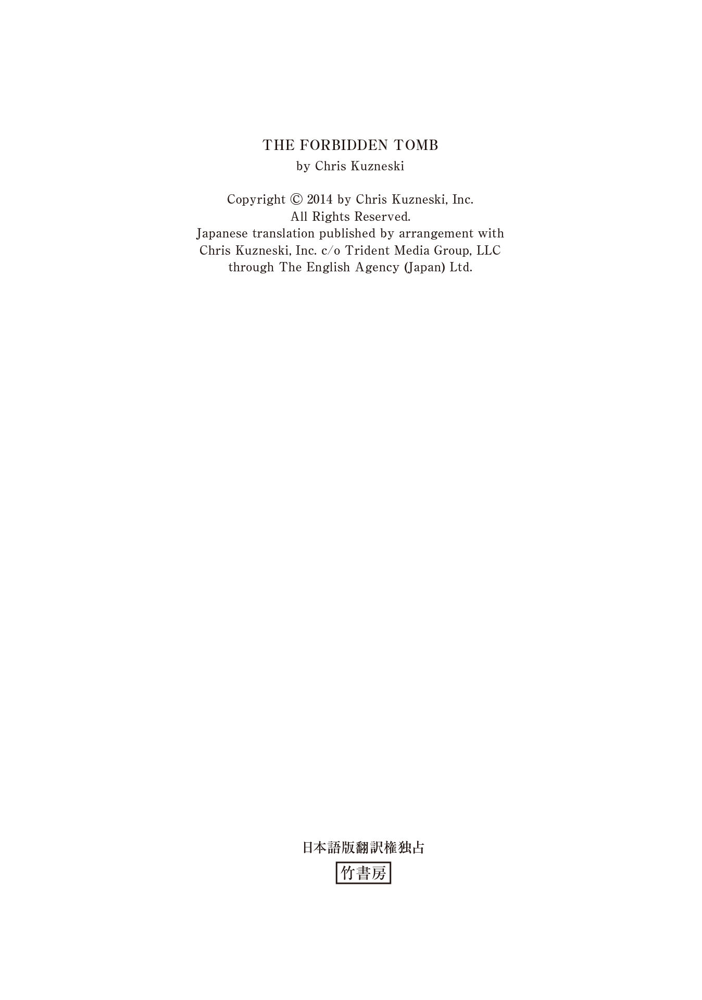
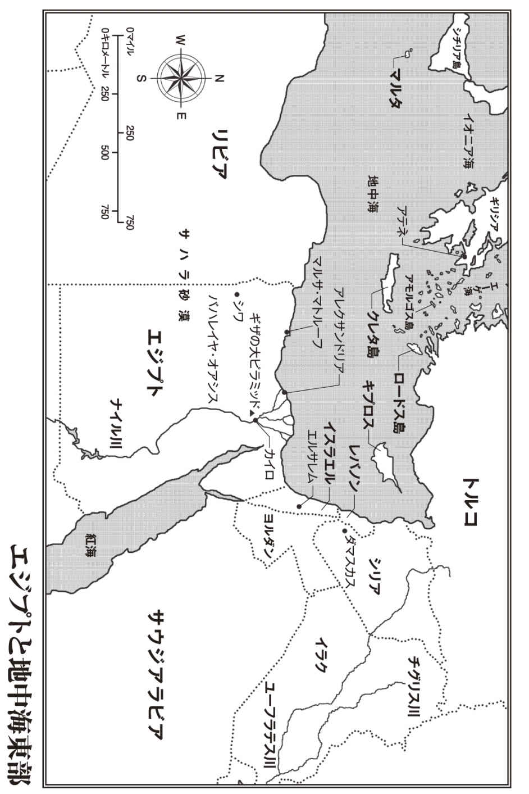

| ＴＨＥ ＨＵＮＴＥＲＳ アレクサンダー大王の墓を発掘せよ 下 | |
| クリス・カズネスキ | |
| 竹書房 (2017) | |
この作品は縦書きでレイアウトされています。
また、ご覧になる機種により、表示の差異が認められることがあります。
一部の漢字が簡略字で表示されていることがあります。

ＴＨＥ ＨＵＮＴＥＲＳ
アレクサンダー大王の墓を発掘せよ 下
主な登場人物
〈ハンターズ〉
ジャック・コッブ .................................リーダー。元陸軍・海兵隊
ジョッシュ・マクナット ........................武器担当。元海兵隊
サラ・エリス .......................................潜入担当。元ＣＩＡ
ヘクター・ガルシア ..............................コンピューター担当。元ＦＢＩ
ジャスミン・パク .................................歴史・言語担当。新聞社勤務
ジャン=マルク・パピノー .....................アメリカの大富豪。ハンターズの金銭的支援者
シリル・マンジャニ ..............................ギリシアの考古学者
サイモン・デイド .................................アレクサンドリアに住むサラの旧友
アジズ・ザワーヒ・ハッサン ..................アレクサンドリアの裏社会のボス
ガズ・カマル .......................................ハッサンの手下
ガヒジ・アワド ....................................ハッサンのボディーガード
ペーター・アルスター ...........................アルスター史料館の館長
モーリス・コープランド ........................世界的な大富豪。パピノーの雇い主


40
十一月四日 火曜日
サハラ砂漠
ジャスミンは胃の中から湧 き上がる焼けるような吐き気で目を覚ました。
嫌な味の液体があふれる前兆は、喉の奥がちくちくする感覚だけだった。ジャスミンは嘔 吐 する直前に、かろうじて顔を横に向けることができた。何時間も意識を奪っていた強力な化学物質を排出しようと、体が懸命に闘っている。両腕を震わせ、体を痙 攣 させながら、胃が空っぽになるまで吐き続ける。どうにか吐き気が止まると、体の本能的な反応に疲れ果て、ジャスミンは再び仰 向 けになった。
ようやく目を開くことができるようになる。
まだ意識は朦 朧 としていたものの、ジャスミンはすぐに自分のいる場所が街の地下ではないことを察した。トンネルは暗くて湿気があり、床や壁は灰色の石とコンクリートでできていた。けれども、この部屋は──どこなのかはわからないが、明るくて乾燥している。天井近くの壁の隙間から太陽光線が差し込み、土がむき出しになった床と周囲の粗削りな赤褐色の煉 瓦 を照らしていた。小さな室内には何もなく、外に通じている狭い出入口が見えるだけだ。
ジャスミンは再び目を閉じ、どのようにしてどこに移されたのかに関する手がかりをつなぎ合わせようとした。襲撃されて抵抗しようとしたものの、激しい眠気に屈してしまったことは覚えている。吐き気とかすんだ意識から、単にあきらめてしまったのではないことがわかる。薬を打たれたのだ──だが、最初の注射で完全に意識を失ったわけではない。
襲撃者の一人の手で体を押さえつけられたまま、バンの後部座席で揺られていたことは記憶している。どこかで車を乗り捨てたのも確かだ。何者かによって荷台から引きずり下ろされ、抵抗できないまま肩に担がれた覚えがある。狭苦しい市場や不安そうな人々の表情が頭によみがえる。騒然とした雰囲気の群衆の間を運ばれていた時だ。けれども、誰一人として声をかけてこなかったし、誰一人として気にかける様子もなかった。そのようなことはアレクサンドリアではさほど珍しくもないかのように。
だが、あの時ばかりは仕方がなかった。
半ば意識を失っていたジャスミンは、爆発が起きたことに気づいていなかった。動揺した市民たちは、担がれたまま運ばれていく一人の女性を気にかけている余裕などなかったのだ。
人々の目には、女性が誘拐されたのではなく、救出されたと映ったことだろう。
市場は誘拐犯たちにとって、上空から監視する衛星の目をくらましてくれただけではない。地上の逃走ルートを隠す働きもしてくれた。彼らはあわてて市場を離れようとする買い物客や店主の動きに紛れることができた。その混乱に乗じて、ジャスミンはアレクサンドリア市内から合流地点まで運ばれた。誘拐犯の役割はそこで終わりだ。
彼らの仕事はジャスミンの身柄を確保すること。
尋問するのはほかの人間の仕事だ。
薬の影響と吐き気の残っているジャスミンが、靴と靴下を脱がされて裸足 でいることに気づくまで数分の間があった。そればかりか、両手首には金属製の重い手錠がはめられていて、手錠から伸びる長い鎖は床にしっかりと固定されたアイボルトに通してある。立つことはできるものの、ジャスミンが動けるのは室内の鎖が届く範囲──直径約一メートル半に限定されている。
両手首にしっかりと回された留め具から逃れようと必死にもがくうちに、ジャスミンの顔面を汗が滴り落ちた。自分の置かれた状況の深刻さを実感するにつれて、焦 燥 感 と室内のむせ返るような暑さで息苦しくなる。汗が肌を流れ落ち、服に浸み込んでいくのを意識しながら、ジャスミンは鋼鉄製の拘束具から何とか手を引き抜こうと試みた。汗のおかげで金属が数センチほど動くものの、それだけでは拘束から逃れるうえでほとんど役に立たない。手錠から手を外そうとするたびに、皮膚のこすれた部分の痛みがひどくなるだけだ。
傷から出血するまでに至った時点で、ジャスミンはあきらめた。
ほかの方法を考えなければならない。
ジャスミンは大きく深呼吸をして、何とか気持ちを落ち着けようとした。この状況を切り抜けることができるはずだ。必要なのは、あわてることなく、この状況に対処すること。この数カ月間、ほかの問題にもそうやって取り組んできたのだから。
一年前のジャスミンだったら、こんな自信は持てなかっただろう。あの頃、現実の危険に直面していたら、恐怖ですくんでしまっていたはずだ。新聞社で翻訳を担当していたジャスミンの本領は調べ物や言語の分野であって、実地調査には向いていない。ハンターズのメンバーの中で、任務への適性を最も欠いているのがジャスミンだった。
けれども、彼女は仲間との差を縮めようと懸命に努力した。
ほかのメンバーが軍やＦＢＩ、ＣＩＡといった組織で磨いたような能力を持つことは無理なものの、足手まといと思われることだけは絶対に嫌だった。コッブから護身術を習うように指示された時、ジャスミンは稽 古 に没頭した。先生の技を観察し、動きが体にしみつくまで自らの技術を高め、毎日のように稽古に明け暮れた。
ほかのメンバーにも負けたくなかったので、ジャスミンはそれ以外の分野でもレッスンを受けて能力の幅を広げた。ガルシアからは高度なコンピューター技術を教わった。マクナットは武器の訓練を喜んで引き受けてくれた。小型拳銃から肩に担いで使うロケットランチャーまで、ありとあらゆる武器の短期集中講義を行なってくれた。けれども、最も役に立ったのはサラの教えだった。
本人の言葉を借りれば「サバイバル・トレーニング」の一環として、サラはちょっとしたこつを教えてくれた。最初は基本中の基本からで、群衆の中に紛れて堂々と姿を隠すにはどうすればいいかを説明してくれた。そこから段階的に難度を上げていき、防犯カメラをかいくぐる方法や、窓に設置された警報機や人感センサーといった標準的な防犯対策をすり抜けるやり方などを伝授してもらった。
また、ジャスミンの要望を受け、サラは錠のこじ開け方も教えてくれた。
両手を拘束する手錠を見つめるジャスミンは、運が自分の方に向いてきたと感じていた。家や車で使用されているタンブラー錠の開け方はまだ完全には習得できていないものの、手錠ならば話は別だ。異なる型や大きさのものでも一つの鍵で開けられるようにできているため、錠がはるかに単純な構造になっている。内部の仕掛けを動かすことのできる丈夫で小さなものがありさえすればいい。
ジャスミンはピッキング道具の代わりになるものがないか、床を探した。だが、土と塵 しか見えない。次にズボンのポケットをチェックした。また、髪の毛を手でかき上げ、普段は留めていないからあるはずないと思いつつ、ピンでも挟まっていないかと探した。当然ながら、見つかるわけがない。
その時、不意にジャスミンは答えに思い当たった。
とっさにベルトを緩め、ズボンのループから外す。ジャスミンはバックルの部分を両手で抱え、使用法を考えた。バックルのピンは細く丈夫で、先端が軽く曲がっている。即席の道具としては、これ以上のものはない。
ジャスミンは絶対にうまくいくはずだと信じた。
ピンの曲がった先端部分を片方の手錠の鍵穴に挿し込み、鍵穴の端に沿ってゆっくりと回転させながら、引っかかるところがないかを探す。通常はバレルキーの突起で手錠内部の歯車が嚙み合った部分を解除するが、ベルトのバックルを利用しても可能なはずだ。力をかける正しい場所が見つかりさえすればいい。
ピンが何かに引っかかったのを感じると、ジャスミンはピンの進入角度を変え、強く押した。カチッという音とともに油を差した蝶 番 が動き、鋼鉄製の輪がジャスミンの手首から外れる。ジャスミンは笑みを浮かべながら、もう片方の手錠で同じ作業を繰り返した。数秒後、同じような心地よいカチッという音が響き、手錠が外れた。
ジャスミンは満面の笑みを浮かべながら手錠を床に投げ捨てた。自分一人の力で自由の身になれたのだ。自信と技術はハンターズの仲間から受けたものだが、この瞬間、まわりには誰もいない。いざという時に手を貸してくれる人のいない一人きりの状態で、成し遂げることができた。
ジャスミンは満足感が高まるのを覚えたものの、はやる気持ちを抑えつけた。
両手が自由になったからと言って、自由の身になれたわけではない。
ジャスミンはそっと立ち上がった。最初はおぼつかない足取りだったものの、平衡感覚を取り戻しながら、外に通じる狭い出入口までの距離を詰めていく。ジャスミンはその手前で立ち止まり、誘拐犯の気配に耳を澄ました。だが、何も聞こえない。ジャスミンは顔を突き出して外の様子をうかがった。隣にも部屋がある。自分が監禁されていた部屋よりも少し広いくらいだろうか。
しかし、そこもがらんとしている。
調べるようなものが何もないため、ジャスミンは隣の部屋の奥にある木製の扉を目指して慎重に進んだ。扉まで達すると、温かい木に耳を当て、何かが聞こえないか──何でもいいから、居場所を特定できる手がかりの音がしないか、聞き耳を立てた。
けれども、何も聞こえない。
取っ手に手を掛けたジャスミンは、扉に鍵がかかっていないことを知って意外に思った。部屋の中にはほかに誰もいないことを考え合わせると、導かれる結論は一つしかない。見張りは扉の向こうにいるのだろう。
ジャスミンは視線を落とし、裸足のままどこまで、どれだけ速く走れるだろうかと考えた。深く息を吸い込み、勇気を振り絞りながら、頭に残った最後のもやもやが晴れるのを待つ。扉の向こうに出たら、安全な場所にたどり着くまで走り続けるつもりだ。生き延びるために必要なのは、誘拐犯から逃げ切ること。
ジャスミンは意を決してうなずいた。
チャンスは今しかない。
41
地中海
夜陰に乗じて、コッブはクルーザーを操縦して地中海の沖合に移動させた。アレクサンドリアの爆破事件は世界中のマスコミの注目を集めている。そればかりか、偵察衛星を保有するすべての国が衛星の軌道をこの地域に合わせ、不審な動きを探っていた。そうした衛星の多くは、三百キロ上空から自動車のナンバープレートを読み取れるほどの高度な光学技術を備えている。人間を追跡することなど朝飯前だ。
ターゲットが見つかりさえすれば。
コッブは上空を偵察するカメラの目から逃れる必要に迫られた。港やマリーナはどこも厳重な監視下に置かれており、各船舶の身元とその保有国の登録情報との照合が行なわれている最中だ。なかでもエジプト政府は外国船籍の船舶に大きな関心を寄せている。港湾都市のアレクサンドリアの沿岸海域には、観光客だけでなくテロリストも接近することが可能だ。自分たちのチームはまだどこからも怪 しまれているわけではないが、メンバーの多くは軍のデータベースに登録されている。
そのうちの一人の顔が認識されただけでも、不審に思われる可能性がある。
全員が一緒にいるところを目撃されたら、警戒態勢が取られるだろう。
そのため、公海上に出ることを選んだのだ。
だからと言って安心できるわけではないが、少なくとも不意打ちを受ける心配はない。全方向にわたって十五キロの見晴らしが利くし、レーダーがあれば接近する航空機やほかの船舶を視界に入る前から探知することも可能だ。移動したことでアレクサンドリアへのアクセスが絶たれてしまったものの、街から自分たちへのアクセスも絶つことができた。次の動きを見極めるまで、多少の不便は我慢してでも距離を置いた方が無難というものだ。
クルーザーの錨 を下ろすと、コッブは甲板下の船体前部にあるラウンジへと向かった。軽食を盛ったトレイを手にしている。チームの仲間は不眠不休で作業をしており、少しは休憩が必要だとの判断からだ。「何か成果は？」
サラが山積みになったメモ用紙から顔を上げた。そのいらだちの表情を見ただけで、聞く前から答えはわかる。「まだ何も。引き続き探しているところ」
コッブはうなずきながら、テーブルの上に食べ物の載ったトレイを置いた。トイレ休憩を除くと、サラは丸一日、この部屋から外に出ていない。その間ずっと、ガルシアがコッブとマクナットの懐中電灯から取り出した映像データを眺め続けている。トンネル内に出現した謎の男たちに重点を置き、服装、行動、殺害方法など、目につく特徴を観察しながら、身なりや戦術の中に中東あるいはほかの地域の既知の戦力と一致する点がないかを探しているところだ。
これまでのところ、まったく手がかりは得られていない。
「ほら」声をかけながら、コッブはサラにオレンジを一個、放り投げた。「何か食べろよ」
サラはうなずいて感謝した。「ありがとう」
その直後、マクナットが部屋に駆け込んできた。ぎょろぎょろした目、ぼさぼさの髪、はあはあという息遣いから、この男もほとんど休みを取っていないことがうかがえる。大量に摂取したカフェインのおかげで何とかぶっ倒れずにいることも推測できる。
コッブは心配しながらマクナットを見つめた。「大丈夫か？」
「食べ物のにおいがする」その言葉とともに、マクナットはトレイに突進し、コッブが自分用に作ったサンドイッチをつかんだ。サンドイッチをほおばったマクナットの顔に、喜びに満ちあふれた表情が広がっていく。「うわあ、こいつはうまいや。何のサンドイッチ？」
「俺のだ」コッブは答えた。
マクナットは前腕部で口をぬぐった。「いやあ、実に見事な腕前だな。うまいなんてもんじゃないよ。マスタードは入っていた？」
サラがあきれ返った様子で首を左右に振った。「あんたねえ、食料庫の中にはいくらでも食材があるじゃないの。冷蔵庫の中にも詰まっているし。ここに飛び込んできて私たちのを横取りしなくてもいいでしょ」
マクナットはサンドイッチに再びかぶりついた。「食べ物のためにここに来たんじゃない。たまたまあったから食べただけさ。ここに来たのは君の役に立てるかもしれないと思ったからだ」
サラは怪 訝 そうな目でマクナットを見た。「どんな風に役に立てるというわけ？」
マクナットはサラの向かい側のソファーに座り込んだ。「爆薬に関する手がかりを得ることができた。まあその、正確には......できたかもしれない、と言うべきかな」
サラには言葉遊びをしているような気持ちの余裕などなかった。「それってどういう意味なの？」
コッブはマクナットの能力に信頼を置いていたが、サラの気持ちも理解できた。この元海兵隊員の情報伝達力には改善の余地がありそうだ。「ジョッシュ、いったい何が言いたいんだ？」
マクナットも二人の戸惑いに気づいた。今は曖 昧 な物言いをしている場合ではない。多くの事柄がこれからの行動にかかっている。「例のセムテックスがチェコ共和国で製造されたことはほぼ間違いない。『イクスプルージア』という名前の会社だ」
「イクスプルージア？」サラは鼻で笑った。「そんな名前の会社があるわけないでしょ」
「本当にあるんだな、これが」マクナットはサンドイッチを食べながら話を続けた。「実在する会社の名前だよ。チェコ共和国のパルドゥビツェ郊外のセムティンにある。その地名にちなんで、自分たちが開発した爆薬を『セムテックス』と名づけたのさ。現在でもセムテックスに関しては世界一の生産量を誇っている。少なくとも六種類を製造していて、買い手には困っていないようだ」
爆薬にはしばしば特有の化学物質や粉末状の金属が含まれていて、製品によってその比率が異なる。こうした「爆発物マーカー」は、爆薬の製造元および購入者を特定できる暗号化されたメッセージとでも言ったらいいだろうか。爆発物マーカーさえわかれば、ほかに必要なのは製造元の事務書類だけだ。爆薬内のマーカーを製造元のリストと照合すれば、購入者の名前も判明する。
コッブはあの時に地下で爆薬のサンプルを採取しなかった自分を責めた。「検死報告書を入手すれば、マーカーをたどることが可能か？」
「たぶん、無理だろう」マクナットは答えた。「でも、問題ない。そんなことをする必要はないんだ」
「どうしてたどれないわけ？」サラが訊ねた。
「あと、どうしてその情報が必要ないんだ？」コッブは付け加えた。
マクナットはまずサラの質問に答えた。「たどれない理由は、最近までセムテックスには爆発物マーカーが義務付けられていなかったからだ。その後も、該当するのは新たに製造された分だけだ。倉庫内にはマーカーの含まれていない古いセムテックスが大量に残っているのさ」
マクナットはコッブの方を見た。「マーカーが関係ないという理由は、爆薬は解決策の一部にすぎないからだ」
コッブは理解できなかった。「どういう意味だ？」
「セムテックスをたどれないとわかった時、ほかに手がかりになりそうなものがないか探した」マクナットは小脇に抱えていたフォルダーを開き、爆薬に取り付けられていた起爆装置の写真を見せた。「そうしたら、こいつを発見したのさ」
コッブは写真の中のものに見覚えがあった。地下貯水池内で爆薬を同時に炸 裂 させるために使用されたタイマーだ。
マクナットは質問を待たずに説明を始めた。「どこにでもあるようなデジタル式のタイマーのように見えるけど、実はそうじゃない。普通には手に入らない代物だ。チュニジア製で、製造会社の名前はメカナヴ。そこは何と船を造っていて、このタイマーは船舶用の高性能ディスプレイの計器盤に使用されているものだったんだ」
サラは情報をつなぎ合わせようとした。「どういうこと？ どうしてチュニジア製の船舶用タイマーが、爆薬の起爆装置として使用されていたわけ？」
マクナットは笑みを浮かべた。「都合がいいからさ」
マクナットはアフリカ北部の地図を取り出し、北の海岸線の先端に位置する小国のチュニジアを指差した。そこから指で南にたどっていくとリビアがある。
「ムアンマル・アル＝カダフィを覚えているかい？ 確か四十年以上もリビアの最高指導者を務めていた頭のおかしいおっさんだ。彼の政権下で、リビアはイクスプルージアの最大かつ最重要な顧客となった。リビアが購入したセムテックスはリビア軍の所有物だが、そのほとんどがブラックマーケットに流出している」
コッブには具体的な数字が必要だった。「どのくらいの量なんだ？」
「ぞっとするくらいの量さ」マクナットは答えた。「少なくとも七百トン。それでもかなり控え目な数字かもしれない。千トンを優に超えるはずだと主張する専門家もいる」
コッブはうめき声をあげた。サラのために比較用の数字をあげて説明する。「一九八八年のロッカビー事件を覚えているか？ あの時は数十グラムのセムテックスで航空機が空中分解したんだ」
スコットランドのロッカビーに航空機が墜落したこの事件について、サラはＣＩＡでの訓練中に深く調べた経験があった。被害は機体の爆破にとどまらず、乗客乗員二百五十九人のほか、地上の住民の命までもが犠牲になった。
だが、マクナットはサラに過去を振り返る時間を与えなかった。「リビアはセムテックスの闇取引の温床だが、爆弾を製造するうえで必要なほかのパーツを提供できる製造拠点を持っていない。最も手近で信頼できる電子機器の供給源が、北の隣国のチュニジア、具体的にはメカナヴ社だ。トラックに満載されたタイマーが、同社の組み立て工場から造船所へと向かう途中、トラックごと姿を消す。次に姿を現すのは、十中八九、トリポリかベンガジの路上なのさ」
マクナットは次の論点を強調するため、タイマーの写真を指先で叩いた。「アレクサンダー大王の墓よりもこっちの方が金になる。ブラックマーケットに流通するこのタイマー数個分の金で、船が丸ごと一隻買えるほどだ」
ようやくコッブにも全貌が見えてきた。マクナットがここまでたどり着くのに多少の時間はかかったかもしれないが、それだけの価値はあったというものだ。リビアとの国境はアレクサンドリアから五百五十キロほどしかない。一日かからずに往復できる距離だ。これで調査の範囲を狭めることができる。
「サラ──」
サラはコッブの言葉を遮 った。「私の方の調査も絞り込めそうね。リビアとの接点があって、その中でも爆発物の取引歴のあるグループを当たってみる」
「しかも、潤 沢 な資金があるグループだ」コッブは付け加えた。「タイマーがそんなにも値が張るとしたら、後ろ盾 となる大金持ちが存在しているに違いない。貯水施設全域に爆弾を仕掛けるだけの余裕があるのだから、資金に困っているはずがない」
サラはラップトップ・コンピューターをつかみ、新たな調査条件を入力すると、再び精力的に作業に取りかかった。
まだ小さな進展にすぎないものの、コッブはマクナットに感謝するべきだと判断した。「よくやってくれた、ジョッシュ。サンドイッチ一個分に値する」
マクナットは笑みを浮かべ、げっぷをした。「うまかったよ、チーフ」
42
コッブとマクナットが言葉を交わし、サラがキーボードを叩いているところに、ガルシアが司令センターから駆け込んできた。「話に割り込んでもいいかな？」
コッブが「もちろん」と答えると同時に、サラは「だめ！」と叫んだ。
コッブは笑いをこらえ切れなかった。「何か発見したのか？」
ガルシアはコッブに向かって使用済みのケミカルライトを投げてよこした。「製造元がわかったよ」
コッブは手のひらの上でプラスチック製の筒を転がした。「当ててみせよう。リビアだな？」
その反応に至るまでの三人の会話を知らないガルシアは、ほんの一瞬、当惑を覚えた。コッブが当てずっぽうの考えを口にするような人間でないことは承知しているものの、今の発言はあまりに唐突に思えたからだ。「ええと、いや、リビアじゃないよ」
サラが続いた。「チュニジア？」
マクナットも聞かずにはいられなかった。「チェコだな？」
ガルシアは何がどうなっているのかさっぱりわからなかったが、表情を見る限り、誰一人として冗談を言っているわけではなさそうだった。「どっちも違う。ギリシアで売られていたんだ」
「ギリシア？」コッブは聞き返した。「ほかの国でも買えるのか？」
ガルシアは首を横に振った。「ううん。ギリシアのピレウスで製造されていて、その会社は国内向けにしか販売していない。税金関係の理由から、輸出は一切されていないんだ」
サラは小声で悪態をついた。「振り出しに戻ったわけね」
自分の成果を台なしにされたことに腹を立てたマクナットは、食べかけのサンドイッチをガルシアに投げつけた。「いい情報をありがとよ、フェルナンド」
ガルシアはサンドイッチをキャッチしようとしたものの、空中でばらばらになってしまったため、パンの塊、チーズ、マスタードをたっぷり塗った肉が、破砕性手 榴 弾 の破片のように降り注いだ。ガルシアはとっさに顔を守るだけで精いっぱいだった。
「いったいどうしたんだよ！」そう叫びながら、ガルシアはビンテージもののＴシャツに付着した汚れを調べた。「どうしてこんな嫌がらせをするのさ？」
「おまえの最新情報が嫌がらせだったからだ！」マクナットが叫び返した。
コッブは二人の罵 り合いを無視して、新たな展開から意味を導き出そうとした。船舶用タイマーとセムテックスから得た情報は、リビアを拠点として活動する勢力の存在を示唆していた。男たちがもっと大きなグループに所属しているのか、それとも雇われた傭 兵 にすぎないのかまでは判断できないものの、場所に関しては有力な手がかりを得られたと思っていた。
その手がかりが、ガルシアのおかげで怪しくなってしまった。
これはかなり深刻な事態だと考え、コッブはさらなる情報を求めた。「ケミカルライトがギリシア産だというのはどのくらいの精度の情報なんだ？」
「九十九パーセント確実だよ」ガルシアはＴシャツの胸の部分に貼り付いたサラミを剝 がしながら答えた。それ以上の数字を持ち出すべきではないことくらいは心得ている。この世の中には絶対に確実なことなど存在しない。どんな場合でも例外の可能性がある。
「だが、百パーセントではないんだな？」コッブは確認した。
ガルシアは結論に至る過程を詳しく説明するまで、コッブが納得してくれそうもないと感じた。だが、そのためには会話を奇妙な方向に進めなければならなくなる。「レイブに行った経験はある？」
サラはキーボードを叩く手を止め、小首をかしげた。ガルシアの質問も気になったが、それに対してコッブがどんな反応をするのかも興味深い。
「レイブ？」コッブは聞き返した。
その光景を想像しただけで、マクナットは笑い出した。「当然だ。ジャックはレイブの常連だからな。トリップ・ホップ、アシッド・ハウス、レゲエ・ダブ──何でも来いだ」
コッブはマクナットの話がさっぱり理解できなかった。急に外国語を話し始めたも同然だ。レイブに関するコッブの知識は、テレビの画面を通して得たものしかない。「ハイになった十代の若者たちがゾンビのように一晩中踊り明かすパーティーのことか？ いいや、ヘクター、俺は行ったことがない」
「別にそうしたライフスタイルを支持しているわけじゃないからね」ガルシアは弁解するかのように返した。「レイブとは何かを知っているかどうか、確認したかっただけなんだ」
「ああ、どんなものなのかは知っている。だが、なぜだ？」
ガルシアは早く話の本題に入らないと、コッブが会話を打ち切りかねないと察した。だが、言いたいことを理解してもらうためには背景情報の説明も必要だ。
「レイブは若者たちが鬱 憤 を晴らすための一つの方法として始まったんだ。長時間のダンスによる肉体の酷使は、純粋なストレスの発散にすぎなかった。問題は、一部の人たちがやめ時を知らなかったこと。二、三時間のダンスでは物足りなくなると、気分を高揚させるために、あるいはパーティーをもっと続けるために、不法な薬の助けを借りるようになったんだ。エクスタシー、クリスタル・メス、スペシャルＫ、ＧＨＢ──そういったものが、キャンディを分け与えるかのように配られたのさ。参加者の若者たちは目を覚ますと素っ裸で病院のベッドに寝ていて、どうしてそうなったのかまったく記憶がないような有様だった」
マクナットはため息をついた。「ああ、一九九〇年代が懐かしいぜ」
コッブは笑みを浮かべた。「つまり、麻薬の売人にとっては素晴らしい機会だったわけだな。だが、今回の件との関係は？」
ガルシアは説明を続けた。「麻薬のほかにレイブの会場の多くで一般的に見られたのが、大量のケミカルライトなんだ。参加者はケミカルライトを服にくっつけたり、手に持って振り回したりした。千人近い人たちが、暗闇の中で様々な形を光で描いていたんだよ。しらふの時に見てもかなりいかした光景さ。薬でハイになっている時なら、ぶっ飛んじゃうよね」ガルシアは一呼吸置いて周囲を見回した。「人から聞いた話だけど」
「続けてくれ」
ガルシアはコッブに視線を戻した。「薬で朦朧となった大勢の参加者以外で光のショーに感謝していたのは、捜査当局、なかでもＤＥＡだった」
コッブは困惑して眉 間 にしわを寄せた。ＤＥＡ──麻薬取締局がなぜプラスチック製の光の棒に関心を寄せるのか、理解できない。「どういうことだ？」
「最大規模のレイブは、最大規模の麻薬密売組織によって企画された。街中で一人一人に声をかけて売るより、一晩で五千人の客に売りさばく方が効率的だからね。ＤＥＡは問題が拡大しつつあることを認識していたものの、密売組織はそうしたパーティーでほとんど痕 跡 を残さない。開催が発表されるのは開始一時間から二時間前だし、終了後に残っているのは過剰摂取した中毒者だけだ。それと、踏みつけられた農場や薄汚れた倉庫内に散乱した大量の使用済みのケミカルライト」
コッブはようやく話を結びつけることができた。「ある時点で、捜査当局はケミカルライトのシリアル番号を調べたらどうかと思い当たった。製造元を特定できれば、製品の送り先をたどることができる。販売場所がわかれば、購入した人物の名前もわかる」
ガルシアはうなずいた。「店にふらっと立ち寄って、棚から一万本のケミカルライトを買うなんてことはできない。レイブの開かれる夜に間に合うよう、事前に注文しておかなければならないのさ。パーティーで配られるこの景品から、当局は黒幕にたどり着くことができた。それ以来、当局はケミカルライトの全製造業者の記録をつけている。すべての製品に関して、どこで誰によって製造され、どのような流通経路をたどったのかを突き止めることができるんだ」
ガルシアはコッブの手の中にあるプラスチック製の筒を指差した。「だからこのケミカルライトがギリシアで製造および販売されたということがわかるのさ。間違いないよ」
「なるほど」コッブは返した。「話はわかった。このケミカルライトはリビアではなくギリシア製だ。俺たちの理論もそれに合わせて修正しなければならない。ほかに何かあるか？」
「うん」そう言いながら、ガルシアはシンクに置いてあったペーパータオルをつかみ、Ｔシャツにこびりついたマスタードをぬぐい取ろうとした。「ようやくジャスミンの懐中電灯から映像を取り出すことができたんだ。もちろん、全部じゃないけど、かなりの長さがあるよ。もうすぐアクセスできるようになる」
「もうすぐって、いつなの？」サラが問いただした。
ガルシアは腕時計に目を落とした。「あと一、二分かな。映像を僕たちのネットワークサーバーにアップロードしているところなんだ。その作業が終われば、テレビからでも、ラップトップからでも、スマートフォンからでも視聴できる。僕たちの暗号化されたネットワークに接続してさえいれば、ファイルにアクセス可能さ」
コッブはうなずいた。チームとして共通の目標を掲げているものの、現在は各自がそれぞれ別の角度から調査に取り組んでいる。この話し合いが終われば、いつでもどこでも、好きな時に映像を見ることができる。ほかの人の邪魔になることも、リモコンの奪い合いになることもない。
だが、その前にするべきことがある。
映像を一緒に見なければならない。
チームとして。
43
ガルシアがタブレット端末のボタンを何個か押すと、その直後にジャスミンの懐中電灯からの映像がテレビ画面上に流れ始めた。
コッブ、マクナット、サラが見つめる中、ガルシアは映像の最初の部分を早送りした。貯水池に入ってからしばらくの間は全員がジャスミンと行動を共にしていたため、ほかの三人が目にしていないものは映っていない。肝心なのはあの壁をくぐり抜けた後にジャスミンの懐中電灯が録画した内容だ。
補強された壁の先のトンネルが画面上に映し出されると、ガルシアは映像を通常の再生速度に落とした。コッブたちが記録した映像のように鮮明ではない。復元できた断片を寄せ集めた、途切れ途切れの粗い映像だ。最新のデジタルフィルムというより、昔懐かしい八ミリビデオのように思える。
しかし、コッブたちが必要な情報は映っている。
サラの目がピクトグラムの一部をとらえた。「あれが私たちの発見した彫刻よ」
壁に彫られた絵に合わせて、ジャスミンの説明が聞こえる。映像と同じように、音声の一部にも不具合が残っている。ジャスミンの声は接続の悪い電話の向こう側から聞こえてくるかのようだ。
「彼女の説明の内容を確認しようとしたんだ。聞き取ることができた部分は、という意味だけど」ガルシアが説明した。「でも、全然うまくいかなかったよ」
「どうしてだめだったんだ？」コッブは不思議に思った。
「僕のキーボード上にあるのはアルファベットであって、古代エジプトの絵文字じゃないから。どんなに頑張っても、『くねくねした線の隣にある角の生えた顔』の絵文字を入力する方法が見つからなくて」
やがて最後の彫刻作品が映し出された。トンネル、待機している船、アレクサンダー大王の記号などを見ることができる。一足先に復元できたサラの懐中電灯の映像で確認した通り、二人の間でやり取りがあった後、ジャスミンを残してサラがトンネルの先に姿を消した。
サラがその場を立ち去ると、ジャスミンは壁に刻まれた最初の彫刻まで戻った。後世のためにしっかりと記録に残そうとの考えからか、作品を余すところなく録画している。
ジャスミンにとって、これは一生のうちで二度とない機会だったのだ。
再び最後の彫刻が映し出されると、画面上の映像が静止した。コッブたちはこれもメモリーカード内に録画されたデータの不具合かと思ったが、そうではなかった。ガルシアが意図的に再生を止めていたのだ。
「いいかい、みんな」ガルシアは警告した。「ここから先は......見るのがつらいかもしれない」
コッブは理解してうなずいた。「そうかもしれないが、見る必要がある」
ガルシアはごくりと唾 をのみ込んでから、映像を再生させた。
画面を通して見る限り、ジャスミンには危険を感じる時間すらなかったようだ。不審な物音を調べる様子も、謎の人物に声をかける様子もない。壁に全神経を集中させていたジャスミンは、次の瞬間には攻撃に抵抗していた。
一見したところ、画面上の揺れ動く映像からはほとんど何も手がかりが得られない。未知の侵入者に襲われてパニックに陥ったジャスミンの動きが不鮮明に映っているだけだ。こもった悲鳴と苦しげなうめき声から、ジャスミンが力ずくで連れ去られようとしていることがわかる。その声が不意にやみ、不気味な静けさが続くと、敵の手に落ちた彼女がひどい怪 我 を負ったのではないかと、全員が不安に駆られた。
その直後、映像が再び不意に停止した。
数秒間、誰も口を開かなかった。
「これで全部」ガルシアが小声で知らせた。「あとは何も残っていない」
マクナットは首を横に振った。「もう一度見せてくれ」
「お願いだからやめて」サラが訴えた。チームメイトを失ったのは自分のせいだという罪悪感がどうしても消えないのだ。「何が起きたのかはわかったでしょ。二度もあの声を聞く必要はないわ」
だが、マクナットは譲らなかった。「再生してくれ。何か見えたような気がする」
何かを見た、あるいは何かが見えなかったということに関して、狙撃兵の言葉を疑うわけにはいかない。コッブは指示した。「ヘクター、聞こえただろ。再生してくれ」
マクナットはテレビ画面に歩み寄った。「最後の最後、映像が終わる直前を見せてくれ」
ガルシアは映像を巻き戻し、再生した。
マクナットはさらに近づいた。「もう一度」
ガルシアは指示に従った。
「もう一度頼む」マクナットは要求した。「今度はスローで」
ガルシアが再生の設定を変えると、映像がゆっくりと流れ始めた。半分ほど進んだところで、マクナットの手がさっと前に伸び、画面を指差した。
「止めてくれ！」マクナットはうれしそうに叫んだ。「何か見えたと言っただろ？」
コッブたちも身を乗り出し、マクナットがそんなにも喜んでいる理由を探ろうとした。だが、わかるのは画面上に明るい部分と暗い部分があるということくらいだ。
「どこなの？」サラが訊ねた。
マクナットは画面の中央を指し示した。「ほら、ここだよ」
コッブはピクセルのぼんやりとした塊から、サラの顔に視線を移した。サラはすっかり困惑した様子で顔をしかめてから、ガルシアの方を見た。ガルシアも目を細くして画面をじっと見つめたままだ。三人の誰一人として、何も見えていないのは明らかだった。「ジョッシュ、いったい何が見えるというんだ？」
「サル男さ」マクナットは自慢げに答えた。
サラは自信たっぷりな答えに目を丸くした。「サルの落書きならわからないでもないわ。でも──」
「本当だってば、ここに誰かがいるんだよ！」
マクナットはしびれを切らしてうめき声をあげ、大きな足音を立てながらサラが作業場として使用していたラウンジの片隅に向かった。テーブルの上にあった黒いマーカーペンを手に取ると、再び大きな足音とともに戻ってくる。次の瞬間、マクナットは黒の太いマーカーペンで直接テレビの画面に描き込み始めた。
「画面はだめだってば！」ガルシアの注意は間に合わなかった。
「ここを見ろよ」マクナットは画面上に映る塊の輪郭をペンでなぞった。「これが頭......これが首......そしてここが肩だ......こうすればわかってくれるよな？」
マクナットは黒っぽい塊のまわりに何重もの円を描いた。
今度はサラの方からコッブに意見を求めた。「サル男の姿が見えないのは私だけかしら？ 白状するけど、視力がよくなるマジカル何とかが苦手なのよ。どれだけ目を凝らしても、変な帽子をかぶった犬の姿が絶対に見えないの」
「俺は犬を見つけるのなら得意なんだが、こっちのサル男とやらは見えないな」コッブは返した。
マクナットは犬が吠 えるような声をあげながら、室内を見回して絵を描くための道具を探した。「誰かクレヨンかペンキ缶を持っていないか？」
「待ってよ！」ガルシアは制止した。これ以上汚されると考えただけで吐き気を催してくる。「取り返しのつかないことをする前に、デジタルの手法を試させてよ。うまくいけば、フィルターをかけてノイズの一部を除去できるかもしれない」
「オタク用語以外で説明しろ」マクナットが要求した。
「そうしたつもりだけど」ガルシアはタブレットを指差した。「元の映像がもう少し鮮明な状態だったら、すでに試していたかもしれない。でも、失われたセクターがあるから、僕の設定条件が映像にどんな影響を与えることになるか、正直なところ自信がなかったんだ。見やすくなるかもしれないし、かえって見にくくなるかもしれない」
数秒後、その答えが判明した。
映像の輪郭が、鮮明に表示された。
サラは啞 然 として画面を見つめた。「驚いた。田舎者の言う通りだわ」
コッブもうなずいた。今ならはっきりと見える。
頭。首。左右の肩。
マクナットは勝ち誇ったような笑みを浮かべた。
しかし、すぐにその笑みが凍りついた。
にやにやとほくそ笑む代わりに、マクナットは再び身を乗り出し、画面上の男に鼻先が触れるほどの近さで、食い入るように映像を見つめ始めた。やがて画面から顔を離すと、手のひらに唾を吐き、男の首からマジックの線をぬぐい取ろうとする。高性能テレビの画面に唾 液 とインクの混じった液体が付着するのを見て、ガルシアの口から喉を詰まらせたかのような音が漏れたが、マクナットはおかまいなしに作業を続けた。二人の様子を眺めるコッブとサラはおかしくてたまらなかった。
「何をしているの？」サラが訊ねた。
「ほかにも何かが見える」マクナットは答えた。
サラは目を見開いた。「冗談でしょ」
「いいや、本当に見える」マクナットは唾を吐いては画面をぬぐい続けた。
「ジョッシュ」コッブは声をかけた。「何が見えるんだ？」
「何かの印だ。タトゥーかもしれない。傷跡かもしれないな。どこかの馬鹿が画面に落書きしたからよくわからない。でも、一風変わった何かなのは間違いない」
「『一風変わった』をもう少し具体的に」
マクナットは画面から離れ、映像を指差した。「自分の目でどうぞ」
コッブは奇妙な記号を観察した。二つの同心円を二本の柱のようなものが支えていて、柱は下に行くにつれて間隔が広がっている。だが、コッブはこんな記号をこれまで見たことがなかった。「これが何だかわかるか？」
サラは小首をかしげながら、画面上にはっきりと浮かび上がった記号の正体を探った。「タトゥーにしては光沢があるわね。焼印じゃないかしら。秘密結社で使われていたような」
「記号の形の話だよ」コッブは言った。
「ああ、そういうこと」サラは顔を近づけた。「輪郭からすると鍵穴みたいね。古いタイプの鍵だけど」
「それは俺も思った」コッブは認めたものの、そうではないという予感がする。もっと抽象的な意味を持っているように思える。「ヘクター、君の意見は？」
「僕の？」ガルシアは元気のない声で返事をした。そっと画面をのぞき込み、マクナットの唾液が残っていないかを確かめる。きれいにぬぐい取られていることを確認してから、ガルシアはようやく記号に意識を集中させた。「わからないな。ヒエログリフの一種かもしれない──壁に刻まれていたピクトグラムみたいな。調べてみるけど、さっきも言ったように、画像を歴史家に直接見てもらえないとしたら、どうやって調べたらいいのかわからないよ」
ガルシアが言葉を切ると同時に気まずい沈黙が流れ、全員の頭に同じ思いがよぎった。
〈ジャスミンがここにいたら、答えを教えてくれるのに〉
44
サハラ砂漠
ジャスミンは小屋の扉を開けて走り始めたものの、すぐにどこにも行き場がないことに気づいた。広い道も、狭い路地も、建物もなければ、扉の外で見張りに就いている人間もいない。だだっ広い砂漠が広がっているだけで、生き物のいる気配はない。人里離れた場所で置き去りにされ、放っておけば死ぬだろうと思われているかのようだ。意外な展開に混乱し、決死の走りはいつの間にか途方に暮れたよろめきに変わっていた。
どの方角に目を向けても、砂漠しか見えない。
足の下の焼けるように熱い砂を意識しながら、ジャスミンは状況を把握しようと試みた。長く歩き続けることはできない......少なくとも、このままでは無理だ。真夏の酷暑の頃と比べると、砂漠の気温はかなり低くなっているとはいえ、素足を守る何かが必要だ。自分が直面している事態を認識し、ジャスミンは計画を再考する必要があると感じた。やむをえず踵 を返し、比較的安全と思われる質素な小屋に向かって戻り始める。
ふと好奇心を覚えたジャスミンは、扉の前で立ち止まり、足もとの灼 熱 の大地に耐えながら、調査のために小屋の裏側に回った。建物の裏手に何らかの希望の印があることを期待していたが、そこにあったのは正反対のものだった。救出への希望の代わりに、はるか彼方 に通じるかすかなタイヤの跡が残されていた。
ジャスミンは地平線に目を凝らした──人が暮らしている気配を探す。だが、それらしきものは何も見つからない。どの方角を向いても、果てしない砂の海が続いているだけだ。別の状況だったら、途切れることなく連なる起伏に富んだ砂丘と抜けるような青空を、美しいと感じていただろう。けれども、今は自分の置かれた苦境への恐怖が募るばかりだ。
ジャスミンには選択肢がそれほどあるわけではなかった。自分を拉 致 した男たちは、必ずこの小屋に戻ってくるはずだ。これまでのところは生かしてくれているものの、拉致された理由を突き止めるまでここにとどまりたいとは思わない。相手の不意を突くことくらいはできるかもしれないが、武装した複数の男たちから身を守れるかとなると自信がない。しかも、ジャスミンはこれまで意図的に人を殺したことがなかった。そのような状況に陥った場合、それだけの勇気があるかどうかも怪しい。
その一方で、砂漠の恐ろしさも十分すぎるほど承知している。砂漠は無慈悲で、特に水、日焼け止め、靴などの装備なしで立ち入る人間に対しては容赦しない。そうした必要最低限の装備も持たずに砂漠を歩こうと考えるだけでも狂気の沙汰だ。だが、しばらく考えを巡らせた後、ジャスミンは誘拐犯たちが戻ってくるのをじっと待つよりも、砂漠を相手にする方がまだましだと判断した。
男たちが何を企んでいるのか考えたくもない。
楽しいことでないのだけは確かだ。
決死の逃避行から足を守るために、ジャスミンはシャツの袖を引きちぎり、間に合わせのモカシンを作った。強烈な太陽光線を浴びれば腕が焼けてぼろぼろになるだろうが、足に水ぶくれができるのは回避できる。肩や腕が真っ赤に焼けても歩くことはできるが、足の裏が焼けただれたら立っていることすらできなくなる。
即席の靴とともに、ジャスミンは未知の世界へと足を踏み出す覚悟を決めた。タイヤの跡が近くの集落に通じていることは推測できるが、それをたどれば誘拐犯たちと遭遇するおそれも高くなる。そのため、ジャスミンは轍 とは正反対の方向を選んだ。砂漠を行き来する人たちの通商路に行き着くことを祈るしかない。危険は承知のうえで、こちらに賭けるしかない。
＊ ＊ ＊
ジャスミンは何日間も歩き続けたように感じたが、実際には午後の数時間にすぎなかった。容赦なく照りつける太陽で水分と体力が失われていくが、希望は決して失わなかった。足を前に踏み出すたびにつらさが増そうとも、ジャスミンは先に進み続けた。
袖から作った靴がだめになってしまったら、シャツを破いて新しい靴を作ればいい。その靴もぼろぼろになってしまったら、ズボンを裂いて布を確保すればいい。いざとなれば下着姿で砂漠を横断してもかまわない。ただし、絶対にあきらめるつもりはない。
ジャスミンは自分にそう言い聞かせた。
太陽の方に目を向けると、かなり地平線の近くにまで高度が落ちていた。どのくらい歩き続けたのかはわからない。確かなのは、ずっと北を目指し続けているということだけだ。左手の方角に沈みつつある太陽が、しばらく前にそのことを教えてくれた。北に向かってさえいれば、たとえほかの人に出会えなかったとしても、いずれ海岸線に沿って延びる道路にぶつかるはずだ──その時にはそう期待したものの、今では人にも道路にも行き当たらないのではないかと危 惧 していた。推測する限りでは、太陽はあと一時間もすれば地平線の下に沈むだろう。夜の帳 は暑さからの解放と同時に、何もない砂漠での長くつらい夜の始まりを意味する。
たとえ夜明けまで生き延びられたとしても、もう一日このまま歩き続けられるかどうか、自信がない。
食料も水もない。神の助けでもなければ無理だ。
気持ちが折れそうになりながらも、ジャスミンは立ち止まって周囲を見回し、一夜を明かすのに適当な場所がないか探した。だが、ジャスミンの目はそれよりもいいものを発見した。はるか彼方に、沈みゆく太陽の光を浴びて、ラクダに乗った三人のシルエットが見える。最後の力を振り絞って、ジャスミンはあらん限りの声で叫んだ。三人組の動きが止まると、今度は頭上で両手を振り回し、その動きが三人の目に留まってくれることを祈った。
その直後、三人の旅人はラクダの向きを変え、ジャスミンの方に高速で近づいてきた。あれが目の錯覚でなければ、数分のうちにここまで到達するだろう。三人が実在するなら、きっと助かるはずだ。
疲れ切っているものの、何とかやり遂げたのだ。
ジャスミンはその場にひざまずき、涙を流した。
＊ ＊ ＊
最初にジャスミンのもとにたどり着いた男がラクダから飛び降り、かすかな音を立てながら傍らに着地した。男は無言のままジャスミンの顎 を上に向け、ひび割れた唇に水筒を押し当てた。水は砂が混じっていて少し塩からかったが、ジャスミンは文句を言わずに飲んだ。
水があれば生き延びることができる。
ジャスミンの喉の渇きが癒されると、命の恩人は水筒を口から離し、笑みを浮かべた。一瞬、ジャスミンは相手の歯に驚いた──正確には、歯がないことに。男の口の中には、歯がほとんど残っていない。
「おいしい？」男は訊ねた。自分の英語が理解できるだろうかと、試すような口ぶりだ。
ジャスミンはうなずき、笑顔を返した。「とてもおいしい。ありがとう」
男はいっそう大きな笑みを浮かべてから、ほかの二人の仲間に対して現地の言葉で状況を伝えた。
ジャスミンは耳を澄まし、音から言語を突き止めようと試みた。男の話を聞くうちに、北アフリカ一帯で一般的なベルベル語の一種にほぼ間違いないと結論を下す。特有の方言の知識まではないが、内容を理解して会話に加わることくらいならできる。どうやら相手はジャスミンを動かせるかどうか、話をしているようだった。
「大丈夫」ジャスミンは男たちの言葉で伝えた。「歩けるわ」
三人は会話を止め、啞然とした表情を浮かべた。自分たちの言葉を理解できる外の人間に出会ったのは初めてなのだろう。心の中を読み取られたと感じたのかもしれない。
「少しなら話せるの」ジャスミンは説明した。「私の名前はジャスミン」
男は満面の笑みを浮かべ、自分の胸を指差した。「私も話せる」さっきと同じように、たどたどしい英語だ。「名前はイズリ」男はジャスミンに手を貸して立たせた。「道に迷ったか？」
ジャスミンは首を横に振った。「いいえ。連れ去られたの」
ジャスミンは意図が正確に伝わるように、ベルベル語で説明を繰り返した。三人が気遣うような表情を浮かべたことから察するに、理解してくれたようだ。「砂漠の真ん中に家があったの。そこに監禁されていた」
「誰が？」イズリが訊ねた。「誰が君を連れ去ったのか？」
「わからない」ジャスミンは答えた。「相手を見なかったの。でも、アレクサンドリアで捕まって、ここに連れてこられたの」
イズリは混乱した様子で眉間にしわを寄せた。「なぜ君をここに？」
「わからない。ここがどこなのかもわからないわ」
「君がいるのは砂漠だ」
ジャスミンは自明の答えに対して笑みを浮かべてから、本題に入った。「迷惑をかけることになるけど、電話のあるところまで連れていってくれないかしら。友達に電話をしないといけないの。とても心配しているだろうから」
イズリは笑みを浮かべてうなずいた。「わかった」任せてくれと言わんばかりの口調だ。「明日、君を連れていく。だが、今夜は休まないといけない」
45
地中海
ジャスミンが拉致されてから四十八時間以上が経過したが、行方不明の彼女に関する情報の少なさが、コッブたちの心に焦りを生じさせ始めた。
誰がジャスミンを連れ去ったのか、知る必要がある。
あるいは、どこに。あるいは、なぜ。
これまでのところ、手がかりとなるのは壁に彫られていたピクトグラムと、皮膚に浮かぶ記号だけだ。この調子だと、調査は数週間に及ぶかもしれない。そうなれば、ジャスミンには死刑が宣告されたも同然だ。コッブはもっと情報が必要だと感じた。しかも、今すぐに。
コッブはサラの方を見た。「サイモンに連絡を入れてくれ」
サラはうなずいて同意を示した。「焼印に関して何かを知っている可能性はあるわ。運がよければ、地元の悪党どもが誓いの印の代わりに使っているものだとわかるかも」
コッブは首を振って否定した。「焼印について彼には伝えない。セムテックスに関しても、ケミカルライトに関しても教えない。それらはすべて、知る必要がある人間にだけ伝える情報だ。現時点で、彼はまだその中に加わる資格がない。いいな？」
「あんたがそう言うなら」サラはそっけなく答えた。「でも、私たちの発見を教えないんだったら、彼をどう利用するつもりなの？」
「それについては移動中に話をする」
「わかった」サラは返した。「私から連絡を入れるわ」
ガルシアが衛星電話を取り出し、サラに手渡した。「これを使って。暗号がかかっていて、発信者をたどることはできないから」
電話をかけるためにサラが部屋を離れると、コッブはマクナットに向けて指示を出した。「北アフリカにいるおまえの知り合いと接触してくれ。誰でもかまわない──民間人でも、軍人でも、それ以外でも。そうだな、手始めに『それ以外』から頼む」
マクナットはコッブの意図を理解した。「それ以外」というのは、元軍人や情報機関の元工作員のうち、国際関係の曖昧な側面に深く関わるようになった人物を指す。多くの人が考えているのとは異なり、すべての対立関係が黒と白に二分できるわけではない。その中間には、灰色の部分が常に存在する。ある種のコネを持つ人間にとって、こうした灰色の部分は大金を稼ぐ格好の場所となる。
「ガンジス川より西にいるすべての友好的な傭兵に探りを入れるよ」マクナットは答えた。「それで、何を探せばいいんだ？」
「あの爆発で誰が利益を得るのかを調べてくれ。政治的および経済的に恩恵を受けるのは誰なのか？ できる限りの情報を入手してほしい。名前、目的、活動拠点。やり方はわかっているな。市内に協力者がいれば、そいつらを使ってもいい。爆発に関して俺たちがつかんだ事実と引き換えに、これから起こるかもしれないことに関する情報を手に入れてくれ。ただし、俺たちが知っている事実をどのように入手したのかは、誰にも知られないようにすること」
「俺の話がいんちきではないという証拠を求められたら？」
「俺たちがトンネル内で撮影した映像を使え。必要ならば、映像から切り取った爆弾の画像を送ってもかまわない。ただし、その画像は別の人間から入手したということにしておくんだ。画像から足がついたりしたらまずいからな」
マクナットは大きくうなずいた。
「用心しろよ」コッブは付け加えた。「爆発の記憶がまだ生々しい現時点での情報収集は、一筋縄ではいかないはずだ。目立たないように動いてくれ。気配すらも見せるんじゃないぞ」
マクナットはガルシアの方を見て、手を差し出した。「さっきの暗号のかかった電話はもう一台ないか？」
「司令センターにある。確か海図テーブルの上に置いてあったはずだよ」
マクナットは後ろ向きで部屋を出ながら再びコッブの顔を見た。「甲板にいるから、用があったら呼んでくれ」
最後に残ったガルシアは、自分に役割が与えられるのを待ちかねていた。「ジャック、僕は何をすればいい？」
「おまえには例の記号を調べてもらいたい。単なる印なのか、それとも特別な意味のある記号なのかを知りたいんだ。ボディーアートのフォーラムや記号のデータベースなどを調べてくれ。必要ならトム・ハンクスに問い合わせろ。映画でこの手のことを扱っていたからな。とにかく、あの記号が何を意味するのか突き止めてもらいたい。わかったか？」
コッブにしては珍しいユーモアに、ガルシアは笑みを浮かべた。「わかった」
「ヘクター、もう一つある。記号の意味が判明したら、俺だけに教えてくれ。ジャン＝マルクにも、ジョッシュにも、サラにも言うな。俺以外の誰にも教えるんじゃないぞ」コッブはそこで言葉を切り、今のがジョークではないことを示すために鋭い目つきでガルシアをにらんだ。「俺の話を理解したのなら、うなずいてくれ」
ガルシアはゆっくりとうなずいた。
「よし」
「ジャック、一つ聞きたいことがあるんだけど」
「何だ」
「さっきジョッシュが『友好的な傭兵』って言ったよね。初めて聞いた表現だけど、そんな人は本当にいるの？」
コッブは笑った。「もちろんだ。おまえの目の前にいるじゃないか」
＊ ＊ ＊
コッブはスロットルを絞り、マーキュリーの二機の船外モーターの轟 音 に耳を傾けた。合計六百馬力のエンジンの推進力で、スピードボートが海面を疾走する。ボートを操縦するコッブの顔に、温かい海の空気が吹きつける。
コッブはサラの方を見た。「どうかしたのか？」
同乗しているサラは、つい最近このスピードボートに乗ったばかりだという事実をなかなか認識できずにいた。見覚えのあるものは何一つとしてない。前回乗った時のボート本体に関する記憶はまったくない。あの時はほとんど床に横たわったままで、自分の吐 瀉 物 に覆われ、爆発の衝撃が覚めやらぬ状態だった。今回は何もかもが目新しく映る。
「何でもないわ」サラは答えた。「ガルシアの口のことを考えていただけ」
コッブは驚きと戸惑いの入り混じった表情でサラのことを見た。「何か話したいことでもあるのか？」
サラは笑った。「その反対でしょ。あんたが私に話さないといけないことがあるんじゃないの？」
「何のことだ？」
「サイモンに対して情報を小出しにすることで、どんな利点があるの？ どうして彼に全体像を教えないの？」
コッブはうなずいた。サラに対してきちんと説明する義務がある。「この先も絶対に教えないというわけじゃないが、その前にいくつか知っておかなければならないことがある。これから話す内容は、彼に何を教えるかについてではない。彼がすでに何を知っているか、問いただすことについてだ」
「知っているって、何を？」
コッブはカーゴパンツのポケットから一枚の封筒を取り出した。無言のまま、サラに手渡す。サラはすぐに封筒を開き、中に入っていた数枚の写真を見た。
「ガルシアが俺の懐中電灯の映像から作成してくれた写真だ」コッブは説明した。
サラは写真の男の正体に気づいたが、それはコッブからすでにその男が地下施設内にいたと聞かされていたおかげだ。そうでなければ、バーから自分を追跡した男の一人だとは認識できなかっただろう。写真の中の男の顔は、見るも無残な状態だった。
「うわあ」サラは写真を眺めながらつぶやいた。「切り刻んでから放置して、死ぬに任せたのね。すぐに殺したわけではない。存分に苦痛を与えるのが目的だわ」
「そういうことだ」コッブは同意した。
「それで、どうしてこいつはこんな目に遭ったの？」
「それよりも重要な質問がある──なぜこの男は我々を追っていたのか？」
サラはその質問に込められた別の意味を読み取った。
これからデイドに会うのはそれが理由だ。
「ちゃんと理解できているか、確認させてもらいたいんだけど」そう切り出しながら、サラは頭の中で情報をつなぎ合わせようとした。「ごろつきどもが私を追っていた理由は、サイモンにあるというわけ？」
コッブは肩をすくめたが、何も答えなかった。
「私の後を追えばサイモンのもとに導いてくれる、そうこいつらが考えたっていうこと？ どうして？ 一杯飲むために会ったからといって、一緒に何かを企んでいるとは限らないじゃない」
「向こうにしてみれば、何も企んでいないとは限らないということだったんだろうな」コッブは答えた。「考えてもみろ。相手は君とサイモンが一緒に逃げるのを見たんだ。想像をふくらませる余地は十分にあると思うぞ」
「それはそうだけど──」
「ただし......」
「ただし、何よ？」
「俺たちがこいつらをサイモンのもとに導いていたと考える理由は？ これまでにわかったことから判断すれば、サイモンがこいつらを俺たちのもとに導いていたと考える方が自然なはずだ」
サラはコッブをじっと見つめた。「そんなこと、絶対に信じられない」
だが、コッブはサラの心の中で疑問が渦巻き始めたことに気づいていた。鼻の穴がふくらんでいる。息遣いが荒くなっている。瞳からは怒りの兆しがうかがえる。これこそがコッブの望んでいたことだった。デイドとの面会を成功させようと思ったら、サラが長年の知り合いをかばうような事態を避けなければならない。
サラには攻撃的になってもらいたい。
サラには怒りをあらわにしてもらいたい。
「サイモンがそんなことをするはずない」サラはつぶやいた。コッブよりも自分自身に言い聞かせているかのような口調だ。「私を危険にさらすことなんて、絶対にありえない」
裏切られたのかもしれないという思いが、サラの胸の内で大きくなり始めた。デイドが罠 にはめたとは想像できない一方で、その可能性に目をつぶることもできない。
〈なぜごろつきどもは私たちを追って地下にやってきたのか？〉
〈サイモンを見つけるために？〉
〈それとも、サイモンのせいで？〉
ふと気づくと、サラの頭の中は疑念でいっぱいになっていた。
コッブはそんなサラから視線をそらし、笑みがこぼれそうになるのをこらえた。
これこそがデイドと会う時に必要なサラだ。
真相を知りたいという思いに燃えている。
46
エジプト エル・アガミ （アレクサンドリアの西二十七キロ）
サイモン・デイドは白い砂の上を重い足取りで歩きながら、控え目な服装の群衆の間に知り合いの顔を探していた。地中海沿岸の多くはプライベートビーチになっていて、海岸線沿いに点在するリゾート施設が所有して監視下に置いているが、エル・アガミのビーチは一般に開放されており、現地の法律が適用されている。そのため、女性たちはこの地域で一般的な厳しい服装規定に従わざるをえない。
つまり、ビキニよりもブルカの方が圧倒的に多い。
アーミッシュの結婚式よりも肌の露出が少ない。
デイドは手をかざしてまぶしい太陽の光を遮りながら、左右に目を配った。サラからは午後一時にここで落ち合うと伝えられている。デイドは腕時計に目を落とした。すでに予定時刻を十五分も過ぎている。時間に遅れるとはサラらしくない。
海岸沿いに連なる建物に向かって戻りかけた時、デイドの携帯電話が振動した。画面を見ると、番号は非通知になっている。
デイドは携帯電話を耳元に当てた。「サラ？」
「サイモンね」サラが答えた。
声を聞き、デイドは笑みを浮かべた。「浜辺を十五分も行ったり来たりしている。俺が見えるか？」
「もちろん、見えるわ」
デイドは探し続けながらその場でひと回りした。「どこにいるんだ？」
「ぐるぐる回るのをやめて」サラが指示した。「地中海の方を見て」
デイドは言われた通りにした。波間に揺れる何十ものボートが見える。カヤックから双胴船に至るまで、種類は様々だ。その中央にスピードボートがあり、船首にサラが立っていた。
その光景にデイドはにっこり笑った。「俺はどこに行けばいいのかな？」
「ここよ。泳ぎ方は知っているはずよね」
デイドが返答するより先に、サラからの電話は切れた。
声の調子から、冗談を言っているわけではないことがわかった。
デイドはポロシャツを脱ぎ、携帯電話に巻き付けた。一瞬、そのままビーチに置いていこうかと考えたものの、内部に保存されている情報が重要すぎるために思い直す。情報が他人の手に渡るリスクを冒すよりも、機器の水没で登録した名前や電話番号を失う方がましだ。
デイドはポロシャツが水に濡れないよう頭上に掲げながら、海に入っていった。
＊ ＊ ＊
コッブはデイドが海中からボートに乗り込むのを待ってから、エンジンを始動させて沖に向かい、周囲の船から距離を置いた。一方、デイドは携帯電話からシャツを外し、笑みを浮かべた。シャツは何度か波をかぶったものの、中の電話は特に問題なさそうだ。
デイドはサラを見上げた。「なあ、俺の服を脱がすのならもっと簡単な方法があるぞ。『脱いで』と一言頼むだけでいいのに」
軽い冗談のつもりだった。
だが、笑いは起きなかった。
サラはデイドの手から携帯電話を奪い取り、海に投げ捨てた。
デイドは驚きのあまり、どう対応したらいいのかすらわからなかった。「何のつもりだ？」
サラの顔に笑みはない。「あんたが何か企んでいないかを確認するため」
デイドはコッブを一 瞥 してから、サラに視線を戻した。「企んでいるだって？ だからわざわざこんなことをさせたのか？ 俺が盗聴器を持っているとでも？」
サラは問いかけを無視した。サラの役目は質問をすることであって、質問に答えることではない。「街中で私たちを追跡した二人の男は誰なの？」
「二人の男？ 先週の話か？」
「もちろん、先週の話よ。それとも、街中で追いかけられることが頻繁にあるわけ？」
「頻繁というわけじゃないけどな」デイドはジョークで返した。「しかし──」
「あいつらは何者？」サラは強い口調で訊ねた。
「信じてくれよ」サイモンは冷静さを保とうとした。「あいつらは君たち二人とは何の関係もない。俺との間にちょっとした問題があるだけなんだ」
「本当に？ あの二人は私たちとは何の関係もないだって？」サラは口から泡を吹かんばかりの勢いでいらだちをぶちまけた。「だったら、これをどう説明するつもり？」
サラはタレクの写真をつかみ、デイドの顔面の数センチ手前に突き出した。デイドは無理に笑顔を作りながら、写真をよく見ようと後ずさりした。ずたずたに切り裂かれた惨殺死体に焦点が合うと、思わず目を見開く。写真の中のタレクはフードプロセッサーにかけたかのような姿だった。
「もっと見た目がましだった頃のこの男なら知っている」デイドは認めた。
頭の中で考えを巡らせていくうちに、デイドは自分の中の冷静さが暑いエジプトの太陽の下で蒸発していくのを感じた。写真からコッブに視線を向けると、相手の顔にはこの状況を喜んでいるかのような気配が浮かんでいる。デイドは再び宿敵の写真を見た。上唇と鼻の間に汗がたまっていく。
不意にデイドは、自分が岸からかなり離れた地点にいることに気づいた。
「待ってくれ」デイドは訴えた。「どうやってこの写真を手に入れたんだ？ まさか君が......？」
サラはその質問を放置した。このごろつきを殺した犯人が自分とコッブなのかと勝手に考えているのなら、わざわざ違うと指摘するまでもない。
少なくとも、今は。
「そんなことより」サラは写真をコッブに返した。「あんたが私たちを何に巻き込んでくれたのか、説明してもらいたいわ」
「俺が？」
「そう、あんたが」サラはデイドののらりくらりとした反応にうんざりしていた。答えを手に入れなければならない。そのために必要とあらば、どんなことでもするつもりでいる。
サラはシャツの裾をまくり、ベルトからグロック19 を引き抜いた。「この男と私を結びつけるのはあんただけ。だから、私が何を問題視しているのかがわかるはず──何者かがこの男を差し向けたのだとしたら、その可能性がある人物は一人だけということ」
デイドは再び口をつぐんだ。
堪忍袋の緒が切れかかっていることを示すために、サラは銃口をデイドに向けた。「サイモン、これははったりなんかじゃないから。私がぶち切れる前に、あと一回だけチャンスをあげる。いったい何が起きているの？」
デイドは深呼吸をした。「こいつの名前はファルーク・タレク。彼はハッサンという名のこのあたりを仕切るボスに仕えている──いや、仕えていたと言うべきだな。信じてくれ、このハッサンが厄介な相手なんだ。彼は自分のことをアレクサンドリアの王と見なしていて、自分以外の全員を手下だと考えている」
「あんたも含めて？」サラは訊ねた。
デイドは目を閉じ、濡れた髪を手でかき上げた。「ああ、以前に彼の下で働いていたことがある。嫌だったが、選択の余地はなかったんだ」
「どんなことをしていたわけ？」
「防犯対策のコンサルタントだ。本人のための防犯対策じゃないぞ。あんなやつの身を守るなんてごめんだ。俺はただ、他人の防犯対策をすり抜ける方法を教えてやっただけだ。死角になる場所とか、システムの盲点とか、検知されないようにするために必要な情報を与えたのさ」
「彼の目当ては？」
「銀行、企業、金持ちの家──大量の現金や貴重品がある場所ならどこでもよかった」デイドは目をそらした。「理解してほしいんだが、まずい状況から抜け出すためにはそれしか方法がなかったんだ。悪い相手から金を借りると、単に金を絞り取られるだけじゃすまない。何もかも絞り取られてしまうんだ。相手の望み通りにしないと、次の日の朝になっても目が覚めないことになる」
「ハッサンは金を借りるには悪い相手だったということ？」
デイドはうなずいた。「最悪の相手の一人だ。だが、彼は選択肢を与えてくれた。俺が得意なことをするのと引き換えに、借金をちゃらにすると持ちかけてきたんだ。盗み出す金や貴重品の大半にはどうせ保険が掛かっているわけだし、いろいろぶち壊して強引に侵入するより、誰にも気づかれずに出入りする方がましだろう？ 被害者がいないわけじゃないが、少なくとも俺のやり方なら怪我人が出る心配もないと思ったのさ」
「でも、そうは事が運ばなかったわけね」これまで多くの犯罪者と接してきたサラは、想定外の事態が必ず発生することを知っていた。「何が起きたのか教えて」
デイドは再び視線をそらした。「サウジアラビアの首長がいた。立派な大邸宅を持っていたくせに、防犯対策はゼロに等しかった。そいつとボディーガードが数日間、国を離れるとの情報を得た俺たちは、最初の晩に侵入することにしたんだ。数時間もあれば財産をごっそりいただけるし、誰にやられたのかもわかるはずがないと踏んでいた」
「当ててみようか。ボディーガードが一人、残っていたのね？」
「もっと悲惨さ」デイドは答えた。「手下たちが侵入した時、家の中には三人の家政婦と一人の庭師がいた。いつもなら裏手にある使用人用の建物に泊まり込んでいるんだが、たぶん主人たちが留守の間に広い邸宅で楽しもうとでも考えたんじゃないかな。もちろん、彼らは危険でも何でもなかったが、ハッサンの部下たちは躊 躇 しなかった。四人をあっさりと撃ち殺してから、戦利品を詰め込み始めたというわけさ」
「それで？」サラは先を促した。
「それで、とは？」
「そのことと私にどんな関係があるの？」
「強盗殺人から一週間後、敷地の外に設置されていた防犯カメラの映像が警察に送られてきた。そこには二人の男──ハッサンの手下の二人がバンで邸宅に乗りつけ、二時間後に立ち去る様子が映っていた。ハッサンを逮捕するには不十分だったが、彼を激怒させるには十分だったな」
サラは話の続きを予想することができた。「あんただったのね、そうでしょ？ あんたが警察に映像を送りつけた。殺人を犯して罪に問われないのは許せなかったし、警察の追及が強まればハッサンも大人しくせざるをえないだろうと考えた」
「そう期待していたんだ」デイドは認めた。「だが、なぜかあいつは俺が罠にはめたことに気づいた。それ以来、俺はずっと逃げ続けているのさ」
サラは銃を下ろした。「あんたは彼にとっての最大の協力者から、最大の裏切り者になったわけね。だからハッサンは手下を派遣してあんたを殺そうとした」
デイドは首を横に振った。「連中は殺すだけじゃ気がすまない。単に殺すなら街中で俺を始末すればいいだけだ。けれども、ハッサンは俺を生け捕りにして、目の前でもがき苦しみながら死ぬのを見ることがお望みなのさ」
47
デイドは無残にも殺されたタレクのことを考えずにはいられなかった。あの写真の死体は当分の間、頭から消えることはないだろう。「もう一人はどうなったんだ？」
「もう一人？」サラは聞き返した。
「俺たちを追跡していたもう一人のやつのことだよ。いいか、タレクは脳みそが足りないから一人では行動できない。あいつが俺を捕まえるために君の後を追っていたとしたら、カマルも一緒にいたはずだ」
「カマルって誰なの？」
「ガズ・カマルだ」デイドは答えた。「悪魔のような二人組のうち、顔もやり口も汚い方だ」
「そいつもいた」ここまで黙って話を聞いていたコッブが口を開いた。自由に尋問を行なってかまわないとサラに約束したものの、会話の流れが本来の方向からずれつつあると考えたからだ。これは話をさりげなく元に戻すためのコッブなりのやり方だった。「トンネルにはカマルのほかに六人の男がいた。タレクを含めると七人だ」
「待ってくれ。トンネルというのは何の話だ？」デイドが訊ねた。
サラが答えた。「街の地下のトンネルのこと」
デイドは飛び出さんばかりに目を大きく見開いた。「おいおい、ちょっと待ってくれよ！ あれは君たちだったのか？ 爆発は君たちのせいなのか？ いったい何を考えているんだよ？ 何人の罪のない人たちが命を奪われたと──」
「サイモン」サラが大声で遮った。「私が街を吹き飛ばすはずのないことくらい、わかっているでしょ。ジャックも同じ。私たちは何とかして爆破を阻止しようとしたんだから」
「待ってくれってば」デイドは頭の中で必死に情報を結びつけようとしていた。「カマルとタレクが爆弾を仕掛けたとでも言うつもりか？ 何でやつらがそんなことを？ あそこはハッサンの縄張りだぞ。あの爆発でハッサンがどれほどの金を失うことになるか、わかっているのか？」
サラは首を横に振った。「あの二人でもないわ」
「だったら俺にはもうさっぱりわからない」デイドは頭の後ろで両手を組み、首筋を押さえた。「あいつらでもなければ君たちでもない、それならいったい誰なんだ？」
サラは説明を試みた。「カマルとタレクは私たちを追ってトンネル内に入り込んだ。でも、ほかにも別のグループがいた。それが何者なのかはわからないけれど、仕事の早いやつらだわ。タレクのほかに少なくとももう一人、カマルの仲間を殺している。地下一帯に爆薬を仕掛け、街の一角を壊滅させたのもそいつらの仕業よ」
デイドは頭の中で情報を整理した。とりあえずは、自分に直接の影響が及ぶ要素を考えなければならない。「カマルが脱出したかどうかはわかるか？」
サラはうなずいた。「彼は爆発の前にトンネルから脱出したみたいね。瓦 礫 の下に埋もれた可能性はあるけど、まだ生きていると判断するべきね」
「そいつはよかったぜ」デイドは皮肉交じりに返した。「それを聞いてうれしいよ」
「どう受け止めるかは勝手だが、おまえにとってはいい知らせだ」コッブは伝えた。
デイドはコッブを見つめた。「何が言いたいんだ？」
「少なくとも、おまえはカマルの顔を知っている。だが、俺たちは爆弾魔の顔を知らない」
デイドは肩をすくめた。「それがどうしたって言うんだ？ 君たちはここに残ってそいつらの相手をするわけじゃあるまいし」
「もちろん、相手をするつもりよ」サラはきっぱりと断言した。
「何を言っているんだ」デイドは反論した。「君たちはできるだけ早くアレクサンドリアを離れなければならない。いや、国外に脱出する必要がある。君たちが何に首を突っ込んだのかは知らないが、これから事態は悪くなる一方だぞ。カマルとハッサンは復 讐 を誓っているはずだし、もう一つのグループだって一般人に危害が及ぼうがまったく意に介していないのは明らかじゃないか。何のためらいもなく街を吹き飛ばすようなやつらだぜ。しかも、今この瞬間も君たちを探しているのは確実だ」
「サイモン」サラは言った。「あんたはわかっていないみたいね。私たちが街を離れられないのは、謎の男たちが仲間の一人を連れ去ったから。仲間を取り戻すまでは、どこにも行くつもりはない。だから、あんたにも私たちの手伝いをしてもらうわ」
「サラ、話を聞いていなかったのかよ。俺は一切関わり合いにならないからな。カマルは俺を殺したがっている。ハッサンは俺を拷 問 にかけたがっている。しかも、何者かがなぜ街を吹き飛ばしたいと思ったのか、俺には見当もつかない。そもそも、君たちが誰を探しているのかすらわからない」
「いいから聞きなさいよ」サラは叫んだ。「ハッサンとその手下について、あんたは私に伝えていなかった。その後に起きたことはすべて──招かれざる侵入者も、街の爆破も、私たちの仲間の誘拐も、もとをたどればあんたの責任だからね」
サラはデイドに顔を近づけ、小声で脅した。「私たちが誰を探しているのか知らないとしても、それを見つけ出すのがあんたの役目だから。犯した罪の償いをしてもらうわ。嫌なら私の手であんたを撃ち殺して、サメの餌 にしてやってもいいけど」
コッブの見ている目の前で、デイドの表情に狼 狽 の色が浮かんだ。日に焼けた顔から血の気 が引く。黒い瞳がうつろになる。口は恐怖のあまり半開きのままだ。コッブにはサラがささやいた内容は聞こえなかったが、どうやら効果は抜群だったようだ。
デイドが口ごもりながら反応した。「だけど、どこから始めればいいのかすらわからない」
「教えてやるよ」コッブは口を開いた。「手始めは爆弾魔たちが逃走に使用した救急車の調査だ。俺たちは追跡を試みたが、混乱の中で見失ってしまった。ようやく車に追いついた時には、犯人は俺たちの仲間とともに姿を消していた」
「君たちの仲間の名前は？」
「もちろん、名前ならある」コッブは答えた。「だが、おまえなんかに教えるつもりはない。これまでのところ、おまえは俺が今まで一緒に仕事をした中で最も頼りにならない人間だ。まずはおまえの価値を証明して見せろ。彼女の名前を教えるに足る人間かどうかは、その後で判断させてもらう」
すでにデイドの協力を取り付けたも同然だったが、コッブは探しているのが女性であることを伝えても損はないと判断した。そもそもデイドがサラに対して借りがあると感じているのは、人身売買の捜査の失敗で大勢の少女を失ってしまった罪悪感のせいだ。そのことを利用しない手はない。
「救急車に関して何か情報は？」デイドが訊ねた。
コッブは携帯電話の中に保存した車両の写真を見せた。「エジプト救急隊の標準仕様のフォルクスワーゲンだ」
デイドは車種に見覚えがあるようだった。「爆発後の混乱に乗じて盗んだものだろう」
「そうとは限らない」コッブは説明した。「運転手は救急隊員の制服を着ていたし、その相棒も落ち着いた様子で犠牲者の間を探し回っていた。絶対とは言い切れないが、事前に計画を立てていたように思う。誘拐までは計画に含まれていなかったかもしれないが、自分たちの仲間が負傷した場合に備えて、現場からの逃走用に救急車を使う手 筈 になっていた可能性はある」
サラはバッグの中に手を突っ込み、デイドにアレクサンドリアの市街地の地図を手渡した。街中でのコッブとマクナットの追跡経路が記入されている。「あんたが持つすべての情報源に接触して。まずはここに記された通り沿いから。この数日間で何かを見た人間がいないか調べること。救急車、あるいは見覚えのある顔を目撃した人がいるかもしれない。この経路沿いに防犯カメラを持っている顧客がいるなら、相手が望もうと望むまいと、その映像を確保してほしい。断られたら無理やりにでも入手して」
デイドはうなずいて理解したことを示した。
「いいこと」サラはだめ押しとして伝えた。「私たちが必要としている情報を得るために、あんたがこの街で築いた信用をすべて失おうが、こっちには関係のない話だから。一人の人間の命がかかっているのよ」
「わかった」デイドは確約した。「すぐに調査を開始するよ。と言いたいところだが、君は俺の携帯電話を地中海に投げ込んでしまったじゃないか」
「私がいつそんなことをしたっけ？」サラはとぼけて訊ねた。
海に投げ捨てたかのように見えたものの、実際にはサラはデイドの携帯電話を手のひらに隠し、代わりにダミーとして用意していたプリペイド式の携帯電話を放り投げていた。サラの鮮やかな手さばきはデイドをまんまとだましただけでなく、コッブが彼の携帯電話からデータを抜き取る機会も与えてくれた。
出発前にガルシアから手渡されたプログラムを使用して、コッブはデイドの携帯電話の中身──連絡先、画像、メールなどを、本体には一切手を触れることなく、密かにコピーすることができた。さらには、ワイヤレスの接続を遮 断 する前に、次世代型のＧＰＳウイルスを相手の携帯電話に送り込んである。デイドのような監視活動の専門家でも、この追跡装置には気づかないだろう。なぜなら、正確にはウイルスではないからだ。たった一行のコードにすぎないが、それによってデイドの携帯電話から絶え間なく信号が発信されるため、ガルシアはその場所をたどることができる。
「ほら」そう言いながら、サラは携帯電話をデイドに返した。「あんたがこれに依存した生活を送っているのは知っているわ。海に捨てたりしたらあまりにも気の毒だから」
予想外の展開を受けて、デイドの顔に笑顔が浮かんだ。「いっぱい食わされたな！ 俺のよく知る六年前のサラと同じだ。ちょっと怖い外見の下のどこかに、昔のままの君が残っていてくれてうれしいよ」
サラは笑いながらデイドの肩を握った。「心配ないわ、サイモン。私は昔と同じサラよ。今までもそうだったし、これからもずっと変わらない」
「それを聞けてほっとしたよ！」
サラはデイドに顔を近づけ、ささやいた。「一つ教えておくわ。あんたが覚えている優しい女の子は偽りのサラ。怒っている方が本当のサラだからね」
「そういうことにしておくよ」
サラは相手の肩に爪を食い込ませた。「そういうことなの。あと、もし今回の件でしくじったら、あんたはカマルとハッサンよりも大きな問題を抱えることになるわよ。わかった？」
「わかった」デイドは答えながら一歩後ずさりした。「陸地に帰してくれたら、すぐ作業に取りかかる。約束するよ」
コッブは首を横に振った。「まだだめだ。行動に移る前に、もう一つ頼みを聞いてもらう。おまえにとってはありがたくない頼みだろうが、有無は言わせない。地下のトンネル内では俺の命も危険にさらされたんだからな」
コッブが何を意図しているのか、サラにはわからなかったが、デイドに選択の余地がないことは明らかだった。コッブは頼み事をしているわけではない。そのことは容易に見て取れる。
「何をすればいいんだ？」デイドが返した。
「おまえが間に入って、知り合いの一人を紹介してくれ」
「もちろん、かまわないよ。誰だい？」
「お友達のハッサンだ」
デイドは笑い声をあげた。「おいおい、冗談だろう？」
コッブは相手をにらみつけた。「冗談を言っているように見えるか？」
「これだけは言わせてもらうが、頭がどうかしたんじゃないのか、ジャック。それだけは無理だ！ 相手は俺を殺そうとしているんだぞ！」
「だから彼と仲直りするための機会を設けてやろうとしているんだ」コッブは譲らなかった。「ハッサンに会わせろ。そうすれば、生きたまま陸に戻してやると約束する」
48
アレクサンドリア カイトベイ要 塞
ハッサンとの面会の段取りをつけるのに一日はかかる、デイドはそう訴えた。
コッブは一時間だけ猶予を与えた。
自分の方がいい手札を持っているし、すぐに使用した方がいいとの判断によるものだ。ハッサンがデイドを探していることはすでにわかっているし、アレクサンドリアのボスは自分の縄張りを破壊した男たちに関する情報に興味を示すはずだ。
コッブはその両方を提供できる。
新しい場所を下調べする時間がなかったので、コッブは馴 染 みのある場所を指定した。街中の最初のレッキーの際に、サラとともに探索した建物だ。
地元の人間ならば誰でも知っている名所。
ハッサンのような筋金入りの犯罪者であっても。
カイトベイ要塞はかつて、アレクサンドリアのイースタンハーバー海域を守る壮大な砦 だった。イギリスの城を手本にしたかのようなこの高さのある要塞からは、はるか遠方にいる侵略者も発見することができたと言われる。厚い石灰岩の壁には、かつてこの地に立っていた有名なアレクサンドリアの大灯台の残骸から回収した赤い大理石が埋め込まれ、どんな猛攻にも耐えられる造りになっている。難攻不落の防衛拠点は、四世紀半にわたってアレクサンドリアの街を守り続けてきた。
現在の要塞を訪れるのは兵士ではなく観光客ばかりだが、今もなお見る者に畏 怖 の念を覚えさせる存在だ。建物の正面入口に通じる中庭を歩きながら、マクナットは口笛を鳴らした。幅の広い中庭にはコンクリートの大きな石板が敷き詰められ、その両側にある緑豊かな草地の周囲には木々が植わっている。中央の通路の両脇に連なるベンチ代わりの石造りの台の間にも、正方形をした緑の空間が彩りを添えていた。
「ロビン・フッドはマリアンをここから救い出したんじゃなかったっけな？」マクナットは武器の詰まったバックパックを背負って歩きながらつぶやいた。「うん、そうに違いない」
ヘッドホンを通じてそのつぶやきが聞こえたものの、ガルシアには笑う余裕がなかった。彼は屋外での活動があまり好きではない──揉 め事が起きるのを怖がっているからではなく、自前の電子機器を外の空気にさらしたくないからだ。
マクナットは反応がないことを不思議に思った。「こいつの電源は入っているのか？」
「ごめん」ガルシアは答えた。「ここはかなり光が強いものだから」
「落ち着けよ、ヘクター。そいつは『太陽光線』っていうものさ。ママの家の地下室にこもっていたら、あまり目にする機会はないだろうが、そのせいで怪我をすることはないさ」
「あるんだよ」石の台に座っているガルシアは答えた。「肌を守るためには高い紫外線防御指数が必要だ。それを怠ると、後で大変なことになるからね」
マクナットはジャケットの下に隠したアサルトライフルに手を触れた。「大変なことから身を守りたいんだったら、日焼け止めよりも少しばかり防御指数の高いものを持っているぜ」
「まさか君の知能指数のことじゃないだろうね」
「当たり前だろ。おまえ、馬鹿じゃないのか」
二人はコッブの指示を受けて、クルーザーに備え付けのゾディアックのゴムボートで一足先に到着していた。マクナットとガルシアがチームの一員だということを、コッブは誰にも、デイドにさえも、知られたくなかった。知られたら最後、相手を出し抜くことはできなくなる。成功の確率を高めるため、コッブたちは要塞の監視システムに侵入した。ガルシアがそれを利用してラップトップ・コンピューターで建物全体を監視する一方、マクナットは歩きながら偵察する手筈になっている。
いつものように、チーム全員が連絡を取り合える状態にある。
「徒歩で砦に接近中」サラとデイドの数歩手前を要塞の正面中庭に向かって歩きながら、コッブは小声で伝えた。「聞こえるか？」
「音声を確認」ガルシアはキーボードを叩きながら応答した。「あと、サラにも良好だと伝えて。彼女の話し声が聞こえるから」
「了解」コッブはサラに向かって小さくうなずいてから、マクナットに注意を移した。「ジョッシュ、どんな状況だ？」
「それほど悪くないな」前方を歩くマクナットは答えた。ハッサンが罠を仕掛けている場合に備えて、斥 候 を務めるマクナットが最初に要塞内に入る計画だ。「ここまでで五人のごろつきどもを確認した。全員が見え見えだぜ。ヘクターでも見つけられただろうな」
それを聞き、ガルシアは眉をひそめたものの、何も言い返さなかった。
「ハッサンはどうだ？」コッブは訊ねた。
「ここにいる──ここのどこかに。十分ほど前に姿を見せて、真っ直ぐ建物内に入った。どこでやつと会う予定になっているんだ？」
「わからない」コッブは認めた。「俺たちが場所を指定した代わりに、彼が好きな部屋を選ぶことになっている。ヘクターが彼の居場所を教えてくれるんじゃないかと期待しているところなんだが」
ガルシアが話に加わった。「しばらくは後を追えたんだけど、この建物はとてつもなく大きくて、とてつもなく古いんだ。あちこちに死角になる場所がある。ここに監視システムを設置した人間は罰として射殺されるべきだね」
「射殺されるのを心配するべきなのはそいつじゃない」コッブは警告した。
ガルシアはコンピューターの画面から目を離さずにいた。「それに関して言わせてもらうと、正面の扉の内側に大きな問題が存在する。体のでかい知り合いが入口のすぐ近くで待っているよ」
「カマルか？」コッブは問いただした。
「そうだ」そう答えながら、マクナットは大男の脇を通り過ぎ、迷子になった観光客を装いながらさりげなく建物内を見回した。「心配ない。俺に任せろ。あんなに目立つ的は外しっこない。おかしな動きを見せたら、俺が始末する」
「それを聞いて安心したよ」コッブは振り返り、サラの方を見た。デイドの気を紛らすためにずっと話を続けているものの、サラはコッブと仲間たちとの会話にも耳を傾けている。サラはコッブに向かってかすかにうなずき、カマルの存在を認識したことを伝えた。「よし、進入するぞ」
「依然として問題なし」マクナットは知らせた。
そう伝えながらも、マクナットは念のため引き金に指を掛けた。
コッブが最初に要塞内に入り、続いてデイド、サラと続く。ほかの二人とは違って、デイドはカマルに対する心の準備ができていなかった。カマルの巨体が入口脇の広間をふさぐようにそびえ立っている。城門の脇に立つその姿は、人間というよりも化け物にしか見えない。
デイドは大男が今にも口から火を噴くのではないかと思った。
カマルも怒りを隠そうとしない。
一瞬、デイドはカマルがすべてを無視して、この場で自分を撃ち殺すかもしれないと案じた。
だが、カマルは三人に対して、一緒に来るよう合図した。
要塞の奥深くに進みながら、コッブは石細工と建物の設計の巧みさに圧倒された。中心部には屋根のない空間があり、それを取り囲むようにいくつもの部屋が造られている。各階に設置された格子の付いた窓は、建物内の素早い情報伝達を意図したものだ。屋根から大声で叫んだ知らせは、この開口部を通じて一階部分にまで伝わる。敵の侵攻があった場合は、それにより貴重な数秒間を稼ぐことができる。
前方に目を向けたコッブは、数ある部屋の一つから不思議な緑色の光が漏れていることに気づいた。爆弾に取り付けられていたタイマーと、トンネル内の暗闇に浮かんでいた妖しい光が頭によみがえる。その記憶が、ここを訪れた理由を改めて教えてくれる。ジャスミンを拉致した首謀者が誰なのか、突き止めなければならない。
そのために悪魔と取引することになろうとも。
「そのあたりでハッサンを見失ったんだ」ガルシアの声とキーボードを叩く音が聞こえた。「その扉の向こうにはカメラがない」
「その先を一回りして戻ってくる道もない」マクナットが伝えた。
その時、カマルが部屋の前で立ち止まった。
大男は振り返り、部屋に入るように合図を送った。
近くの通路をぶらついていたマクナットが警告した。「チーフ、その部屋の内部は確認できず。繰り返す、その部屋の内部は確認できず。罠かもしれない」
だが、コッブは罠ではないことを知っていた。サラも同じだ。
この部屋を訪れたことがあるからだ。
部屋の中をのぞいたコッブの目に最初に留まったのは、壁に取り付けたランプが照らすフィルターを通した緑色の光だった。その光に気づかない人間はいない。部屋全体が緑色の光に染まっている。レッキーで訪れた時、コッブは緑がイスラム教の伝統的な色だということを知った。また、ここが要塞内のほかの部屋とは違うことも学んだ。
この部屋はモスクに当たる──祈りを捧げるための神聖な部屋だ。
その部屋の中央にハッサンが立っていた。
コッブはそのことが表す象徴的な意味を見抜いた。ハッサンの意図は信仰とは正反対のところにある。冒 瀆 の意味なのだ。ハッサンがコッブたちをこの部屋に連れてきたのは、ある一点を明確に示すため──コッブたちの運命を決めるのが自分だということを知らしめるためだ。
けれども、コッブはそのようには見ていなかった。
ハッサンが言葉を発するより先に、コッブは入室を拒否した。「ここはだめだ。ふさわしくない」
これは要求ではない。依頼でもない。事実を明確に述べただけだ。神聖な部屋で事を運ぶわけにはいかない。
何があろうとも。
何事も意のままに進めることに慣れているハッサンは、予想外の展開に冷静さを失った。アラビア語で何かをわめいたものの、コッブもサラも意味が理解できなかった。
カマルがコッブの背後に回り込み、通路への退路をふさいだ。身長でも横幅でも、コッブを優に十センチ以上、上回っている。カマルは怒りのこもった眼 差 しでコッブを見下ろした。「中に入れ」
コッブはカマルの顔を見上げた。「ここで会うつもりはない。この部屋の中ではだめだ」
ハッサンが再びアラビア語で叫んだ。
カマルが通訳した。「イスラムに対して何か問題があるのか？」
コッブはハッサンの方に向き直った。「そうじゃない。しかし、俺たちが話し合わなければならない内容は、この壁の内側にはふさわしくない。おまえたちの教えは寛容を説いている。俺は復讐のためにここを訪れた」
ハッサンは笑みを浮かべ、英語で答えた。「私も同じだ」
ハッサンが歩み寄ってくるのを見て、デイドは心臓が口から飛び出すかと思った。アレクサンドリアのボスはモスクの入口でコッブと向かい合い、靴をはいた。コッブが室内に入るのを拒んだもう一つの理由はここにある。モスクに入る前には靴を脱ぐのが礼儀だが、銃撃戦になる可能性がある場所で裸足にはなりたくなかったからだ。
その危険性については『ダイ・ハード』から学んだ。
ハッサンは値踏みをするかのようにコッブを見つめた。「話をしようじゃないか」
二人は要塞の手前側と奥を結ぶアーチ状の通路を左右に並んで歩いた。サラ、デイド、カマルの三人は、休戦中の敵対国のように互いを警戒しながら、その後に続いた。
ハッサンが会話の口火を切った。「爆発に関する情報があるとのことだが？」
「ある」コッブは答えた。ハッサンに対して情報を小出しにする理由はない。この面会の目的は単純明快だ。爆破事件に関するすべての情報を提供し、それと引き換えに爆弾魔に関してハッサンが持っているすべての情報を手に入れること。「連中はセムテックスを使用した。リビアのブラックマーケットから流れたものと見てほぼ間違いない」
「どうしてそこまで言い切れるのだ？」
「爆弾にはチュニジア製のタイマーが設置されていた。俺の情報源の話だと、リビアの供給元の間では一般的な組み合わせらしい」
「君の情報源？ 君は何者だ？」
「アメリカ人。元軍人だ。それだけ教えれば十分だろう」
ハッサンは笑い声をあげた。二階に通じる階段を上りながら、両手を大きく振って一階と二階の間の空間を見回す。「この建物はコロンブスがアメリカを発見するより前に建設されたのだよ。君はエジプトで何をしているのだ？」
「仲間を探している」
今のコッブには本来の任務の話をする気など毛頭ない。考えなければいけないのはジャスミンのことだけだ。「彼女を拉致した男たちは、おまえの縄張りを爆破した男たちでもある。つまり、俺たちは同じ側に立っていることになると思う」
ハッサンはうれしそうに笑った。「敵の敵は友人だ、ということだな？」
49
コッブは首を横に振った。犯罪王を相手にしている場合、わずかな誤解も許されない。「自分の心に噓 をつくのはよくないな。おまえと俺は友人じゃない──決して友人関係にはなれない。共通の利害を持っている、といったところかな」
ハッサンは肩をすくめた。言葉尻をとらえてどうこう言うつもりはない。それよりも、相手が明かしていない動機の方を気にかけていた。アメリカ人がこの街を訪れたのには何らかの理由があるはずだが、それが何なのかがつかめない。「君の望みは女だけなのか？」
「いいや」コッブは断言した。「もう一つ、彼女を連れ去った男たちに罰を与えたい。反対意見があるなら今のうちに聞かせてくれ。後回しにしていると手遅れになるかもしれないぞ」
ハッサンはかぶりを振った。「こちらも異論はない。君がさっき言ったように、私もそいつらから被害をこうむっているのでね。連中のすべての行ないに対して、罰を与えたいと望んでいる」
「だったら、洗いざらい話してくれ。ここはおまえの街だし、関係者を知っているのもおまえだ。俺たちの相手に関する手がかりがあるなら、何でもいいから教えてほしい。それをもとに俺がそいつらを探し出す。そうすれば、全員の望みがかなうわけだ」
＊ ＊ ＊
ガルシアはチームのほかのメンバーにはない多くの能力を持っているが、その中の一つに、一見したところは無関係な事柄の間にパターンを見出す才能がある。抜群の記憶力のおかげで、すでに目にした物事を新たに提示されたデータと照合することができるのだ。この生まれながらの能力が、ガルシアを数学からコンピューター、さらにはＦＢＩの世界に導くことになった。
ラップトップ・コンピューターの画面を通して、ガルシアはハッサンと会話するコッブの姿を見守っていた。二人は通路から階段に向かい、再び通路に戻ってきたが、その時点でガルシアは気になることを発見した。
「ジョッシュ、頼みがあるんだけど、少しゆっくり歩いてくれないかな」
マクナットは言われた通りにした。「問題発生か？」
「ハッサンの手下がいるみたいなんだ」
「何を今さら」マクナットは笑った。「すでに俺が六人見つけたぜ」
「うん、全員教えてくれたよね」
「何が言いたいんだ？」
「七人目を見つけたみたいなんだ」
マクナットは最後まで話を聞くことにした。「なるほど。どいつだ？」
ガルシアは画面上の映像をじっと見つめた。「背が低くてはげ頭、サングラスをかけている。ハッサンたちの周囲を動き回っているけど、まだ一回もすれ違っていないんだ。偶然だとは思えない。意図的に出会わないように動いているけど、ハッサンの身に何かが起きた場合にはすぐに攻撃できるような距離を保っている」
マクナットは問題の男を一瞥した。髪を剃 り上げた頭には多少の威圧感があるものの、身長は一メートル六十五センチあるかどうかだ。しかも、鍛えてはいるようだが、体型はどちらかと言えば瘦 せている──とてもじゃないが、ボディーガードには見えない。
「熱中症にかかっちまったんじゃないのか？」
「僕を馬鹿にするのはかまわないけどさ」ガルシアは返した。「彼を見失わないように頼むよ」
「最善を尽くすが、難しいかもしれないな」
「どうして？」
「だって、相手はちびなんだぜ」
＊ ＊ ＊
コッブも六人の手下の姿を確認していた。相手は気づかれていないと思っているだろうが、動きからばればれだ。長く向けられすぎる視線。速すぎる、あるいは遅すぎる歩調。小さな特徴に対する不自然なまでの関心。
コッブはそのすべてに気づいた。
全員が「やあ、僕たちはハッサンの手下だよ」と書かれた名札を付けているも同然だ。
だが、コッブは手下たちの存在を意外には思わなかった。ハッサンが大勢のボディーガードを引き連れてくるだろうことは予想できた。あれほどの大物ならば、カマルやタレク、そのほかのトンネル内をうろちょろしていた男たち以外にも、多くの人間を抱えているはずだ。それくらいは誰にでもわかる。
要塞の通路から広々としたテラスに出ると、コッブはハッサンに対して詳しい情報を要求した。「俺が目撃した被害状況からすると、トンネル内には少なくとも十数人の敵がいたはずだ──爆薬を仕掛ける人間、および邪魔者を始末する人間だ。連中は素人じゃない。仕事をきちんと把握していた」
「君は彼らの姿を見たのか？」
「殺したやつらだけだ」コッブは認めた。「連中は暗闇でもフクロウのように目が利き、サルのように身軽によじ登る──褐色の肌をした忍者みたいだった」
「服装は？」
「黒のズボンに黒のチュニック。使用していた武器は、俺が今まで目にしたことのない独特の刃 を持っていた。思い当たる節は？」
その問いかけに対して、ハッサンは答えなかった。要塞の外壁にもたれかかり、海の方に目を向ける。ハッサンは目を閉じ、胸いっぱいに海の空気を吸い込みながら、午後の太陽を顔に浴びた。
相手が答えを渋っていると察し、コッブは最後通 牒 を突きつけた。「俺は気が長い方じゃないんだ。爆発と男たちに関する詳しい情報を教えたのに、そっちからは何も返ってこない。知っていることを教えろ。さもなければ、デイドとともに帰らせてもらう」
ハッサンは目を開き、再びコッブを見た。「武器の刃は──君には馴染みがないという話だったが、サーベルと三日月刀の間のような形をしていたか？」
「ああ」コッブは答えた。「両方の特徴を備えていた。いったい何なんだ？」
「『ケペシュ』という呼び名で知られている剣」ハッサンはすべてを理解したかのようにうなずき、再び海の方に顔を向けた。「君が目にした相手は『ムハーリブ』だ」
＊ ＊ ＊
ガルシアはラップトップ・コンピューターの画面上に別のウィンドウを開き、「ムハーリブ」を検索した。
その間も、はげ頭の男への監視の目を怠らない。
「ねえ、ジョッシュ」ガルシアは画面上に表示された情報を目で追いながら伝えた。「レックス・ルーサーが反対側の出口からテラスに出ようとしている。話し合いをしている人たちと彼との間に君が入ってくれたら、みんなが安心すると思うんだけど」
「みんなが喜ぶとは限らないぜ」マクナットは鼻を鳴らした。「俺に人間の盾 になれって言うのか？」
ガルシアは質問を無視した。「ジャック、『ムハーリブ』を検索したんだけど、どれもアラビア語の『ヒラーバ』という単語にたどり着くんだ。『不法な戦争』の意味らしい。今のところ、わかるのはそれだけ」
＊ ＊ ＊
コッブは皮肉を笑うしかなかった。「ムハーリブ」に関して知っている可能性の最も高い人物が、当の相手に拉致されてしまっているのだから。
「続けてくれ」コッブはハッサンに伝えた。
「君は兵士だ。戦うのを拒む相手はいるのかね？」
コッブは首を横に振った。「敵から自分の国を守るという誓いを立てている。その敵が外国の人間であろうとも、同じアメリカ人であろうとも」
ハッサンは笑い声をあげた。「私は地理的な制約の話をしているのではない。君の倫理観について質問しているのだ。戦闘が発生した場合、敵の領地内にいるすべての住民も君の敵に当たると考えるのかね？ 罪のない人間の血も流されなければならないと？」
コッブはその言い方が気に入らなかった。「もちろん違う。そんなのは俺の支持する考え方、および自分の国が支持する考え方に反する」
「ところが、君の国が失敗する理由はそこにあると主張する声もある。敵を完 膚 なきまでに葬り去る唯一の方法は、相手側の人間すべてを地球上から一掃することだと述べる人間もいる。勝つためには、誰一人として後に残してはならない──なぜなら、罪のない人間も、いつの日か罪を犯すかもしれないからだ」
コッブは反論したかったが、ハッサンはその暇を与えなかった。
「それがムハーリブのやり方なのだ」
コッブはそのような戦法を嫌というほど経験してきた。アフリカや東ヨーロッパで何度となく目にした民族浄化の原動力となっているのがその考え方だった。支配階級が容認できないと見なした宗教あるいは人種と関係のある土地に暮らしていたという理由だけで、何百万人もの男性が、女性が、子供たちが、殺されてきたのだ。
「ムハーリブは何を破壊しようとしているんだ？」
「彼らの生き方を脅かすものすべて──そこが問題なのだよ」ハッサンは北を指差し、話を続けながらその手を西の方角に動かした。「ムハーリブの伝説はダマスカスからマラケシュにまで及んでいる。彼らがどこからやってきたのか、誰も知らない。彼らの生活様式に関しても、誰も知らない。しかも、彼らの秘密に関しても、誰も知らない。はるか昔から、彼らはサハラ砂漠の影の人種として恐れられてきた。彼らは何ら正当な理由もなく、何千もの人々を殺害してきた」
コッブは相手の説明を鵜 呑 みにしなかった。ハッサンが説明した砂漠は、アメリカ合衆国のアラスカとハワイを除いた四十八州の面積よりも広い。一つのグループがそれほどまで広い範囲を勢力下に置いていたとすれば、情報機関の網に必ず引っかかっていたはずだ。サハラ砂漠という厳しい地形を考慮したとしても、それだけの力を持つグループが何百年間も姿を隠し続けることは、絶対に不可能とは言い切れないまでも、まずありえない。
「そいつらが単なる都市伝説ではないと信じるに足る理由は？ 子供たちが砂漠に立ち入らないようにするための怪談みたいなものじゃないのか？」
ハッサンは笑った。手すりから剝がれ落ちた小さな石のかけらを拾い上げると、それを使って壁に絵を描き始めた。黒板に落書きをするかのように、歴史的な建造物に傷をつけている。
体の陰になっているため、何を描いているのかは見えない。「多くの人も最初は同じように考えていたと思う。だが、千年近くにわたって罪のない人が殺害され続けるうちに、疑い深い人であっても信じざるをえなくなるものなのだ。人間業とは思えない身軽さ。夜の闇の中でもものを見る力。情け容赦のない冷酷さ。それと、使用されるのは常に剣だ。一つ教えてほしい。彼らの体に記号はなかったかね？」
ハッサンが体を移動させた。
コッブは初めて壁に描かれた記号を見ることができた。
大ざっぱな絵だが、その形には見覚えがある。
マクナットが気づいた記号と同じだ。
コッブの反応から、ハッサンは質問の答えがわかった。「その記号は彼らの皮膚に焼き付けられている。大義への永遠の忠誠を誓う記号だ。ムハーリブと戦い、生き延びてその記号の話を伝えることができた人間はほとんどいない。それでもなお、彼らを探し出そうとする人間はさらに少ない」
コッブにとって、これ以上の話は時間の無駄だった。求めていた情報を得ることはできた。あとはその情報を活用するだけだ。そのためには、持てる戦力のすべてを結集しなければならない。「最後にもう一つ。サイモンが必要だ」
「彼が必要──なぜだ？ 裏切り者をどう利用するつもりだ？ どうせすぐに君を裏切るのがおちだぞ」
コッブは声を落とした。「彼はずる賢いやつのようだな」
ハッサンは笑い声をあげた。「まったく、その通りだ」
「だが、それでも彼には利用価値がある。街の地理に明るいし、この種の作戦の進め方にも通じている。この件を成功させるためには、彼に知っておいてもらわなければ──いや、俺が知っておかなければならない。あんたが作戦中に彼を片付けてしまわないということを」
「では、この件が終わった時には？」
コッブは肩をすくめた。「サイモンが俺たちをムハーリブのもとまで導いてくれた時には、彼は自由の身になる」
「導いてくれなかったら？」
「あんたの手下の大男の餌にするといい」
ハッサンはデイドを一瞥し、笑った。「やつを好きに使ってもいいが、一つ条件がある。常にカマルが付き添うことだ」
「それでかまわない」
デイドとカマルは啞然とした表情を浮かべて顔を見合わせたが、二人ともそれに異議を唱えるような勇気はなかった。
ハッサンはカマルを見た。「そいつを生かしておけ。当分の間は」
カマルはしぶしぶうなずいた。
サラはデイドの耳に顔を近づけてささやいた。「ほら！ 何もかもうまくいくって言ったでしょ。あんたの命を救ってやったばかりか、この街で最も腕利きのボディーガードまでつけてあげたんだから」
＊ ＊ ＊
話し合いを終えてその場を離れるコッブは、最後の展開に対して笑みを浮かべていた。自分の発案ではないのが残念に思えるほどだ。カマルとデイドがペアで動いてくれれば、あの大男の動向を気にしないですむ。そこまではいかないにしても、不確定要素ではなくなる。
デイドの動きを追っていれば、カマルの動きも追えることになる。
あるいは、その逆も当てはまる。
しかも、カマルの存在は街の闇の部分の協力を取り付けるための保証となる。デイドの質問に答えるのを拒む人間がいたとしても、カマルに聞かれたら考えが変わるはずだ。それでも答えようとしない相手には、カマルが一発お見舞いすればすむ。
＊ ＊ ＊
海を眺めていたハッサンは、アワドが背後にいることに気づいた。「あいつらは帰ったか？」
アワドはうなずいた。「ガズがサイモンを車に乗せました。ほかのやつらはボートで立ち去りました」
「人数は？」
「あなたが会った二人を含めて、四人です。二人のほかに、旅行者風のみすぼらしい格好をした男と、コンピューターを手にしたラテン系の男が監視していました。その二人もすべてを聞き、すべてを目にしています」
「君の存在もか？」
「はい」
ハッサンは笑みを浮かべた。「仕事のできる連中のようだな。それならこっちも安心だ。部下をこれ以上失うことなく何らかの答えが得られれば、それに越したことはない」
「とおっしゃいますと？」
トンネル内での殺 戮 についてすでにカマルから説明を聞いていたハッサンは、古代の戦士が関与しているのではないかと疑っていた。「私が危惧していた通り、彼らが出会ったのはムハーリブだ」
「アレクサンドリアで？ ムハーリブは砂漠で暮らしているものだと思っていましたが。なぜ街に姿を現したのですか？」
ハッサンは肩をすくめた。「我々が突き止めなければならないのはそこだ」
50
サハラ砂漠
砂漠の真ん中の小屋に向かって古びたジープが砂の上を高速で飛ばす。その車内では運転手と一人の乗客が激しく揺さぶられていた。
いつもならば、囚人の尋問は時間をかけて入念に行なわれる。数日間、あるいは数週間続くうちに、囚人は必ず洗いざらい話をするものだ。
一瞬の強い痛みは、人の決意を弱める。
だが、長時間に及ぶ苦しみには、どれほどの強い意志であっても完全に崩れ去る。
あいにく、アレクサンドリアでは予定通りに事が運ばなかった。少なくとも二人のアメリカ人が、貯水施設の爆破から逃げ延びた。そればかりか、その二人は仲間の拉致を目撃し、彼らを追跡してきた。
もはや悠長に尋問を行なっている場合ではない。
答えが必要だ。今すぐにでも。
運転手と乗客の気持ちは、車が一キロ進むごとに高ぶっていった。
＊ ＊ ＊
ラクダの背中に揺られて砂漠を進む中、ジャスミンはいらだちを募らせていた。先頭のラクダを操るイズリの後ろにまたがりながら、左右のかかとで蹴ってラクダを全力疾走させたいとの思いに駆られるものの、その衝動を必死にこらえる。これがサハラ砂漠における生活のリズムなのだ。ゆっくりと着実に歩めば報われる。そのことが地球上でここ以上に当てはまる場所は存在しない。
じれったい思いの一方で、ジャスミンはゆっくりとした速度が最善の結果をもたらすのではないかということを認めざるをえなかった。立ち止まることなく、このまま動き続ける方が安全かもしれないという可能性を考慮する。野営地や集落に適した場所は砂漠中に知れ渡っているはずだから、自分を拉致した人間たちは囚人が逃げ出した場合、手始めにどこを探したらいいかわかっているに違いない。ジャスミンはベルベル人たちが助けてくれたことに感謝しているものの、彼らがそうとは知らずに自分を敵の手に引き渡してしまうことにならないかと不安を覚えた。
ジャスミンは身を乗り出し、イズリに話しかけた。「あなたたちの村について教えて」
イズリはジャスミンが自分たちの言葉をますます上手に話すようになったことに笑みを浮かべつつ、「村」という言葉に笑い声をあげた。「村というのは大げさな表現だ。我々は流浪の民の集まりにすぎない。必要が生じた場所に、必要が生じた時に移動する。大昔からそうしてきた」
「でも、『家』と呼ぶ場所があるんでしょ？」ジャスミンは訊ねた。
イズリは両手を左右に広げた。「サハラ砂漠すべてが我々の家だ」イズリは肩越しにジャスミンの方を振り返った。「ここが我々の家さ」
＊ ＊ ＊
ジープを小屋の裏手に停めた時、男たちは建物の近くの砂が乱れていることに気づかなかった。たとえ気づいたとしても、先に訪れた移送チームが残した跡だと思ったことだろう。囚人が逃げ出す可能性があるなど、二人は夢にも思わなかった。建物の正面に回って初めて、二人は異変を察知した。
ほとんどの場合、砂漠を吹き抜ける風が砂に残る跡をかき消してしまう。足跡もタイヤの跡も強い風が吹き飛ばし、広大な何もない砂のキャンバスだけしか残らない。こうした跡がなければ、不毛の地を移動する人を追うことなどほぼ不可能だ。
ジャスミンにとって運の悪いことに、その日は珍しく無風状態だった。
正面の扉の前に立った二人の男は、はるか彼方にくっきりと通じている砂の上の跡を見て、驚きと恐怖を覚えた。仲間が着用するブーツの足跡でも、車のタイヤの跡でもない。一人の人間の足跡──靴の代用になるものを使って歩いた足跡だ。
二人は建物内に駆け込んだ。自分たちの勘違いで、囚人はまだ奥の部屋の床に固定されているはずだと淡い期待を抱きながら。だが、最悪の事態が待っていた。
女はいない。
手錠が残されているだけだ。
いつもは相手の心に恐怖を植えつける側の二人だったが、今はその反対の状況に置かれた。恐怖を覚えたのは二人の方だった。まだ囚人のアメリカ人とは顔を合わせていないとはいえ、このままでは自分たちが逃亡の責任を問われるのは確実だ。
すぐに厳しい処罰が下されることだろう。
上の人間は役立たずを容赦しない。
女が行方不明になったとの事実が明るみに出る前に、身柄を確保しなければならない。
＊ ＊ ＊
太陽が地平線の下に沈んでも、ジャスミンの目に野営地は見えなかったが、助けてくれた三人が道を知っていると信じるしかなかった。
「まだ遠いの？」ジャスミンは訊ねた。
イズリは首を左右に振った。「たぶん、あと一時間。せいぜい二時間だな」
ジャスミンは三人の誰一人として、腕時計をはじめとした時計の類 いを持っていないことに気づいた。日中は太陽の位置から時間を読み取っているのだろうと当たりがつくが、暗闇の中で遊牧民たちはどうやって時間を測っているのだろうか？ 結局、ジャスミンはあれこれ考えるのをやめた。目的地に着くまでどれだけかかろうがかまわない。たどり着きさえすればいいのだ。ジャスミンはずっと気になっていた別の質問をすることにした。
「あなたはどうして英語を知っているの？」
イズリは笑みを浮かべた。「祖父が父に教え、父が私に教えた。いつの日か、息子に教えるつもりだ」
「子供がいるの？」
「ああ、私の──」
イズリの答えは最後尾を進む男の叫び声にかき消された。
何があったのかと振り返ったジャスミンは、男が遠くに見える土煙を指差していることに気づいた。目を凝らすと、自然現象によるものではない。土煙を巻き上げているのは車──第二次世界大戦時に使用されていたジープだ。ジャスミンは年代物の車がいまだに、しかも砂漠という厳しい環境の中で動いていることに驚 愕 した。
ほかの二人が車の到着を待つためにラクダから降りるのを見ながら、ジャスミンはイズリに小声で話しかけた。「知っている人なの？」
イズリの顔に笑みが浮かぶ。「いいや。だが、ほかの旅人を目にするのは珍しいことではない。しょっちゅう出会いがある。砂漠は広大だが、ここに暮らす人々は君が思う以上に身近なのさ。心配する必要はない。サハラは友好的な場所だよ」
その意見を行動で証明しようと、イズリはラクダを方向転換させ、新たな客を最初に出迎えられる位置に移動した。片手を高く掲げ、親しげに手を振る。ところが驚いたことに、ジープは減速する気配を見せない。
イズリが間違いに気づいた時には、すでに手遅れだった。
ジープの助手席に座っていた男が立ち上がり、力強く腕を振った。次の瞬間、鋼鉄製の冷たい剣がラクダの首を切り裂く。頭部を切断されたラクダは即死した。体重一トンのラクダが地面に倒れ、イズリとジャスミンの脚がラクダの体と砂の間に挟まれてしまう。
イズリの仲間の二人は鞍 に用意してあった古いライフルを手に取ろうとしたが、迫りくるジープにラクダが怯 えてしまった。逃げようと暴れるラクダの背から武器をつかむことができない。剣を持つ男は躊躇なく二人に切りつけた。内臓がこぼれ、筋肉が骨から切り裂かれる。イズリの友人たちは最初の攻撃による即死こそ免れたものの、生き延びることはできなかった。
運転手はジープを停止させ、車から飛び降りた。助手席の男もすぐ後に続く。目にも留まらぬ速さで、二人の男は犠牲者の胸に武器を深く突き刺した。残酷なその動きは見事なまでに協調が取れていて、不気味な舞踏を見ているかのようだ。無抵抗の獲物の体を貫通する剣が、脊柱を切断し、肺に穴を開け、その後に残ったのは肉の塊だけだ。
ジャスミンは恐怖に目を見開きながら、次は自分だと覚悟した。
だが、男たちはイズリに注意を向けた。
近づく暗殺者たちを前にして、ジャスミンはラクダの死体の下から逃れようとした。やわらかい砂のおかげでラクダの体の下敷きになっても足の骨が粉砕されずにすんだが、砂は足を引き抜けるほど緩いわけではない。いくら懸命にもがいても、倒れたラクダの下からは抜け出せない。いくら懸命に手を伸ばしても、イズリのライフルに指が届かない。
イズリは上からのぞき込む男たちを見つめていた。身を守ろうと両腕を伸ばしながら、許しを乞うている。必死に訴えるその口調は、どんな言語でも共通だ。負けたことはわかっている。命だけは助けてほしいと懇 願 している。
その訴えに対して、二人のうちの大柄な男がイズリの髪の毛をつかみ、頭を後方に引っ張った。剣を一振りしたかと思うと、イズリの喉が真っ二つに切り裂かれる。男が手を離し、勝利の雄 叫 びをあげる傍らで、遊牧民の喉から命が流れ出ていく。
ジャスミンは胃が痙攣するのを感じながら、目の前の恐怖を見続けることができずに顔をそむけた。その直後、肩にちくりと針が刺さったのを感じる。それに続いて温かさが広がり、視界がかすむとともに意識が混 濁 してくる。
最後にジャスミンが見たのは、空を見つめたままのイズリの生気のない目だった。
その後、ジャスミンの意識は闇に包まれた。
51
地中海
スピードボートのパワフルなエンジンにもかかわらず、コッブとサラはクルーザーへの帰還に大差で遅れを取った。それはコッブの操縦技術の問題ではなく、マクナットが無茶をしたせいだ。ガルシアが海を苦手としていることに気づいたマクナットは、馬力の小さなゾディアックのゴムボートのモーターを限界いっぱいに酷使しながら、高い波を見つけると必ずそこに突っ込んでいった。
それにより、二つの出来事が起きた。どちらも十分に予想できたことだ。
一つは、ガルシアがゴムボートの床いっぱいに嘔吐したこと。もう一つは、クルーザーにたどり着いた頃には、ゾディアックの船外モーターから大勢のヘビースモーカーがいっせいにタバコを吹かしたかのような煙が出ていたことだ。
遅れてたどり着いたコッブとサラは、すぐその二つに気づいた。
いったい何があったのかを聞き出そうと甲板下に向かっていた二人の耳に、マクナットとガルシアだけではなく、もう一人の人物の声が聞こえた。予想をしていなかった訛 りだが、その持ち主が誰なのかはすぐにわかる。
最初に二人に気づいたのはマクナットだった。「意外な人間がここにいるぞ」
パピノーが二人の方を振り返った。「忙しくしていたようだな」
雑談をするような気分ではなさそうなのは明らかだった。頭の中には進行中の任務のことしかなく、自分が不在の間に何が行なわれていたのかを知りたいのだろう。だが、どこかよそよそしさが感じられる。サラはそのことが癪 に障った。自分たちが仲間のために命を賭けている間に、別の用事で四十八時間も留守にしていたにもかかわらず、挨拶一つもなしだなんて。
「またお目にかかれてうれしいわ」サラは皮肉を込めて返した。「東洋のお土産は何か買ってきてくれた？ あちらは今頃が一年のうちでもいちばんいい季節だって聞いているけど」
パピノーはサラを見たが、何も言わなかった。ジャスミンを発見して無事に連れ戻さなければならない理由はいくつもあるが、そこにもう一つの理由を付け加えなければならないようだ。サラの気性が激しいのは今に始まったことではないが、コッブとマクナットがパピノーに対して抱いている嫌悪が、どうやらサラにも感染しつつあるらしい。自分勝手な理由だと思いつつも、パピノーには冷静な考え方のできる人間としてジャスミンが必要だった──あるいは、サラが皮肉をぶつける相手がほかに一人でも多くいてくれるとありがたい。
コッブは二人の間のやり取りに笑みを浮かべた。「俺たちは手を貸してくれる可能性のある情報源と会ってきたところだ。どこまで話を聞いた？」
「大まかな話しかしていないよ」マクナットが請け合った。「ハッサンの名前と要塞のことは教えたが、それ以外は何も。残りはチーフが説明した方がいいと思って待っていたんだ」
パピノーはコッブの説明を待たなかった。「あの男が情報源だと？ いったい何を考えているのだ？ アジズ・ザワーヒ・ハッサンは情報源ではない──犯罪者だ！」
コッブは顔をしかめた。「どうやら彼の名前を聞いたことが──」
「聞いたことがあるに決まっている！ その街で避けるべき人物や事柄の情報もなしに君たちを連れてくるとでも思っているのかね？ 我々にはそれぞれ、任務の下調べのためのやり方がある。君の場合はレッキーだが、私の場合はインターポールの要注意人物リストだ。わからないのか？ 警察と無用な関わり合いになるのを何としてでも避けようとしているのに、君は有名な犯罪王のもとに自ら出向いて手を組んだのだぞ。きちんと説明してくれ、ジャック。私には君の頭がどうかしてしまったとしか思えん」
コッブがこれほどまで興奮した様子のパピノーを見るのは初めてだった。神経質になっているのは時差ぼけのせいなのか、あるいは旅行中に何かがあったからなのか？ だが、問いただしたところでパピノーが正直に答えるとは思えない。そのため、コッブは余計な詮 索 をやめ、強引に話を進めることにした。
「言いたいことはそれだけか？」コッブは落ち着いた口調で訊ねた。
パピノーは上から目線の物言いに憤然とした。カリフォルニアでコープランドを相手に嫌というほど聞かされた口調だ。だが、パピノーは何も言わずに唇を嚙み、わめき散らしたい気持ちをぐっとこらえた。
「あんたの言う通り」コッブは認めた。「俺はハッサンと接触した。確かに、彼は犯罪者だ。だが、俺の頭がどうかしてしまったわけではない──頭を使っただけだ。俺たちが探している相手は善良な市民ではない。どうしたら世界がもっとよくなるかを考えながら日々を過ごしている人たちでもない。やつらはハッサンと同じ、人殺しだ。そんな連中に少しでも近づこうと思ったら、その世界へのアクセスが必要だ。ハッサンが俺たちを導いてくれる。そしてサイモン・デイドが中を案内してくれる」
パピノーは怒りを隠そうともせずに目をむいた。「デイドだと？ どうしてあんな男と関わり続けなければならないのだ？ 彼のせいですでに散々な目に遭っているではないか」
サラは我慢の限界に達した。デイドの弁護をしてやらなければとの思いに駆られる──少なくとも、彼を推薦した自分の決断を説明しなければならない。「サイモンがいなかったら、ハッサンと連絡をつけることはできなかったわ。彼のせいで今回のごたごたに巻き込まれたかもしれないけど、そのごたごたから私たちを助けるために、できるだけのことをしてくれているのよ」
パピノーはいらだちを抑え切れない様子でかぶりを振った。「地下でのごたごたはハッサンとは何の関係もない。すべて我々と関係しているんだ」
「いったい何の話？」サラは反論した。「トンネルに入り込むハッサンの手下が後をつけられたから、私たちもあんなことに巻き込まれて──」
「そうではないのだ！」パピノーの大声に、全員が当惑した。四人の表情を目にしたパピノーは、意図していたよりも険しい口調の声を出してしまったことに気づいた。そのため、深呼吸をしてから、打って変わって穏やかな調子で話し始めた。「違うのだよ、サラ、そうではないのだ。我々はハッサンと敵との縄張り争いに巻き込まれたわけではない。後をつけられていたのはハッサンの手下どもではない。我々なんだ。地下での殺戮は、我々の捜索を阻止するために行なわれたのだよ」
サラはパピノーを見つめた。「どういうこと？」
パピノーはもう一度、大きく息を吸い込んだ。「七カ月前、サハラ砂漠で我々と同じような捜索を行なっていた考古学者の一団が、行方不明になった」
ほかの仲間が反応するより先に、コッブは手のひらを向け、口をつぐむように合図した。パピノーがこれからどんな話をするつもりなのか、まずは確認する必要がある。自分たちがムハーリブに関する情報を持っていると伝えるのはその後だ。
「事件が発生した場所は？」コッブは詰問した。
「カイロの南西約三百キロの地点」パピノーは答えた。「名前すらない、とあるさびれた村の近くだ」
コッブは先を促した。「続けてくれ」
パピノーの側も、帰りの機内でかき集めた情報を隠すつもりなどなかった。「調査隊は十一人から成っていた。十人の大学院生と、リーダーだったギリシア人のシリル・マンジャニ教授だ。彼が調査の一切を自費でまかなっていた」
コッブは顎をさすりながら考えた。考古学関係の発掘調査には疎いため、自費で調査を行なうことが一般的なのかどうかはわからない。「何の調査だったんだ？」
「私の情報源によると、マンジャニは古代の王に執着していたそうだ。発見された王の墓の地図を作成し、それに基づいて新たな墓が見つかりそうな場所を導き出すことに、研究生活のすべてを捧げていた。また、アメンホテプ四世やスメンクカーラーなど、墓が確認されていないファラオに関して話を始めたら止まらず、自分がいつの日か発見すると強く信じていたらしい」
「アレクサンダー大王のことも話していたの？」サラが訊ねた。
パピノーは首を横に振った。「私の聞いた限りではそのような情報はないが、あの分野の学者なら誰でも、アレクサンダー大王の墓にまつわる謎のことはよく知っているはずだ」
マクナットにとっては、理論や仮定の話などどうでもよかった。彼が欲しいのは事実だ。「調査隊に何が起きたんだ？」
パピノーは顔をしかめた。「興味深い話になるのはそこからだ。調査隊が到着してから一カ月後、調査の進 捗 状況を確認するため、エジプト考古省から二人の職員が派遣された。マンジャニの調査隊の活動を調べ、考古省の定めた規則に従って発掘が行なわれているかを確かめるのが目的だ。だが、到着した職員が発見したのは、放置された発掘現場だけだった。荒らされていたわけでも、略奪されていたわけでもない。ただ放置されていたのだ。テントなどの装備も残されていた。飲料水に手をつけた形跡もなかった。だが、調査隊の姿はなかったのだよ」
「それだけなのか？ 忽 然 と消えてしまったというのか？」マクナットは問いただした。
「表向きの発表ではそういうことだ。現場周辺は砂嵐が頻発する地域で、当局は巻き込まれた調査隊が方向感覚を失い、砂漠に迷い込んでしまったのだろうと推測した。そうした出来事はサハラ砂漠では特に珍しくもないようだ。人がいつの間にか姿を消してしまう。強風とともに吹きつける砂で体中を削り取られるか、あるいは砂の下に生き埋めになるか。いずれにしても、生存者が発見されることはまずない」
コッブはもう半分の説明を待っていた。彼にとってはより重要な半分、ということになる。「非公式の見解は？」
「六カ月前、マンジャニの友人の一人が、マンジャニ本人とそっくりな声の男性から電話を受けたと主張した。接続が悪く、話の内容も要領を得なかったが、電話をかけてきた男性は夜中に悪魔が現れたという話をしていたそうだ。マンジャニは──電話の相手がマンジャニならば──調査隊の仲間が無残にも殺される現場を目撃したと言っていた。テントから引きずり出され、切り刻まれたということだ。殺戮が終わると、悪魔たちは姿を消してしまったらしい」
サラがコッブを見た。「悪魔に心当たりがあるんじゃない？」
コッブは同意してうなずいた。「あんたの情報源はマンジャニがまだ生きていると信じているのか？」
「信じている」パピノーは答えた。「だが、どこに隠れているのかは皆目見当がつかないそうだ」
コッブはガルシアに視線を向けた。「ヘクター、今のをやるべきことのリストに加えてくれ。逃亡生活を送っている最中に身分を明かしかねないものを使うような馬鹿な人間とは思えないが、調べるだけは調べてほしい。クレジットカード、携帯電話──手順はおまえの方が詳しいはずだ」
ガルシアはすでにタブレット端末にメモを取り始めていた。「どこから始めたらいいかな？」
「トラブルに巻き込まれた場合、ほとんどの人は自分がいちばんよく知っている場所に逃げる。ギリシアから調査を開始して、そこから外に広げていってくれ」
マクナットが眉間にしわを寄せた。「ジャック、よくわからないんだけどな。俺たちの調査はムハーリブに重点を置くべきじゃないのか？ 行方不明の教授がどうやってジャスミンの発見を助けてくれるんだ？」
パピノーも困惑した表情を浮かべた。「何のことだね、ムハーリブというのは？」
コッブはまずマクナットの質問に答えた。「ジョッシュ、正直な話、俺も彼が今回の件とどうつながっているのかよくわからない。だが、俺の直感は何らかの関係があると告げているんだ」
マクナットはうなずいた。「それだけわかれば十分だぜ」
パピノーは無視されたことが不満だった。「もう一度聞くが、ムハーリブとは何者だね？」
コッブはパピノーの顔を見た。「俺の直感が正しければ、そいつらはマンジャニの調査隊を殺害し、ジャスミンを拉致した悪魔の正体だ」
52
アメリカ海兵隊においては、はるか昔から隊員たちに叩き込まれ続けている次のような教えがある。
臨機応変に対応して克服せよ。
コッブもこの教えをかたく信じている。
ジャスミン奪還作戦においては、あたかも一時間ごとに新たな情報が飛び込み、計画の変更を迫られているかのようだった。時の経過とともにジャスミンを生きて発見できる可能性が少なくなりつつあることは認識しているものの、コッブはあきらめるつもりなどなかった。
コッブはパピノーに対してマンジャニに関するさらなる情報を求めた。「彼の調査隊が最後に目撃された場所を教えてもらえないか？」
「かまわんとも」パピノーは答えた。「だが、それが何かの役に立つとは思えないぞ。そこに行っても何も残っていないし、話を聞く人間もいない。調査が行なわれていた痕跡は、すべて撤去されたか風に飛ばされるかしてしまったのだから」
「そうだとしても、マンジャニがどこに消えたかを知る手がかりになるかもしれない」
パピノーはうなずいた。「ああ、もちろんそうだな。つまらないことを言ってしまったようだ。地図は荷物の中に入っている。すぐに取ってこよう」
サラはパピノーが部屋の外に出るのを待ってから、コッブの隣に腰掛けた。「ジャック、マンジャニの話だけど、私たちの力になってくれそうな人を知っているわ」
「本当か？」
サラは自信たっぷりにうなずいた。「マンジャニに関する噂 話 が流れているとすれば、その人なら知っているはず。彼は役に立たない噂話と追ってみる価値のある噂話を見分けることのできる人よ。そればかりか、デジタル情報の追跡に関しては、私が出会った中で最も優秀な人間の一人だわ。存在するものなら何でも発見できる。ヘクター並みの能力を持っていて、経験も豊かな人物」
コッブは笑みを浮かべた。「悪く受け取らないでもらいたいんだが、遠慮しておくよ。これまでの君の知り合いを振り返ってみると、ヘクターのバージョンアップ版に頼むよりも本物に調査をしてもらう方がいいように思う」
サラは譲らなかった。「ＣＩＡがどうやって人を見つけるか知ってる？」
「時間をかけてゆっくりと」コッブはからかった。
「ジャック、真面目な話をしているのよ」
コッブはため息をついた。やらなければならないことはたくさんあるが、サラの顔には強い決意が浮かんでいる。コッブの決断をすんなりと受け入れてくれそうには見えなかった。「工作員を現地に送り込んで、ターゲットを追跡させるんじゃないのか」
「外れよ」サラはきっぱりと答えた。「監視の必要がある人間すべてを尾行するだけの数のスパイなんて、世界中を探してもいないわ。考えてもみて。地球上には七十億人もの人間がいるのに、監視する側の人間はせいぜい数千人がいいところ。深刻な人手不足なのよ」
「それと、深刻な事実誤認がある。ＣＩＡは七十億人全員を監視対象にしているわけじゃないだろ？」
サラはコッブをじっと見たままだ。
「おいおい」コッブは笑った。「そっちが言ったんじゃないか──」
「私が言いたいのは、ターゲットを発見する際に工作員が自ら尾行をしないということ。私たちを正しい方向に導いてくれるのはブラッドハウンドなのよ」
「サラ、話が見えないんだが。『ブラッドハウンド』とは何のことだ？」
「さっきも言ったように、ＣＩＡの職員数は無限じゃないわ。つまり、足を使った地道な活動の多くを外部に委託しなければならないということ。あるターゲットを発見する必要が生じたら、ＣＩＡは人の追跡を生 業 としている専門家に頼るの。そういう人たちの呼び名がブラッドハウンド──つまり、猟犬ということ。彼らは探している相手が誰だろうと、発見した後にそのターゲットが何をされようと、まったく関知しない。見合った報酬さえ支払ってくれれば」
「サイモンとはどう違うんだ？」
「サイモンは現地の協力者。この界 隈 の人間だから、私たちは彼を使ったの。見た目もいいし、人当たりもいいから、簡単に環境に溶け込むことができた。わざわざ現地の人間になる必要もなかった。だって、すでに溶け込んでいたんだから。サイモンのような協力者にとっては、そのことが最大のリスクにもなりうる。周囲の環境に溶け込むと、まわりの人たちのことを自分の本当の仲間のように感じてしまう。そうなると、物事を大局的にとらえられなくなる。そんな時にまずい事態が起きると、完全に打ちのめされてしまうのよ」
「人身売買されていた少女たちの件だな」
サラはうなずいた。「これだけは断言できるけど、あの一件の前のサイモンはハッサンのような人間に決して手を貸したりしなかった。でも、六年前の経験で、彼の心の中の何かが壊れてしまったのよ。悪魔が勝つのを目にしたサイモンは、それがこの世の常だと思ってしまったわけ」
「勝ち目がない相手なら仲間になった方がましだ、ということか？」
「そんな感じね」サラは返した。「でも、私が言いたいのはそこじゃないの。ブラッドハウンドはほかの協力者とは違って、感情に左右されたりしない。地域社会の一員となることもなければ、友達を作ろうとすることもない。彼らは一 匹 狼 で、その行動の原動力となるのはただ一つ。金の魅力よ」
「つまり、他人とうまく折り合うことのできない社会的不適合者に助けを求めるように薦めているのか？」
サラは笑わなかった。「ジャック、私はこの情報源をよく知っていて、力になってくれるという話をしているの。人身売買の摘発作戦が失敗に終わった後、私たちは関係者を発見するために彼の協力を仰いだ。作戦失敗の穴埋めをするためならばと、局長は情報に対して金を惜しまなかったわ。この男は私たちの工作員だったら一年かかっても集められたかどうかという量の情報を、わずか一週間で提供してくれた。高くつくけど、それだけの価値がある人間だわ」
サラは声を落としてささやいた。「ねえ、聞いて。私たちには金があるけど時間がない。今この瞬間も、ジャスミンはどこかにいて、私たちが持てる力のすべてを使って見つけ出してくれることを祈っているはずよ。この人なら助けになってくれる。私を信じて。私の評価が高すぎたとしても、試してみる価値はあると思わない？ ジャスミンのために、それくらいはしてあげてもいいんじゃないの？」
〈臨機応変に対応して克服せよ〉
コッブはガルシアの方を見た。「ヘクター、計画変更だ。ひとまずマンジャニのことは忘れてくれ。ジャスミンとムハーリブに専念しろ──ほかのことには目もくれるな。今夜中には、街中にあるサイモンの防犯カメラの映像がすべて利用できるようになるはずだ。一コマずつ、当たってくれ。映像は噓をつかない。誘拐犯たちがどうやって姿をくらましたのか、突き止めるんだ」
部屋から戻ってきたパピノーが、コッブに地図を手渡した。「マンジャニが調査を行なっていた地点に印を付けておいた」
コッブはパピノーのうつろな目をのぞき込んだ。体力の限界に達しているのは明らかだ。「ジャン＝マルク、少し睡眠を取った方がいい。今にも倒れそうじゃないか。数時間したらヘクターに起こしてもらって、その間に判明したムハーリブに関する情報を教えてもらえばいい。今の状態では俺たちの手伝いは無理だ」
パピノーはうなずいた。「君の言う通りかもしれん。あと、ジャック──さっきはすまなかった。実に大人げない振る舞いをしてしまった」
「誰と比較しての話だ？ マクナットか？」コッブは笑い声をあげた。「気持ちが高ぶったからといって謝罪する必要はない。誰だって時にはストレスに耐え切れなくなるものだ。それはあんたが気にかけてくれている証拠だよ」
名前を聞きつけたマクナットが駆け寄ってきた。「俺のこと呼んだかい、チーフ？」
「いいや。だが、これから呼ぼうとしていたところだ」
「ちょっと待ってくれ」マクナットは困惑の表情を浮かべた。「呼ばれる前に名前が聞こえたっていうのか？ そいつはすごいぞ。爆発のせいで超能力者になったのかも」
「確かに、君の言う通りだな」パピノーは話を終え、部屋に引き上げながらつぶやいた。「あれよりも大人げなかったとは思えん」
コッブは笑みを浮かべた。「セムテックスに関して新しい情報は？」
「ないよ」マクナットは答えた。
「それなら、新たな仕事を割り当てる。海上にいれば全方向に視界が利くことはわかっているが、だからと言って安心できるとは限らない。自分の身は自分で守れるようにしてくれ。レーダーから目を離さないように。あと、ヘクターとジャン＝マルクにも、おまえが船内に持ち込んだ武器の使い方を教え込んでおいてほしい。ミサイルの在 り処 がわからなかったせいで、船が占領されるようなことはごめんだからな」
マクナットが顔を近づけた。「どうしてミサイルのことを知っているんだ？」
「どうしてだと？ 容器に『ミサイル』と書いてあったぞ」
「しまった。うっかりしていたぜ」
「とにかく、船の安全を確保してもらいたい」
「アイアイサー、船長」
マクナットは回れ右をして扉に向かいかけたが、半分ほど進んだところで立ち止まり、振り返った。「君たち二人は？」
コッブはサラを一瞥してから、マクナットの方を見た。「どういう意味だ？」
「俺はヘクターとジャン＝マルクに武器の訓練をするように指示された。ということは、俺とあの二人だけになるんだろ？」
「かもな」
「それはブラッドハウンドが理由なのかな？」
「かもな」コッブは繰り返した。「彼が役に立つのであれば」
「チーフ」マクナットがおずおずと切り出した。「その件に関して、自由に発言させてもらってもいいかな？」
コッブは片方の眉を吊り上げた。「かまわない」
「頭がごっちゃになっちゃってさ。その猟犬とやらがそんなにも人を探し出すことに優秀ならば、どうして俺たちはマンジャニの行方を気にしているんだ？ ジャスミンを発見するためにそいつを雇えばいいじゃないか」
サラはほとんど常に頭がごっちゃになっているマクナットをからかうことが何よりも好きだったが、今回は理解できないのも無理はないと思える極めてまれなケースだった。「私が説明してもいい？」
コッブはうなずいた。「どうぞ」
「ジョッシュ」サラは説明を始めた。「それはまったく異なる種類の捜索だから。ジャスミンの場合、彼女は誘拐された。だから、防犯カメラのほんの小さな手がかりを探しながら、誰がなぜ彼女を狙ったのかを突き止めなければならないわけ。一方、マンジャニは自分の意思で姿を隠している。人目につかないようにしているけど、うっかりしてミスを犯す可能性は常に存在するわ。彼が残したデジタルの足跡を発見したり、噂を検証したりできる人物が必要なの。ヘクターの能力は認めるけれど、今の私たちに必要なのは、接触相手の広いネットワークと立派な実績を持つ人間なのよ」
マクナットは理解してうなずいた。「そういう風に説明してもらえると、わかりやすくて助かるよ」
「わかってもらえてうれしいわ」サラは答えた。
「もう一つ、質問してもいいかな？」
「もちろん」
「君の知り合いはブライアン・ミルズかい？」
サラは笑った。つい最近、映画『96 時間』を見たばかりで、リーアム・ニーソンが演じた主人公のブライアン・ミルズは、誘拐犯を追う元ＣＩＡ工作員の名前だと知っていたからだ。「残念だけど、そうじゃないわ。でも、私の知り合いもかなり特殊な能力の持ち主ね」
マクナットはにやりと笑った。「すげえや」
一方、コッブは二人の会話についていけなかった。「君たちがブライアン・ミルズとやらについて話をしている間に、俺は自分の情報源に連絡を入れることにするよ。言っておくが、彼も極めて特殊な能力の持ち主だ」
53
スイス キュッセンドルフ （ベルンの南東百三十一キロ）
一分以内に、ペーター・アルスターは答えを手にすることになる。ここまでの行動はすべて、この瞬間のためだったのだ。間もなく、綿密な計画と準備がついに成功をもたらすか、あるいはまたしても失敗に終わるかが判明する。
病院の控室で子供の誕生を待つ父親のように、アルスターは窓の中をのぞき込み、どんな小さなものでもいいからすべてが順調に進んでいる兆候を確認しようとした。離れている必要があることはわかっているものの、ふくらみ続ける期待をもはや抑えつけることができない。時計を見つめるアルスターの顔面を汗が流れ落ちる。残り時間が刻一刻と少なくなる。
ようやくブザーの音が鳴る。
真実が明らかになる瞬間だ。
アルスターはオーブンの扉を開き、内部をのぞいた。ここまではすべて完璧だ。ミトンをはめた両手を小さな容器にゆっくりと回し、その下の火傷 しそうなほど熱い液体に指を突っ込まないように気をつける。アルスターは息を殺しながら、容器を熱い湯からそっと持ち上げた。次の瞬間、何の前触れもなく、彼が苦労して作った小さなスフレはしぼんでしまった。
アルスターは落胆の表情を浮かべてため息をついた。
湯を張った焼き型に容器を戻した後、アルスターは焼き型ごとオーブンから取り出した。広々としたアイランドキッチンの方を振り返ると、もはや置き場所がなくなりつつあることに気づく。
カウンターの上には様々な形につぶれたスフレが所狭しと並んでいる。その日の朝早く、レモン風味のスイーツを食べたいという欲求から始まった試みは、瞬 く間に前例のない規模の調理実験と化してしまった。レモンを使い切ってしまった段階で、アルスターは次の食材としてサーモンを選んだ。その時点で挑戦が四時間目に突入し、スイーツよりもランチという気分になっていたからだ。夜の帳が下りる頃、アルスターは再び別の食材に切り替え、国産のスイスチョコレートに決めた。
けれども、何度も挑んだにもかかわらず、スフレはうまくふくらんでくれない。
朝からずっと挑戦しているのに、まだ一度も勝利の喜びを味わえていない。
カウンターの上の光景に、アルスターは思わず笑い声をあげた。休みを取ったお抱えのシェフが戻ってくる前にキッチンを片付けようと思ったら、今夜はかなり忙しくなりそうだ。
オーブンのスイッチを切って敗北を認めた時、アルスターはエプロンのポケットの奥深くで携帯電話が振動していることに気づいた。電話を取るために体をひねると、きつく結んだエプロンの紐 が大きな腹回りの贅 肉 に食い込む。ふとアルスターは、好物のポーランド風ソーセージのケーシングに自分が詰め込まれてしまったような気がした。
苦労しながらも携帯電話を取り出したアルスターは、発信者の番号が非通知になっていることに驚いた。個人用の電話番号は公開していないし、番号が外部に漏れないように万全の対策を取っている。そのことを念頭に置きながら、アルスターは勘を頼りに応対することにした。
「ジョナサンかな？」アルスターは推測した。
「いいや、ジャック・コッブだ。一カ月ほど前、ジュネーヴで会ったんだが」
「もちろん、覚えているとも！ ディナーをご一緒させてもらった人だね。ボーリヴァージュで」普通の人は会った相手の名前やその場所を覚えているものだが、アルスターの場合は食事が何よりも先に来る。「私の記憶が正しければ、君は山間部から帰ってきたばかりだった。あれは列車が関係しているのだろう？」
「ああ」その問いかけを聞き、コッブは眉間にしわを寄せた。「そんなところだ」
コッブの知る限り、前回の冒険に関してそこまで知っている人間はいないはずだった。今回の電話の目的を考えると、コッブはアルスターの豊富な知識を歓迎するべきなのだが、その勘の鋭さに軽い不安を覚えた。アルスターは情報をどこから入手したのだろうか？ 少なくとも、自分はそんな話を一言もしていない。
もっとも、二人の関係そのものからして謎に包まれたままだ。初めて話をするに至った経緯について、二人ともよく理解できていない。正体不明の人物がすべて手筈を整えてくれたのだ。だが、コッブもアルスターも、あえてその動きに逆らおうとは思わなかった。二人とも、この関係から恩恵を受けられるからだ。コッブは世界有数の歴史家との接点ができた。一方アルスターは、飲んだり食べたりすることよりも歴史の話をすることの方が好きだ。
大食漢のアルスターが「三度の食事よりも好き」なのだから、どれほど好きかは言うまでもない。
「それでジャック、わざわざ電話をかけてきてくれるとは、いったいどんな用件なのかな？」
「助けが必要になったら電話をするように言ってくれたが、実は今エジプトでちょっとした問題に直面している」
「アレクサンドリアだな！」アルスターは思わず叫んだ。コッブにエジプトの街の調査が委託されていたことを、不意に思い出したからだ。コッブが何を探しているのかまでは知らない──地図を手渡された時点では、コッブ本人も何を探すのか知らなかったのだから。けれども、一つだけはっきり言えることがある。キッチンの片付けは後回しにしなければならない。「すぐに気づくべきだった。記憶から抜け落ちてしまっていたことを許してくれ。いろいろとストレスの多い一日だったものでね」
「気持ちはよくわかるよ」
「そうだろうな」アルスターは認めた。爆破事件についてはテレビのニュースで見て知っている。「エジプト当局はまだ公式の声明を発表していないが、裏では事態が大事にならないように画策しているようだ。地震とそれに伴うガス管の破裂が原因などとする馬鹿げた話を、市民が信じると思うかい？ 私自身もこの数年間で何度か爆発の現場に居合わせることがあったが、今回の事件が地震活動によるものではないことくらい、一目でわかるぞ」
「その通りだ」
アルスターは特別な情報を明かそうとするかのように、声を落として電話にささやいた。「ジャック、トラブルに巻き込まれているのだったら、いい人間を知っているぞ。何が必要なのかを教えてくれれば、私から連絡を入れる。私の友人は二人とも元軍人で、しかもとても仕事のできる人間だということはこの私が保証するよ」
「俺だって元軍人だよ」コッブは半ば侮辱されたように感じながら反論した。「申し出はありがたいが、そっちの方は間に合っている。俺が探している助けはもっと学問的な性格のものだ。君なら手を貸してくれるんじゃないかと思ってね」
汚れたエプロン姿からはそう見えないかもしれないが、アルスターは個人コレクションとしては世界一の規模の文書や骨 董 品 を収蔵するアルスター史料館の館長を務めている。ペーターの祖父によってアルプス山中に設立された史料館は、ナチの侵攻に先立ってオーストリアからスイスまで石炭用の貨車で運び出された小規模な遺物のコレクションから始まって、現在の規模にまで発展した。初期の成功は祖父たちの手によるものだが、メキシコからの大量の品をはじめとする最近のコレクションは、ペーター自身が直接関与しているものも少なくない。
「もちろんだとも！」アルスターは張りのある声で答えた。「どのような形でお役に立てばいいのかな？」
「俺のチームはどう解釈すればいいのか判断しかねるものに遭遇した。君の考えを聞かせてもらえればと思っているところだ」
「ジャック」アルスターはためらいがちに切り出した。「喜んで君の作戦を手伝わせてもらいたいところだが、その前に私がエジプト学の専門家ではないことを伝えておくべきだろう。もちろん、あらゆる歴史の側面に精通していることは認める──そうでなければこの仕事はやっていけないからな。だが、君が探し求めているような詳しい情報は、君のチームの人間から得られるはずだ。ほかの専門家の領分を侵すようなことはしたくない」
その言葉を聞き、コッブは顔をしかめた。「そこが問題なんだ。うちの歴史家が行方不明になってしまった。彼女がその前に録画した映像が残っているから、君にそれを見てもらいたいんだ。インターネットに接続できるか？」
「ああ、もちろんだ。ちょっと待ってくれ」
アルスターはエプロンを脱いで床に投げ捨てると、キッチンからオフィスまで急いだ。携帯電話のハンズフリー機能を作動させてから、コンピューターの前に置かれたふかふかで背もたれの高い椅子に腰を下ろす。続いてマウスをつかみ、次の指示を待った。「よし、準備はできた。どうすればいいんだ？」
「メールをチェックしてくれ。ジェームズ・ボンドからのメッセージがあるはずだ。メールを開き、リンクをクリックしてほしい」
「こいつは驚いた」アルスターは笑った。「ジェームズ・ボンドから私宛てにメールが届いているぞ！」
「あまり気にしないでくれ。うちのコンピューター担当が熱烈なファンでね」
クルーザーのワイヤレスネットワークの圏外にいる時でも、チームの全員がカメラの映像を常に共有できる状態が好ましい、ガルシアはそう考えた。ファイルを各自の携帯電話にロードするよりはと、彼は自ら構築した安全なウェブサイト上にデータをアップした。情報はサーバーから提供されているが、堅 牢 なセキュリティ対策が施されていて、世界有数のハッカーが束になってかかっても突破には数週間を要する。通常、そのサイトへのアクセスはメンバーの機器からのみ許可されているが、ガルシアはシステムの一部へのアクセスを可能にする一時的なパスワードを設定した。
アルスターは教えられたパスワードを入力した。
その直後、アルスターは画面上の画像を夢中でスクロールさせていた。
「こいつは素晴らしい」アルスターはつぶやいた。
「俺もそう聞かされている。だが、いったい何を意味しているんだ？」
54
コッブは以前に一度だけアルスターと話をした時、この男性は地球上のありとあらゆる事柄に関してしゃべり続ける能力（および意欲）を持っているとすぐに見抜いた。そのため、電話の向こうの声が途切れたことを意外に思った。
「聞こえているのか？」コッブは問いかけた。
だが、アルスターから反応は返ってこない。コッブからの質問や呼びかけが耳に入らないほど、コンピューターの画面上の画像に釘 付 けになっていたからだ。
「ペーター！」コッブは大声で叫んだ。
「ふむふむ、ほほお......何だ？ 何か言ったかい？」
「さっきから声をかけ続けているのに、何分間も俺の声を無視していたじゃないか。こんな調子なら、ウェブサイトへのアクセスを遮断するぞ」
その言葉を聞き、アルスターは頰を赤らめた。「すまない、ジャック。心からお詫びする。時々、ブリンカーを着用した馬のようになってしまうことがあってね。目の前のものにしか注意が向かなくなってしまう。歴史の話になると、なおさらそうなのだよ。いいかい、これは大した発見だぞ」
「どんな点で？」
「あらゆる点でだ！」アルスターは興奮を抑え切れなかった。「このようなピクトグラムはまったく現存していない。明瞭で、しっかりと彫られている。あたかも昨日刻まれたばかりのようだ。素晴らしいの一言に尽きる。いったいどこで発見したのだ？」
「街の地下の古代貯水池の壁だ」
「驚いたな。これまでずっと、人々のすぐ足もとで、発見されるのを待っていたなんて。教えてくれないか。壁は丸ごと回収可能なのか？ それとも、君のチームは分解して運び出すつもりなのか？」
「回収可能か、だって？」コッブは思わず言い返していた。どうやらアルスターの頭の中では情報が正しく結びついていないらしい。「ペーター、よく聞いてくれ。もう壁はない。記号も残っていない。すでに存在していないんだよ。爆弾がすべてを破壊してしまった」
アルスターの気持ちが一気に沈んだ。「なぜこれほどのものを破壊しようなどと考える人間がいるのだ？」
コッブは首を回して凝りをほぐしながら答えた。「ペーター、その理由を知りたいから電話したんだ。うちのチームの歴史家は、壁の調査をしている最中に、爆弾魔によって連れ去られた。彼女がいないので、これをどう解釈したらいいのかわからないし、彼女が連れ去られた理由もわからない。君ならわかるんじゃないかと思ったんだ」
自分に何を期待されているのか、そのうえ人の命がかかっていることを理解したアルスターは、改めて画面上の記号に目を凝らした。最も重要だと判断した一枚から説明を始める。「角の生えた男性の記号はアレクサンダー大王を意味している。二本の角はエジプトの神々の主神であった太陽神アメンを表したものだ。アレクサンダー大王は自らを太陽神の息子と称していたのだよ」
「続けてくれ」コッブは促した。
アルスターは次の一枚に切り替えた。「四角形とパピルスの茎はアレクサンドリアの街の創建を表現している。君も気づいていると思うが、あのあたりでは木々がほとんど見られない。しかし、毎年のようにナイル川が氾濫することで大量の泥が運ばれ、それを材料として日干し煉瓦が造られた。家の建設にはその煉瓦が使用されたのだよ」
コッブはアルスターの翻訳に満足してうなずいた。歴史に関する知識は十分に証明されたから、謎を解くためのもう一つの鍵を提供する必要がある。爆弾魔の首にあった記号だ。
「続いて三枚目の画像だが」アルスターは次の講義に移る気満々だ。「重なり合った三角形をよく見れば気づくと思うが──」
「そこで止めてくれないか」
アルスターは口をつぐんだ。「説明が速すぎたかな？」
「そんなことはない」コッブは安心させた。「ある記号に関して、君の考えを聞きたかっただけだ。それに関してはここだけの話にしてほしい」
アルスターは理解してうなずいた。「ああ、もちろんだとも。私を信用してくれ。時にはおしゃべりが止まらなくなることもあるのだが、秘密を漏らしたりはしない」
「それを聞けてうれしいよ。もう一度、メールを確認してほしい」
アルスターが指示に従って新着メールを開くと、記号の写真が添付されていた。ほかの記号と比べて不鮮明な画像だったが、アルスターはすぐにその正体を見抜いた。「これはどこにあったのだ？ これも壁に描かれていたのか？」
「いいや」コッブは答えた。「この記号は石に彫られていたのではない。焼印として皮膚に記されていた。君が見ているのは人間の首の部分だ」
「何ということだ！ 伝説は本当だったのか！」
「伝説？ 何の伝説だ？」
アルスターに食べ物と酒のほかに悪い癖があるとすれば、話がとりとめもなく長くなることだった。ごく簡単な質問に対しても、必要以上の内容にまで踏み込んだ冗長な答えを返してしまう。これは横柄さの現れではない──アルスターには知識をひけらかしたり他人を侮蔑したりするつもりなど微 塵 もない。質問の中には総合的な見地からの回答に値するものがあると思っているだけなのだ。
あいにく、今のコッブはその相手をしている場合ではなかった。
アルスターは大きく深呼吸をした、「君もすでに知っているだろうが、サハラ砂漠は地球上で最も危険な場所の一つだ。七つの別々の砂漠の集合体で、その面積は九百万平方キロメートル以上に及び、水はまったくと言っていいほど存在しない。しかも、新石器時代からすでにそのような状態だったのだ」
「新石器時代だって？」コッブは不満の声を漏らした。アフリカの歴史に関する講義を延々と聞いている時間などない。「もっと先に進めてくれ」
「ああ、わかった」そう答えながら、アルスターはどこから説明を再開するのが適当だろうかと考えた。「紀元前五二五年のこと、五万人以上の兵を擁するペルシア軍が、エジプト西部にあるシワのオアシスを包囲せよとの指令を受けた。だが、目的地まで到達できた兵士は一人もいなかった。一人も──五万人のうちの誰一人として、エジプトの行軍を生き延びられなかったなどということがありうるだろうか？ 食料も水も装備も十分に持っていた軍隊を、太陽と砂が全滅させたのだろうか？ あるいは、ほかの何かが関与していたのだろうか？」
コッブは話を遮った。「ペーター、悪いが君が何の話をしているのかさっぱりわからない。今の話が焼印とどんな関係があるんだ？」
「これからその話に入るところだよ」アルスターは請け合った。「さかのぼることペルシア帝国の時代から、サハラ砂漠とその地を守る人々にまつわる噂が存在していた。どんな軍隊よりも強い戦士たちがいると。その戦士たちの体にあると言われる記号がこれだ。現代の我々にしてみれば、太陽神アメンのような古代の神をいまだに崇拝する人がいるというのは理解に苦しむ話だが、古い歴史のある宗教は、キリスト教やイスラム教をはじめとして、今もなお世界中で広く信じられている。一般的に、ある社会が孤立すればするほど、その文化は熱を帯びる傾向がある」
「つまり？」
「孤立は純血をもたらす。純血は忠誠をもたらす。忠誠は狂信をもたらす。私が目にした情報から判断するに、アレクサンドリアの爆破は狂信者の手によるものだ」
「わざわざ教えてもらうまでもない」
アルスターは気まずさを覚えた。「ああ、そうだった。あの事件に関して君よりもよく知っていると自慢したかったわけじゃない。何しろ、君が現地の瓦礫の中にいる時、私はここでソファーに座っていたのだし、それに──」
「ペーター、落ち着いてくれ。君の発言に気分を害したわけじゃない。むしろ目を見開かれた思いだ。地下トンネルを脱出して以来、爆発のあまりの激しさに違和感を覚えていたんだが、今の話で納得がいったよ。あの男たちは壁面の記号を守っていただけじゃない。自分たちの生き様も守っていたんだ」
「その通りだ」アルスターは返した。
「だとすれば、もう一つの襲撃も説明がつく」
「もう一つの襲撃とは？」
コッブはアルスターに伝えた。「俺たちはその戦士たちがバハレイヤ・オアシス近くでの考古学調査隊の殺害にも関与していると見ている。また、調査隊のリーダーが襲撃を生き延びたと判断するだけの情報もある。彼が生きているなら、うちのチームの歴史家を連れ去った男たちに関する情報を持っているかもしれないと期待しているんだ」
アルスターはうなずいた。「シリル・マンジャニのことだな」
「待ってくれ！ 君はマンジャニの調査隊のことを知っているのか？」
「調査隊について知っているだけではない。実をいうと、彼とは個人的な知り合いなのだ。ある意味、君もそうだということになるぞ。つまるところ、あの男は生涯を捧げて研究していたのだからな」
コッブはマンジャニに会ったことなどなかったし、生涯を捧げていたとかいう話も何のことだか理解できなかった。「いったい何が言いたいんだ？ さっぱりわからない。説明してくれ」
「私はジュネーヴでアレクサンドリアの地図を君に渡したな？」
「それが何か？」
「あれは彼の地図だ。マンジャニがその時の調査中に発見したのだよ」
コッブはみぞおちに強烈な一発を食らったかのような気分だった。あまりの衝撃に、すべてをつなぎ合わせようとする頭の中で、次から次へと考えが浮かんでくる。
〈マンジャニが知っていたなら──〉
〈それはつまり──〉
〈しかも、ジャスミンが発見した──〉
〈ならば、あの記号は──〉
数秒間の混乱状態の後、コッブは一つの質問に行き着いた。「君はどうやってあの地図を手に入れたんだ？」
「どうやってだって？」アルスターはくすくすと笑った。「郵便で届いたのさ。信じられないかもしれないが、シリルは地図を史料館の私宛てに郵送した。最初はたちの悪い冗談だと思ったよ──彼はバハレイヤ・オアシスの襲撃で死んだものだと思っていたからね。しかし、中身をつぶさに確認した結果、いたずらではないと確信した。ここまで細密な偽物は作れない。本物の地図だったのだ」
「でも、なぜだ？ それほどまでに貴重な地図を、彼はどうして手放してしまったんだ？」
アルスターは肩をすくめた。「確かなことはわからないが、調査が悲劇的な結末を迎えたからじゃないのかな。少なくとも、彼の手紙を読んで私はそう判断した」
「手紙だって？ 手紙の話など一言もしなかったじゃないか！」
「しなかったかな？」アルスターは自分にあきれて笑った。「それは失礼なことをした。さっきも言ったように、私は時々まわりのことが見えなくなってしまうのだよ。一つのことに執着しすぎると、ほかのことが何も──」
「ペーター！ まだ持っているのか？」
「ああ、ちゃんと手元にあるよ。ちょっと待ってくれ。読んであげよう」
アルスターは机の上に散らばった調査資料をかき分け、どうにか探し物を発見した。手紙は古代ギリシア語で書かれていたが、アルスターは苦もなく翻訳した。「親愛なるペーターへ。この地図を君に送ることは無念の一言だ。私が始めた作業を、いつの日か君が終えてくれることを願う。私は自分が探し求めているものを発見するために、もう一度この命を危険にさらす気にはなれないのだ。感謝を込めて。シリル・マンジャニ」
コッブは首を左右に振りながら、頭の中で断片をつなぎ合わせようとした。すんなりと納得できる部分もある。自ら率いるチームが惨殺された後、恐怖に怯えたマンジャニは調査中に発見した地図の使用をあきらめ、アルスター史料館に郵送した。史料館は学術界における知識の共有を主唱しているから、地図の存在を知ったほかの誰かが墓の調査を継続してくれるかもしれないと期待したのだ。
その一方で、どうにも腑 に落ちないこともある。なかでも、アルスターがコッブに地図を与えた動機だ。ジャスミンが言っていたように貴重で希少な地図だとしたら、なぜアルスターは初めて会った人間に手渡したりしたのだろうか？
「ペーター」コッブは切り出した。「君をこんな風に追い込みたくないんだが、君は秘密厳守を第一に掲げる人間だ──そうでなければ、俺もこうして君と話をしていない。それを承知のうえで、正直な答えが必要な正直な質問をさせてもらう。それが無理なら、これ以上話を続けることは難しくなりそうだ」
「私が君に地図を渡した理由を知りたいのだな？」
コッブはうなずいた。「そういうことだ」
「君の言うように、私は何よりも秘密厳守を重んじる。そもそも、オーストリアにあった自宅の書斎からの荷物の運び出しを手伝ってくれた大勢の人が秘密を守ってくれなかったら、私の祖父はナチに射殺されていただろう。そうなれば、史料館は誕生しなかっただろうし、私がこの世に生まれることもなかった」
「それはわかるが、だから──」
アルスターはコッブの言葉を遮った、「そのうえで、君が答えを必要としている事情も十分に理解できる。だから、仮定の話をしようではないか。君は当史料館に関して、どのくらい知っているのだ？」
「君から直接聞いた話と、ネットで読んだ程度だ」
「それならば、史料館の主な目的が遺物の収集ではないことをわかってくれているはずだ。それよりも、研究者と収集者との間に存在する溝の橋渡しをしたいと考えている。来訪者が史料館に入場するためには、何か価値のあるものを持参しなければならない。古代の遺物でも、ほかの人の役に立ちそうな未発表の調査資料でもかまわない。それと引き換えに、我々は世界でもここにしかない貴重な逸品に触れる機会を提供する。ごくまれに、キュッセンドルフまで来られない人のために、収蔵品を貸し出すこともある。ただし、その場合には担保としてかなり特別な品が必要となるがね」アルスターは笑みを浮かべた。「さらには、とてつもなく貴重なものを寄贈された場合には、私が自ら要請のあった品物を送り届けることもある」
その説明を聞きながら、コッブは言葉の裏に隠された意味を探った。自分とアルスターとの顔合わせをお膳立てした謎の人物は、特別な何かを寄贈したということなのだろう。そうでもなければ、存在すらほとんど知られていない地図を史料館が提供してくれるとは思えない。「仮定の話として、とてつもなく貴重なものには何が該当するのか、教えてもらえないか？」
その質問を聞き、アルスターの笑みが大きくなった。「そうだな、すぐには思いつかないが──例えば、行方不明の列車に関する詳しい情報と、その列車が発見されたという証拠となる写真とか。そのようなものがあるとしたら、こちらの対応も変わってくる。そうだろう？」
55
十一月五日 水曜日
エジプト ギザ （カイロの南西十九キロ）
四千五百年前、当時建築されたばかりのギザの大ピラミッドは、クフ王の墳墓として人々からあがめられた。神聖な内部に立ち入ることができたのは、訪問者の中でも最も高貴な身分の人間だけ。王族のみに許された特権だった。
それが今では、誰でも古代の建造物の内部を見て回れる。
入場券を買いさえすれば。
世界各国から訪れた観光客は、ギザの大ピラミッドの下に立ち、大スフィンクスを見て感嘆する。多くの人はピラミッドやスフィンクスを単なる過去の遺物と見なし、時の試練に耐え抜いたことだけが重要だと考える。ごく一部の人だけが、その本当の姿を──今は亡き神々を祀 る記念碑だということを知っている。
何度かエジプトを訪れた経験のあるサラだったが、本物のピラミッドを見るのはこれが初めてだった。この場所に関する印象は、すべて絵葉書や映画を通して得られたものだ。実際に間近に立つと、そうした宣伝用のイメージは理想的な瞬間に戦略的な角度から撮影されたものだということがすぐにわかる。なぜなら、目の前にある現実のピラミッドはまったくの別物だったからだ。
サラはこれまでずっと、ピラミッドというのは隔絶された神殿のようなもので、文明との間を何キロにも及ぶ不毛の砂漠が隔てているのだろうと想像していた。だが、実際には近郊のカイロの市街地が拡大し、かつてはひなびた村だったギザをすっかりのみ込んでいた。現在のギザは、二百五十万人もの人口を抱える世界でも有数の郊外都市だ。この想定外の急成長が、古代世界と現代世界の接触をもたらしている。噓のような話に聞こえるかもしれないが、古代世界の七不思議として名高い建築上の傑作であるギザの大ピラミッドを観光した後、通りを挟んで向かい側にあるピザハットで食事をすることができるのだ。
サラは両極端の存在に目を奪われ、そして落胆した。「信じられない。私が思っていたのとは全然違うわ」
コッブは肩をすくめたが、特に驚いてはいなかった。「中国の紫禁城の中にはかつてスターバックスがあった。それと同じようなことさ」
サラは大ピラミッドの下に立ち、空に視線を向けた。目の前にそびえるピラミッドの頭頂部は、百五十メートル近い高さがある。「ピザハットのことだけじゃないわ。だって......ほら、あれを見て！ 私がこうして話をしている間にも崩れているじゃない！」
残念なことに、サラの言う通りだった。かつてピラミッドの側面を覆っていた滑らかな外装は、何百年も前に撤去されてしまっていた。一三五六年、スルタンのアン＝ナシール・ナシール＝アド＝ディン・アル＝ハサンが、ピラミッドの外装として使用されていた石灰岩でカイロにモスクを建築するように命令し、そのために覆いを剝ぎ取られたピラミッドは危機に瀕している。
砂漠の風にさらされた石はひび割れが生じ、破損するようになった。側面を構成する重量二トンの巨大な石材から塊が崩落し、地面には様々な大きさの石が転がっている。かつては平らで美しかった斜面も、今ではごつごつとした段差ができてしまっている。何百年もの歳月の間に、自然がピラミッドの外観を蝕 んでしまったのだ。
崩れかけたピラミッドの表面や鼻が失われた大スフィンクスといった遺跡の状態を見たコッブは、自分たちがアレクサンドリアの地下で発見したものを改めて思い浮かべた。ギザ高原がこのような荒れるに任せた状態にあった一方で、あの地下トンネルはどうだったか？ 地下の壁面のピクトグラムは、ここの大ピラミッドよりも大切に守られていたように思える。
〈だが、なぜ？〉
〈誰によって？〉
けれども、そうした疑問に考えを巡らせるのは後だ。今は目の前の任務に集中しなければならない。「君の友人は本当にここで会ってくれるんだろうな？」
サラはうなずいた。「来るはずよ──警告は出されたけど」
エジプトの人気観光スポットに近寄らないようにとの注意勧告が、アメリカ国務省から発令されたばかりだ。アメリカ人が狙われているというわけではないが、アレクサンドリアでの爆発事件と政治情勢への不満を表明するデモ参加者に対して、アメリカ政府は警戒感を強めている。ほんの小さな衝突が、本格的な革命運動の火種になりかねない。アメリカ大使館が何よりも望んでいないのは、自国の観光客が内乱に巻き込まれることだ──その様子がＣＮＮで世界中に中継されたら、余計に始末が悪い。
コッブが周囲を見回すと、バスから降りてきた観光客の一団がピラミッドに近づいてくる。「久し振りに会うみたいだが、すぐに彼だと気づけるのか？」
「心配しないで。一目でわかるわ。いつもおしゃれをしているから」
「おしゃれ？」
サラは笑みを浮かべてうなずいた。「ほら、わかったでしょ？」
コッブは首を曲げ、サラの視線の先を追った。自分たちの方を見つめる身なりのいい男性がいる。大きくほころんだ顔が、黄色の蝶ネクタイと同じく黄色のサスペンダーでいっそう引き立って見える。
「控え目だな」コッブはささやいた。
サラが観光客の一団に道を空けると、その男性だけが後に残った。「シーモア、あんたはいつも期待を裏切らないわね」
男性は満面の笑みを浮かべた。「おほめの言葉をありがとう。いろいろ考えたんだぞ」
サラはコッブの方を見た。「ジャック、こちらはシーモア・ダガン。私がこれまで手を組んだ中でも最高のブラッドハウンドで、しかもとても気さくな人なの」
シーモアは称賛の言葉に対してかぶってもいない帽子を脱ぐ真似をしてから、コッブに向かって手を差し出した。「会うことができて光栄だ。君の役に立てればと思っている」
「こちらも同じだ」そう応対したものの、コッブは半信半疑だった。
一見したところ、シーモアはＣＩＡの協力者よりも会計士と紹介された方がしっくりくる。瘦せていて頭ははげ上がり、小柄な体型ながら高そうなリネンのスーツを着こなしている。派手な色の蝶ネクタイは、サスペンダーおよび額の汗をぬぐうのに使用しているハンカチと同じ色だ。訛りから推測するに、アメリカ人でないことは確かだ。
「キーウィと同郷かい？」コッブは訊ねた。
「お察しの通り」シーモアは答えた。「生まれも育ちも南島の東側にあるクライストチャーチだ。行ったことは？」
「ない」コッブは認めた。「オーストラリアならあるんだが」
「ホビットが怖いんじゃないのか？」
おそらくジョークのつもりだろう。
コッブは笑わなかった。「いいや」
そんな二人のやり取りを、サラは興味津 々 で見守っていた。だが、気まずい状態のまま長々と話を続けさせるわけにもいかない。「シーモアはニュージーランドの情報機関に勤務していたの。その経歴を見たＭＩ６から捜査への協力を要請され、イギリスに渡った。その過程で私たちの目に留まったのよ。その数年後、彼はイギリスでの任務を退き、ＣＩＡとの共同作戦でヘルシンキに潜入することになったわけ」
「どんな内容だ？」コッブは気になった。
シーモアが笑みを浮かべた。「信じられない話かもしれないが、アメリカ合衆国内国歳入庁の監査官を装って送り込まれたのさ。二重国籍を持つ人が正しく税金を申告しているかどうかを調査するという名目でね」
「想像もつかないな」コッブはジョークとして答えた。一晩中頭を絞ったところで、隠れ蓑 としてそれ以上の格好の役柄は思いつかないだろう。「どうしてエジプトに？」
「気候がいいからさ──寒いのがどうにも苦手なんだ」シーモアは相変わらずにこにこしながら、ピラミッド群を見回した。今の答えとは裏腹に、顔から噴き出る汗をひっきりなしにハンカチでぬぐっている。「気持ちのいい天気だなあ。部屋の外に出るのはいい気分転換になる。なかなかそういう機会がなくてね。今日のような遠出は大歓迎だよ」
「楽しんでくれるのはいいことだ。だが、聞きたいことがある。カイロに住んでいるという話だが、なぜこんなところで待ち合わせたんだ？」
シーモアはその質問を予期していたようだ。「第一に、今のカイロでは君たちが不審に思われることなく道を歩いて横切ることすらできない。アレクサンドリアの爆破事件のせいだ。誰もが警戒している──当局も、一般市民も。余計な注目を集めないためには、ここまで来るのがいちばんだ。ここなら人目につくことはない」
コッブはシーモアの服装について一言指摘してやろうかと思った。目立つことこのうえない。だが、その意見は胸の内にしまっておくことにした。
「それよりも重要なのは」シーモアは続けた。「ここで会うことを要求したのは、ギザはエジプト国内でマンジャニの姿が最後に目撃された場所の一つだからさ」
56
サハラ砂漠
ジャスミンが最初に気づいたのは、頭の中に鳴り響く音だった。音にすっぽりと包まれたかのようで、聴覚ばかりかそのほかの感覚まで麻 痺 してしまっている。
ジャスミンは絶え間なく聞こえる音を遮断できるかと思い、とっさに両手で耳をふさいだ。だが、指先がこめかみの包帯に触れた途端、音の下で息を潜めていた痛みが爆発した。頭 蓋 骨 内部の大音響に合わせて、深いうずくような痛みが脈打つ。ジャスミンは音と痛みが同じものだとわかった。
暗闇の中で横たわったまま、ジャスミンは両手で頭に触れながら、苦痛の原因を探ろうとした。包帯は乾いているから、少なくとも出血は止まっている。目を開こうとしたが、まぶたが重く感じられる。ほんの一瞬だけ目を開くのも一苦労だったが、周囲が薄暗いためにぼんやりとした影しか見えない。
頭の中にもやがかかったような状態で、意識を集中させることが難しい。
〈まずは呼吸をすること〉ジャスミンは思った。
空気は温かく乾燥している。息を吸い込むと、乾き切った喉にざらざらとした感触が走る。かすかに煙のにおいがする。室内の弱い光は、電気ではなく火によるものだろう。
ジャスミンはひび割れた唇をなめ、唾を喉の奥に押し込んだ。
胃がゴロゴロと鳴っている。空腹のせいではない。体内の異物を排出しようと体が懸命に反応しているのだ。ジャスミンは必死に吐き気をこらえ、不快感が治まることを祈りながら状況の把握を続けた。
しばらくして再び両目を開いたジャスミンは、煙についての推測が当たっていたことに気づいた。部屋の天井近くでは、アシを編んで作ったロープに吊るされた粘土製の壺 の中で油が燃えている。ちらちらと揺れる光は弱く、いちばん近くの壁がかろうじて照らし出されている程度だ。室内の光が届かない場所は暗闇に包まれている。
記憶を掘り起こそうとするジャスミンの頭の中に、いくつもの映像がよみがえる。
砂漠の中にある一軒の小屋。
砂漠を進む決死の行軍。
助けてくれた遊牧民。
彼らを殺した化け物。
何日間も動かしていなかったかのように、両腕と肩の筋肉が痛み、関節がこわばってしまっている。水ぶくれができた両足を体の方に引き寄せると、火傷を負ったかのような鈍い痛みが全身に走る。石の床の上を引きずられる鎖の音を耳にして、ジャスミンは不安と当惑を覚えた。足に手を伸ばすと、指先が左右の足首を固定する冷たい金属に触れた。
なぜ足 枷 をはめられているのか、その理由が思いつかない。
いや、思い当たる節がある。
ゆっくりと冒険の記憶がよみがえってきた。
アレクサンドリアの街の地下深くで、何かを探していた。エジプト当局の関係者以外は立ち入り禁止の場所に侵入し、開口部を這 ってくぐり抜け、その先にある秘密の空間に入り込んだのだ。ジャスミンはすぐに現実的な可能性に思い当たった。その行動のせいで収監されてしまったに違いない。だが、思いついた途端にその考えを排除した。たとえエジプト考古省であっても、それくらいの罪でアメリカ人を地 下 牢 に閉じ込めたりしない。それに、再び捕まえるために遊牧民を殺したりするはずもない。
ほかに理由があるに決まっている。
頭の中でこれまでの出来事を振り返るうちに、ジャスミンはガルシアの声を思い出した。ほかの何者かが地下貯水池に入り込もうとしていると言っていた。それを聞いたコッブとマクナットが状況確認のために引き返し、自分とサラは先に進んだ。その後、サラが一人で暗闇の奥に姿を消し、自分は残って壁面の調査を続けた。その時、壁に映った影に気づいて──
〈そうだわ。トンネル内で襲われたのよ〉
襲撃時の記憶が一気によみがえってくる。
ジャスミンは何もすることができなかった。
相手は体が大きく、力が強く、動きが敏 捷 だった。
ほんの数秒で勝負はついた。
無力感を覚えながら、ジャスミンはどうにか立ち上がり、近くの壁を調べた。貯水池の壁のように切石のブロックを積んだものではない。セメントでできているようだが、表面がぼろぼろに崩れているので、かなりの年代を経 たものだろう。ジャスミンはトンネル内で発見した支柱を思い出し、これもローマン・コンクリートなのだろうかと考えた。
さらに壁へと近づいたジャスミンは、壁がコンクリート製ではないことに気づいた。日干し煉瓦をきっちりと積み上げて造られている。砂漠の真ん中にあった小屋の造りと似ているが、ここはより均整が取れていて技術も高そうだ。煉瓦の隙間のモルタルがほとんど見えないため、継ぎ目のない一枚の大きな壁のように感じられる。
経験から、ジャスミンはこのような建築資材がエジプトだけではなく中東一帯でもよく見られることを知っていた。煉瓦の特徴と言えるようなものは、こすった時に指先に残るつんとしたにおいくらいだ。
そのにおいに、ジャスミンはなぜか海を連想した。
それよりもジャスミンを困惑させたのは、時間を過去にさかのぼったかのような奇妙な感覚だった。乾燥した粘土や泥を煉瓦の塊にする技法は、何千年も前から使用されている。すでに目にした古びたオイルランプも、昔の時代を想起させる。足首に巻かれた足枷も、機械によって大量生産されたものではなく、手作りの器具のように見える。
ここがどこなのかわからないが、何百年も前から変わっていないのだ。
ジャスミンは恐怖に屈することなく、立ち向かう覚悟を決めた。古いランプには手が届かないものの、足枷の鎖の長さの範囲ならば室内を歩き回ることができる。ランプのわずかな明かりを頼りに、ジャスミンは部屋の綿密な調査を開始し、脱出の可能性を探した。すぐに驚くべき発見があった。
扉や窓といった出口の類いではない。
予想すらしていなかった、ほかの人間の姿だ。
部屋の奥の暗い片隅に、瘦せ衰えた人影が体を丸めて横たわっていた。服は汚れてぼろぼろになっている。日に焼けた肌には殴られた跡や傷跡がある。顔面は伸び放題のひげに覆われ、鼻から流れ出た血が上唇に固まっていた。
どう対応したらいいかわからず、ジャスミンは躊躇した。「ハロー？」
相手がどんな国の人でも間違いなく理解できる単語だ。相手の返事を翻訳できるかどうかはその時に考えればいい──返事があれば、の話だが。
返事はなかった。
ジャスミンはもう一度、少し大きな声で呼びかけた。「ハロー？」
男性は言葉を返さないばかりか、身動き一つしない。微動だにせずに、床に横たわったままだ。
勇気を振り絞ると、ジャスミンは男性に近づいて生きているかどうかを調べようとした。しかし、鎖のせいで男性のもとまでたどり着けない。ジャスミンは必死に身を乗り出し、筋肉の動きや胸の上下──どんなことでもいいから生きている兆候を探そうとした。
だが、何も見つからない。
わかったのは男性の足に巻かれた足枷だけ。
自分のものとまったく同じだった。
57
エジプト ギザ
コッブはギザ高原を見回した。マンジャニに関する新たな情報を受けて、ピラミッドの内部を隅から隅まで捜索することになるのだろうか？ 生死に関わる任務としてではなく、ただの観光目的で古代の有名な遺跡を見物できる方が楽しいことは否定できない。
「ドクター・マンジャニがここで目撃されたというのか？ 彼が自らの調査隊を失ったのは砂漠だと思っていたんだが」
「それは間違いない」シーモアはハンカチで汗をぬぐいながら答えた。「しかし、行方不明になる数週間前、彼らはここギザに集まった」
「その理由は？」
シーモアはうなずきながら、上着のポケットから携帯電話を取り出した。画面を数回タップし、探していたファイルを呼び出す。「彼らはこの男性と会っていた──ドクター・シャキール・ファリドという人物。カイロのアル＝アズハル大学の教授だ」
コッブとサラは大学のウェブサイトからダウンロードしたと思われる写真を観察した。ファリドは目を輝かせていて、笑顔もごく自然に見える。大学用の写真を撮影されている教授というより、学校で孫の劇を見ているおじいさんといった印象だ。
「なぜ彼らはファリドと会ったの？」サラが訊ねた。
「予定されていた調査期間の長さ、および学生たちが外国人だったことから、全員に対して公的な証明書が必要とされた。調査隊のリーダーのマンジャニには就労ビザが下りたが、ほかのメンバーには学生ビザの保証人になってくれるエジプト人教授が必要だったんだ。そこでファリドの出番というわけさ。発掘前にファリドが全員と顔合わせできるように、ギザで夕食を共にした。ファリドは食事代を支払ったばかりか、学生たちにピラミッドの案内までしてあげたそうだ」
シーモアの仕事ぶりを知らないコッブは、説明を額面通りに受け取ることができなかった。そのため、相手のやり方を試してみることにした。「学生たちの名前は新聞に掲載されていた──だから、ビザが発行されたことなら簡単に調べがつく。だが、ファリドがディナーをおごったことまでどうして知っているんだ？」
シーモアはたじろがなかった。「ギザにあるホテルにダブルが五部屋、シングルが一部屋、予約されていた。料金はすべて、マンジャニのクレジットカードに請求が行っている。だが、それ以外の雑費は学生たちが自分のカードで支払っている。その日は四部屋の宿泊客がカードを使用し、ホテルから十ブロックの範囲内で洗面用具やお土産などを購入した。けれども、夕食代に関しては、学生たちのカードにもマンジャニのカードにも、請求が届いていない」
「ファリドのカードの記録が残っていたということか？」コッブは確認した。
シーモアはうなずいた。「問題の夜、ファリドはギザのケンタッキーフライドチキンで高額の支払いを行なった。ここから通りを挟んですぐのところにある店舗だ。私もファストフードは嫌いではないが、三バーレルのチキンと十二杯の飲み物を一回の食事で平らげることはできない。二バーレルならまだしも、三バーレルは無理だな」
シーモアはジョークに鼻を鳴らしながら笑った。ブタがトリュフのにおいを嗅 いでいるような不快な音だが、蝶ネクタイ姿のシーモアが発すると可愛 く聞こえる。
サラが笑みを浮かべた。その笑い声を聞いたのは久し振りだったからだ。「もっと最近はどうなの？ 行方不明になって以降、学生たちのカードに関する動きは？」
シーモアは首を横に振った。「クレジットカードも、携帯電話も、メールアカウントも、使用された形跡がない。彼らは跡形もなく消えてしまったんだ。文字通りの意味で、足跡すら残さずに消えてしまった──砂の上にも、デジタルの世界にも」
「マンジャニはどうなんだ？」コッブは訊ねた。「事件後に姿を目撃されたと聞いているんだが」
「その通りだ」シーモアは断言した。「彼は西部砂漠の小さな町バウーティーの薄汚いホテルに一泊した後、姿をくらました」
「なぜ知っているんだ？」
「この仕事が専門なものでね」
「当ててみよう。マンジャニはクレジットカードを使用した」
シーモアはかぶりを振った。「マンジャニはかなり賢い人間だ。宿泊代をクレジットカードで支払ったり、電話をかけるのに自分の携帯電話を使ったりしない。だが、彼は昔からの知り合いに連絡するために公衆電話を使用した。それがミスと言えばミスだったな。砂漠の町に泊まった夜、マンジャニはホテルの近くにある公衆電話からドクター・ファリドに電話をかけた。一度ではない。二度でもない。五度もだ。警告を与えようとしたのか、助けを求めようとしたのか、あるいはその両方なのか」
サラは理解してうなずいた。「かなり怯えていたはずだわ。彼はファリドと話ができたの？」
「できなかった」シーモアは答えた。「ファリドはすでに死んでいたからね」
サラは口をあんぐりと開けた。「誰かに殺されたのね？」
シーモアは誤解を与えたことに気づいた。「違う、違う、そうじゃない！ ファリドは七十八歳で、健康状態もあまりよくなかった。調査隊が砂漠に向けて出発した直後に亡くなったんだ。だから、マンジャニは彼の死を知らなかったというわけさ」
「殺人事件じゃないのは確かなのね？」
「殺人事件じゃないよ。でも、殺人チキンのせいかもな。エクストラクリスピーを三バーレルも食べれば、誰だって心臓麻痺を起こしかねない」シーモアがさっきよりも大きな音で鼻を鳴らしながら笑った。そのあまりの大きさに、観光客の一団が何事かと視線を向けたほどだ。
コッブはシーモアの腕をつかみ、観光客たちからそっと引き離した。余計な注目を集めることだけは避けなければならない。「マンジャニに関してもっと情報が欲しい。彼に怪しい点はないのか？」
「まったくきれいなものさ」シーモアは確約した。「ファリドと調査隊の学生たちも同じだ。学校の成績、仕事の経歴、信用調査などなど、考えつく限りのあらゆるデジタル情報を調べた。マンジャニもファリドも、仕事仲間から信じられないほどの敬意を集めていた。関係者の評価を見ても絶賛の嵐だ。学生たちも全員が成績優秀で、素行の面でも首をかしげるような点は見当たらなかった。交通違反切符を切られた学生が二人ほどいるくらいで、それ以外はまったく問題なしだ」
コッブは感心しながらうなずいた。どこまでが本当でどこまでが噓だかわからないような話をするちんぴら風のデイドと仕事をした後なので、シーモアのてきぱきとした報告ぶりには好感を覚える。鼻を鳴らして笑う癖はいただけないが、もたらしてくれる情報は一級品だ。
「それで学生たちは？」
「何を知りたいんだ？」
「彼らは何を学んでいたんだ？」
「いろいろだよ」シーモアは答えた。「考古学、エジプト学、ローマ文学、異教の神学、ギリシアの古美術品、地中海の民話、天文考古学、などなど。分野は実に多岐にわたっている。こうした学問がいかにして一つに結びつくのかはよくわからないが、このような多彩な経歴の持ち主が集まったという意味では、何ともマンジャニらしいと言える」
サラにはその意味が理解できなかった。「どういうこと？」
「ドクター・シリル・マンジャニは、先ほど述べた分野のうちのいくつかで博士号を持っていた──いや、持っているほか、それ以外の多くの分野でも論文を発表している。私が読んだ限りで判断をさせてもらうと、天才の中の天才とはああいう人間のことを言うのだろう」
コッブは顔をしかめた。シーモアの主張するようにマンジャニが賢いとしたら、決して発見できない可能性がかなり高いと思われる。たとえ発見できたとしても、ジャスミンを無事に救出するには手遅れとなってしまうかもしれない。「それで、君の意見は？」
「何についてだ？」シーモアは不思議そうな顔で聞き返した。
「天才の中の天才の足取りをたどれるのか？」
シーモアは不敵な笑みを浮かべた。「勉強の面では天才かもしれないが、だからと言って世の中も賢く生き抜いていけるとは限らない。自分の足跡を隠すことには長 けているが、誰よりも優れているわけではない。逆に質問させてもらうが、君が毎朝起きてから必ずすることは何かな？」
コッブはシーモアをまじまじと見つめた。「小便だな」
シーモアは鼻を鳴らした。「なるほど。その後は？」
「朝飯を食って、拳銃の掃除をする──ただし、必ずしもその順番とは限らない。なあ、いったい何が言いたいんだ？」
サラが割り込んできた。「このランボーとは違って、私は軍隊風の生活を送っていないから。私が毎朝必ずするのは、メールのチェックね」
「私もだ」シーモアは笑い声をあげた。「ありがたいことに、マンジャニも同じだ。彼は新しいメールアカウントを使用している。エーゲ海の真ん中にあるウェブサーバーを経由しているが、君たちが探している相手に間違いない」
「エーゲ海なの？」サラは思わず口にしていた。「あそこには何千もの島があるし、何千もの船が航行している。もう少し絞り込むことはできない？」
「もちろん、できるさ」シーモアはサスペンダーの下に親指を入れて引っ張った。指を離すと、サスペンダーが胸に当たってパチッという音を立てる。「ドクター・マンジャニはアモルゴス島に身を潜めている」
58
十一月六日 木曜日
ギリシア アモルゴス島カタポラ （アテネの南東二百二十四キロ）
青緑色をしたエーゲ海に浮かぶアモルゴス島は、ギリシアのエーゲ海諸島の中の一つ、キクラデス諸島の東端に位置している。
アモルゴス島には空港がないため、島を訪れる人は自分の船を使うか、島にある二つの港──南のカタポラと北のエギアリに立ち寄るフェリーに乗り込むことになる。双胴船、ジェットボート、クルーザーなどを利用したこうしたシャトルサービスが、毎日アモルゴス島と付近の島々との間を結んでいる。
あいにく、エジプトからアモルゴス島まではかなりの距離がある。
コッブとサラがキクラデス諸島まで行く最速の方法は、カイロで水上飛行機をチャーターし、目的地の島まで直行することだ。だが、アモルゴス島周辺ではまれにしか飛行機を見かけないという情報を聞き、コッブはその選択肢を除外した。観光目的で島の上空を何度か旋回するならまだしも、島の沖合すぐの海面に着水するとなると、無用な注目を集めかねない。
アテネまで飛行機を使い、そこから南に戻るという手もある。これは難しい移動ではないが、時間がかかる。アテネで接続便に乗り換えてナクソスに飛び、さらにナクソスからカタポラまでのフェリーに乗っている間に、一日以上を無駄にしてしまう。マンジャニが毎朝の習慣としてメールをチェックしているところを捕まえようと思ったら、できるだけ早く島まで到着しなければならない。
結局、二人はサントリーニ島に日の出直後に到着する地域航空会社の便を選択した。そこからアモルゴス島までは、天候に恵まれて海が穏やかならば、船で二時間もかからない。幸運なことに、神は二人の旅路を祝福してくれた。
しかも、その日は怪物クラーケンが海に放たれることもなかった。
高速フェリーは午前九時を少し回った頃、カタポラの港に到着した。コッブは小さな島の岩がちの海岸線を眺めながら、切り立った断崖の間に隠れているはずの砂浜を探した。一方、サラは景色にまったく興味を示さなかった。移動中はずっと、コッブの隣の席で体を丸め、睡眠を取ることに専念していた。
無理もない。
この一週間はつらい日々が続いていたのだから。
当初の計画では、二人はほかの利用客に紛れて船を降りようと考えていた。だが、カタポラでフェリーを降りたのはコッブとサラだけだった。そればかりか、島内にはほかにまったく人影が見えない。全島避難で住民が島を離れてしまったかのようだ。
けれども、コッブはもっと不思議な光景に気づいた。
正確には、ある光景がないことに気づいた。
コッブはこれまでに数多くの港を訪れたことがあったが、どの港にも共通して存在する光景が、その近辺の主な場所を示す標識だった。サンクトペテルブルクでは鋼鉄製の看板がそびえ立ち、巨大なキリル文字で内陸への道路を案内していた。モンテゴベイでは木製の素敵な板に記された手書きの文字が、いちばん近いバーの場所を示していた。標識の形は国によって様々だが、その目的は万国共通で、新たな訪問客を案内することにある。
しかし、カタポラの港には案内が一切なかった。
サラもそのことに気づいた。「ギリシア語は話せる？」
「君より少し下手なくらいかな」コッブは答えた。
「使い物にならないということね」
二人は道順を教えてくれそうな人を探すため、港から離れることにした。やがてサラが木のベンチの上で仰向けに寝転がっている男性を発見した。最初は死んでいるのではないかと思ったが、二人が近づくと男性は勤務中に居眠りしているところを上司に見つかったかのように、さっと上半身を起こした。
サラが笑みを浮かべると、男性も笑みを返した。
そればかりか、片手を上げて手を振った。
「ジャック、見て」
コッブがサラの視線の先に目を移すと、男性は手を振るのをやめ、近くに来いと手招きをした。喜んで話し相手になると言っているかのようだ。
「道に迷ったのか？」男性は声をかけた。スカンジナヴィア系の訛りがあるが、発音が不明瞭なのは体内のアルコールのせいだろう。
「そんなところね」サラは認めた。
「どこへ行くんだ？ ヤルコなら助けられるかもしれない」
「ヤルコって誰？」サラは困惑して訊ねた。
「俺がヤルコだよ！」男性は胸を張った。「それに肉屋が肉のことをよく知っているように、ヤルコは海のことをよく知っている。昨日はアテネ、今日はアモルゴス。明日はマルタだ──ヤルコが夜にそこを見つけられればの話だがな。あの島はとっても小さいし、ヤルコはとっても酔っ払ってるから」
ほかに人の姿は見当たらないため、サラは新しい友人の相手をすることにした。歩み寄ってみると、男性の両手にはまめができていて、顔は真っ赤に日焼けしている。三日間は剃っていないと思われる顎ひげと合わせると、いかにも海の男といった風貌だ。サラが近くの桟 橋 を見回すと、今にも沈みそうな釣り船がある。
「あんたの？」サラは訊ねた。
ヤルコはボートを見て大笑いした。反対側に顔を向け、沖合に停泊している立派なクルーザーを指差す。大きさの面でも豪華さの面でも、パピノーがアレクサンドリアでの作戦のために手配したクルーザーに匹敵する船だ。どう見ても、酔いどれの漁師が買えるような代物ではない。
「あれだ」ヤルコは自慢した。
コッブはあきれて目を見開いた。「すごいな。酔っ払っているだけでなく、誇大妄想の気もあるようだ」
ヤルコはその指摘に笑いながら、ベンチの下にあったマグボトルを手に取った。湯気を立てている茶色の液体をカップ代わりのキャップに注ぎ、コッブに差し出す。「カフカ？」
コッブはこの男性が発したギリシア語だかスウェーデン語だか何語だかわからない言葉を理解できなかったが、体が一杯の熱いコーヒーを欲していることは理解できた。男性に対しては心を許していないものの、国によっては差し出された食べ物や飲み物を断ることが顔面を平手打ちするに等しい侮辱だということも知っている。
「もちろん」そう言いながらコッブはキャップをつかみ、口に近づけた。だが、液体をすすろうとした直前、その強烈な香りに思わず顔をそむける。「おいおい、これは何だ？ コーヒーかと思ったら違うじゃないか」
ヤルコは笑い始めた。会話の合間に発するような笑い声ではない。全身を震わせながら大笑いしている。「コーヒーじゃない。カフカだ。コーヒーとウォッカを混ぜたものさ。俺の特製だよ。うまそうだろ」
「冗談じゃない！」コッブはサラにキャップを手渡し、においを嗅ぐように促した。「全然うまそうじゃない！ 小便と何かを混ぜたようなにおいだ。よくこんなものが飲めるな？」
ヤルコは腹をポンと叩いた。「俺は丈夫なんだ。鉄の胃を持っている」
「肝臓はぼろぼろだろうな」コッブは指摘した。
ヤルコはコッブを見たまま、返事の代わりにげっぷをした。
コッブをやり込めると同時に地元の人に気に入られるための格好の機会だと察したサラは、液体のにおいを嗅ぎ、大したことないわとでも言うかのように肩をすくめてから、ラスベガスでの女子会に参加しているかのようにカフカを一息に飲み干した。最後の仕上げに、コッブを一瞥してから嘲 笑 う。「あんた、弱虫ね」
コッブは弁解しようとしたが、どう反論したところで自分に勝ち目はないと判断し、黙っていることにした。
一方、ヤルコの反応はコッブとは正反対だった。子犬のような目でサラのことを見つめながら、正直な感想を漏らした。「君のことを好きになってしまったようだ」
サラは笑顔を見せながらキャップを返した。「そういうことならお願いがあるんだけど。場所を教えてもらえないかしら？」
「いいよ！」ヤルコは大声とともに立ち上がった。「ヤルコは君に何でもあげる。マグボトルでも、クルーザーでも、セクシーな下着でも。なあ、釣りは好きかい？」
「ええ」そう答えながら、サラはそっとヤルコを押し戻した。「でも、まずは教えてちょうだい。ディオスマリーニというお店を知ってる？」
「もちろん！ ヤルコはそこをとってもよく知ってる。急な丘の上にある。ヤルコが君をおんぶして運んであげよう──朝食もおごるよ」
「とてもうれしい申し出だけど」サラは意図をはっきり伝えるためにコッブと腕を組んだ。「彼との先約があるから」
失恋したヤルコはうめき声をあげた。「恋人がいるのか？ どうしてヤルコの気持ちをもてあそんだんだ？」
サラは笑みを浮かべた。「だって、あなたはとてもセクシーなんだもの」
「そうだな──ヤルコもそれは認める。ヤルコは君を許すよ！」
「よかったわ」
「それで」コッブは腕時計に目を落とした。「カフェは丘の上にあるのか？」
ヤルコはうなずいた。「ああ。歩いていけば、簡単に見つかる。白い看板、白いテーブル、白い椅子が目印だ。とても目立つから、いくら君でも気づくはずだ」
59
レストランまでのヤルコの案内が正確だったのは、コッブにとって意外だった。どうせあの北欧出身の男性は、一日中ベンチに座ってカフカとやらを飲みながら、迷子の旅行者にいい加減な道を教えては悦に入っているのだろうと思っていたからだ。もっとも、ヤルコはサラのことを本気で好きになったみたいだったから、正しい道順を教えてくれたのはコッブのためではなく、サラを喜ばせたい一心だったのかもしれない。
いずれにしても、カフェは教えられた通りの場所にあった。
より重要なことには、ドクター・マンジャニもそこにいた。
シーモアによれば、行方不明になった教授は無線ＬＡＮを使って、ディオスマリーニで毎朝メールをチェックしているとの話だった。接続しているのは数分間だけのことも、数時間に及ぶこともあるが、毎朝必ず店を訪れているという。マンジャニを見つけようと思ったら、朝食の時間に店を訪れるだけでいい。
ローストしたコーヒー豆の香りが鼻の中に広がるのを感じながら、コッブはカフカの忌々しい記憶を頭の奥にしまい込もうとした。店が提供可能な最大サイズのエスプレッソを注文したいという気持ちを抑えながら、店内を抜けてその先にある中庭に出ると、ずらりと並んだ白いテーブルの一つに教授がいた。
マンジャニの髪はぼさぼさで伸び放題だった。太い眉毛がフレームに当たるせいで眼鏡 と顔との距離があり、ラップトップ・コンピューターの画面を読もうと鼻先に視線を向けているその姿は、子供たちからのお願いリストをチェックしているサンタクロースのようだ。両目の下にくまができていて、服のサイズも瘦せ細った体に合っていない。睡眠も食事も満足に取れない状態なのだろうか。
コッブは行方不明になる数カ月前、あるいは数週間前のマンジャニの写真を何枚か見ていたが、目の前にいる男性にはその面影がかろうじて残っている程度だ。砂漠での悲劇的な出来事のことを知らなかったら、教授が癌 などの深刻な病気によって徐々に体を蝕まれつつあり、余命いくばくもないと思ったことだろう。だが、今のマンジャニを蝕んでいるのは、胸の内の苦しみだけだ。
命を落とした学生たちに対する良心の呵 責 。
過去の出来事から逃げているという羞 恥 心 。
自分だけ生き延びてしまったという罪悪感。
戦闘中に多くの仲間を失った経験のある元兵士のコッブは、そうした気持ちを誰よりも理解できた。密売人が麻薬の常習者を目ざとく見つけるように、離れたところからでもその苦しみに気づくことができる。マンジャニに対しては同情を禁じえない──これまでに聞いた限りでは、善良な教授が災厄に巻き込まれただけなのだから。けれども、コッブは情報を求めてここまでやってきた。情報を得るためにはいかなる手段にも訴えるつもりだ。
コッブが歩き続けていると、サラが腕をつかんだ。
「ちょっと待って」サラは小声でささやきながら、コッブを物陰に引っ張った。「ここからの計画は？ 彼に堂々と近づき、名前を告げ、情報をよこせと要求するわけ？」
「だいたいそんなところだ。だけど、巧妙にやらないとな」
サラは笑みを浮かべた。「あなたの巧妙なやり方はこれまで何度か拝見させてもらったけど、たいていはその真逆じゃないの。今回は手を引いて、私に任せてくれない？」
「サラ、駆け引きをしているような時間はないんだよ」
「ジャック、あんたは軍隊時代、敵に近づき、肩をトントンと叩き、過去について質問したことがどれくらいあるわけ？」
「『トントンと叩く』というのはどのくらいの強さの話だ？」
「私もそのことを考えていたの」
「何が言いたいんだ？」コッブは問いただした。
「ＣＩＡでは違うやり方を採用していた。まったく違っていたわ。肝心なのは、疑いの気持ちを芽生えさせることなく必要な情報をすべて手に入れること。間違った質問をしたり、間違った印象を与えたりして、相手が黙りこくってしまったら困るでしょ。うまくやり遂げるためには、それなりのアピールをしないと」
コッブは眉をひそめた。「俺のやり方が気に入らないということか？」
「そうじゃないわ」サラは言い聞かせた。「そんなことを言っているんじゃないの。この仕事に関しては、女性らしい細やかさが必要になるだろうと思っているわけ」
「わかった。だったら誰か探さないといけないな」
「面白いじゃないの」
「そうだろ？」コッブは空いたテーブルの椅子に座った。間にテラスがあり、マンジャニからは離れた位置だ。「君に任せた。手伝いが必要になったら知らせてくれ」
「彼があんたの方を見たら、笑顔を見せながら手を振ってくれればいいわ」サラはポニーテールに結んでいた紐をほどき、髪を下ろした。「どう？」
コッブは肩をすくめた。「別に」
サラは笑みを浮かべた。「失礼ね」
「そういうわけじゃない。俺はアピールが下手なだけさ」
「はいはい」そう言い残すと、サラはマンジャニに向かって歩き始めた。
テラスはエーゲ海のまばゆい青海原を臨んでいた。マンジャニが作業をしている奥の壁近くのテーブルの向こうでは、穏やかな波が海岸に打ち寄せている。コーヒーのカラフェと空いた皿がまだ片付けられていないことから、マンジャニはここの常連客で、店員は食事をすませた彼が残っていても気にしていないようだ。
オフィス代わりのテーブルから見える絶景の素晴らしさは、サラも認めざるをえなかった。
テーブルに近づくサラの姿を、マンジャニが目の端でとらえた。とっさにコンピューターをのぞかれまいとしたのは、無意識の反応だろうか。
その動きを目にしたサラは、相手が警戒していることに気づいた。
そんな反応を無視するのは賢明なやり方ではない。
「あら、お邪魔してごめんなさい。インターネットを使っていらっしゃるところじゃないかと思って」サラは口ごもったふりをした。「ええと、私の言っていることがわかりますか？ 英語は話せるのかしら？」サラは手の動きで質問の意図を伝えようとしたが、ワールドワイドウェブの概念を身振りで表す方法がまったく思いつかず、途方に暮れた。
予定にはなかった戸惑いだったが、それが逆に功を奏した。
本当に困惑したサラの姿が、その場の緊張感を和ませた。
マンジャニが笑みを浮かべた。「ああ、英語は話せるよ。あともう一つ、インターネットにもアクセスできる」
「よかった！」サラは大げさに喜びを表した。「ご迷惑だとは思いますが、試合の結果を教えてもらえないかしら？ 先週末からコンピューターのないところにいたので、私のボーイフレンドがやきもきしてしまって。時間がたつにつれて機嫌が悪くなって困っているの」
マンジャニはサラを見つめた。「何の試合だね？」
「ええと、そこまではわからないわ。スポーツにはまったく疎くって」サラは振り返り、コッブに向かって手を振った。「ねえ、あなたが気にしている試合結果は何だっけ？」
コッブは演技をしたり噓をついたりする必要がなかった。この数日間のごたごたのせいで、先週末のＮＦＬの試合結果を確認する暇がなかったからだ。「スティーラーズだ」
「スティーラーズですって」サラは繰り返した。
観光客のためにスポーツの試合結果を調べるよりもしなければならないことがたくさんあるマンジャニは、気が進まない様子ながらも検索ワードを入力し、すぐに結果を見つけ出した。「ピッツバーグの勝ちだ。31 対３」
「やったぜ！」コッブはガッツポーズを作りながら返事をした。「ありがとう」
サラは声を落としてささやいた。「本当にありがとう。あなたのおかげで彼は大喜び──私も助かったわ。これでようやく彼も静かになって、観光を楽しんでくれそう」
マンジャニはしぶしぶといった感じで笑った。
「ついでに、と言ったら申し訳ないんだけど」サラはこの機会を逃すまいとした。「このあたりで眺めのいいところをご存じないかしら？ もちろん、海を除いて。船で島を巡る間に散々見てきたから、もう海はたくさん」
マンジャニが不思議そうな表情を浮かべながらサラを見つめた。
体からは緊張感と警戒心がうかがえるが、表情は和らいでいる。
話し相手ができて実は喜んでいるのかもしれない、サラはふと思った。
「そうだな」マンジャニは少し間を置いてから答えた。「島の東側に修道院がある。ここから遠くはない。ホラの近くだ。断崖に寄り添うように建てられている。実に美しい建物だ」マンジャニはサラのジーンズを見た。「長いスカートが必要だな。女性がそんな格好をしていたら、中に入れないよ」
サラは笑みを浮かべた。「よかった、持ってきているの。友達から今の季節はあまり暑くないと聞かされていたから。涼しい夜に備えて、長袖のシャツも用意してあるし」
マンジャニがうなずいた。ギリシアの島々は夏には気温が二十五度近くになる。だが、十一月に入ると、十五度以下になることが多い。
「その修道院には名前があるの？」
「パナギア・コゾヴィオティッサ修道院と呼ばれている」
「ええと、早口で三回繰り返して言ってもらいたいわ」
マンジャニが笑みを浮かべた。「確かに早口言葉みたいだな。だが、ギリシア語だともっと舌を嚙 みそうな名前だ」
「待って！ 今のは英語なの？」
「そうだとも」マンジャニが笑い声をあげた。不自然な笑いでも、作り笑いでもない。出だしは好調とはいかなかったものの、ようやく緊張がほぐれてきたようだ。「ところで、どうしてアモルゴス島へ？」
サラは歩み寄り、マンジャニのテーブルの空いた椅子の背もたれに片手を置いた。「ずっと前からこういう旅行をしたいと思っていたの。パリがいいかなとか、香港にしようかとも話をしていた時に、旅行サイトでギリシアの島々を見たのよ。きれいな景色、優しい人々、しかもシーズンオフには料金もお手頃だし。二週間かけてエーゲ海のあちこちを巡って、観光スポットを見て、バクラヴァをたくさん食べるつもり」
「おいしそうな計画だね」マンジャニが返した。
サラは笑いながら空いている椅子を指差し、「ご一緒してもいいかしら」という意図を示した。その求めに対して、マンジャニは不自然なまでに長く考えた後、温かい笑みを浮かべ、コンピューターでの作業は後回しにしようと言うかのように、ラップトップの画面を閉じた。ちょっと話をするくらいならともかく、作業の内容を見せるほどまではサラのことを信用していないのだ。
それでも、よそよそしい態度は薄れつつある。
サラは静かに椅子に座った。「ほかにも見ておくといい場所があるかしら？ 船に乗る前に、アテネのアクロポリスは観光したんだけど。あそこは素晴らしかったわ。何て言ったらいいのか、アメリカの歴史があって──同時にギリシアの歴史があるみたい。まったく異なる二つの要素が混じっているっていうか。現代の修復技術と古代の建築技術という意味だけど」
「残念ながら、私は歴史にあまり興味がなくてね。特にこの頃は」
「本当に？ それは意外だわ」
「そうかね？ どうしてそう思うのかね？」マンジャニは笑い声をあげた。
サラは自分の手をそっと彼の手に重ねた。「そうだとは聞かされていなかったから」
マンジャニの笑みが曇った。「誰にだね？」
「あなたの旧友の、ペーター・アルスターから」
サラはマンジャニの瞳に恐怖の色がよぎると同時に、彼がごくりと唾をのみ込んだことに気づいた。手を引き抜こうと、筋肉にも力が入っている。たった一つの答えで、サラは教授の中から最も原始的な二つの本能を引き出すことに成功したのだ。戦うか、それとも逃げるか。
マンジャニは武器を持っていないし、拳 で決着をつけられるほど若くはない。
逃げるしかないと判断したようだ。
サラはかすかに首を横に振った。「怖がる必要はないわ。少なくとも、私たちのことは」
マンジャニはサラを見つめている。「それなら、なぜここに来たのだ？」
答える代わりに、サラは椅子に座ったまま身を乗り出した。マンジャニに会ってからまだ数分間しかたっていないが、彼がどんな人間なのかをつかむには十分な長さだ。長年の経験を生かし、すでにこの男性について多くを学ぶことができた。あとは自分の能力を信じるだけだ。
相手の目には罪悪感が宿っている。
調査隊が惨殺された責任を感じている。
「ドクター・マンジャニ」サラは小声で伝えた。「立ち去りたいのであれば、私たちも後を追うつもりはないわ。それは本当よ。島を離れ、二度と姿を見せない。でも、これだけはわかってほしいの。私たちの友人を救えるのは、世界であなただけしかいないのよ」
「君の友人だって？ どういう意味だね？」
サラはポケットから折りたたんだ地図を取り出し、マンジャニに見せた。「あなたの地図はとっかかりとなる場所を示してくれたけど、彼女を助けるためにはもっと多くのことを知る必要があるのよ」
「誰なのだ？」マンジャニは詰問した。「誰の話をしているのだ？」
「街の地下のトンネルを調査している時、私たちの友人──歴史家が、あなたの調査隊を襲撃したのと同じ男たちに拉致されたの。彼女を発見する可能性を少しでも高めるためには、砂漠で何が起きたのか、あなたがどうやって逃げたのかを知る必要があるのよ」
殺戮の詳しい事情に関して、話をするどころか考えたくもないとマンジャニが思っているのは明らかだった。けれども、心の中の強い罪悪感のせいで、椅子から立ち上がろうとすることすらできない。犠牲者たちの手で体を押さえつけられているかのごとく。「私が手を貸したら、君たちはどうするつもりだ？」
「彼女を助け出し、男たちを殺す」
マンジャニにとって予想外の答えだった。
あまりに意外だったため、しばらく考え込んでしまったほどに。
地図を見つめるマンジャニの胸には、眼下の岩場に打ちつける波のように、様々な感情が押し寄せた。いずれはこのアモルゴスという小さな島にいるところを発見されるだろうと覚悟していた。だが、その場合はアメンの影の聖職者の手で見つかってしまうのだろうと予期していたものの、彼らを探し求める二人のアメリカ人が先に現れようとは夢にも思っていなかった。
危険な状況に置かれていることを除けば、これ以上の愉快な皮肉はない。
「ここではだめだ」そう言いながら、マンジャニはテーブルの上に金を置いて支払いをすませた。コンピューターを小脇に抱える。「一緒に来てくれたまえ」
60
サハラ砂漠
ジャスミンは地下牢の床の中央に座り、古い扉を見つめていた。扉を発見した時には意気が上がったものの、今は扉に嘲 笑 されているような気すらしてくる。あの扉を抜けさえすれば、自由の身になれるかもしれないというのに。
独房同然の部屋の片隅で死体を発見した後、ジャスミンは室内の探索を再開した。足首に巻かれた足枷の重い鎖のせいで隅々まで見て回ることはできなかったものの、届く範囲はすべて調べてやろうとの強い決意で行動した。壁を手で探りながら暗い室内を進んでいるうちに、ジャスミンは扉を発見したのだった。ざらざらとした石の壁が滑らかな木の手触りに代わったので、すぐにその違いに気づいた。
取っ手も見つけることができた。
その時は希望の灯 がともったものだ。扉の鍵穴は砂漠の真ん中の小屋でかけられていた手錠とはまったく別物だったものの、サラからは訓練中にタンブラー錠の機能に関して事細かな説明を受けていた。フォート・ノックスの金庫に挑戦できるレベルにはとうてい達していないものの、何をしなければならないかの基本は理解している。十分な時間とたっぷりの幸運があれば、扉をこじ開けることができるとジャスミンは確信していた。
ただし、それもピッキング用の道具に似た何かが発見できればの話だ。
そこが第一の難関だった。
ジャスミンがそれよりも大きな難関に気づいたのは、それから少したってからのことだった。たとえ鍵をこじ開けることができたとしても、まだ鎖で壁につながれたままだ。しかも、足首に巻かれた足枷には錠がない。鉄の輪をハンマーで打ちつけて固定してあるのだから。
足枷の存在を忘れていた時のことを思い出し、ジャスミンは顔をしかめた。
マクナットがするようなうっかりミスだった。
ジャスミンは再び床に仰向けになり、天井から吊るされたオイルランプを眺めながら、あれが燭 台 だったらよかったのにと思った。ろうそくが融けて短くなっていくのを見れば、時間の感覚をつかむことができる。もちろん、ろうそくがどのくらいの速さで融けていくのかをあらかじめ知る術 はないため、正確な時間を把握できないことは承知しているものの、少なくとも測るための基準を提供してくれる。囚 われの身になってからどのくらいがたつのか、ろうそく三本分なのか、それとも十二本分なのか、あるいは二百本分なのかがわかれば、少しは気が紛れるというものだ。
だが、燃え続けるオイルランプの炎が見えるだけだ。
楽しいことを何も考えつかなかったので、ジャスミンは自分の置かれた状況について思いを巡らせ始めた。この二カ月ほどの経験で、物事のとらえ方が大きく変わったように感じる。その変化をもたらした大きな要因はチームの仲間との関係が深まったことで、その中でもサラの影響が大きい。彼らと冒険を共にする前のジャスミンだったら、誰かが助けてくれるのをじっと待ちながら、もうどうすることもできないとあきらめていただろう。けれども、自信を持てるようになったジャスミンは、自らの運命は自らの手で切り開かなければならないことを理解していた。
囚われの身であることを受け入れるという選択肢はない。
ジャスミンが目を閉じ、アレクサンドリアの地下トンネル内での出来事を振り返っていた時、静かな独房内に何かがこすれ合う耳障りな音が鳴り響いた。部屋の音響効果が原因なのか、音の聞こえた方角はつかめなかったが、何者かがここを訪れるのであれば備えをしておかなければならない。体に緊張が走るのを感じながら、ジャスミンは前回の冒険の前にコッブから習得しておくように指示された護身術を思い出し、意識を集中させた。繰り返し学んだことすべて、筋肉に記憶させたことすべて──それはこの瞬間のため。
再び音が聞こえる。
今度は音源を突き止めることができた。
扉の方から聞こえてくるのではない。
墓場の方からだ。
驚いたことに、部屋の片隅にいた男性──死んだものと思っていた男性が、息を吹き返していた。薬による眠りから目覚めながら、何とか体を起こそうとしている。しかし、そのたびに鎖が床とこすれ合って音を立て、男性は歩き始めたばかりの赤ん坊のようにバランスを崩した。
その直後、男性は少し離れた部屋の中央からジャスミンが共感と恐怖の入り混じった目で見つめていることに気づいた。落ち窪んだ目がジャスミンの視線をとらえる。その目は命乞いをしているかのようだ。男性はどうにか力を振り絞り、質問を発した。その声には絶望と疑念がにじんでいる。
「いったい......ここは......どこじゃ？」
61
アモルゴス島カタポラ
カフェを出た後、マンジャニはサラとコッブを港の近くの海岸に案内した。人 気 がなく、三人だけで話のできる場所だ。マンジャニから怒りと不信を感じ取ったサラは、カフェで身分を偽ったために損なわれた関係を修復する必要に迫られた。自らの過去に関する機密情報まで明かすつもりはないものの、信頼を取り戻すためにはある程度の情報を正直に伝えなければならない。
「ドクター・マンジャニ、私の名前はサラよ」続いて、危険がないか周囲を警戒しながら数歩後ろを歩くコッブのことを指差す。「あと、彼はジャック」
「当ててみせよう。彼は君のボーイフレンドではないね」
「ええ、ボーイフレンドではないわ」
「ボディーガードかね？」マンジャニは問いただした。
「彼女の仕事仲間だ」コッブは答えた。二人の関係の細かい説明までしている時間はない。たとえ時間があったとしても、どうしても必要なことではない限り、マンジャニに詳しい話をするつもりもない。「予告なしに訪問したことは申し訳なく思うが、俺たちも少しばかり急いでいるのでね」
「史料館のために働いているのか？」マンジャニは訊ねた。
「いいや」コッブは返事をした。「ペーター・アルスターはただの友人だ。厄介な問題に巻き込まれた時、彼は手を貸してくれた。その意味では、俺たちには共通点があるように思う」
マンジャニはうなずいたが、何も言わなかった。
サラがその先を引き継いだ。「あなたが経験したことを考えると、砂漠での出来事について話したくないのもわかるわ。でも、あなたの探検に関して話してくれることが、私たちの目的に役立つかもしれないの」
マンジャニは無言のまま、波打ち際を歩き続けた。足取りが重いのは、過去の出来事が心にのしかかっているためだろう。彼は細かい事情を話す気になってくれるのか、それともなってくれないのか？
やがて三人は、この島そのものよりも古いのではないかと思えるような朽ちかけた木製のベンチにたどり着いた。このベンチが種で、そこから島が成長したかのようだ。板がたわみ、変色してしまったベンチのことを、マンジャニは古い友人に向けるような眼差しで眺めている。教授が腰を下ろすと、ベンチはうめき声に似た音を立ててきしんだものの、壊れることなく持ちこたえた。
「時々、考え事をするためにここを訪れる」マンジャニは自分に語りかけるような口調で話し始めた。「そのたびに、どうしてもあの日のことを思い出さずにはいられない」
サラは教授を慰めるために隣に座ろうとしたものの、思いとどまった──かえってマンジャニが窮屈に感じるかもしれないと考えたからだけではない。ベンチのためを思ったからでもある。とてもじゃないが、ベンチはこれ以上の重さに耐えられそうもなかった。
マンジャニは海面に浮かぶ波を見つめながら、過去についてゆっくりと口を開き始めた。「現地調査を開始してから三週間目に、我々は重大な発見をした。小さな集落が砂の下にすっぽりと埋もれていたのだ。当初、我々は住民たちが集落を捨てた後に、サハラ砂漠が時間をかけて建物をのみ込んだのだろうと考えた。砂漠ではよくあることだ。ところが、砂を深く掘るにつれて、村がほとんど手つかずのまま残っているばかりか、ある部屋の片隅に数体の男性の骨が固まっているのを発見したのだよ」
「砂嵐のせい？」サラは静かに訊ねた。
「ほぼ間違いないだろう」マンジャニは正面の一点を見据えたまま答えた。「我々が発見した人たちにとっては恐ろしい悲劇だったはずだ──生きたまま砂にのみ込まれることよりも悲惨な最 期 など、考えつかん。だが、私や調査隊にとっては素晴らしい発見だった。なぜなら、それは忘れ去られた古代文化を切り取った貴重な写真も同然で、当時の剣まで見つかったのだから」
剣という言葉を聞き、コッブは顔をしかめた。
その後に何が起きたか、だいたい予想はつく。
けれども、コッブはそのままマンジャニに話を続けさせた。
「その二日後の夜、私は発見が持つ意味を一人きりで考えたくなった。そのため、装備の詰まったバックパックとＧＰＳを持って、近くにある砂丘の頂上に向かったのだ。一人で砂漠を歩くのがいかに愚かなことかは知っているし、学生たちに対してはそんな危険な行為を戒めていた。しかし、私はこの二十年間、墓やファラオを探してサハラ砂漠で過ごしてきたから、どう行動すれば安全かくらいは心得ているつもりだった」
「どのくらい野営地を離れていたの？」サラは訊ねた。
「一時間半だ。時間も割り振っていた。十五分歩き、一時間かけて食事を取りながら発見について考え、十五分かけて戻る。歩く速さと方向さえ間違えなければ、必ず出発地点に戻れる」
「うまくいったの？」
「もちろんだとも」マンジャニが答えた。「さっきも言ったように、私は砂漠に関しての経験が豊かだ。その経験は大いに役立ったよ。なぜなら、野営地に戻る途中で風がかなり強まっていて、私の足跡などかき消されてしまっていたからな」
マンジャニはそこで言葉を切り、その後で目の当たりにした惨劇を思い浮かべた。「最後の砂丘を越えた時、調査隊の隊員たちが眼下の窪地で殺害されているのを目撃した。立ち尽くす学生たちを人影が切り殺していたのだ......強風がうなり声をあげていたので彼らの悲鳴は聞こえなかったが、この目で見ることはできた......彼らは私のことを探していた......助けを求めていた」
マンジャニは大きく息を吸い込み、涙をこらえようとした。「学生の中に一人、マリッサという優秀な女性がいた。彼女は調査隊の中で最年少だった。彼女の笑顔を見るとみんなの気持ちが明るくなる、そんな学生だった......誰もが彼女を可愛がっていた。私もそうだった。あの時、彼女が野営地にいるのも見えた......その場にいたのだ......ほんの一瞬、私は砂漠を駆け下りれば、もしかすると彼女を救えるかもしれない、そう思ったのだが、そうする間もなく......」
マンジャニの声は悲嘆に暮れる嗚 咽 に変わった。
コッブにも心の痛みは伝わった。
自身の経験から、戦場における最悪の事態が死ではないことを知っている。何よりもつらいのは、気にかけている人間が苦しむ姿を目撃することだ。そうした無力感が心から消えることは決してない。逆に強まることすらある。コッブはこれまでに何度となく、自分の悲鳴で目を覚ますとぐっしょりと寝汗をかいていたことがある。頭の中から決して消えない悪夢の内容は、命を救ってやれなかった自分の指揮下の兵士たちと、後に残されたその家族たちのことばかりだ。
そうした映像が、いつまでもコッブを悩ます。
自分の死ではない。ほかの人たちの苦しみ。
「よく聞いてくれ。彼女を救ってやることは不可能だった。どうしようもなかった。あんたが助けに向かっていたら、きっと同じように殺されていたはずだ」
マンジャニは涙をぬぐいながらうなずいた。何カ月も前から真実を悟っていたとしても、そのことを他人の口から伝えられると気持ちに変化が出る。
「それからどうなったんだ？」コッブは訊ねた。
「殺戮が終わると、人影は近づきつつある砂嵐の方角へと死体を引きずっていった。私はそれを見ながら、二度と調査隊の隊員たちとは会えないのだと、砂漠が彼らの墓場になるのだと思った。そのため、私は顔にタオルを巻き、強風に向かって進みながら逃げようとしたのだ」
「どうやってここまでたどり着いたの？」サラは訊ねた。
「幸運なことに、砂嵐がバウーティーに向かった私の足跡を消してくれた。財布や携帯電話をはじめとして、私の身の回りの持ち物は野営地に置いたままだ。死んだと思われているはずだから、誰も私のことを探さないはずだと期待した。その後、親切な遊牧民の隊商と出会い、彼らのおかげで海岸まで到達することができた。そこで漁師と交渉し、腕時計と引き換えにクレタ島まで運んでもらったのだ。そこまでたどり着ければ、エーゲ海の島々のどこにでも隠れることができる。結局、この島に落ち着いたというわけだ」
マンジャニほどの頭脳の持ち主であれば、生まれ故郷のギリシアで実入りのいい仕事を見つけることくらい簡単だろう、そうコッブは思った。「なぜ地図を史料館に送ったんだ？」
マンジャニは無理に笑みを作った。「自分であの地図を使うつもりはなかったが、心の中のどこかに、アレクサンダー大王の墓が発見されれば死んだ学生たちも報われる、そう思う気持ちがあった。私が途中であきらめた道筋を、誰かが引き継いでくれたらいいと願っていたのかもしれないな」
「そこに俺たちが現れたというわけだ」コッブはマンジャニの調査とジャスミンの拉致とを結びつけることを狙っていた。相手を苦しめるためではなく、教授からの全面的な協力を取りつけるためだ。「俺たちはあんたの地図をたどって街の地下貯水施設を探索した。その最中に襲撃されたんだ。アレクサンドリアの地下には爆弾魔たちが守ろうとしている何かがある──隠すために街の一部を吹き飛ばすほどの価値のある何かが」
マンジャニも心得顔にうなずいた。「ニュースを見た時、直感的に彼らの仕業だと思った。事故だとの発表は信じなかった。そんなことはありえない。男たちは砂漠では剣を使用していたが、目的のためにはどんな手段を用いることも厭 わない連中だとわかる。教えてくれたまえ、君は何人の仲間を失ったのかね？」
「一人の歴史家だけだ。やつらは爆破の前に彼女を拉致した」
「しかし、なぜだ？」マンジャニが訊ねた。「不適切な言い方に聞こえるかもしれないが、やつらは私の隊員たちを皆殺しにしたのに、どうしてその女性は連れ去っただけなのだろうか？ どうして彼女は救ったのに、地上の何百人もの住民の命を奪ったのだろうか？」
コッブは肩をすくめた。そのことならこれまで繰り返し自問しているものの、納得のいく答えは見つかっていない。「なぜ彼女が連れ去られたのかはわからない。そればかりか、どこを探せばいいのかすらわからない状態だ。一つだけはっきり言えるのは、あんたを見つけ出すのにかなり苦労したということかな。地図についての知識を持つあんたなら、俺たちを助けてくれるのではないかと期待しているところだ」
マンジャニがコッブを一瞥した。「何に関してだね？」
「地図には『ネプチューンの贈り物』との記述があった。うちの歴史家によれば、飲み水が汚染されるのを防ぐためにカエサルが掘った泉を指しているのではないかとのことだった」
マンジャニはうなずいて同意を示した。「プトレマイオス十三世とナイルの戦いだな。その話ならよく知っている。続けてくれたまえ」
「彼女は泉を守るために建造された砦が、後にローマの神殿になったと信じていた。また、ローマの皇帝がアレクサンダー大王の墓に関するすべての証拠を破壊するように命じた時、聖職者たちがその神殿を利用して証拠の一部を隠したのではないかとも考えていた」
マンジャニは笑みを浮かべた。「実に見事な推理だな」
サラはジャスミンに代わってその称賛の言葉を嚙みしめた。「私たちもその可能性が高いと考えたの。だから貯水施設と神殿を徹底的に捜索したのよ。残念ながら、墓の在り処を示した証拠は発見できなかった。見つけたのは壁に刻まれていた記号と、秘密の洞窟だけ。その意味に関して、意見をうかがいたいと思っていたの」
「喜んで力になりたいところだが」マンジャニは言った。「正直なところ、君たちが何の話をしているのかわからない。記号とは何かね？ 洞窟というのは？」
その瞬間まで、サラはマンジャニのことを罪悪感に苛 まれた被害者だと確信していた。ジャスミンを救うためならどんなことでもしてくれるはずだと信じていた。だが、今の言葉を聞き、その確信が揺らぎ始めた。
「言っておくけど」サラは怒りをあらわにした。「私がこの世の中でいちばん嫌いなのは噓つきなの。だから、もう一度だけ、考え直す時間をあげるわ。さもないと、手荒な手段に訴えざるをえなくなるかも。洞窟に関して、知っていることを教えて」
「何も知らないのだ！」マンジャニは主張した。「君が何の話をしているのか、さっぱりわからん！ 神に誓って、私は真実しか話しておらん！ 君に噓をついたりなどしていない！」
「ふざけないで」サラは語気を強めた。「あんたがあの洞窟にいたことはわかっている。そこで発見したケミカルライトは、あんたが購入したものだと判明したわ。調査に乗り出す前に、ピレウスで買ったんでしょ！」
「ケミカルライト？」マンジャニはすっかり混乱した様子で口ごもりながら確認した。「ああ、確かにピレウスで大量に購入したが、砂漠でほんの数本を使用しただけだ。残りはすべて、ほかの装備とともに野営地に置いてきてしまった。ほぼ一箱、丸ごと残っていたはずだ」
サラは教授をにらみつけながら、目線や顔の筋肉の動きから噓をついている証拠を探ったものの、そうしたものは何も見当たらなかった。だとすると、マンジャニの調査隊を殺害した男たちが、死体を処理すると同時に装備の一部を奪い、ケミカルライトを貯水施設内で使用したという可能性が高い。「本当に洞窟のことは何も知らないのね？」
「知らないと言っているじゃないか！」マンジャニは叫んだ。
「ピクトグラムのことも？」
「ピクトグラムだって？ ピクトグラムを発見したのかね？ どこだ？」
「神殿の中。壁に彫られた記号が物語を伝えていたわ」
「待ってくれ」マンジャニは話の展開についていくことができなかった。「秘密の洞窟とやらの近くにあるローマの神殿の中で、古代のピクトグラムを発見したということなのかね？」
コッブはうなずいた。「ああ。簡単に言えば、そういうことだ」
瞬く間にマンジャニの顔に笑みが広がった。「お願いだから、それをすべて見せてもらえないかね？」
62
サラと相談した後、コッブは地下の冒険の映像をマンジャニに見せることに決めた。教授のためだけではなく、自分たちのためでもある。専門分野において華々しい評価を受けているマンジャニだが、コッブたちにとって価値のある人間なのかは、まだ証明されていない。向こうが役に立つ意見を提供してくれたら、こちらも追加の映像を見せる。ただし、隠し事をしている気配がうかがえた場合、そこから先は映像へのアクセスが遮断されることになる。
だが、その前に人目を気にする必要のない場所に行く必要がある。
アモルゴス島にたどり着いて以来、マンジャニは港の近くにある小さなコテージで暮らしていた。インターネットへのアクセスを除けば、彼にとって必要なものがすべて揃 っている場所だ。きれいで安全な地区だし、カフェや市場や港は歩いて行ける圏内にある。十五分以内でネットサーフィンや食料の買い出しができるし、隣の島に急いで逃れることも可能だ。
しかも、景色は息をのむほど美しい。
マンジャニのコテージのポーチからの絶景に圧倒される一方で、コッブとサラは建物内の装飾の少なさにも驚かされた。過去の職歴の関係上、二人とも一カ所に長くとどまらないという生活スタイルには慣れているものの、マンジャニの家はそれを極限まで突き詰めたような感じだ。調度品は古びたテーブル、形やサイズの不揃いな数脚の椅子、すり切れたマットレスくらいしかない。
テーブルの片側は作業場代わりで、マウス、キーボード、ラップトップ・コンピューター用の外部モニターが置かれている一方、もう片方の側は食事用のスペースになっている。キッチンのガスコンロの上には鋳物のフライパンが一個、シンクの横の水切りラックには食器が一セットあるだけだ。来客をもてなすことなどまったく念頭になかったのだろう。
マンジャニのコテージの殺伐とした雰囲気に気づいたコッブは、罪悪感がその原因なのだろうかと考えた。楽しんだりくつろいだりすることは、調査隊を率いたマンジャニにとって、命を落とした学生たちの思い出を汚 す行為なのかもしれない。
学生たちの死とともに、自分の生涯も終わったと見なしているかのようだ。
元兵士のコッブは、そのような症状を数多く目にしてきた。
同情を寄せたところで助けにはならない。慰めをかけても意味はない。
いちばんの治療法は、生きる理由を与えてやることだ。
今のマンジャニに内装の話をしたところで、まったく聞く耳を持たないだろう。コッブたちがアレクサンドリアの地下で発見したピクトグラムと洞窟のことで、頭がいっぱいなのだ。マンジャニはテーブルの反対側に歩き、ラップトップ・コンピューターとモニターを接続した。準備ができると、教授は電源を入れた。
「後はご自由に」マンジャニは言った。
マンジャニの自宅はインターネットに接続できる環境にないのだろうというコッブの推測は当たっていた。だから教授は毎朝カフェでメールをチェックしているのだ。そのため、ガルシアがウェブサイトにアップした画像や映像に、自宅からはアクセスできないことになる。だが、わざわざギリシアまでｉＰａｄを持参する気にもなれなかったため、コッブは手持ちの機器ですませることにした。小型のアダプターで教授のラップトップと自分のスマートフォンをつないだ後、ガルシアが用意しておいてくれたソフトウェアを使い、スマートフォンのドライブに保存してあったファイルにアクセスする。
すべてのファイルは揃っていないものの、何もないよりはましだ。
十数個のファイルのうち、コッブはまずサラとジャスミンが裂け目の奥の壁に開けた穴から中に入る時の映像を再生させた。一方、サラは画面ではなく、その映像を初めて目にするマンジャニの様子を観察した。サラはマンジャニが目を輝かせていることに気づいた。この輝きは前にも見たことがある。コンクリート製の柱を発見した時にジャスミンが見せたのと同じ反応だ。
マンジャニの顔は興奮のあまり紅潮していた。「これが君の言っていたローマの神殿だな」
コッブが期待していた通りの言葉だ。地下で発見した建造物に関するジャスミンの評価について、コッブは信頼を寄せていた。それでも、こちらが何も促していないのに、マンジャニのような著名な学者が彼女の説を裏付けてくれたことは、ジャスミンのためにもうれしく思う。
「聞きたいのだが」マンジャニは続けた。「君たちは『同化』というものがわかるかね？」
「言葉そのものの意味は知っている。この映像に関連して、ということならばわからない」
「ローマ人というのは」教授は映像を凝視しながら説明を始めた。「同化の達人だった。そのあまりの見事さから、『ローマ化』という言葉が使われることもある」
「ええと、まだよくわからないんだが」
「では、『ラテン化』はどうだね？」
コッブは左右の手のひらを向けた。「辞書の最初から最後まで読み通したりしない人間を相手にしていると思って、話をしてくれないか。俺はそういうタイプだから」
「私も」サラも認めた。
マンジャニはすまなそうに笑みを浮かべた。「ローマ人は支配下に置いた地域の文化から最良のものを取り入れ、それを自らのものとして後世に伝えたという意味だ。例をあげると、ローマ人はギリシア神話のゼウスの物語から、ローマの主神ユピテルを生み出した。物語の内容は基本的に同じで、自分たちの都合に合わせて主人公の名前を変えただけだ」
「私も高校時代に同じことをしたわ。私の場合は『盗作』呼ばわりされたけど」
「それは仕方ないな」マンジャニは笑い声をあげた。
コッブは画面を指差した。「そのことがこの神殿とどう関わるんだ？」
「神殿について理解するためには、アレクサンドリアの歴史的状況を理解してもらわなければならない。地理的にはエジプトに位置しているが、アレクサンドリアの街を建設したのはローマ人よりも以前から同化を奨励していたマケドニアの王だ。事実、ローマ人は彼から同化という概念を取り入れたのだと、多くの人が考えている。アメリカという国はしばしば『人種のるつぼ』と形容されているが、アレクサンドリアははるか昔にその呼び名を与えられていたのだ──ことに宗教に関しては」
「どういうことだ？」
マンジャニはコッブに視線を向けた。「ローマ人が訪れるはるか前、エジプトの神々の主神とされた太陽神アメンに仕える高位聖職者たちは、エジプトで強い影響力を意のままにしていた。当然ながら、彼らは神とのつながりを宗教上の目的以外の多くのことに利用した。聖職者たちは広大な土地のほか、国内の船のほぼすべてを所有していた。一時期は、ファラオを上回るとまではいかなかったものの、ほぼ同等の権力を手にしていたほどだ」
「それなのに、彼らはローマ風の生活様式を取り入れたと？」
「そうなのだ」マンジャニは答えた。「ただし、ある目的のための手段としてだがね。彼らの『改宗』は、ローマ皇帝の意向やキリスト教徒の住民の増加にもかかわらず、ローマの支配下にある街で太陽神アメンの崇拝を続けるための偽装だったのだ。生き延びるための唯一の方法はローマ風のやり方で神に仕えることだ、そう聖職者たちは信じた。それでも、彼らは自分たちの本当の信仰を失うことはなかった。セウェルスが墓の存在を市民たちの目から隠すように命じた時、彼らはその命令を自分たちに対する侮辱と受け取った。皇帝にとって、アレクサンダー大王は単なる征服者にすぎなかった。だが、アメンに仕える高位聖職者たちにとって、彼は神の息子だったのだよ」
「イエス」サラはつぶやいたが、肯定の返事をしたと誤解されかねないことに気づき、あわてて付け加えた。「つまり、アレクサンドリアの高位聖職者にとってのアレクサンダー大王は、キリスト教徒にとってのイエス・キリストに当たるわけね」
「そこまで単純な話ではないのだがね」マンジャニは返した。「だが、そのように比べるとわかりやすいかもしれない。アレクサンダー大王の墓を隠すという皇帝の決定は、信者たちが彼を正しい形で崇拝できなくなるということを意味する。当然ながら、そのことで聖職者たちは極めて難しい立場に追い込まれた。何十年間にもわたって、彼らは表向きはローマ帝国の聖職者と同じ身なりをして堂々と過ごしながら、裏ではアメンを崇拝していた。ところが、セウェルスの決定により、自分たちの信仰を守るためには立ち上がることを余儀なくされた。決死の覚悟で事に当たらざるをえなくなったのだ」
「具体的には？」コッブは訊ねた。
「アレクサンダー大王の遺体を盗んだのだよ」
63
アレクサンダー大王の遺体に関する新たな事実を受けて、コッブはマンジャニに別の映像を見せることにした。今度はピクトグラムを撮影した映像だ。
予想通り、マンジャニは言葉を失った。カメラが次々に壁の様子を映し出す中、画面を食い入るように見つめている。記号を凝視する教授の口から、時々驚きの声が漏れる。映像が終わるまで、ずっとその状態が続いた。
マンジャニはコッブの顔を見た。「もう一度、見せてもらえないだろうか」
「今度は解説付きでお願いしたい」
「ああ、もちろんだとも」
再び映像を見つめるマンジャニは、またしても興奮を抑え切れない様子だったが、今度はあふれる言葉も抑え切れなかった。「これが何だかわかるかね？」
サラがうなずいた。「街の年表のようなもので、建設された時からアレクサンダー大王の遺体が密かに運び出された時までを表している。私たちの歴史家が、拉致される前に教えてくれたわ」
マンジャニはかぶりを振った。「いい線までいっているが、正解とは言えない。そのように解釈したのも無理はないが、残念ながら彼女は誤りを犯している」
「どのような誤りなんだ？」コッブは問いただした。
「記号はその当時の伝統的な書き方に似せているが、微妙に手を加えてあるために解釈も異なってくる。暗号を埋め込んであるようなものだ──それに詳しい人間だけに向けた連絡方法とでも言ったらいいかな。高位聖職者たちは、外部の人間が自分たちのメッセージを入手した場合に備えて、しばしばこのようなやり方を取っていた。外部の人間はある意味に解釈するが、聖職者たちは別の正しい意味に解釈できたのだよ」
「でも、あんたは正しく読めると？」
「その通りだ」マンジャニは断言した。「基本的なところは十分に理解している。前回の調査に備えて、何カ月も言語の研究を行なっていたのだ。結局のところ、そのようなメッセージのおかげで、我々は埋もれた集落を発見できたのだ」
「そうなのか？」コッブは意外に思った。「どうやら俺たちは誤解していたようだ。あんたはアレクサンダー大王の墓を探していたのだとばかり思っていた」
「いや、その通りだ。我々は彼の墓を探していた」
「ちょっと待ってくれ」コッブは頭が混乱しつつあった。停止ボタンを押し、マンジャニが映像ではなく質問に集中できるようにする。「話を戻してそもそもの始まりから教えてほしい。調査隊を集めた時、何を探そうとしていたんだ？」
「アレクサンダー大王の墓だ」
「しかし、その代わりに集落を発見した」
「まさにそういうことだ」マンジャニは言った。「集落そのものも極めて素晴らしい発見だった。アレクサンダー大王の墓には及ばないものの、かなりの大発見に変わりはない。実地調査の経験の少ない学生たちは、大喜びしていたよ」
「だが、あんたは違った」
マンジャニはうなずいた。「モビィ・ディックを探していたなら、サメくらいでは満足できないものだよ」
コッブは笑みを浮かべた。「確かに」
サラが再び会話に加わった。「好奇心から聞くんだけど、墓がその発掘現場にあると信じるに至った経緯は？」
マンジャニはサラを一瞥した。「西部砂漠にあるバハレイヤ・オアシスを知っているかね？ 『黄金のミイラの眠る谷』として知られる考古学上の発掘現場があるところだ。一九九六年の発見以降、数百体の遺体が発掘されていて、おそらく今後も発見が続くと思われるが、そのすべてがアレクサンダー大王の信奉者たちなのだ」
コッブは話の関連性を読み取った。「つまり、アレクサンダー大王の遺体はバハレイヤに移されたと考えているわけだな？」
「仮説にすぎなかったがね」マンジャニは肩をすくめた。「いいかね、アレクサンダー大王の神殿はバハレイヤにある。エジプト国内で彼を祀った神殿は、その一カ所しかないのだ。内部に墓はないものの、神殿内に埋葬してほしいと希望した旅行者の記録が複数残っている。そうすれば、アレクサンダー大王に近づけると信じていたためだ。それだけでは大した意味を持たないと思うかもしれないが、そうした記録は一般市民が書き殴ったメモのようなものではない。エジプト、ギリシア、ローマをはじめ、各地の高貴な人々のお抱え書記の手によるものなのだ。多くの貴人が故国を離れ、砂漠の真ん中に埋葬されることを望んだ。その理由はアレクサンダー大王にある、我々はそう考えたのだ」
「今はどうなの？」サラが訊ねた。
「今？」マンジャニは困惑した様子で聞き返した。
「墓がバハレイヤにあるというのは仮説にすぎなかった と、さっき言ったじゃない。過去の話だという言い方だった。つまり、それから考えが変わったということなんでしょ？」
マンジャニは肩をすくめた。「そういうことだと思う」
「どうして？」
「たった今、神のお告げがあったからだ」
サラは「冗談はやめて」と言いたげな表情を浮かべた。
「ふざけているわけではない」そう言いながら、マンジャニは画面上の静止した映像を指差した。「ここにある紡錘、渦巻き、はさみの三つの記号は、運命の女神を示している。つまり、巫 女 によって預言が語られたという意味だ。この正方形はパンドラの箱だ。預言が何であれ、いい知らせではなかったのだろうな。それにこれを見たまえ──人々が抱えている四角い箱の中に角の生えた男性がいるだろう。アレクサンダー大王だ。彼らは墓を移していたのだ」
サラはすでにそれらの話をジャスミンから聞いていた。「そうね。彼らはアレクサンダー大王の墓を、待っていた船まで運び出した。船上の雄のヒツジの頭は、そういう意味なんでしょう？」
マンジャニは首を横に振った。「聖職者の間の言葉では、雄のヒツジの頭部を持つ人間はアレクサンダー大王を意味する。だが、雄のヒツジの頭部そのものは、彼の父である太陽神アメンのことだ。アメンの記号が描かれた船は、神が人々の目を海に向けさせているという意味なのだ。神が伝えようとしている内容をくみ取るためには、きちんと文脈を理解しなければならない」
サラはしびれを切らし始めていた。「彼は何と言っているわけ？」
「警告だ。聖職者たちに対して、海を恐れよと伝えている。恐ろしい何かが海からやってくるので、アレクサンダー大王の遺体を街の外に運び出すように訴えているのだ。おそらく、西暦三六五年にアレクサンドリアをほぼ壊滅させた津波のことを指しているのだろう。ただ、私にとってはあいにくなことに、我々をバハレイヤに導いた記録は、どれも津波が起きる百五十年以上も前に記されたものだった。つまり、黄金のミイラが眠る谷に関する我々の仮説は間違っていたことになる。なぜなら、貴人たちがオアシスの近くに埋葬してほしいと希望してから百年以上たった後も、アレクサンダー大王の墓はまだアレクサンドリアにあったということになるのだから」
「なるほど」コッブは言った。「冷たい言い方をするようだが、俺たちにとっては探すべき場所が一つ減ったということになる。そのほかに壁から何がわかるんだ？ 場所を示してくれているのか？」
「見た限りではなかったようだが、改めて確認させてくれ」
マンジャニは映像を早送りし、壁の彫刻の最後の一枚を凝視しながら、どんな小さなものでもいいから手がかりを探した。さっきは興奮のあまり、墓に関する秘密の暗号の重要な部分を見落とした可能性があると考えたからだ。正しい方角を指し示す記号を探しながら、画面上の情報をゆっくりかつ慎重に目で追う。だが、何も見つからなかった。
「本当にこれで全部なのかね？ このほかに壁に刻まれた記号はなかったのかね？」
「それは確かよ」サラは答えた。「壁は隅から隅まで見たもの。ジャスミンも調べていたし。私たちが発見したのはこれですべてだわ」
マンジャニはギリシア語で悪態をついた。かなりいらだっている様子だ。
「何が欠けているんだ？」コッブは訊ねた。
「わからん──本当にわからないのだが、何かが欠けている。まだほかにあるはずだ。そうでなければおかしい。なぜなら、これだけではまったく意味を成さないからだ！」
64
マンジャニは勢いよく椅子から立ち上がり、室内を歩き回り始めた。「聖職者たちが街を離れようとしていたなら、メッセージをこんな曖昧な内容のまま残したはずがない。自分たちの向かった先について、明確に記していたはずだ」
「どうして？」サラが訊ねた。
「なぜなら、当時は携帯電話もなかったし、メールもなかったし、しかも街が海にのみ込まれてしまうと信じていたからだ。これは暗号化されたメッセージを信奉者たちに伝える唯一の機会だった。テーベにいる同じ聖職者たちが読むかもしれないし、あるいは遠い地から訪れた巡礼者が十年後に読むかもしれない。いいかね、聖職者たちの間で使われる言葉に通じている者だけが、正しいメッセージを読み取ることができる。それ以外の者たちは記号を見て、アメンが津波のことを警告して聖職者たちを救ったと考えるだろう。神の怒りを買う危険を冒してまで聖職者たちの後を追おうとは、誰一人として──ローマ人でさえも、思わなかったはずだ。この壁は彼らに自由をもたらしたのだよ」
コッブは笑みを浮かべた。「一石二鳥というわけだな。追う者を遠ざけると同時に、アレクサンダー大王を信奉する者には聖職者たちの新たな拠点を伝えることができた」
「その通りなのだよ！」マンジャニは返した。「あとはその場所を突き止めさえすればいいのだが」
機密情報の扱いや貴重品の入手に関してそれなりの経験を積んでいるサラは、問題を別の観点から眺めていた。「歴史に関する知識がゼロに等しいことは認めるけど、あなたの考え方にはうなずけないわ。私だったら、パズルを解読するためのピースを一カ所にまとめるようなことは絶対にしない。だって、金庫に宝石をしまって、鍵を鍵穴に挿したままにはしないでしょ？」
マンジャニはサラの意見を考慮した。「なかなか興味深い指摘だな。おそらく、彼らは金庫の鍵を隠したが、その場所は近くだろう。ほかに壁をとらえた映像はないのかね？」
コッブは首を左右に振った。「俺のスマートフォンの中にはない」
「どんな鍵を探しているの？」サラは訊ねた。
「道案内かもしれないし、目印となる地形への言及かもしれないし、あるいは関係する場所の地名そのものかもしれない。それが何かは断言できないが、暗号化されたメッセージにはその何かが欠けている」
サラはかぶりを振った。「地下トンネルの先にその類いのものはなかったわ。あったのは上に通じている階段だけ。そこでケミカルライトを見つけたのよ」
「階段に落ちていたのかね？」
「いいえ、階段を上った後。洞窟内の水際にあったわ」
教授は何度もうなずいた。「そうだ！ 君は洞窟があると言っていたが、まだその話はしていなかったな。詳しく教えてくれたまえ」
サラはどこまで明かすべきか迷いながら、さりげなくコッブを見た。かすかにうなずきが返ってくる。自由に話を続けてかまわないという合図だ。「階段の先には大きな洞窟があって、何本もの柱が天井を支えていたわ。洞窟は海中トンネルによって海とつながっていた。爆弾が炸裂した時、私はそれを使って脱出したの。泳いで安全なところまで逃げたのよ」
マンジャニは両目を閉じ、祈りを捧げているかのような表情で伝えた。「頼むから、その洞窟の映像があると言ってくれ。お願いだ」
だが、サラにはその答えがわからなかった。洞窟内を捜索した時、懐中電灯内蔵のカメラは機能していたが、その時の映像はガルシアの中での優先順位が低かったはずだ。重点が置かれていたのは壁であって、その先の洞窟ではない。
けれども、幸運なことにコッブのスマートフォンにはその時の映像が入っていた。録画されたすべての映像をガルシアと一緒に確認した際、コッブも洞窟内の映像を見ており、念のためにデータを入れておいたのだ。「洞窟の映像は残っているが、期待するような内容ではない。なぜそんなにも見たいと思うんだ？」
「なぜだって？」マンジャニは歩き回るのをやめ、コッブの隣に腰を下ろして説明を始めた。「ピクトグラムにあったアメンの姿だ。いいかね、アメンはエジプトの神々の主神で、聖職者たちはその弟子に当たる。彼らはアメンが求めることなら何でもするのだ」
「何を求めていたの？」サラが訊ねた。
「よく考えたまえ、二人とも！ 壁のメッセージの中で、アメンは聖職者たちに何をしろと言っていたかね？」
コッブはピクトグラムに描かれていたアメンを思い返した。数秒後、答えが頭に浮かび上がる。「そうか、彼は聖職者たちに対して、海に目を向けよと伝えていた」
「その通りだ！ アメンは聖職者たちに対して間近に迫った津波のことを警告していたわけだが、文字通りに意味を取れば海を見よということになる。神殿内で聖職者たちが海を見ることのできる場所はどこかね？」
「洞窟だわ！」サラが答えた。
マンジャニは笑みを浮かべた。真実を追い求めることのスリルを、久し振りに満喫している自分がいる。マンジャニは顔をほころばせたままコッブの方を向き、笑い声をあげた。「さて、今ので映像を見る権利を得られたのではないかな？」
「もちろんだ。言うまでもないな」
コッブはファイルを探し、目的のものを見つけた。「これが階段と洞窟で撮影したすべてだ」
映像の再生が始まると、マンジャニは画面をじっと見つめた。階段を上って地表に向かうサラが撮影した映像に、目が釘付けになっている。暗闇の中を移動するサラの懐中電灯の光が前方の水面に反射すると、マンジャニは椅子から身を乗り出した。水際に達したサラが懐中電灯を上に向け、暗い洞窟のドーム状の天井を照らし出す。
「それだ」マンジャニが宣言した。
コッブはビデオを静止させ、画面を見つめた。天然の洞窟が精巧な造りの柱で補強されている。天井部分は滑らかに削られ、きれいな半球状になっている。天井の映像は前に見たものの、その時は特に重要だとは思わなかった。正直なところ、改めて見てもどんな意味があるのかわからない。「何がそれなんだ？」
マンジャニは椅子に深く座り直した。「メッセージの後半部分だ」
「それだけじゃさっぱりわからない。半球の形をした洞窟の天井しか見えないんだが」
「もっとよく見たまえ。半球状の天井全面に印がある」
近くで見ようと、サラが身を乗り出した。「あるけど、それが何か？」
マンジャニはマウスに手を伸ばした。「かまわないかね？」
「ご自由に」コッブは答えた。
マンジャニはマウスをクリックしながら、コンピューターの表示設定のオプションを呼び出した。さらに何度かマウスをクリックすると、映像が写真のネガフィルムのような白と黒の反転した色調になる。すると、それまで天井の黒い点だった部分が、黒を背景とした白い輝きに変わった。
マンジャニはコッブの顔を見た。「これでどうかね？」
「もしかして、これは星を表しているのか？」
「もっといいものだ。君が見ているのは星図だよ」
「あらあら」サラがジョークを挟んだ。「墓は宇宙にあるわけね」
「そうではないよ」マンジャニは断言した。「墓は地球上にある。星図はその下に位置する地球上の場所を示してくれる。あとは我々の代わりに解読してくれる天文考古学者を見つければいい」
「天文考古学者？」
「考古学と天文学を融合させた学問の専門家だ」
「冗談だろ？」
「れっきとした学問分野だぞ！ 太陽の位置がストーンヘンジの巨石の配置にどのような影響を与えたのかとか、春分の日または秋分の日のチチェン・イッツァに羽毛を持つヘビの姿がなぜ出現するのか、といった研究をしている」
コッブはうめき声をあげた。新たな専門家を、しかもこのような限られた分野を得意とする人間を探し出さなければならないとは。「正しく理解できているかどうか、確認させてほしい。空に浮かぶ星の位置と高等数学によって、天文考古学者は地上のある一地点を特定できる。そういうことなのか？」
マンジャニはうなずいた。「その解釈で正しい」
「普通の天文学者でもそれが可能なのか？ あるいは、コンピューターの天才とか？」
「理論的には可能だな。星の動きを追うための適切なソフトウェアを持っているならば」
サラが笑い声をあげた。「それなら心配ないわ。うちのチームにはオタクがいるから」
65
サハラ砂漠
突然の問いかけに対して、ジャスミンは意外にも恐怖を感じなかった。
部屋の片隅に横たわっているのは死体だとばかり思っていた。それらしいにおいがしたばかりか、地下牢の内部が暗いために死んでいるとしか見えなかったのだ。
だが、その思い込みとは反する証拠を突きつけられ、ジャスミンは仲間ができたことを喜ぶべきか、それともその存在を恐れるべきか、すぐには判断できなかった。結局、助けてあげなければとの思いから、男性のもとに駆け寄った。正確には、駆け寄ろうとした。けれども、足枷の鎖がぴんと張った途端、ジャスミンは足首を取られて床に無様に転倒した。
「くそっ」ジャスミンは小声で罵った。
自分の方がひどい状態なのにもかかわらず、瘦せ衰えた老人は床を這いながらジャスミンの方に近づき、転んだ拍子に怪我をしたのではないかと気遣った。「大丈夫......かね？」
ジャスミンは床に座り、笑みを浮かべた。「大丈夫です。あなたの方こそ、大丈夫ですか？」
「わからん」老人は苦しそうな息遣いの合間に答えた。「何だか......変な気分じゃ」
ジャスミンにも覚えがある。薬で眠らされていた状態から目覚めた後、同じように感じた。この男性も目がかすみ、筋肉が痛み、ひどく混乱した状態にあるのだろう。
「そのうち元に戻りますよ」ジャスミンは言い聞かせた。老人の手首をつかんで脈を取ったところ、ゆっくりではあるがしっかりとしている。呼吸も安定していて、問題はなさそうだ。「だんだんとよくなります。少し時間はかかりますが」
男性は戸惑いの表情を浮かべてジャスミンを見つめた。「君は誰じゃ？」
「私の名前はジャスミンです」
「わしはカリームじゃ」そう伝えると、男性は目を閉じ、石の床に仰向けになった。薬のせいで、まだ頭が朦朧としているのだろう。「ジャスミン、今日は何日かね？」
「いい質問ですね」ジャスミンは笑いながら答えた。こんな状況に置かれているからこそ、この老人のためにも前向きにならないといけない。「たぶんですけれど、四日じゃないかしら。それとも、五日かもしれない。自分がどのくらい意識を失っていたのか、わからないんです」
老人は狼狽した様子で首を左右に振った。「五月五日じゃと？ もう二十日以上もたってしまったのか？」
その反応がジャスミンの頭の中に貨物列車のような衝撃とともに飛び込んできた。思いもよらない事実に胸を締め付けられる。今は五月ではない。十一月だ。男性を見つめながら、ジャスミンは心配と憐 れみですぐには言葉が出なかった。
この老人は二十数日間を生き延びたと思っている。
だが、実際には二十数週間だ。
残酷なようだが、真実を教える必要がある。
ジャスミンは老人の手をしっかりと握った。慰めてあげなければというとっさの動作だが、これから伝える知らせの衝撃を和らげるには十分ではない。けれども、今のジャスミンにできることはそれくらいしかなかった。「教えてあげなければならないことがあります。つらい話かもしれないけれど」
カリームは悪い知らせを予期して顔をしかめた。
「春は終わりました。今はもう秋なんですよ」
ジャスミンが思いついた中でいちばんショックの少ない伝え方だった。
苦痛のうめき声をあげるカリームの目から涙があふれた。その体から力が抜ける。すべての希望が吸い取られてしまったかのようだ。「ああ、神よ、どうかわしを死なせたまえ」
ジャスミンは老人の手を強く握り締めた。「そんなことを言ってはだめ。今まで頑張って生き延びたんですから。ここで死んだりはしません。私の友人たちが助けにきてくれます。約束します」
カリームは返事をしなかった。横たわったまま泣くばかりだ。
ジャスミンはこの老人の気持ちを高めてやるために何とかしなければならないと感じた。どうにかして気を紛らせてやる必要がある。ジャスミンは話を続けることに決めた。
「あなたのことを教えてください。どうしてここにいるんですか？」
質問の意図が伝わるまで数秒の間があった。老人は頰を濡らした涙をぬぐい、語り始めた。「私はエジプト史の専門家じゃった......いや、今もそうじゃ。調査隊の一員として、ギリシアからここを訪れたのじゃ」カリームはうつろな目で天井のランプを見つめている。すぐには記憶がよみがえってこないのだろうか。「わしらはアレクサンダー大王の墓に関する噂を調査しておった。窪地に野営地を設営し、発掘を始めたのじゃ」
「何か発見したのですか？」
カリームはジャスミンに視線を向けた。「砂に埋もれた集落を見つけた。素晴らしい発見じゃったよ。しかし、さらに発掘を進めるより先に、やつらがやってきたのじゃ」
「やつら？ やつらとは誰ですか？」
「黒のチュニックを着てフードをかぶった男たちじゃ。やつらは古い剣を振り回しながら、日没後にわしらの野営地を襲った。わしらも抵抗を試みたが、相手が強すぎたのじゃ。ほかの隊員たちの死体は砂漠に引きずられていった......どういうわけか、わしだけは殺されなかった」
ジャスミンはその事件の話を聞いたことがあった。歴史に興味を持つ人間として、その分野の動きに関する情報には常に目を光らせている──いい知らせであろうと、悪い知らせであろうと。「あなたの調査隊のことはニュースになっていました。調査隊が戻ってこなかったので、当局があなたたちを探すために人を派遣しました。数日間にわたって砂漠を捜索したそうです」
「誰か見つかったのかね？」
ジャスミンは首を横に振った。「発見できたのは野営地だけでした。隊員たちは全員、死んだものと見なされました。私が覚えている限りでは、考古学的な発見については何も伝えられていません」
カリームはため息をついた。「砂漠がすぐに秘密を隠してしまったのじゃ」
次に投げかけようとしている質問が配慮に欠けるものであることは、ジャスミンも承知していたものの、聞かないわけにはいかなかった。自分の命もかかっているのだから。「本当はこんなことを質問したくないんですけど、彼らがあなたの命を救った理由について、何か思い当たる節はありますか？」
老人は肩をすくめた。「さっぱりわからん。殺してくれた方がよかったのに」
「彼らはあなたを尋問しましたか？」
「何度となく尋問された」カリームは答えた。「わしの方も知っていることはすべて、彼らに話した。わしは発見したものを歴史的に解釈するために同行していたにすぎない。そもそも、調査隊のリーダーですらなかったのじゃから」
ジャスミンはうなずいた。「その気持ちはよくわかります」
カリームはジャスミンの顔を見た。「どういう意味かね？」
「私も似たような事情なんです」ジャスミンは説明した。「あなたと同じように、私がエジプトを訪れた理由も、チームが発見したものを歴史的文脈から正しく解釈するためなんです。そしてあなたたちと同じように、私たちもアレクサンダー大王の墓を探していました」
「砂漠のどのあたりでかね？」
「砂漠ではありません。アレクサンドリアにいたんです」
カリームは眉をひそめた。「いいかね、お嬢さん、アレクサンドリアではこれまでに徹底的な捜索が行なわれておる。あそこを探す人間たちの呼び名があるほどじゃ。『アレクサンダー大王に取りつかれた愚か者たち』と呼ばれておる」
ジャスミンはうなずいた。「ええ、知っています。その話については聞き及んでいます。でも、その愚か者たちが実はそれほど愚かではなかったとしたら？」
「アレクサンダー大王の墓を発見したと言うのかね？」
ジャスミンは笑みを浮かべた。「いいえ、アレクサンダー大王は発見できませんでした。でも、これまで誰も目にしたことのなかった手がかりを得られたかもしれないんです。街の下のトンネルを捜索していた時、私たちは古代の記号が一面に彫られた壁を見つけました。それによると、アレクサンダー大王の遺体ははるか昔に運び出されたかもしれないんです」
「君はその内容に驚いたのかね？ なぜなら、わしは別に驚きもしない。アレクサンダー大王の墓の在り処は何世紀もの間、謎のままじゃ。彼の遺体がほかの場所に移されたと考えるのが自然じゃろう。問題なのは遺体が移されたかどうかではない。いつ移されたのか？ どこに移されたのか？ どうやって移されたのか？」
「問題は三つあるということですね」
カリームは笑みを浮かべた。「まあ、そういうことじゃな」
これ以上の話をすると、チームが必死に解明しようとしてきた秘密を明かしてしまう危険がある。だが、ジャスミンはリスクを冒すだけの価値があると判断した。誘拐犯がカリームのことを尋問したのは、何らかの重要な情報をこの老人が握っていると考えたからかもしれない。
ジャスミンは声を落としてささやいた。「私が今の三つの質問のうちの二つに答えられるとしたら？」
老人の顔に期待が広がった。
66
地中海
緊急事態に備えて、マンジャニはアモルゴス島からの様々な脱出ルートを頭に入れていた。カタポラのほかに、北部の港エギアリから出るフェリーの便も、すべて記憶していた。それなりの金を支払えば、島から連れ出してくれる地元の漁師たちの名前も知っていた。
だが、いずれの案もコッブを満足させることはできなかった。
危険は最小限に抑えなければならない。
コッブはパピノーに電話を入れて水上飛行機を手配し、港の近くからアレクサンドリアまで運んでもらうことにした。五時間後、エジプトの海岸から数キロ沖合の青海原に着水したコッブたちを、スピードボートに乗ったマクナットが迎えにきてくれた。長旅で疲れていたため、クルーザーに戻るまで会話らしい会話はほとんどなかった。
豪華な船を目にしたマンジャニは、信じられないといった表情を浮かべた。キャンバス地のテントや壊れかけた簡易ベッドでの生活に慣れている彼にとって、数百万ドルのクルーザーなど夢のまた夢だった。「これが君たちの作戦基地なのかね？」
コッブはうなずいた。「ゆっくりくつろいでくれ」
コッブたちが船尾甲板を歩いていると、パピノーが甲板下のラウンジから現れて一行を出迎えた。パピノーはマンジャニの見解を聞きたくてうずうずしていたものの、いきなり質問攻めにすることは控えた。「乗り物の手配には満足できたことと思うが」
サラはうなずいた。「大したものね。旅行代理店としてやっていけるんじゃないの」
「ありがとう。ほめてもらえて光栄だ」
コッブはパピノーの肩をぽんと叩いた。「彼女の言う通りだ。よくやってくれた」
パピノーは笑みを浮かべた。「どうやら今回ばかりは仕事ぶりを認めてもらえたようだ。これで流れが変わり、この先の見通しも明るくなるだろう」
「そうだといいんだがな」コッブは肩をすくめた。「それはそれとして、まずはちょっと用を足したい。それから司令センターに集まろう。十分後でどうだ？」
「十分後はかまわないのだが、集まる場所はラウンジにしよう。ヘクターのためにはその方がいいように思う」
コッブは顔をしかめた。何か問題が発生したに違いない。
しかし、コッブが事情を問いただすより先に、パピノーは客人に手を差し出した。「ドクター・マンジャニですね？ あなたをお招きしたジャン＝マルク・パピノーです。この船にお越しいただきうれしく思います。船で過ごすうえでのご要望があれば、何なりとうかがいます」
マンジャニはパピノーのブランド物のスーツに目を留め、アモルゴス島のコテージよりも値段が高いのではないかと推測した。「ありがとう。お心遣いに感謝します」
パピノーは心のこもった笑みを浮かべた。「ジョッシュ、ドクター・マンジャニをラウンジまでご案内してくれたまえ。私は打ち合わせの前にジャックに伝えておかなければならないことがあるのでね」
「お安いご用だ」そう言いながら、マクナットはマンジャニの肘をつかみ、船内に案内した。「なあ、あんたは本当にドクターなのかい？ 実は太 腿 にできた湿疹がなかなか治らなくてさ。パンツを脱ぐから診てくれないかな」
コッブはあきれて目を丸くしたが、何も言わなかった。今はマクナットに対するマンジャニの反応より、ガルシアに関するパピノーの話の方が気にかかる。「それで、ヘクターがどうしたって？」
「どうやらかなり気が立っているようだ」パピノーは答えた。
「毎月のアレかしら？」サラが訊ねた。
パピノーは冗談を無視した。「君から分析するように依頼のあった星図の件で、頭を抱えてしまっている。答えを導き出せないので、みんなの──特にジャスミンの期待を裏切ってしまうと感じている。精神的にちょっと参っているようだな」
コッブはパピノーの判断を信じた。「そんなにひどい状態なのか？」
「残念ながらそのようだ。限界の一歩手前といったところじゃないかな」
サラはパピノーの背中を叩き、安心させた。「心配しないで、パピー。きっと大丈夫よ。彼には優しく接してあげるから。約束するわ」
＊ ＊ ＊
十分後、サラはガルシアの目玉をえぐり出してやりたいと思っていた。「私たちがいちばん大変な仕事をしたんだからね！ 星図を発見してやったじゃないの！ あんたは計算するだけでいいのよ！」
ガルシアは叫び返した。「もう二度と言わないからよく聞け！ すべての条件が揃わなければ計算の答えを導き出せないんだよ！ 不可能だ！ 無理なんだ！」
「だったら答えを導き出すには何が欠けているのかを教えなさいよ！」
「一つだけじゃないんだよ、サラ！ とても多くの要因が関係しているんだ！」
コッブは騒ぎを聞きつけてラウンジに駆け込んだ。マクナット、マンジャニ、パピノーの三人は部屋の奥に立っていて、言い争いを遠巻きに眺めている。三人とも、間に割って入ろうという気はなさそうだ。マクナットなどはサンドイッチをほおばっている。
この期に及んで口 喧 嘩 をしているような暇はない。そのため、コッブは二人に対してそのうるさい口を閉じ、中央のテーブルにさっさと着けと命令した。自分は二人の間の椅子に座り、口論に終止符を打った。
「ヘクター」コッブは切り出した。「ドクター・マンジャニがここにいるのは、問題解決を手伝ってもらうためだ。聞きたいことがあったら何でも彼に聞け。彼なら空白部分を埋めてくれるはずだ」
マンジャニがおそるおそるテーブルに近づいた。
ガルシアは気持ちを落ち着かせようと深呼吸した。「ドクター、星図だというあなたの判断に異議を唱えるつもりはありません。それだけはまず言っておきます。現代のものと比較した結果、ドーム状の天井の印は夜空に見える星と一致しています。でも、僕が質問したいのは次の点です。星図がある特定の場所を指し示しているというのは確かなんでしょうか？ 深読みしすぎているのではありませんか？」
「星図は我々に行くべき場所を伝えているのだと信じている」マンジャニは椅子に腰掛けながら答えた。「古代の聖職者たちは生涯を通して空のことを研究していて、星に関する彼らの理解は驚くべき深さに達していた。星を頼りに不毛の砂漠を移動できたばかりか、天文現象に合わせた形で多くの神殿を建設しているほどだ」
パピノーはその説をよく知っていた。「例えば、ギザの三大ピラミッドはオリオン座の三ツ星と一致する。大きさも、間隔も、配置も、すべて空に見える星を模しているのだ」
マンジャニはうなずいた。「それをはるかにしのぐのが、カルナックのアメン大神殿だ。冬至の太陽の日の出に合わせて建てられていて、その日の朝だけは、神殿の奥深くにまで太陽の光が差し込む。だが、それ以外の日は、内壁の角度の関係で最深部にまで光が到達しないのだ」
「何が言いたいんですか？」ガルシアが問いただした。
その言葉に、マンジャニは笑みを返した。大学教授なので、心に不安を抱えている頭のいい人間の相手は手慣れている。そうした学生たちを落ち着かせるいちばんの方法は、身近な例を引き合いに出してやることだ。「一つ聞きたいのだが、君はインディ・ジョーンズを知っているかね？」
大のお気に入りの主人公の名前を聞き、ガルシアは顔をほころばせた。「もちろん、知っています。彼を見て、鞭 の使い方を習おうと思ったくらいです」
「変態」サラが小声でつぶやいた。
マンジャニはその反応を無視して話を進めた。「『レイダース／失われた聖櫃 』で、インディが木の杖 と特別な宝石を使って光線を作り、発掘地点を特定した場面を覚えているかな？」
「あれはよかったなあ。僕の大好きな場面の一つです」
「俺もだ」そう言いながら、マクナットが駆け寄ってきた。「お願いだから、俺たちが探すのは魂の井戸だと言ってくれよ。そうだったら、ヘビの相手は任せてくれ。ナパームを使えば一発で退治できる」
マンジャニは笑い声をあげた。「君の期待を裏切って申し訳ないが、魂の井戸はずいぶんと昔にもう発見されている。それに場所もエジプトのタニスではなく、エルサレムの地下だ。おっと、話がそれてしまったな。肝心なのは、あの光線の場面は実在する考古学的な証拠に基づいているという点だ」
「本当ですか？」ガルシアは訊ねた。
マンジャニはうなずいた。「例えば、アレクサンドリアのセラペウム。例の洞窟の近くにあるのだが、あれは宝石を必要としないほど正確に建てられた。太陽光線をある部屋に集め、その光でセラピスの像を照らして祀ることができるように設計されたのだ」
マンジャニは室内を見回し、一人一人と目を合わせた。「ありえない話と思うかもしれないが、エジプトの聖職者たちが空に浮かぶ星について、および星と地球がどのように関連しているかについて、高度な知識を有していたのは確かなのだ。あとは我々が彼らの星図を解読し、どこを指し示しているのかを突き止めればいい」
67
星図に関するマンジャニの熱のこもった言葉にもかかわらず、ガルシアは言わずもがなのことを指摘しなければならなかった。「悪い知らせを教える役回りになりたくはないけど、さっきサラにも言ったように、彼らの暗号を解読できるだけの情報がないように思う。いや、ないと断言できる」
「なぜだ？」コッブは訊ねた。
「星を見て緯度を割り出すことは比較的簡単なんだ。北極星を見つけて地平線からの角度を測れば、緯度を算出できる」
「だったら何が問題なんだ？」
「星図に地平線が描かれていないんだよ。ないから計算のしようがない。たとえあったとしても、今度は経度というさらなる難問にぶつかる。経度を正確に計算するためには、ある現象が本初子午線上で起きた時刻と、自分のいる場所で同じ現象が起きた時刻の差がわからなければならない」
「待ってくれ」すっかり混乱した様子のマクナットが割り込んできた。「どうして同じ出来事が世界の違う場所で二度も起きるんだ？ 時間旅行の話か？ それともクローンなのか？ あるいは、時間旅行をするクローンかも。うわあ、そんな映画ができたら見てみたいな」
「そうじゃなくて」ガルシアは返した。「僕が話をしているのは世界各地で違って見える天文現象のことだよ」
マクナットは顔をしかめた。「今の説明で余計にわからなくなったぞ」
ガルシアは別の方法を試みた。「正午を考えてみてよ。時計の十二時のことじゃなくて、太陽の南中の話──太陽が空のいちばん高い位置に達する瞬間のことさ。その瞬間は世界のどこでも起きるけど、すべての地点で同時に起きるわけじゃない。本初子午線での南中時刻が午前十一時五十六分で、自分のいる場所での南中時刻が午後零時四分だとしたら、その時間差から経度を計算できる。四分ごとに一度違ってくるから、今の例だと本初子午線から二度、西にいることになる」
コッブは考え込みながら顎を手でさすった。「話を余計に複雑にするようだが、その当時に本初子午線など存在していたのか？」
「意外に思うかもしれないが、存在していたのだよ」マンジャニが答えた。「天文学者のプトレマイオスが、二世紀頃に最初の経線を設定した。彼がどこで活躍した人物かわかるかね？ アレクサンドリアなのだ。現在使用されているものとは基準が異なっていて、プトレマイオスが設定した本初子午線はカナリア諸島を通っていた。しかし、当時学問が盛んだった国々ではそのことが広く知られていて、当然ながらアメンの聖職者たちも知っていたはずだ。彼らならその概念を多くの人々よりも深く理解していたに違いない」
ガルシアは不満もあらわにうめき声をあげた。「改めて言いますが、彼らの知識に対して異論を唱えるつもりはありません。僕が言いたいのは、この星図を使って僕たちが必要としているような精度の緯度と経度を割り出すことはできないということなんです。十分な情報が含まれていないんですから」
マンジャニは落胆したが、まだ負けは認めなかった。星図がアレクサンダー大王の墓に導いてくれることはわかっている。わからないのは、いかにして導いてくれるのかということだ。
マクナットが咳 払 いをした。「今さらこんなことを言っても遅いんだが──時間旅行をするクローンの話に気を取られていたんでね。でも、みんなはこの聖職者たちを信頼しすぎているように思う。つまりだな、専門家だったら空の星を正しく描けるはずじゃないのか？」
コッブはマクナットに視線を向けた。「どういう意味だ？」
マクナットはスクリーンに表示された星図を指差した。「だってここには存在していない星があるぜ。なあ、そうだろ？」
「何であんたにそんなことがわかるわけ？」サラが問いただした。
「中東は今回が初めてというわけじゃない。空を見上げて過ごした夜は数え切れないほどある。話し相手は観測手と愛用のＭ40 だけだったな。星でよくゲームをしていたよ──懐かしい故郷を思いながら、名前をつけていたものさ」
「星座を暗記したというのかね？」パピノーが訊ねた。
マクナットはうなずいた。「全部の星を覚えているよ。正しい名前は知らなかったから、勝手に命名させてもらった。タマタマのゴーグル座とか、ケツの穴に一発座とか、イチモツをくわえた唇座とか」
サラはあきれて目を丸くした。休暇でティファナかバンコクに行った時の思い出から命名したに違いない。「それで何が言いたいの？」
「ここにある星のうちの十二個は、俺の記憶のリストに載っていない」
「確かなのか？」コッブは確認した。
「間違いないよ！ 三人でお楽しみ座、なんて名前をつけた覚えはない」
コッブはガルシアを見た。「どう思う？」
ガルシアは可能性を考慮しながら肩をすくめた。「せいぜい二個くらいの数ならば、その星がこの二千年の間に燃え尽きてしまったという可能性もなくはない。でも、十以上となると、別の説明が必要だよ」
「例えば？」
「レンズに付着した汚れ。空気中のほこり。岩の破損。あと、これは言うまでもない選択肢だけど、マクナットが完全にイカれているだけかも」
マクナットは笑い声をあげた。「イカれているかもしれないが、俺は間違っていないぜ」
「だったら、証明してくれ」コッブはマクナットにマーカーペンを投げた。「存在していない星がどれなのか、俺たちに示してみろ」
マクナットは喜んでその指示に従った。大型のスクリーンに駆け寄り、ガルシアやパピノーが制止するより早く、該当する星を丸で囲み始める。「これだろ。それからこれ。これもそうだし、この二つも......」
テーブル脇の椅子に座ったまま、マンジャニはマクナットが指摘した星の位置を確認しながら、存在していないはずの点をノートに書き写した。マクナットが作業を終えると、ノートに記された点を眺めるマンジャニの顔には、信じられないという表情が浮かんでいた。「これは驚いた」
「どうしたんですか？」ガルシアが訊ねた。
「君の友人の言う通りだ。これらの点は星ではない。古代エジプトの都市だ」
マンジャニはノートに書き写した点を囲むようにエジプトの国境を描いてから、そのページを全員に見せた。「ナイル川の流れをたどって、アブ・シンベルからアレクサンドリアへとつながっている」
パピノーは半信半疑だった。「確かなのかね？」
「断言はできない。少なくとも、今の段階では──しかし、納得のいく説明なら可能だ。アレクサンドリアで密かに信仰を続けるために、アメンの高位聖職者たちは逆に堂々と振る舞った。新たな文化に溶け込むことで、目的を果たしたのだ。彼らの秘密もそれと同じだったのではないだろうか？ これは地図の中に隠された地図だ。聖職者たちが墓を守っていたように、星図が陸地の地図を守っている。彼らにとって、これは格好のやり方だったのだ。たとえ洞窟が部外者によって発見された場合でも、これのおかげで墓の安全は確実に保証される。古代エジプトにおいて、天文学をこれほどまで研究していた人はほとんどいなかった。星の中に隠された都市を見分けることができたのは、聖職者だけだったのだよ」
「確かに、その通りみたいだ」ガルシアはスクリーン上に古代エジプトの地図を呼び出し、天井の画像に重ねた。マクナットの指摘した印が、地図上の都市と重なり合ってる。
パピノーは喜んだものの、その喜びは控え目だった。「確かに我々の捜査対象は絞られたが、それらの都市の多くは今や存在していない。残念ながら、そのすべての調査を行なう装備も人員もない。この限られた時間内では無理だ」
「私がもっと絞り込んであげたとしたら？」マンジャニが訊ねた。
「大変ありがたいことだが」
「その方法は？」コッブは問いただした。
マンジャニはスクリーン上を指差し、向かって左側にあるほかの点から離れた二つの点に注意を促した。ほかのほとんどの都市がナイル川沿いに位置している一方で、この二つの場所はサハラ砂漠の真ん中に当たる。「この二つのうちの一つは都市ではない」
68
コッブたちはドーム状の天井の画像に重ねた古代エジプトの地図を見つめていた。印と古代都市が完璧に一致するのは不思議としか言いようがない。天井を彫った聖職者の技術の正確さには驚くばかりだ。しかも、現代の地図製作者が使用する精密な器具なしで造り上げたのだから。
「エジプト西部を画面の中央に表示してもらえないかね？」マンジャニが依頼した。
画像が移動すると、砂漠にある二つの印のうち、都市と一致しているのは一つだけだということが明らかになった。リビアとの国境近くの小さな湖が集まった間に位置している。もう一つの印は、そこから数キロほど離れた地点にある。
マンジャニは湖の間にある都市を指差した。「これはシワだ。東と西を塩湖に挟まれている。北と南は砂漠と接している。生命の維持が困難な厳しい環境に四方を囲まれた、隔絶された都市だ。けれども、シワは繁栄した。なぜなら、そのあたりは千以上もの淡水の泉に恵まれていたためだ」
サラが話に割り込んできた。「水源の近くに数百人の遊牧民が暮らすようになった程度？ それとも、もっと本格的な都市の話？」
「かなり本格的な都市だ」マンジャニは答えた。「現在のシワの人口は約二万五千人で、その大半が農業を営んでいる。すぐ近くの湖は塩分を含んでいるにもかかわらず、シワの土壌はオリーブやナツメヤシの栽培に最適なのだ。しかも、数本の木がまばらに生えているといった話ではない。何万本もの木々がかなりの面積を覆い尽くしているのだよ」
ガルシアはものすごい速さでキーボードを叩いた。その直後、シワ・オアシスのオリーブ農園の色鮮やかな写真がスクリーン上に表示された。何百本ものずんぐりとした丈の低い木々の枝からは、緑色の実が垂れ下がっている。「この地域には約七万本のオリーブの木がある。ナツメヤシは三十万本以上だって」
マクナットは口笛を鳴らした。「すげえな。好きなだけマティーニが飲めるし......」言葉を切り、サラの顔を見る。「ナツメヤシってどうやって食べるのかな？」
「馬鹿につける薬になるらしいわよ」サラはジョークで返した。
コッブは笑みを浮かべた。「農業の話はそれくらいにして、重要な問題に移ろう。アレクサンダー大王との関係は？」
「いろいろとある」マンジャニは答えた。「後にアレクサンドリアとなる場所の計画を固めた後、アレクサンダー大王は海岸沿いの道を西のリビア方面に出発した。これは進軍ではなかった──軍隊を残して、親しい友人と現地の案内人だけが同行した。自らの運命を理解するための旅路だったのだ。彼は海岸沿いをアムニアまで進んだ後、南に進路を変えてシワに向かった」
ガルシアは地名をコンピューターに入力しながら、困惑して顔をしかめた。「ちょっと待ってよ。この人は歴史上で最も偉大な征服者だったのに、シワまで行くのにわざわざ遠回りしたの？ どうしてそんなことをしたのさ？」
意図をはっきりと示すために、ガルシアはエジプト全土の地図を再びスクリーンに表示させた。最初にアレクサンドリアから西にアムニア──現在のマルサ・マトルーフまで指でたどった後、南に方向転換してシワに達する。「だってさ、二点間の最短距離は直線でしょ？ 砂漠を斜めに横切ればいいのに、どうして三角形の二辺を移動するような遠回りをしたのかな？」
マクナットは目を丸くした。「一つ質問させてくれ。砂漠を横断した経験があるのか？ おまえが答える前に言っておくが、アメリカへの密入国は数に入らないからな」
ガルシアは首を横に振った。「ないけど、それと──」
「俺にはある。数え切れないほどある。サハラ砂漠で歩く方向を間違えたりしたら、ひどいもんだぜ。北あるいは南に移動するならいいが、東あるいは西に向かおうなどと考えたらとんでもない目に遭う。砂丘の斜面をよじ登り、その反対側の斜面を転げ落ちる、それを果てしなく繰り返すことになるんだ。登って、下りる。たまったもんじゃない」
マンジャニもマクナットの意見に同意した。「想像してみたまえ。五百キロ近くも同じことを繰り返すのだぞ。アレクサンダー大王は移動に明け暮れる日々を送っていたわけだし、そうした長い旅路の厳しさも十分に理解していただろうが、これはそんな彼にとっても実現不可能としか思えないような難関だったはずだ。その代わりに選んだこの行程ならば、距離は長いものの、砂丘と砂丘の間にある平 坦 なルートを進むことができる」
「なるほどね」ガルシアは元気なく答えた。「まあ、そういうことならわからなくもないな」
マンジャニは再び説明を開始した。「シワを目指して南に向かったアレクサンダー大王は、有名なアメンの神託を得たいと考えていた。ギリシアでは巫女が崇拝され、その神託は広く知られていた。アレクサンダー大王がシワの神殿を訪れたのはおそらくそのためだろう。大王がどんな神託を聞きたがっていたのかに関しては明らかではない。とにかく神託を聞きたいと強く願っていたのだ。多くの人は、アレクサンダー大王がシワ・オアシスにたどり着いたのは自らの強い決意のためではなく、神の導きがあったおかげだと考えている」
パピノーが説明を補足した。「ドクター・マンジャニが言っているのは、アレクサンダー大王のシワへの道のりを妨げた数多くの出来事と、彼がそうした障害を切り抜けた奇跡としか思えないような方法のことだ。例えば、アレクサンダー大王は砂漠の真ん中で水が尽きてしまったが、突然の豪雨のおかげで救われた。その次には砂嵐のために案内人でさえも方向がわからなくなってしまった。すると今度は二羽のワタリガラスが空から現れ、正しい方向へと導いてくれたおかげで、またしても命拾いをしたという。歴史家の中には砂漠を導いたのは鳥ではなくヘビだとする意見もあるが、その話が言わんとするところは同じだ。神からのちょっとした助けが必要だったにせよ、アレクサンダー大王はシワにたどり着く運命だったのだよ」
マンジャニも同意してうなずいた。「ようやくシワに到着すると、アレクサンダー大王はすぐにアメン神殿まで案内された。神殿は荘厳な建物で、周囲の土地よりも高い丘の上に建てられていた」
ガルシアがスクリーン上に表示させたのは、崩れかけた遺跡の画像だった。「それに関してはあなたの言葉を信じるしかないですね。神殿は時の流れの影響をまともに受けてしまったみたいですから」
マンジャニは笑みを浮かべた。「アレクサンダー大王の時代、アメン神殿はそのあたりでは誰もが知る有名な場所だった。人々がシワに引き寄せられる理由を一つあげるとしたら、それしかない。ほかのどの建物にもまして大切にされていて、神の言葉を聞こうと遠方から訪れる人々のために、常に手入れの行き届いた状態にあったのだ」
コッブは神の言葉がもたらす影響力の大きさをよく知っていた。フランス軍を戦いに導いたジャンヌ・ダルクから、アイオワに野球場を建設したケヴィン・コスナーに至るまで、神の声を耳にして非合理的なことを進んで行なった人は大勢いる。だが、それまでのアレクサンダー大王の偉業を考えると、マケドニアの王がわざわざ長旅をしてまで聞いたメッセージとは何だったのだろうか？
「彼が耳にした神託の何がそんなにも重要だったんだ？」コッブは訊ねた。
マンジャニは笑みを浮かべた。「アレクサンダー大王は自らが神だと学んだのだよ」
サラは目を見開いた。「どうやったら神になんかなれるわけ？ 哲学的な言い方をするつもりはないけど、神様っていうのは生まれながらのものじゃないの？ 家系のどこかに神的な存在が必要だと思うんだけど」
マンジャニはうなずいた。「その通りだし、彼もそれに当てはまっていた──母親の言葉を信じれば、の話だがね。アレクサンダー大王が誕生した時、母親のオリュンピアスは彼が国王ピリッポス二世との間に生まれた息子ではないと主張した。ヘビの形をした神との間に息子を授かったというのだ。アレクサンダー大王は母親の言葉を信じ、神の家系に合わせた暮らし方をするようになった。もちろん、疑問を抱くことも多かったのだが、そうした疑いもシワへの旅によって一掃されたのだ」
「一掃されたって、どうやって？」サラは訊ねた。
「アレクサンダー大王が巫女と話をするために──実際にはアメンの大きな像に話しかけるのだが、とにかくそのために神殿内に立ち入るのを認められる前に、アメンの高位聖職者たちと出会った彼は、ギリシア語で歓迎された。ところが、生まれながらにギリシア語を話していたわけではない聖職者たちは、アレクサンダー大王を祝福しようとして paidion、すなわち『我が息子』と言うべきところ、誤って pai dios、すなわち『神の息子』と言ってしまったのだ」
サラはその説を鼻で笑った。「ちょっとした言い間違いでアレクサンダー大王が神になったというの？ たったそれだけの話？」
マンジャニは首を横に振った。「言語的な混乱は始まりにすぎなかった。一人で神殿に入り、巫女と話をした後、アレクサンダー大王は神殿から姿を現し、すぐに実の父親との関係を否定した。同時に、自分はただの神の息子なのではなく、太陽神アメンの息子だと宣言した。高位聖職者たちがアレクサンダー大王の発言を支持し、彼が持つ神の血筋をたたえたことで、神々の中の神とのつながりが永遠のものとなったのだよ」
69
アレクサンダー大王がエジプトの神々としての地位を手にした経緯について、サラはまだ理解できずにいた。「ちょっと待って。アレクサンダー大王は一人で神殿内に入ったんでしょ。その後、自分は神の息子だと宣言したら、聖職者たちもそれを真に受けたというの？ 彼らはその神託が本物だとどうやって知ったわけ？」
「聖職者たちもその場にいたからだ」マンジャニは説明した。
「その場ってどこ？ 神殿の中？」
「ああ、神殿の中だ」
「でも、あんたはさっき、大王が一人で神殿に入ったって言ったじゃない！」
「確かに、アレクサンダー大王は一人で神殿に入っていったのだが、後に遺跡の調査が行なわれた結果、神殿の建物全体が大きな一つの舞台とでも言うべき構造だったことが判明したのだよ。秘密の入口からだけしか行き来のできない二階部分が存在していた。聖職者たちはそこに身を潜め、像ではなくて彼らが、神殿内の人間に語りかけていたのだ」
マクナットが笑った。「オズの魔法使いみたいだな」
「確かに似ているな」マンジャニは認めた。「また、アメンの像を囲む壁も二重構造になっていた。二つの壁の隙間には、神殿の背後にある地下トンネルを通じてしか出入りできなかった。この壁の隙間にも何人かの聖職者が入り込み、二階部分から響く大きな声をもっともらしく聞かせるための特殊効果を加えていたのだ。伝えられる神託の内容に合わせて、壁を叩いたり、楽器で音を出したり、小声でささやきかけたりしていた。訪れた人間を神が話しかけているのだと信じ込ませるために、あらゆることを行なっていたのだよ」
ガルシアは啞然としていた。「どうして彼らはアレクサンダー大王をだましたりしたんだろう？」
「だましたわけではない」マンジャニは断言した。「死後も労力を惜しむことなくアレクサンダー大王を守ろうとしたことから考えると、これが単にちょっと手の込んだ計略だったとはとても思えない。理解してもらわなければいけないのは、聖職者たちは自らを神がその望みを伝えるための媒体だと信じ切っていたという点だ。彼らは自分たちに霊的な力があり、天上の支配者たちと地上とをつなぐ存在だと考えていた。そのため、彼らこそが神の選ばれた声であり、神の思いを人々に確実に伝える役割を担っている、そう信じていたのだ。彼らがアレクサンダー大王に対して、汝 はアメンの息子だと伝えたのであれば、それが事実だと信じていたからにほかならない」
パピノーも同意した。「なるほど。聖職者たちにしてみれば、あれほどの偉業を成し遂げたアレクサンダー大王は神の息子としか思えなかったのだろう」
マンジャニはうなずいた。「聖職者たちは彼を世界で最も強い男だと見なした。あれほどまで強いのだから、人間を超えた存在なのではないかとさえ思った。アメンからの言葉でアレクサンダー大王は自分の息子だと伝えられた時、彼らは疑問を抱かなかった。アレクサンダー大王が自らの運命を受け入れた時、聖職者たちの務めは果たされた......それとも、本当に果たされたのだろうか？」
「それって何が言いたいの？」サラが訊ねた。
マンジャニはシワの近くにあるもう一つの点のことを考えていた。「聖職者たちはアレクサンダー大王の力の源であり、アレクサンダー大王は聖職者たちの力の源だった。その後、生涯を終えるまで、アレクサンダー大王は聖職者たちに数多くの貢物を送り続けたし、聖職者たちはそのお返しに導きと知恵を提供した。聖職者たちの目には、アレクサンダー大王の栄光はアメンの栄光と密接に絡み合っていると映った。そのため、死後にその遺体をシワに移したいと考えたのは当然のことだ。アレクサンダー大王の墓を自分たちの神殿の近くに置くことで、未来永 劫 の絆 を築くことができる。生前と同じく死後も、大王とアメンは結ばれ続ける──それは大王が望んでいたことでもあるのだ」
「アレクサンダー大王はシワに埋葬されることを望んでいたの？」
マンジャニはうなずいた。「アレクサンダー大王は死に際して、アメンの隣に埋葬してほしいという願いを口にしたと言われている。神の血を引いていると初めて知ったシワに自らの遺体を戻し、その地に埋葬してほしいと望んだのも無理はないと思うね」
アレクサンダー大王の遺体がどこかの時点で密かにシワ・オアシスに戻されたのではないか、そう多くの歴史家が示唆している一方で、その説を裏付ける証拠はこれまで発見されていない。そもそもシワの遺跡は崇拝の場というよりも廃墟にしか見えないため、たとえアレクサンダー大王の遺体がシワに運ばれたとしても、後に再び別の場所に移されたのではないかとの意見もある。
マンジャニは説明を続けた。「アレクサンダー大王の時代、高位聖職者たちがこの地を支配していた。彼らが権力を握り、オアシスに立ち寄る人間を決める権限も彼らが持っていた。そうした絶対的な権力を考えると、シワはアレクサンダー大王の墓の隠し場所として理にかなっている」
サラは眉をひそめた。「でも、二つ目の点はシワじゃないわ。何キロも離れている。目を配ろうとしていたのなら、どうしてわざわざこんな遠くに墓を造ったわけ？」
マンジャニはすでにその答えを用意していた。「墓を市内に隠せば見張りやすかっただろうが、かえって聖職者たちの選択肢を狭めることになったのではないかな。シワの中心部に廟 を建てておいて、秘密を守ろうとするのは無理な話だ。彼らの行為に疑問を抱く人間が必ず現れていたことだろう。しかし、シワから離れた砂漠に神殿を建設すれば、人目につく心配もないし、招かれざる客からも守ることができる。いいかね、ここはかつて一夜にしてペルシアの五万の軍勢をのみ込んでしまった場所だ。何百年もの間に、何百万人もの命を奪ってきたことだろう。二千年前、ここは今よりもはるかに危険だったはずだ。死の砂漠として知られていた場所なのだから」
コッブは立ち上がり、スクリーンに歩み寄った。「ヘクター、シワ上空からの衛星画像を表示できるか？」
「もちろん。ちょっと待って」その直後、遺跡の画像に代わって偵察衛星からの高解像度の写真が映し出された。「いったい何を探しているの？」
コッブは南東方向に指を動かし、二つ目の印のだいたいの場所に指先で円を描いた。「この部分を拡大してくれ」
ガルシアが砂漠の真ん中を拡大した。
コッブは画像を注意深く観察した。「上空からの監視はどんな状態だ？」
「地球を周回している衛星は何千とある。常に数百がエジプト上空を飛んでいるよ。今は政情が不安定だから、もっと多いかもしれないな。探す場所さえわかっていれば、それらをフルに活用してほとんど絶え間なく情報を得ることができる」
コッブは理解してうなずいた。運がよければ、何らかの施設が存在する証拠を押さえられるかもしれない。「ここはリビアとの国境までどのくらいの距離だ？」
「五十キロもないかな。どうして？」
マクナットがはじかれたように立ち上がった。「そうか──セムテックスだ！」
「そういうことだ」コッブは返した。
「それがどうかしたのかね？」パピノーが訊ねた。
マクナットもスクリーンに近づいた。「前に俺が言ったことを覚えているか？ セムテックスの入手先がリビアなのはほぼ確実だ」マクナットは手を地図の左側に置いた。「リビアはだいたいこのあたり。シワで立ち小便をしたら届くくらい近い。必要なものを手に入れたいと思ったら、ちょっと往復すればいいだけだ」
爆薬に関する話を聞かされていないマンジャニは、頭の中で必死に情報をつなぎ合わせようとした。「つまり君たちは、この二つ目の場所が墓の在り処で、聖職者たちは墓を守ろうとする戦士だと言うのかね？」
コッブはうなずいた。「俺が言いたいのはそういうことだ。殺戮は攻撃的な態度の現れではなかった。忠誠心の現れだったのさ」
パピノーもその考えにうなずいた。「びっくりするほどしっくりくる」
マクナットが笑った。「パピノーが韻を踏んでいる。ラッパーを目指す気かな？」
コッブは全員に対して落ち着くように促した。「今の時点ではまだ憶測にすぎない。喜びのダンスを踊る前に、裏付けとなる証拠が必要だ」
ガルシアがコッブの顔を見た。「必要なものを教えて」
「これよりももっといい写真が必要だ。砂漠のこの部分に的を絞ったものがいい。できればアメリカの衛星だとありがたい。宇宙からの目に関しては我が国がいちばんだからな」
ガルシアはさっそく入力を開始し、別の衛星を探し始めた。
「そのほかに別の目も必要だ。ジョッシュ、頼りにしてもいいかな？」
「いいに決まっているだろ、チーフ。何を探せばいいんだ？」
「砂漠には似つかわしくない何かだ」
「ホッキョクグマとか？」
コッブは大きく息を吸い込んだ。「ほかの人を当たった方がよさそうだな」
マクナットは大声で笑った。「冗談だってば、チーフ。何を探せばいいかはわかっている。砂漠での襲撃作戦はこれが初めてじゃないぜ」
「それを聞いて安心したよ」
数秒後、新しい写真がスクリーン上に表示された。細かい部分まで鮮明に写っていて、衛星ではなくヘリコプターから撮影されたかのようだ。
「かなり上出来だな」コッブはつぶやいた。「よくやった、ヘクター」
ガルシアはほめ言葉に笑みを浮かべた。
ここからはコッブとマクナットの仕事だ。
コッブは地下にある施設の存在の見抜き方をいくつか知っていた──排気口や電線など、地上に出さなければならないものを探せばいい。しかし、マクナットにはヒントなしでその類いのものを見つけてもらいたいと思っていた。あらかじめ伝えられていたものが見えた気になるのを防ぐためには、それしか方法がない。
素人目には、果てしない砂が広がっているようにしか見えなった。だが、コッブもマクナットも、衛星を使った偵察はこれが初めてではない。ゆっくりと、だが着実に、二人は明らかな証拠を発見していった。
「カムフラージュ用のネット」そう言いながらマクナットがスクリーンを指差す。
コッブはうなずき、別の部分を指差す。「メッシュ」
マクナットが砂の風紋の上に×印を付ける。
コッブが怪しい影を丸で囲む。
マクナットが境界線と思 しき部分を指でなぞる。
そのたびに、二人は無言のまま顔を見合わせてうなずく。
サラが座っているところからは、二人が思い思いに指を動かしているとしか見えなかった。あるいは、さっぱりルールの理解できない新型の三目並べゲームをしているかのようだ。「ちょっと、いい加減にしてよ！ いったい何が見つかったわけ？」
マクナットはコッブの顔を見た。「俺から説明していいかな？」
コッブは再びうなずいた。「ご自由に」
マクナットはにやにやと笑いながらテーブルの方を振り返った。「みんな、いい知らせがある。ジャックと俺はエジプト版のエリア51 を発見したか、あるいは俺たちの目標地点を発見したかのどちらかだ。まあ、俺に言わせれば、どっちにしても大成功だけどな」
70
サハラ砂漠
ジャスミンはカリームに対して、自分の探索の話にはまだ続きがあることをほのめかしたものの、どこまで明かしてもいいものか最終判断を下すための時間が必要だった。危機的な状況に置かれ、命の危険があるとはいえ、ほかの仲間がどう思うだろうかと気になったのだ。
結局、ジャスミンはみんなも理解してくれるはずだと結論づけた。
「西暦三六五年の津波に関して、何を知っていますか？」ジャスミンは小声で訊ねた。
「クレタ島で発生した地震による津波のことかね？」
ジャスミンはうなずいた。「遺体はその時に動かされたと信じるだけの理由があるのです」
カリームは理解できない様子だった。「アレクサンダー大王の遺体は海に流されたというのかね？ いや、わしはそんなことは信じやせんぞ。港の捜索は徹底的に行なわれた。遺跡は発見されたものの、アレクサンダー大王の墓が海底に眠っていると信じるに足る証拠は何ら見つからなかったのじゃ」
ジャスミンは笑みを浮かべた。今のところは、運命の女神やパンドラの箱の話は持ち出さない方がいいと判断する。墓を移すという決定に至るまでのその役割は、決定そのものよりもはるかに重要度が低い。「アレクサンダー大王の遺体は津波で失われたのではありません。津波が訪れるから移されたのです」
「君はそのことを壁から学んだというのかね？」
ジャスミンはうなずいた。「壁が伝えようとしている意図は明白でした。アレクサンダー大王の遺体がほかの場所に移されたのは、災害に巻き込まれないようにするためだったのです」
「ほかの場所というのはどこかね？」
「わかりません」ジャスミンは答えた。「壁が教えてくれたのは、いつ、どのように移されたのかについてで、どこに移されたのかは記されていませんでした。壁のメッセージによれば、アレクサンダー大王の遺体は街の地下から密かに運び出され、海上で待っている船に乗せられたということです」
その瞬間まで、ジャスミンはアレクサンダー大王の遺体が街から海岸を経由して運ばれたという自らの発見に心が躍っていた。行方を追ううえでの具体的な手がかりを与えてくれたと思っていた。しかし、囚われの身の状態でそれを声に出して説明してみると、その発見がどれほど無意味なことなのかを痛感させられる。改めて考えれば考えるほど、アレクサンダー大王の遺体が街を離れたことで、解決した疑問よりも多くの新たな疑問が生まれてくる。サハラ砂漠は広大だが、海と比べればちっぽけな存在にすぎない。自分の発見によって遺体の行き先の可能性が無限に広がったことに気づき、気持ちが急速に沈んでいく。
ジャスミンはカリームを見つめながら、今の話と引き換えに二人の自由を手に入れるのは難しいのではないかと不安に駆られた。「今ので十分だと思いますか？」
「かもしれん」カリームの口調も自信なさげだ。「ほかにも何かあるかね？」
ジャスミンは首を横に振った。「私が知っているのはこれだけです」
カリームは無理に笑みを作った。「それなら、彼らに受け入れてもらうよりほかあるまい。アレクサンダー大王にまつわる謎は何千年間にもわたって解決されずにきた。この先の何千年間も、謎のままということじゃろう」カリームはそっとジャスミンの手を取った。「彼の運命を決めるのは君ではないのじゃ」
ジャスミンは慰めようとしてくれているカリームの心遣いをありがたく思った。誘拐犯たちに対して、知っている以上の情報を教えられないことは理解している。そこから先のことは、自分ではどうすることもできない。
ジャスミンは両手を伸ばし、カリームの体を引き寄せ、しっかりと抱き締めた。
体と体の触れ合いに、思いのほか安らぎを覚える。
カリームの腕の中で、不安が消えていくように感じる。
だが、そんな安心感も長続きしなかった。
何の前触れもなく、部屋の重い扉が勢いよく開き、壁に当たって大きな音を立てたかと思うと、黒のチュニック姿の三人の男が独房内に入り込んできた。三人は無言のまま、二人の囚人に向かってくる。だが、言葉はなくとも彼らの意図は明白だった。
ジャスミンはカリームの身を案じ、彼から離れまいとした。老人に対して親近感を覚え始めており、このまま一緒にいたいと強く望んでいたのだ。
だが、その希望はかなわなかった。
見張りの男たちは二人を無理やり引き離し、ジャスミンの願いを打ち砕いた。
ジャスミンは顔を上げ、自分たちが何か責められるようなことをしたのであれば許してほしいと訴えた。しかし、その訴えは男たちを怒らせただけだった。ジャスミンの言葉に対して、いちばん近くにいた見張りが彼女の頰を手の甲で打った。強烈な一撃に、ジャスミンの体が床を転がる。男はなおもジャスミンに近づき、大声で何かをわめき散らした。邪魔をすれば痛い目に遭うぞとの警告だろう。
壁に鎖でつながれたままのジャスミンは、歯向かっても無駄だと判断した。
今は脱出を試みる時ではない。
一方、カリームは体を床に押さえつけられ、二人の見張りによって足枷が外されていた。一分後、瘦せ衰えた老人は男たちの手で出口に引きずられていった。
独房から連れ出されるカリームの表情を、ジャスミンはほんの一瞬だけ垣間見ることができた。恐怖に怯えた様子は見えない。その目からは落ち着きと強い決意がうかがえる。この時が訪れるのを予期していたかのようだ。涙もない。訴える声もない。命乞いもしない。威厳と冷静さを保ちながら、避けられない運命を受け入れている。
もう彼と会うことはないだろう、ジャスミンは思った。
＊ ＊ ＊
背後で扉が勢いよく閉まった途端、カリームはすっくと立ち上がって背筋を伸ばした。まず左に、次いで右に向かってうなずき、見張りの男たちに対して一人で歩けることを伝える。左右の見張りはすぐに手を離し、後ずさりした。
もはや演技の必要はない。
独房の外の廊下では、四人目の男が待っていた。彼が身にまとっているチュニックは、ほかの三人のものと比べて豊かな装飾が施されている。男はカリームに向かって笑みを浮かべ、首尾よく終えた仕事へのねぎらいとして水の入ったグラスを差し出した。「大丈夫かね、我が息子よ」
カリームは高位聖職者をうやうやしく見つめた。年齢はほぼ変わらないにもかかわらず、カリームは深くお辞儀をしながら飲み物を受け取った。「ありがとうございます、長老。大丈夫です」
聖職者はカリームの肩に手を置いた。「そろそろ君の仕事は若い者に代わってもらった方がいいのではないかね。鎮静剤を繰り返し投与されるのは健康によくないだろう」
「アメンが私を守ってくださいます。そう信じております」
「うむ、それは間違いなかろう」長老は返した。
何百年にもわたって、影の聖職者たちは昔からの習慣に従ってきた。秘密や居場所が危険にさらされるたびに、彼らは決然と対応し、無謀にも近づきすぎた侵入者たちのうちの一人を生け捕りにし、残りは全員を殺害する。命を助ける一人はそのグループの中で最も知識を有している人間だ。自分たちの歴史を知っていると思われる人間を生かしておくことで、異教徒たちがどこまで秘密に近づいているかを調べることができる。
これまで長年にわたって、学者、観光客、旅人たちがカリームの演技にまんまとだまされてきたが、ジャスミンはその最も新しい犠牲者にすぎない。マンジャニも彼らの手に落ちるはずだったのだが、身柄を確保する前に砂漠へと逃亡してしまった。激しい砂嵐で足跡がかき消されてしまったため、後を追うことができなかったのだ。
長老は続けた。「女はどうだったかね？ 知っていることをすべて話したのか？」
独房内にはカメラとマイクが設置されているが、あの女は小声で話をすることが多かった。カリームは質問に答えた。「彼女は真実を話していたと考えます。星図や墓の場所については何も知りません。我々に危険は及びません」
その知らせに、長老は喜びをあらわにした。
アメンはまたしても我々を守り給 うた。
残る作業は一つだけ。
歴史家を殺さなければならない。
71
十一月七日 金曜日
エジプト シワ・オアシス
敵の本拠地の近くに作戦基地を設立するには、たとえ人の命が危険にさらされている状況でも、ある程度の時間がかかる。コッブのチームの場合、シワの近くに拠点を確立するのに丸一日を要した。パピノーがアレクサンドリアから数キロ離れた海岸にクルーザーを停泊させたのは早朝だったが、移動手段を確保し、作戦に必要な装備をすべて車から降ろした頃には正午を回っていた。
これから乗り込むのは保護された地。
聖職者たちおよび政府によって守られている地。
二十一世紀に入る頃、エジプト政府はシワ周辺の約二万平方キロメートルを保護地域に指定した。これにより、地域内の開発計画が制限されると同時に、自然のままの美しさを堪能したいという観光客が急増した。いつものパピノーならば、地元の関係者に金を握らせ、最高の宿泊施設を確保していただろう。だが、今回はそのような手段を取るわけにはいかない。コッブたちに必要なのは溶け込むことであって、目立つことではない。大金をばらまく外国人は誰よりも目につく。
そのため、チームは街中を避け、シワの郊外に野営地を設置した。そこにいるのはコッブたちだけではない。ホテルという近代的な設備よりも、砂漠の隊商から続く伝統的な宿泊方法を好む人たちによる布製のテントが、何百と張られていた。政府もそれを容認している。地域の環境保護のための制限事項に従っている限り、誰もキャンパーたちを気にしない。
念のため、コッブとマクナットは日が落ちるのを待ってからレッキーを開始した。
＊ ＊ ＊
コッブはやわらかく緩い砂を足で踏みしめ、観察を続けていた。涼しい夜風が砂を巻き上げる。深く息を吸い込むと、風に運ばれてきたかすかな潮のにおいがする。海からは何時間も離れた場所にいるものの、数キロ北にある広い塩湖から海と同じ香りが伝わってくるのだ。コッブはにおいを無視して足もとに意識を集中させた。反射的に砂の感触を見極め、足場の状態を計算する。
現地を調査することで得られる知識──風向きや土壌の構成といった要素こそが、コッブにとってレッキーが重要な意味を持つ理由だ。レッキーによって得た情報のおかげで、緊急時に命拾いをすることもありうる。
コッブとマクナットは暗視機能の備わったゴーグルで一帯に目を配っていた。何キロにも及ぶ砂漠を横断しながら接近する過程で、すでに二十人以上の見張りをやり過ごしているが、もっと多くの男たちが警戒に当たっているはずだ。これまでのところ、見張りは遊牧民の商人やベドウィンの一団を装っているが、闇の中に身を潜める暗殺者がいないとは限らない。だが、影の集団の男たちがいかに夜目が利くとはいっても、軍隊で使用されている最新の光学機器には太刀打ちできない。
コッブとマクナットが目的地に到達すると、ようやく大勢の男たちが守っているものを目にすることができた。どこを見ても、足もとに施設が埋まっていることを示すはっきりとした証拠を確認できる。地面から不規則に突き出ているダクトは、新鮮な酸素を取り込み、有毒な二酸化炭素を外に排出するためのものだ。空気中の水分を凝縮させるための三台の巨大な復水器までもある。微生物用のフィルターを付ければ、これらの大型除湿器を使用して、サハラ砂漠の乾燥した空気から飲み水を作り出すことができる。
頭上には、カムフラージュ用の防水シートとネットが吊るされていた。
素 人 が見ても、この隠 蔽 工作はずいぶんと杜 撰 で、中途半端に思えるはずだ。だが、コッブもマクナットも、この偽装は遠距離から見る人の目をごまかせれば十分なのだということを理解していた。この対策を講じた何者かは、空からの監視の目に対してこの場所を守ることだけを念頭に置いている。それ以外はすべて見張りが始末してくれるからだ。この施設にうっかり近づきすぎた人間が、無事に家まで帰り着き、発見したものをほかの人に教えるようなことはありえない。
コッブとマクナットは、その第一号になるつもりでいた。
コッブは無線で連絡を入れ、全員の準備ができているか確認した。「目標まであと一分」コッブはささやいた。「状況は？」
サラはガルシアがテント内に設置した間に合わせの司令センターから答えた。「退屈で死にそう」
サラの機嫌が悪いのはコッブのせいだ。コッブはレッキーに参加したいというサラの要望を却下していた。彼女の技量を信頼していないからではない──この数カ月で、サラはチーム内における価値を十分に証明してくれている。このレッキーには彼女が必要だと思わなかったからだ。今回は潜入作戦ではない。敵情の偵察だ。サラが何度も繰り返し訴えたものの、コッブは彼女の同行を認めなかった。
「ヘクター、準備はいいか？」コッブは訊ねた。
「いつでもオーケー」ガルシアの返事が聞こえた。
「よし。これから接近する」
ほかの仲間が聞き入る中、コッブとマクナットは目標地点に向かった。そこにあるのは屋根の平らな低い小屋で、ガルシアによればその中に地下施設の通信システムがあるはずだという。そのネットワークに侵入できれば、施設全体へのアクセスが可能になる。
二人は砂の上を小走りに横切りながら、ワイヤーや即席爆発装置への警戒も怠らなかった。ただし、そうした仕掛けに遭遇することはないだろうと判断している。厳しい気候と地形のせいで、安全なシワの街からここまでたどり着ける人がそもそも少ない。不毛の砂漠に加えて悪魔の噂が広まっているので、招かれざる客が問題になるとは思えない。
小屋までたどり着くと、二人は姿勢を低くして周囲をうかがい、自分たちの動きが敵の注意を引いた兆しがないか探した。しばらくすると、マクナットがコッブの顔を見て、首を横に振る。敵の姿も、発見された兆候もないという意味だ。
二人は厳重な警備の内側に入り込むことに成功した。
この場所は台風の目のように静まり返っている。
マクナットが状況を知らせた。「目的地に到達」
コッブは建物側面のハッチを開き、内部をのぞき込んだ。かがんだ姿勢のまま小屋の内部に体を潜り込ませ、絡み合った無数のケーブルをかき分けながら、ガルシアからあらかじめ説明を受けていた手がかりを探す。それを発見したコッブは、ガルシアの予想が正しかったことを確信した。ここは地下施設の中枢に当たる場所だ。
「目標確認」コッブは小声で知らせた。「やり方を教えてくれ」
コッブたちが発見したシステムに装置を接続する方法に関して、ガルシアから丁寧な説明があった。ガルシアに比べればコッブは素人も同然だったが、機器の設置には五分もかからなかった。
テント内のガルシアは、モニターに表示されたものを見て笑みを浮かべた。信号に直接ハッキングすることで、ネットワーク内のあらゆる情報にアクセスできる。「大成功だ」
「うまくいったのか？」コッブは訊ねた。
「ゴールデンアイ作動。繰り返す、ゴールデンアイ作動」
コッブはまたしても登場した００７の映画タイトルを無視して、目先の問題に意識を集中させた。差し当たって必要なのは、施設に関する基本的な情報だ。「俺たちが知っておくべきことは何かあるか？」
その質問を聞き、ガルシアは顔をしかめた。「入ってくる大量のデータを整理するのには少し時間がかかるけど、現時点で一つだけ断言できることがある。その地下施設は僕たちが考えていたよりはるかにでかいよ」
72
十一月八日 土曜日
コッブとマクナットがシワ郊外の野営地に帰還した時には、すでに午前零時を回っていたが、誰一人として眠ってはいなかった。目が覚めているのはカフェインのせいではない。実戦の場にいることであふれ出ているアドレナリンのせいだ。もちろん、眠っている場合でもない。各自にはジャスミン救出のために果たさなければならない務めがある。
すでに一度、命からがら殺戮を逃れているマンジャニは、二度目の運試しをする気にはなれなかった。教授はパピノーとともにクルーザーに残ることを選んだ。船はパピノーの操縦で地中海をシワ方面に移動中だ。コッブ、マクナット、サラが目標を達成できなかった場合──影の戦士たちによって捕獲される、あるいは殺害される、そのほか何らかの形で敗北した場合、増援を送り込むのはパピノーの役目だ。
もちろん、パピノーが彼らを見捨てて逃げるという可能性もある。
ハンターズを編成したのはパピノーだ。新たなチームを集めようと思えば、いつでもできるだろう。
テント内の司令センターでは、ハッキングした通信ネットワークから流れ込んでくる情報にガルシアが目を凝らしている一方で、サラは不意の来客を警戒してテントの布地の狭い隙間から外を監視していた。
サラはガルシアに視線を移し、様子を確認した。「どんな感じ？」
ガルシアはいらだった様子で首を振った。「順調だよ！ でも、理想的な状況じゃないことくらい、君もわかるだろ？ 何エクサバイトものデータを扱わなければならないのに、コンピューターが二台しかないんだから。シェフに向かって五十品のコース料理を鍋一つとフライパン一つで作れと要求しているようなものだよ」
「いいからまず落ち着きなさいよ。あんたを責めているわけじゃないの。どんな状況なのかを聞いただけ。あともう一つ、食べ物の話はしないでくれる？ 腹ペコなんだから」
「最大限の努力をしていると言いたいだけだよ」
ガルシアは決して誇張しているわけではなかった。自宅にある数々の最新技術、フォートローダーデールの高価な機器、あるいはせめてクルーザーに積み込まれたコンピューター一式でもあれば、敵のネットワークから引き出している情報などいとも簡単に処理できるはずだ。けれども、砂漠の真ん中のテントの中では機材が限られるため、処理にははるかに長い時間を要する。予備のラップトップ・コンピューターまで作業に投入しているものの、流れ込んでくる生のデータをすべて整理するにはあと数時間かかるだろう。
「悪いとは思うけど、僕は──」
「しーっ」サラが制止した。「誰かがこっちに来る」
サラは拳銃のグリップに指を添えながら、スマートフォンの画面に目を落とした。作動中のプログラムは、マクナットが出発前にテントのまわりの砂の中に埋めたセンサーとリンクしている。微小なカプセルの中には水銀の粒が詰まっていて、人がその上を歩くと砂を踏んだ時の力でカプセルがカタカタと揺れる仕組みだ。「ラトラー」と呼ばれるそのセンサーは、何者かがテントに接近しつつあることを伝えていた。
コンピューターの電源を落としてライフルをつかむよう、サラがガルシアに指示しようとした瞬間、イヤホンを通してよく知る声が聞こえてきた。
「警戒は無用。俺たちだよ」コッブの声だ。
「了解」サラはほっとしながら答えた。
一分後、砂漠を包み込んだ真っ暗な闇の中からマクナットが姿を現し、テントの中に入ってきた。「ただいま。夕食は何かな？」
その直後、コッブもテントに戻った。余計な挨拶抜きで本題に入る。「何か役に立ちそうなものは見つかったか？」
「もちろん」ガルシアは答えた。「少なくとも、見つけたと思う」
「見せてくれ」コッブは暗視ゴーグルを外しながら要求した。
ガルシアがキーボードを叩くと、画面が八つに分割された。八つの正方形にはそれぞれ、地下施設内の異なるビデオカメラからの映像が表示されている。ガルシアはコッブが水を飲み終えるまで待ってから、説明を始めた。
「あのシステム内には数百もの角度から撮影された映像が信号として流れている。どうやら地下施設の隅から隅まで網 羅 しているみたいだ。見つからないように侵入しようと考えている人にとってはいい知らせじゃないかもしれないけど、建物の地図を作成しようとする人にとっては大いに役に立つよ」
ガルシアが別のコマンドを入力すると、画面がビデオカメラの映像からまだ作成途中の建物の立体画像に切り替わった。
「俺が見ているのは何だ？」コッブは訊ねた。
「すべての映像を解析し、あるカメラの映像の角度とその隣のカメラの映像の角度を照合させることで、地下施設の大まかな見取り図を作成しているところなんだ」
コッブは感心した。「これで全部なのか？」
ガルシアは首を横に振った。「さっきも言ったように、数百もの角度からの映像を調べなければならない。まだすべてを見たわけじゃないんだよ」説明しながら見取り図を指差す。「これはコンピューターが作成したもの。僕がしなければならないのは、映像をスキャンしているコンピューターに対して、何を探せばいいのかを指示する正しいパラメーターを選んでやることなんだ。見てわかるように、まだ作業中。だから見取り図は未完成なんだよ。入ってくる映像を絶えず解析しながら、コンピューターが細かい部分を仕上げていくというわけ」
コッブは見取り図を見つめながら、この情報がもたらす利点に思いを巡らせた。これがあれば、施設内に侵入した後、内部を自由に動くことができる。「よくやってくれた、ヘクター。本当に助かるよ」
「あまり喜びすぎない方がいいよ」返事をしながら、ガルシアはあるビデオカメラの映像を選択した。「これを見て」ガルシアは椅子ごと体を回転させ、仲間の方を見た。「君も見た方がいい、ジョッシュ」
名前を呼ばれなかったサラがそのまま立っているはずはない。三人はガルシアを押しのけんばかりの勢いで集まり、何が彼の注意を引いたのか確認しようとした。ガルシアが映像を画面いっぱいに拡大すると、どうやら倉庫のような部屋が映っているのだとわかる。室内には木製の箱が床から天井まで何列にもわたって積み上げられていた。それぞれの木箱には様々な言語の文字とシリアルナンバーが記されている。
サラは目を細くして映像を眺めた。「いったい何が映っているの？」
マクナットは目を丸くした。「おいおい、まったく、勘弁してくれよ」
「僕も同じことを思った」ガルシアが反応した。
「まだよくわからないんだけど」サラは認めた。
「武器だ」コッブは説明した。「大量の武器だ」
マクナットはある木箱の側面に記された文字を指差した。「こいつはリベイロール１９１８──フランス製のライフルで、制圧射撃用だ」続いて別のラベルを指し示す。「こっちはステン、九ミリ口径のサブマシンガンだ。あと、こっちは──」
サラがくすくすと笑った。「あんたは英語もろくにしゃべれないくせに、この外国語のラベルは全部読めるわけ？」
「ステンはイギリス製だぜ。設計者のシェパードとターピン、造 兵 廠 のエンフィールドの頭文字から、ＳＴＥＮと命名された」サラにからかわれたにもかかわらず、マクナットは気分を害しているわけでも弁解しているわけでもなく、楽しくて仕方がないといった口調だ。彼は武器の話をすることが何よりも好きなのだ──武器を使うことの方がもっと好きなのは言うまでもないが。「よくぞこれだけ集めたもんだな」
「それに関しては私も同意見だわ」サラは答えた。
マクナットは首を横に振った。「俺が感心しているのは数のことだけじゃない。古い武器が集められていることにも感心しているんだよ。ここにある銃のほとんどは第二次世界大戦時代の代物だ」マクナットはいちばん端の箱を指差した。「例えばこのゾロターンＭＧ30 。こいつは一九四〇年代以降、使用されていない......最後に使用したのはナチだ」
第二次世界大戦中、エジプトでの戦闘の大半はナイル川沿いで行なわれたが、西部砂漠においても戦いが繰り広げられている。イギリス、イタリア、フランス、ギリシア、南アフリカ、ドイツの兵士たちが、大戦中は幾度となく、シワの確保およびそこから地中海に至る北の地域の制圧を目 論 んだ。しかし、サハラ砂漠の厳しさに慣れていなかったため、多くの兵士がそのまま行方不明になったと言われる。
灼熱の砂漠対策をしていた兵士は数少ない。
影の戦士たちに備えていた兵士は皆無だった。
「もっとやばいものもある」ガルシアは映像を切り替えた。
今度は木箱が一つも見当たらない。壁一面に設置された棚には、赤い粘土と思しき大きな塊が所狭しと並んでいる。
「見覚えがあるんじゃないかな？」ガルシアが訊ねた。
全員がこの物質を認識できた。
セムテックスだ。
マクナットは感嘆して口笛を吹いた。「街の一角どころじゃないな。都市を丸ごと吹き飛ばせるだけの量があるぜ」
「軍隊並みの武器を蓄えているというわけね」サラがつぶやいた。「でも、どうして？」
ガルシアが何度かキーを叩いた。「武器が何のためなのかはわからないけど、一つだけ教えてあげるよ。彼らは『軍隊並み』じゃない。軍隊そのものだよ」
ガルシアが映像を切り替えていくうちに、コッブたちは地下施設の構造を徐々に把握し始めた。寝台の並べられた兵舎や数多くのテーブルが置かれた食堂ばかりか、本の詰まった図書室まである。こうして通信ネットワークからの映像を見ているのだから、施設には発電機で電気が供給されているのは間違いないが、その恩恵は建物の全域にまでは及んでいないようだ。ほとんどの空間は質素なオイルランプで照らされている。そのため、画面上の映像は古代の城を見ているかのような、どこか不気味な色合いを帯びていた。
薄暗い照明にもかかわらず、各部屋は活気に満ちている。
施設内のどこを見ても、チュニック姿の男たちが、食事の準備、床の清掃、壁に設置されたランプのオイルの補充などの作業に当たっていた。どんな仕事に対しても、男たちはてきぱきと効率よく取り組んでいる。その動きの一つ一つから、目的意識が感じられる。すべての男たちが分をわきまえているように見える。
あたかも修道院の内部をのぞいているかのようだ。
ただし、この修道僧たちは殺すために仕えている。
マクナットとサラが食べ物を手に取る一方で、コッブはコンピューターの前から離れて状況に考えを巡らせた。これまで目にした情報から、何らかの計画が必要なのは明らかだ。ガルシアにはラップトップ・コンピューターで監視していてもらうにしても、ほかの三人がただ決死の覚悟で突撃するわけにはいかない。策を弄 して不意を突いたとしても、地下にいるあれだけの数の兵士を倒すには、こちらにも軍隊並みの兵力がなければ不可能だ。
内部に侵入するための方法がなければならない。
あとはその方法をどうやって手に入れるかだ。
コッブがそのことを考えるよりも先に、ガルシアがまるで幽霊でも見たかのように椅子から飛び上がり、画面を指差した。「ジャック！ これを見て！ 早く！」
切迫感の込められた声に不安を覚えながら、全員が再びコンピューターのまわりに集まった。
鎖でつながれたジャスミンが映っていた。
73
コッブとハッサンとの間の取り決めは簡単なものだった。コッブはごろつきどもを気にすることなくジャスミンを救出したい。ハッサンはアレクサンドリアを吹き飛ばした男たちを殺したい。それぞれの目標達成のために、二人は協力しているわけではなかったものの、差し当たっては互いに手を貸すことに同意していた。
正確には、互いに手を出さないことに同意していた。
コッブはハッサンに対してまだかなりの不信感を抱いていたものの、裏社会のボスが自分にはないものを持っていることも承知していた。ハッサンのもとには、ボスに気に入ってもらうためなら喜んで銃を手に取り、戦いに飛び込んでいこうとする手下たちがいる。
そのことを念頭に置きながら、コッブはサイモン・デイドに電話を入れた。大男のカマルにぴったりと付き添われながらアレクサンドリアで手がかりを追っていたデイドに対して、コッブは西部砂漠の施設の存在を犯罪王に伝えるように指示した。
それ以上の情報は、施設そのものへの道順ではなく、どこで落ち合うかのＧＰＳの座標しか教えなかった。ハッサンが手下を招集してアレクサンドリアから到着するまでには数時間かかる。その間にコッブとマクナットは再びレッキーを行ない、送られてくる映像を検証し、攻撃計画を練り上げた。
午前四時、アレクサンドリアからの一団が施設の東数キロの地点に到着した。コッブが砂漠の中のこの場所を選んだ理由は、バウーティーとシワを結ぶ幹線道路からほど近い位置に当たるからだ。アクセスしやすいと同時に、人目にはつきにくい。地下施設の見張りを気にする必要がない程度に離れているものの、攻撃を仕掛けやすい近さにある。しかも、ハッサンたちが到着したのはまだ暗い時間帯なので、その存在を不審に思う人間が現れるまでに数時間の余裕がある。
ハッサンの手下たちは闘志に満ちていた。
必要なのは、戦う相手だけだ。
合流地点に到着したコッブは、おんぼろのトラック数台と寄せ集めの犯罪者たちを見ることになるだろうと予期していた。だが、コッブの目に映ったのは、砂の上に停車したハンヴィーの車列と、砂漠用の迷彩服を着用した数十人の男たちだった。エジプト軍がハッサンの動きを嗅ぎつけ、妨害しようとして駆けつけたのだろうかと思ったほどだ。だが、見間違えようのないカマルの巨体──ほかの男たちよりも頭一つ分どころか肩まで含めて高いその姿を見て、コッブは目の前に並ぶ男たちの正体を理解した。
ハッサンは街中のごろつきどもをかき集めてきたのではない。
お抱えの戦闘部隊を引き連れてきたのだ。
コッブは先頭の車に近づいた──贅 沢 な造りのメルセデス・ベンツ・Ｇクラスは、王族が乗るのにふさわしい車だ。すぐさま、すべての銃口が自分に向けられたことを意識する。カマルが素早く歩み寄り、スモークガラス仕様のサイドウインドーをノックしようとするコッブを遮った。その動きだけで、ハッサンがこの豪華なＳＵＶの車内にいるのだとわかる。
「サイモンはどこだ？」コッブは相手の胸の位置から顔を見上げて訊ねた。
「無事だ」カマルは答えた。「車の中にいる」
コッブはかぶりを振った。「サイモンは俺と同行するとおまえのボスに伝えろ。もう彼は必要ないはずだ。デイドを自由の身にしてくれたら、俺がおまえたちをムハーリブの拠点まで案内する、そう伝えるんだ。あいつらを皆殺しにしようがどうしようが、俺には関係ない。こっちは仲間を取り戻したいだけだ」
カマルがメルセデスに近づき、かすかに下ろされたサイドウインドーの隙間から車内に話しかけた。その直後、後部扉が開き、デイドが外に出てきた。その表情を見る限り、ハッサンに殺されて砂漠に埋められると覚悟していたようだ。
「どうやらまた君に借りができたみたいだ」デイドはコッブに歩み寄りながら言った。
「俺にじゃない。サラにだ」コッブは答えた。「ところで、彼女はおまえのことを心配していたぞ」
「そいつはうれしいな。彼女はどこだ？」
コッブは笑みを浮かべながら手を差し出した。「この作戦には参加しない」
デイドは奇妙な挨拶に当惑したが、握ったコッブの手のひらに小さなイヤホンがあることに気づいた。笑顔がこぼれそうになるのをこらえながらイヤホンをつかみ、ニット帽を直すふりをしながら耳に挿し込む。「そいつは残念だな」
デイドの耳にサラの笑い声が響いた。「心配しないで。すぐに合流するから」
そんなやり取りに気づいていないカマルが、いらだちをあらわにし始めた。わざわざここまで車を運転してきた目的は、デイドがコッブとおしゃべりするのを見るためではない。
「話は終わり。戦う時間だ」
コッブも同意してうなずいた。「おまえの仲間に必要なものを準備させろ。ここから先は歩いて移動する」
カマルがアラビア語で指示を伝えると、五台のハンヴィーに分乗していた男たちがその傍らに整列した。全員が重武装で、戦いに胸を躍らせている様子が見て取れる。
コッブはメルセデスを指差した。「おまえのボスは？」
カマルは大きな頭を左右に振った。「ここに残る」
コッブは肩をすくめた。「好きにしろ。ついてきてくれ」
＊ ＊ ＊
十分後、敵の警戒線の手前に達すると、コッブは男たちに停止を命じた。待ち伏せの心配なく移動できるのはここまでだ。ここから先には、命に代えても自分たちの土地を守るために、影の戦士たちが夜の闇に身を潜めている。
コッブは暗闇を見つめた。「じゃあ、ジョッシュ、手伝ってくれ」
マクナットは八百メートルほど離れた地点からスコープをのぞいていた。小さな砂丘の頂上からなので、暗視機能を使えば現場の状況が一望できる。「了解、チーフ。男たちが接近中だ。十二時の方角」
コッブは真正面に目を向け、マクナットが発見した人影を確認しようとした。だが、見えるのは砂ばかりだ。「何も──」
そう言いかけた時、目の前にいくつもの影が浮かび上がった。ほんの一秒前までは誰もいなかったのに、今では六人がこちらに向かって近づいてくる。
次の瞬間、六人が十二人になった。
十二人が二十人に。
いつの間にか、そこらじゅうに敵がいる。
カマルの銃が火を噴き、砂漠に雷鳴のような音が響き渡った。その一発がほかの兵士たちに戦いの開始を告げる合図となった。ハッサンの手下が夜の闇に向かっていっせいに発砲する。押し寄せる敵に対して銃弾が飛び交う。あらゆる方向から敵が忍び寄り、防戦を余儀なくされる。ハッサンの手下たちは影の戦士たちを何とか食い止めようとするものの、無駄な抵抗としか思えない。
繰り返し繰り返し発砲しても、敵は幽霊のように次々と現れる。
古代の剣を振りかざしながら。
＊ ＊ ＊
砂の中から続々と現れる影の戦士たちは、マクナットの目にはあたかも地下から湧き出てくるかのように映った。どのようなトリックを使っているのかはわからないが、自分に課された唯一の任務──コッブに危害を加えさせないという目的のためには、かなり気を引き締めてかからなければならない。
コッブに向かって波のように押し寄せる影の戦士を見ながら、マクナットは最大の脅威となる相手に的を絞った。引き金を引くたびに、敵が倒れていく。そのほとんどは、頭か胸に大きな穴が開いていた。
「チーフ」マクナットは呼びかけた。「敵も味方も撃っていいかな？」
「まだだ。今のところはハッサンの銃にも助けてもらう方がいい。ただし、もしやつらが俺を攻撃する気配を見せたら、おまえが最も得意とする技を見せてやれ」
マクナットはにやりと笑った。「そうこなくっちゃ」
＊ ＊ ＊
シワ郊外の作戦基地では、ガルシアが砂漠にとどろく銃撃戦の音を無視して、施設地下の動向に神経を集中させていた。敵の拠点の見取り図はまだ完成していないものの、あと少しのところまで来ている。監視を続けているビデオカメラからの映像と施設の見取り図を照合させることで、敵の部隊がどこに向かっているのかを突き止めることが可能になっていた。
しばらく前、数多くの映像を見比べていたガルシアは、地下施設から砂の中に通じている細い筒状のものの存在に気づいた。最初は換気用のシャフトかと思ったものの、人が中に潜り込んで地上に向かって登っていくのを見た時、その本当の用途を悟った。地上へのアクセス用の通路なのだ。南ヴェトナム解放戦線がヴェトナム各地に張り巡らせたトンネルと同じように、この通路を使えばムハーリブたちは砂漠の各所の複数の地点で施設への出入りが可能になる。
「ジャック、北から約二十人が出てくるよ」
＊ ＊ ＊
その言葉に合わせたかのように、二十人ほどの戦士が姿を現した。コッブの視界の少し先の隠れたシャフトから、男たちが次々と飛び出してくる。
大量の武器を蓄えているにもかかわらず、ムハーリブが手にしているのは剣だけだ。彼らは何百年にもわたってこの武器を使って戦ってきた。その伝統が期待を裏切ることなどないと固く信じているのだろう。緊急時に際しては、いちばん使い慣れた武器が頼りになる。
旧式の銃よりも、もっと古い剣を選択したのだ。
ガルシアは分析を続けている。「これくらいの人数で十分じゃないかな。僕たちにとって絶好のチャンスかもしれない。敵のあらかたが地上に出てきているから」
「了解」コッブは耳に手を当てながら返事をした。「これから第二段階に移る。繰り返す。第二段階に移る」
＊ ＊ ＊
デイドは武器を持参していなかったが、戦闘が始まるとすぐにその悩みは解決した。死んだハッサンの手下の一人からライフルを拝借し、剣を手にした男を見ると手当たり次第に撃ちまくる。
助けてくれたコッブには感謝しているものの、メルセデスに戻ってハッサンと一緒にいる方が安全なような気もする。デイドが車に戻ろうとしたその時、第二段階の開始を告げるコッブの指示が聞こえた。
「第二段階って何のことだい？」デイドは訊ねた。
答えを教えたのはサラの声だった。「サイモン、よく聞いて。西を向いたら、死ぬ気で走ること......なぜなら、そうしないと死ぬから」
デイドは右を見て、躊躇した。真っ暗な砂漠しか見えない。そこには大勢の暗殺者たちが、自分を切り殺そうと待ち構えているはずだ。「どこに向かえばいいんだ？」
「私のところ！」サラが叫んだ。「あなたの助けが必要なの！ 今すぐに！」
デイドは深呼吸をした。「今から行くぞ」
＊ ＊ ＊
デイドが疾走する一方で、コッブは退却を始めた。
怖 気 づいたからではない。そういう作戦だからだ。
影の戦士たちはジャスミンを拉致し、アレクサンドリアを爆破した犯人とはいえ、ハッサンの手下たちも決して善人とは言えない。縄張りを守るために彼らがどんな手を使ってきたかについては、噂に聞いている。それに彼らが後をつけて地下貯水池に入ってきたのは、コッブたちを助けようという意図からではない。コッブと仲間たちを殺すために送り込まれたのだ。ここでの戦闘にけりがついたら、再び殺害を試みないという保証はない。
だとしたら、なぜ彼らが勝つのに手を貸さなければならないのか？
そんなことをする意味はない。
そのため、コッブは比較的安全な近くの岩陰まで後退し、片膝を突いた。マクナットが見守ってくれているので、両軍が砂漠の真ん中で壮絶な殺し合いをしている間に、混乱の極みから抜け出して距離を置くのは容易だった。コッブとしては、朝まで戦闘が長引いてくれるとありがたかった。双方の兵力が手薄になるし、ムハーリブもコッブたちの最終目標にまで気が回らなくなるはずだ。その目標とは、施設内に潜入してジャスミンを奪還すること。
74
デイドは暗闇を突進しながら、今にも影の戦士たちの剣によってずたずたに切り裂かれると覚悟していた。
恐怖をこらえて走り続けるうちに、ようやくサラの姿が見えた。
うずくまった姿勢から体を起こしたサラが、低木の陰に隠れるように合図を送っている。続いて茂みの手前側の砂の上に見える円形のハッチのようなものを指差した。砂漠の真ん中にマンホールがあるかのようだ。
「よく見ていて」サラは身を隠したデイドのところまで低い姿勢で移動しながらささやいた。
その直後、ハッチが勢いよく開いたかと思うと、チュニックを着た男が五人、穴から飛び出してきた。デイドは殺されると身構えたものの、戦士たちが遠くの戦場を目がけて走り去るにつれて、喉の奥を締め付けられるような感覚が消えていく。
男たちの姿が見えなくなると、デイドはサラの方を見た。「今のはいったい──」
「しーっ」サラはデイドの言葉を遮った。「ヘクター？」
「そのまま待機して」ガルシアが答えた。
＊ ＊ ＊
ガルシアは司令センターで監視カメラの映像に目を凝らしながら、サラが行動を起こすための絶好の瞬間を待っていた。
一方、サラはジャスミンが閉じ込められている独房から最も近い出入口の近くにいるが、敵の戦士がひっきりなしに出てくるため、なかなか中に入ることができずにいた。しびれを切らしかけているものの、粘り強く待っていれば必ず機会が訪れるはずだ。
少なくとも、サラはそう願っていた。
これまでのところ、人の動きのない地下施設への入口は、まだ発見できていない。
ようやくガルシアの目が好機をとらえた。
「サラ」ガルシアは伝えた。「二人がそっちに向かっている！」
＊ ＊ ＊
二人の戦士が地上に姿を現した瞬間、サラは茂みの陰にいたデイドを突き飛ばした。暗殺者たちが十五メートルも離れてない地点にいるにもかかわらず、デイドは反射的に抗議の叫び声をあげた。
女性のような甲高い悲鳴に反応した二人は、音がした方に体を反転させてデイドを発見した。剣を高々と掲げ、獲物を目がけて走り出す。
しかし、サラの攻撃の方が早かった。
敵がデイドに気を取られている隙に、サラは茂みの反対側から外に飛び出し、戦士の後方に回り込んだ。デイドを殺すことで頭がいっぱいになっていた二人は、サラの接近に気づかない。サラは二人の背後に立ち、サイレンサーを装着した銃で後頭部に二発ずつ撃ち込んだ。
敵は砂の上に倒れる前に事切れていた。
サラはデイドの方を見た。「ごめんね」
「いいや、そんなことはこれっぽっちも思っていないだろ！」
「少しだけ」サラは笑顔で答えた。
デイドはうなずいた。「次に敵の注意を引きたい時には、俺以外の方法を使ってくれ」
サラは肩をすくめた。「約束はできないわ」
サラは息絶えた二人の戦士のもとに駆け寄り、服を脱がし始めた。今の格好のままで地下施設内をうろつくわけにはいかない。外見を偽る必要がある。「これを着て」
デイドは何も言わずにチュニックを受け取ったが、まだサラの意図が理解できずにいた。「わかったけど、少なくとも理由を教えてくれ。どうするつもりだ？」
サラはチュニックを着ながら入口を顎でしゃくった。「これから中に入るの」
デイドは当惑と恐怖の入り混じった顔でサラを見た。
だが、彼女の顔は真剣そのものだった。
＊ ＊ ＊
コッブは影の戦士たちの実力を認識していた。地下貯水池で彼らの手によって切り刻まれた惨殺死体を目の当たりにしていたし、マンジャニからもその手口に関して詳しい説明を受けている。彼らの評判は一夜にして得られたものではない。何百年にも及ぶ活動を通じて確立され、長年にわたって新たな伝説とともに語り継がれてきたのだ。
ただし、彼らの鮮やかな手腕は知っていたものの、どれほど鮮やかであるかは実際にその戦いぶりを目にして初めてわかった。
コッブが驚きの目で見つめる中、影の戦士たちと古代の剣はライフルを手にした大勢の敵を圧倒していた。もちろん、戦士たちの間にも犠牲者が出ている。自動小銃の弾を細い鉄製の剣ではじき返すことなどできない。しかし、戦士たちの死は、銃を持つ敵を倒すことで仲間を守ろうとする犠牲の精神によるものが大半を占めている。
零 戦 の代わりに剣で突っ込む神風特攻隊だ。
ひとたび接近戦に持ち込むと、戦士たちの動きは優美さだけでなく計算を伴ったものとなる。敵の銃撃を利用した角度からの攻撃に移るのだ。常に敵と敵の間に身を置いているため、外れた銃弾あるいは自らの体を貫通した銃弾が、次々とハッサンの手下を倒していく。
華麗な剣さばきを伴ったその舞は、あたかも死神の舞踏を見ているかのようだった。
＊ ＊ ＊
カマルはデイドが走り去るのを目にした。
最初は怯え切った臆病者が男らしく戦えなくなり、戦闘から逃げ出したのだろうと思ったものの、すぐにそうではないと判断する。デイドは恐怖に震えているのではない。目的を持った走り方で、一直線に加速している。この状況を考えると、その行動が意味するところは一つしかありえない。
デイドは誰かから逃げているのではない。
誰かのもとに向かっているのだ。
〈だが、誰のもとに？〉
カマルは突き止めてやろうと決意した。
＊ ＊ ＊
地下施設に通じるシャフトへは、サラが最初に侵入した。続いてデイドが中に入り、重い鋼鉄製のハッチを元に戻す。進入路は外から見た印象よりもかなり狭い。サラは第二次世界大戦中に使用された潜水艦を見学した時のことを思い出した。潜水艦もここのように明かりが暗く、壁が両側から迫りくるように感じたものだ。
サラは梯 子 を伝いながらデイドを見上げた。左右の壁に当たらないように、両肩をすぼめながら下りてくる。
それほどまでに狭いシャフトだ。
梯子の下に達すると、サラはジャスミンを探して通路を走り出したいという衝動を必死にこらえた。素早い行動が求められるが、不自然な動きを見せるわけにもいかない。ガルシアが地下施設内を見ていられるのは、監視カメラが設置されているからだ。
つまり、ほかにも監視している人間がいることを意味する。
＊ ＊ ＊
武器の威力では優位だったにもかかわらず、ハッサンの手下たちは劣勢に立たされていた。人数の面では敵が大きく上回っていたものの、苦戦を強いられた最大の理由は大いなる目的のためには自らの命も顧みないムハーリブの戦い方だ。
戦士たちにためらいはない。
雲が広がって月明かりが隠れると、ムハーリブは運命的な何かに導かれているのを感じた。夜が暗さを増したのは、アメンが祝福を与えてくれたからだと考えたのだ──自分たちの行動を、神が喜んでくれている。
戦士たちの攻撃がいちだんと激しさを増し、数を頼みに敵を圧倒し始めた。先陣を切った戦士の多くは倒されたものの、続々と押し寄せる仲間が侵入者をあっと言う間に包み込んだ。接近戦になれば、かさばる銃器は敏捷な戦士の相手ではない。ムハーリブの剣が密集した敵を切り裂くたびに、頭が割れ、内臓が飛び出す。
ハッサンの手下たちは戦い続けていたものの、もはや勝負は決したも同然だった。
殺戮の限りを尽くすとは、まさに今のムハーリブのことを言うのだろう。
残り時間が少なくなりつつあるのを察知したカマルは、必死に戦う仲間たちを残して暗がりに姿を消した。ハッサンからはデイドに危害を加えてはならないとの命令を受けているものの、そもそもはあのアメリカ人のせいでこんな事態になったのだ。
デイドは近くにいる。夜の闇のどこかにいる。
あいつにはこの償いをしてもらわなければ気がすまない。
＊ ＊ ＊
ハッサンは車の脇に立ち、暗視機能付きの双眼鏡で殺戮の様子を見つめていた。離れた場所にいるものの、戦いの結末はすでにはっきりと見えている。ハッサンはふがいない手下たちを罵り、もっと大勢の手下を連れてこなかった自分を責めた。
手下は替えが利く。
だが、機会は逃したら終わりだ。
ハッサンは双眼鏡を下ろした。「あいつらは私の期待を裏切った」
敗北を悟ったハッサンは、腹立ちまぎれに高価な双眼鏡を手近なハンヴィーに投げつけた。「各自に百発の弾を持たせてやったのに、剣を手にした男たちに敗れるとは......相手は剣しか持っていないのだぞ！ あの無能な連中はとんだ恥さらしだ」
ハッサンは両手を頭の後ろで組み、空を見上げた。気持ちを落ち着かせるため、冷たい夜の空気を胸いっぱいに吸い込む。「行くぞ、アワド。家に帰る時間だ」
その言葉を聞き、ボディーガードは上着の下に隠してあった長く湾曲した剣を取り出した。アワドの正体は何年も前にハッサンのもとに送り込まれたスパイだったのだ。その任務は、ハッサンの縄張りの地下に延びるトンネルに目を光らせ、地下神殿の壁を破る者がいた場合にはムハーリブの仲間たちに知らせること。
アレクサンドリアで警報を発令したのはアワドだった。
ハッサンの手下たちを攻撃するように命令したのもアワドだった。
アメリカ人の女を誘拐するように命令したのもアワドだった。
神殿を爆破するように命令したのもアワドだった。
彼にはもう一つ、片付けておかなければならない問題がある。
ハッサンがそれを見ていたならば、すぐに剣の正体を見抜いていたはずだ。自分の手下たちを切り裂いているのと同じ剣だということに気づいていたはずだ。その剣の威力を、ハッサンは身をもって体験することになる。
アワドの剣がハッサンの喉元で一 閃 する。
傷口から血を噴き出しながら、ハッサンは倒れた。
アワドはボスの体を見下ろしながらせせら笑った。「ここが俺の家だ」
75
カリームが独房の外に引きずり出されてからどのくらいの時間が経過したのか、ジャスミンにはわからなかった。顔の痛みは治まっているので、見張りの手で殴られてから少なくとも二、三時間は経過しているはずだ。次に何が起きるのかは読めないが、一つだけ断言できることがある。待ち続けることにはもう耐えられない。
そのため、扉が開いた時、ジャスミンは安 堵 感 すら覚えた。
ただし、その思いは長続きしなかった。
すぐに恐怖が全身を包み込む。
最初に入ってきたのは顔面を手の甲で殴りつけた見張りだ。歩み寄る見張りを見て、ジャスミンは無意識のうちに鎖がぴんと張るまで独房の隅に後ずさりした。だが、見張りはジャスミンの後を追うことなく、ただじっと顔を見つめている──自分がここにいる目的は、この先に起こることの邪魔をさせないためだと言わんばかりに。
ジャスミンは続いて部屋に入ってきた五人の見張りの姿を見て困惑した。五人とも長く細い棒を肩に担いでいる。両端に取り付けられた金属製のフックには重いオイルランプが吊るされているため、棒はたわんでいた。新たな炎で独房内に光があふれ、煙のにおいが充満する。
まぶしさに目が慣れていないため、ジャスミンは両手をかざして光を遮った。
炎を手にした見張りたちの後ろから、さらに二人の男が続いた。チュニックがぱんぱんに張るほどの屈強な体型をしている。二人は鍛え上げた筋肉で独房内に円筒形の石柱を運び込んだ。古代の遺物らしき物体を床の中央にそっと置いてから、ほかの見張りたちの間に立つ。
男たちが石柱のまわりに円を描くように並んだ。
最後に姿を見せたのは高位聖職者だ。装飾豊かなチュニックに身を包んだ男からは威厳が感じられ、そのことが不思議な安心感をもたらしてくれる。宇宙の神秘を知っていて、人類のためにはその知識を進んで分け与えようとしている、そんな人のように思える。
ジャスミンは煙を吸い込みながら、なぜか胸が期待でふくらむのを感じた。
たぶん、彼はすべてを説明するためにやってきたのだ。
収監された理由について。彼らの歴史について。
もしかしたら、墓についても。
＊ ＊ ＊
馬鹿でかい図 体 をしているにもかかわらず、あるいはそのおかげで、ふと気づくとカマルのまわりには誰もいなくなっていた。砂漠をどたどたと走りながらデイドの足跡をたどっているうちに、足跡よりもはるかに面白いものを発見する。
カマルは剣を手に握ったままの影の戦士二人の死体に蹴つまずいた。最初はその二人が銃撃戦でやられたのだと思った──負傷した二人が逃れようとしているうちに息絶えたのだと。けれども、そんなことはありえないと思い直す。
ムハーリブは傷を負っても引き下がらない。
死を恐れることなく戦い続ける。
顔を近づけてよく見ると、二人の戦士はいずれも急所を撃たれている。アレクサンドリアからここまで来た仲間の中に、四発の銃弾をこれほどまで正確に撃ち込める腕前の持ち主はいない──デイドでも無理だ。射撃に関して、ハッサンの手下たちは正確な狙いよりも銃弾の数で勝負する。
正確無比な射撃術は、デイドに仲間がいることを意味する。
カマルは低い姿勢で──自分では低い姿勢になったつもりでうずくまり、周囲の暗がりに人の気配がないか探った。左手に見える茂みの向こうに脅威は存在しないが、ふと目に入った円形の奇妙なコンクリートが気にかかる。カマルは引き金に指を掛けたまま慎重に近づき、そこから人間が現れようが何が現れようが発砲しようと身構えた。
けれども、入口は重い金属製のプレートで密閉されている。
プレートを動かして中をのぞきながら、カマルは二つの重要な結論に達した。
この地下にあるのは戦士たちの拠点に違いない。
しかし、自分の体は大きすぎてこの穴に入らない。
＊ ＊ ＊
サラは昔からおてんばだった。子供の頃から背が高くて瘦せていて、美人コンテストよりもバスケットボールのコートが似合うアスリートの体型をしていた。そのことに不満があったわけではない。その体型は自分の気質にもぴったりだったからだ。クラスメートの女子がネイルの手入れに余念がなかった頃、サラは男になれたらいいのにと夢見ていたほどだ。
それから何年もたった今、ようやくその機会が訪れた。
ゆったりとしたチュニックをまとい、頭にフードをかぶったサラは、ムハーリブの戦士の一人にしか見えなかった。顔さえ見られないように気をつければ、人目を引くことなくデイドとともに地下の通路を移動できる。ジャスミンの独房にたどり着いたら、彼女にチュニックを着せ、地上の戦闘での負傷者を装って運ぶ計画だ。
デイドがここにいるのは、ジャスミンを地上まで運び出すのを手伝ってもらうため。
任務開始前に、サラは地下施設の見取り図を暗記していた。どの角を曲がるのがジャスミンの独房までの最短距離かは、正確に把握している。すべてが計画通りに進めば、ガルシアの役目はムハーリブの動向を知らせるだけですむ。あとはすべてサラ次第だ。ところが、すぐさま状況が一変した。
「サラ」ガルシアの声が聞こえた。「動きがおかしい。大勢の見張りがジャスミンの独房に入っていった。どうやら尋問する気みたいだ」
＊ ＊ ＊
長老は部屋の中央に置かれた石柱に視線を向けた。石柱の栄光の歴史を振り返るうちに、その眼差しから畏 敬 の念があふれ出る。「これが何だかわかるかね？」
ジャスミンは問いかけの言葉に驚きながら首を横に振った。
聖職者がアラビア語ではなく、英語で質問を投げかけたからだ。
「これはアメン神殿に使用されていた石柱の一部だ。二千年前に折れてしまったものを、ここで保管している──我々の壁の内側で、安全に保護しているのだ。この神聖なる遺物は、栄誉と崇拝の偉大なる行ないを見届けてきた」
長老はジャスミンに注意を向け、石柱の上に腰を下ろした。滑らかな側面に手のひらを添えるその姿は、触れることで神秘的な力を呼び起こそうとしているかのようだ。
「教えてくれたまえ。君にとってアレクサンダー大王とは？」
ジャスミンは息をのんだ。「彼は歴史上最も偉大な征服者です」
長老はその答えに落胆した様子でかぶりを振った。「君は人間としての行ないからしか彼を知らない。だが、彼はそれ以上の存在だ。君は肉体を通しての彼しか見ていない。だが、彼の魂は不滅だ。彼は敵対する相手をすべて倒す者として称賛されたが、君は彼の成功の本当の理由に目をつぶっている」長老は顔を近づけた。「いいかね、人間は神には勝てないのだよ」
長老は目を閉じ、自分や信奉者たちが二千年以上にわたって神と見なしてきた人間の持つ重要性に思いを馳 せた。再び目を開けた時、その声は教えを説く者の口調ではなく、事実を伝える者の口調に代わっていた。
「ヴァチカン。メッカ。嘆きの壁。これらの場所が持つ共通点とは何か？ それはこうした場所への侵攻が聖地を汚す行為に当たるということだ。そのようなことをすれば、何百万もの信者の怒りを買う──その一人一人が、自分たちの信仰を冒瀆する者に対して正義の鉄 槌 が下ることを望む。だが、人数が多いというだけの理由で、彼らの怒りが正当化されるものなのか？」
「私は......私にはわかりません」
「カトリック、イスラム教、ユダヤ教の多くの信者たちが神について語っても嘲笑されないのに、なぜ我々の信仰は侮辱の対象になるのか？ なぜ我々はそのような形で不当な扱いを受けるのか？」
ジャスミンは必死に訴えた。「私たちが何をしたとしても、あなたたちに対して悪意があるわけではなかったのです」
「悪意はないだと？」長老は鼻で笑った。「我々の正当な息子を、アメンの息子の墓を探し求めておきながら、自らに非はないと主張するとは。そのような無知が我々の生き方を脅かしているのだ。君たちは富と名声に憧れ、彼の遺体を発見しようと試みている。自らを『学者』『探検家』『歴史家』などと名乗っているが、その実態はただの夜盗にすぎない。君やその同類どもは、我々の聖なる土地を冒瀆することなど何とも思っていない──勝手な名目ばかり並べたてている。科学のため？ 歴史のため？ 財宝のため？ 教えてくれ、我々の神に対する君たちの不敬と、その信者に対するあからさまな軽 蔑 の念を、どう正当化するつもりだ？」
長老は答えを求めていたが、何も返ってこなかった。
＊ ＊ ＊
耳を澄ませば澄ますほど、ガルシアの混乱は深まっていった。
尋問者は情報を引き出すことよりも、情報を与えることの方に熱心なようだ。そればかりか、地上で繰り広げられている戦闘を気にする素振りすら見せていない。男は口調も物腰も沈着冷静だし、動作も落ち着き払っている。敵が間近に迫っているというのに、あわてた様子はまったく見受けられない。
恐怖感がうかがえないのは不自然だ。
独房内の光景そのものが不安をかき立てる。
ガルシアは何かがおかしいと感じた。
76
ジャスミンの独房内での出来事に気を取られていたため、ガルシアはサラとデイドの存在が頭から消えかけていた。影の戦士四人が二人のいる場所へ向かっていることに気づくのがもう少し遅かったら、手遅れになっていたかもしれない。
ガルシアは冷静な口調で情報を伝えた。サラが突然に不自然な反応を見せたら、地下施設内で監視カメラからの映像を見ている敵が不審に思うかもしれないからだ。
「サラ」ガルシアは切り出した。「四人の男が君たちの方に向かっている。そこからいちばん遠くにある角の向こうだ。すぐ先の左手にある武器庫に入る必要がある。今のペースで歩き続けていれば間に合う。そこに着くまであと十秒......九......八......」
だが、頭の中では、ガルシアはサラに向かって急げとわめいていた。
＊ ＊ ＊
サラとデイドは前方にある部屋に向かって歩みを進めた。歩幅にも体の動きにも大きな変化はない──これならば二人が怪しまれることもない。ガルシアのカウントダウンが「二」に達したところで、二人は鍵のかかっていない扉を押し開け、後ろ手にそっと閉めた。
四人の見張りが扉の前を通り過ぎるのを見て、ガルシアはほっとため息を漏らした。「ほらね、問題なしだ。一秒以上も余裕があったよ」
「ありがとう」サラは小声で返事をした。「通路の安全が確認できたら教えて。それまでの間、やつらの備品を調べているから」
「あまり動き回らない方がいいよ」ガルシアはコンピューターの画面上でサラの姿を探しながら伝えた。「扉の上にカメラが設置されている。今のところ、君の姿は映っていない。その状態を保った方がいいと思う」
「そのつもり」そう言いながら、サラはデイドの袖口をつかんだ。
デイドは理解してうなずいた。扉の近くから動かないようにという意味だ。
武器庫の内部はコンピューターの画面を通してよりも実際に見る方が壮観だった。戦士たちが蓄えた大量の武器は、世界有数の武装集団の装備にも引けを取らない。銃一つとっても、一国に侵略を仕掛けられそうなほどの量がある──ただし、五十年前であれば、という条件付きだ。武器の多くは一昔前の代物だった。
それよりも価値があるのは爆薬の方だ。
一パックで千挺 の銃に匹敵する威力のあるセムテックスが、棚にずらりと並んでいる。
しかも、これらは相手の武器のほんの一部にすぎなかった。
＊ ＊ ＊
長老の顔に好奇の笑みが浮かんだ。「教えてくれたまえ。君は信仰の概念を理解しているのかね？」
ジャスミンが口を開くより先に、長老は自らの質問に答えた。
「もちろん、君は理解していない。君の言う信仰とは、忠誠心の強さを自由に選択することが認められていて、自分の都合のいい時に祈ればいいだけだ。だが、我々は信仰にすべてを捧げる。忠誠心の強さは絶対的だ。二千年以上にわたって、決して揺らぐことがなかった。ローマ人によって街が蹂 躪 された時も、信仰のおかげで我々は乗り越えることができたのだ」
「あなたは必要とされることをなさったのです」ジャスミンは伝えた。
共感していることを表そうと考えてのことだ。
けれども、それは相手の怒りを募らせただけだった。
「おまえごときに我々のことがわかると思っているのか？ おまえごときに犠牲の精神が理解できると思っているのか？」長老はかぶりを振った。「何一つ、知らないくせに！ 我々は巫女の神託の内容に備えた──津波がきっと訪れると信じ、決して疑わなかった。ローマの教義を受け入れたように装ったことから、彼らの文化を取り入れたことまで、アレクサンドリアでのすべての行ないは計算し尽くされたものだったのだ。我々がまとっていた服も、我々が話していた言葉も──すべてはアレクサンダー大王から目を離さないようにするための計略だったのだ。我々は常に人数では相手を下回っていたものの、知力では決して負けなかった。最初に、我々は彼らの神殿を奪った。次に、我々は墓を奪った。それから何世紀もの間、誰一人として我々の行動を疑わなかったし、誰一人として我々による隠されたメッセージを発見しなかった。だが、ついにそれが発見されてしまったために、我々は即座に策を講じたのだ」
彼らの歴史の神聖なる遺産──何百年にもわたって街の地下に存在していた神殿の破壊はつらいことだったものの、長老はその決断を後悔していなかった。信仰の維持は歴史的な建造物の保護よりもはるかに重要なのだから。
＊ ＊ ＊
ガルシアは聞こえてくる声に不安を覚えていた。ジャスミンの独房で行なわれている演説は、諭すような口調から急に熱を帯びた調子に変わった。それまで冷静だった聖職者の仮面が消え去り、その下に隠れていた激しい怒りがあらわになっている。
ガルシアは激情の表れがこれから起こることを暗示しているのではないかと恐れた。
実力行使の前触れなのではないだろうかと。
画面を確認すると、通路からはようやく人影が消えていた。「サラ、すぐに行って！ あっちではどうも雲行きが怪しくなっていて、気に入らないんだ。何だか嫌な予感がしてきた──今にも怒りが爆発しそうなんだよ」
＊ ＊ ＊
サラは廊下に足を踏み出した。すぐ後ろからデイドが続く。あと少しなのはわかっているが、不注意は許されない。これからの動きに多くのことがかかっている。
〈落ち着いて。走ってはだめ〉
〈ジャスミンを見つけること。それから脱出する〉
邪魔者が現れさえしなければ、二人とジャスミンの独房との間にあるのは一本の長い通路だけだ。途中に曲がり角があり、そのすぐ先で再び通路が折れている。通路のジグザグに曲がったこの部分を、監視カメラはカバーしていない。ぐずぐずしている時間はないものの、そこで一呼吸置き、決意を固めることができる。
そこから先は、独房まで一直線だ。
＊ ＊ ＊
長老は石柱から立ち上がり、演説の締めくくりに入った。「我々に危害を加えない者たちに対して、こちらから手を出すことはない。だが、我々の遺産を求めて我々の土地を汚そうとする者たちに対しては、あらゆる力をもって対抗する。アメンが我々の信仰に報いてくれる。アメンと彼の息子が我々を守ってくれる。彼らが我々を導いてくれる。彼らが我々の力の源となる。我々の力にまさるものは何もない。なぜなら、神が導く力だからだ」
その言葉を待っていたかのように、筋骨隆々とした二人の見張りが近づき、ジャスミンの体をつかんだ。腕を振り回しながら叫び声をあげるジャスミンの体を、二人は苦もなく引きずり、石柱まで運んでいく。前に顔面を殴りつけた見張りが髪をつかみ、頭を後方に引っ張る。ジャスミンは無理やりひざまずいた姿勢を取らされた。
＊ ＊ ＊
通路の曲がり角と曲がり角の間に達すると、サラは立ち止まった。ガルシアからもっと詳しい状況を聞き出す必要がある。曲がり角の先の壁では、炎の明かりが揺れている。最後の角の向こうで、地獄の業 火 が燃えているかのようだ。
「ヘクター」サラは小声で問いかけた。「いったい何がどうなっているの？ 壁にはちらちらと揺れる炎と、何人もの人影が映っているんだけど。この先には何が待ち構えているわけ？」
「サラ！」ガルシアの叫び声が聞こえた。「行って！ 今すぐに！」
サラはチュニックの下に手を入れ、銃を取り出しながら、状況に関する詳しい情報を求めた。「この先に何が待ち構えているのか教えてってば！」
＊ ＊ ＊
ジャスミンはようやく石柱を間近から見ることができた。
遠目には、石柱のくすんだ茶色は石の本来の色のように思われた。だが、変色した部分と刻み目が人の手によるものだと気づき、目を見開く。何世紀にもわたって続けられた処刑の結果、乾いた血がこびりついてしまっていたのだ。
ジャスミンは長老を見上げた。恐怖のあまり、すべての感覚が麻痺してしまっている。一人の見張りが長老に大きく湾曲した剣を手渡した。剣を目にしたジャスミンは悲鳴をあげようとしたものの、どうしても声が出ない。
長老はジャスミンを見下ろした。「おまえは非礼な行為の償いをしなければならない」
「待って、待って。お願い、待って」ジャスミンはあらん限りの勇気を振り絞って言葉を発した。「墓よ！ どうしても知りたいの。墓はどこにあるの？」
長老は笑みを浮かべながら顔を近づけ、ジャスミンの耳元にささやいた。「それを教えるのは私の役目ではない。アメンが君に直接教えてくれることだろう」
長老がかすかにうなずくと、見張りがジャスミンの顔を石柱の切断面に押し当てた。ほかの二人の見張りが両腕をしっかりと押さえつける。ジャスミンは身動きができなくなった。
＊ ＊ ＊
テント内のガルシアは椅子を蹴倒しながら立ち上がった。「ああ、大変だ、誰か──」
過呼吸に陥り、思うように言葉が出ない。「やつらは今にも──」
両膝をがたがた震わせながら、ガルシアは声を詰まらせた。「サラ......早く！」
＊ ＊ ＊
長老は剣を頭上に振り上げ、アラビア語の方言で何事かつぶやいてから、勢いよく剣を振り下ろした。
ジャスミンが最後に耳にしたのは、自分の首が切断される音だった。
その直後、ジャスミンの首が床に転がる。
それと同時に、サラが独房の入口に達した。
一秒の差で間に合わなかった。
77
サラは石柱から転がり落ちたジャスミンの首を見て、恐怖のあまり言葉を失った。時間が止まったように感じる中、室内に集まった聖職者たちが突然の侵入者の方を振り返る。男たちの顔には当惑の表情が浮かんでいた。何者かが神聖なる建物内に入り込み、大胆にも妨害を試みたという事実に、大きな衝撃を受けている。
その男たちの間に立つ高位聖職者の手には、血で赤く染まった剣が握られている。
一目見ただけで、サラはすべてを理解した。
そして、ぶち切れた。
人数では聖職者たちの方が上回っていたが、サラの手に握られたグロックがその優位を打ち消した。男たちが反応するよりも先に、サラは拳銃を構え、長老に向かって発砲した。激しい憤りのあまり、狙いが外れたものの、目的は果たすことができた。銃弾は長老の体には当たらなかったが、その近くに吊るされていたオイルランプの粘土製の壺に命中した。長老のチュニックに油が飛び散る。次の瞬間、燃えるランプの芯が燃料に引火し、長老の全身が炎に包まれた。
火を消そうとほかの男たちが殺到するところに、サラは銃弾の雨を降らせた。復讐の怒りに燃えるサラが弾を撃ち尽くす間に、骨が砕け、ランプが爆発する。デイドが隣に並ぶと、サラは彼が持っていた予備の拳銃を奪い取り、そちらの弾倉も空 にした。
猛攻の結果、男たちが傷を負い、独房内に炎が広がる。引火した油が床を伝い、倒れた聖職者たちの体を次々と炎に包んでいく。苦痛に身をよじらせる男たちの体が、串に刺した肉のごとく、炎にあぶられる。銃がないため応戦できず、立ち上がることもできず、ただ焼き尽くされていく男たちの姿を見ながら、サラはこのような結果を招いた理由を考えていた。
呆 然 と立ち尽くしたまま、目をそらすことができない。
〈どうしてこんなことに？〉
〈なぜ彼女を殺したの？〉
〈彼女があんたたちに何をしたというわけ？〉
サラは仲間を置き去りにしてはならないという教えを受けてきた──たとえそれが戦いの最中に命を落とした仲間であったとしても。けれども、現実を受け入れなければならなかった。激しく燃える遺体をどうすることもできない。ジャスミンを連れて帰ることができないという事実を認識し、嫌悪感のあまり胃の内容物が逆流しそうだ。耐えがたい苦しみの一方で、生きている者たちのことを考えなければならない。
少なくとも、一緒に戦っている仲間のことを。
見張りの一人が独房の床を這い、安全な通路に逃れようと試みたが、サラは男の目の前で扉を閉め、聖職者たちを室内に閉じ込めた。独房内からは、苦痛の叫びも助けを求める声も聞こえない。聖職者たちは無言のまま体を焼かれている。炎のはじける音と、人間の肉の焼ける音が扉の向こうから漏れてくるだけだ。
サラは通路の向かい側の壁に寄りかかり、悲しみで我を忘れそうになった。悲劇に打ちのめされたまま、呼吸を整えてから声を絞り出した。「ジャスミンが......」
「知ってる......」ガルシアのすすり泣きが聞こえる。「彼女は死んだ」
＊ ＊ ＊
その知らせに、コッブは胃を激しく揺さぶられたような衝撃を受けた。あらゆる手を尽くして情報を得たにもかかわらず、試みは失敗に終わったのだ。フロリダで決まった当初の任務はもはや二の次で、ジャスミンがアレクサンドリアの地下で拉致された瞬間から、救出作戦に変わっていた。アレクサンダー大王の墓ではなく、ジャスミンの発見が目的になっていたのだ。
それなのに、彼女を奪還できなかった。
軍隊での経験を通じて、コッブには心の痛手に対する抵抗力が備わっていたものの、免疫ができているわけではない。仲間の兵士を失うだけでもつらいことだが、ジャスミンは民間人だ。ハンターズの中で唯一、政府による訓練を受けていない。ガルシアでさえも、前職はＦＢＩだったのだ。
だが、ジャスミンは違う。
最初の冒険が終わった後、ジャスミンには別の道を歩むように言い聞かせるべきだった。報酬を受け取ってチームを離れるよう、無理にでも説得するべきだった。それなのに、自分ならば彼女を危険から守ることができると、思い込んでしまったのだ。
しかし、守れなかった。
「チーフ」マクナットが沈痛な声で呼びかけた。「ガルシアの報告を聞き間違えたんじゃないよな？」
イヤホンを通して聞こえたその声に、コッブは我に返った。大きく息を吸い込み、胸の内の苦悩を追い払う。悲しむことなら後でもできる。今は感情に左右されることなく、まだ命がある仲間を救い出さなければならない。
任務は失敗したものの、まだ終わってはいない。
ここから生きて帰る必要がある。
「サラ、そこから脱出しろ。ほかに何もできることはない」
＊ ＊ ＊
コッブに対して尊敬の念を抱いているものの、サラはその命令にまったくうなずけなかった。
自分にはまだ、できることがある。
施設内にいる男たちを皆殺しにできる。
一言も返事をせずに、サラは武器庫を目指して通路を引き返した。デイドがついてこられないような速度で長い通路を疾走する。怒りをたぎらせたまま武器庫に飛び込み、目的の手助けになりそうなものを探す。
選択肢は無数にある。
マクナットほどの専門知識はないとはいえ、サラはＣＩＡ時代に武器に関して広い訓練を受けていた。道具の置かれた棚にあったバールをつかみ、いちばん手近な木箱をこじ開ける。手入れの行き届いた旧式の武器を期待していたが、中にあったのは五十年以上も誰も触っていないような錆 びついた火器ばかりだった。
サラは運の悪さに悪態をつきながら、別の木箱のふたに手を伸ばした。最初の箱から武器を探しても時間の無駄だ。役に立ちそうなものを見つける必要がある。しかも、できるだけ早く見つける必要がある。あいにく、二つ目の箱の中身も最初の箱と大差なかった。
「がらくたばかりだわ！」サラは大声で叫び、捜索を続けた。
「どういうことだよ？」デイドが声をかけた。「武器に変わりはないだろ。選 り好みをしている場合じゃないぜ！」
サラはデイドをにらみつけた。「第二次世界大戦が終わってから、一度も発砲されていない代物ばかりなのよ。つまり、七十年も放置されていたわけ。引き金を引いたりしたら、目の前で暴発するのが落ちだわ」
デイドは顔をしかめた。「道理でやつらは剣で戦っているわけだ」
「それでも」サラの声には決意が込められていた。「ここには私たちが使える何かがあるはず。いくら古くても、錆びついてさえいなければかまわないわ」
サラは三箱目をこじ開け、うなずいた。「大当たりね」
箱の中身は十二挺のベネリＭ４ショットガンだった。この新しいイタリア製の武器は頑丈で安定していて、しかも針の穴を通すような正確な射撃術は必要ない。弾倉に七発、薬室に一発が装弾可能で、12 口径の銃弾は相手の胸を貫通させるだけの威力がある。
サラにとっては願ってもない武器だった。
申し分ないと言ってもいいくらいだ。
「これを使って」サラは一挺のベネリをデイドに手渡した。箱の底に手を突っ込み、銃とともに保管されているはずの弾薬を探す。サラは弾薬一箱もデイドに放り投げた。「装弾したら、残りはポケットに入れておくこと」
デイドがこんなサラを見るのは初めてだった。
彼のよく知るサラは人の命を救う側の人間で、命を奪う側ではない。
けれども、デイドはそのことを指摘したりはしなかった。
サラはデイドがおぼつかない手つきで弾を込めていることに気づいた。「あんた、自分が何をしているのかわかっているの？」
デイドはサラを見つめながら、ショットガンへの装弾にまごついていることを言われたのか、サラの計画内での自分の役割について言われたのか、判断がつきかねた──そもそも、サラに何らかの計画があるのかすら定かではない。
デイドはわけがわからず、返事をする代わりに肩をすくめた。
サラはデイドの手からベネリをひったくり、工程が理解できるように相手の目の前に差し出しながら、素早く弾倉に弾を込めた。装弾を終えると、ショットガンを肩の高さに構え、扉の上の監視カメラに狙いを定める。引き金を引くと、カメラがばらばらに飛び散り、壁にも大きな穴が開いた。
サラはデイドの手にベネリを戻した。「わかった？」
デイドはゆっくりとうなずいた。「ああ」
「ならいいわ」うなるように言いながら、サラは入口を指差した。「入ろうとする人間がいたら撃って。それでも入ってこようとしたら、もう一度撃つこと」
ガルシアの声が割り込んできた。「サラ、どこにいるの？ 君の姿が確認できないんだ」
「それはやつらも同じこと」サラは言い返した。「この中で何が起きているかは心配無用。こっちに近づいてくる敵がいたら知らせてくれればいいわ。わかった？」
「うん、もちろん」ガルシアは答えた。「仰せの通りにするよ」
サラはデイドの方を見た。「あんたの機械はまだ生きている？」
「俺の何だって？」
「イヤホンのこと。ヘクターの声が聞こえる？」
「ああ」デイドはサラのことを気にかけながらつぶやいた。デイドが心配そうに見つめる中、サラは彼に背を向けて、壁沿いに置かれた化合物を物色している。「何をしているんだ？」
「敵を壊滅させようとしているの」
壁沿いの棚や箱や容器を調べながら、サラはここに蓄えられている爆薬の種類の豊富さに衝撃と驚きを覚えた。セムテックスやＣ４などの爆薬は、アレクサンドリアの地下でのような仕事に最適だ──安定しているため輸送中に爆発してしまうおそれがないし、様々な形や大きさに成形することで最大の効果を引き出すことができる。ただし、難点もある。それぞれの爆薬の塊に対して、雷管が必要になるのだ。
その一方で、ダイナマイトをはじめとするニトログリセリンが主剤の爆薬は、電流や標準的な導火線を使って爆発を引き起こせるものの、その破壊力はプラスチック爆薬と比較すると小さい。今のサラには弱い破壊力という選択肢はない。
サラが探しているのは両者の中間に位置する爆薬だった。地下施設を完全に焼き尽くすだけの威力があり、同時に何百もの起爆装置を用意する手間が不要なもの。相当な破壊力を持つ化学物質。
例えば、硝酸アンモニウム。
この白い粉末は、見た目こそ危険極まりない爆薬というよりも洗剤に近いものの、サラはその威力をよく知っていた。一九四七年、テキサス州のガルヴェストン湾で船の積荷の硝酸アンモニウムが爆発した。爆風で六十キロ離れたヒューストンでも窓ガラスが粉々になったという。衝撃波で上空の飛行機の翼がもぎ取られ、船の錨は後に街の反対側で発見された。この時の爆発による破壊は、原子爆弾一個分に相当したと言われている。
爆発の原因は、火災で積荷が過熱されたため。
サラはプラスチック製の容器のふたを外し、中の物質をのぞき込んだ。この容器一個分の硝酸アンモニウムだけで、武器庫、通路、さらには聖職者たちが今もなおもがき苦しみながらゆっくりと死を迎えつつある独房を吹き飛ばすだけの威力がある。だが、それだけでは足りない。この地下施設すべてを燃やさないことには気がすまない。
ありがたいことに、硝酸アンモニウムの容器は全部で四つあった。
施設を繰り返し焼き尽くすのに十分な量だ。
そう計算するサラの顔に笑みが浮かんだ。
硝酸アンモニウムに確実に引火させるために、サラは棚にあったセムテックスの塊を手に取った。脱出してから派手な打ち上げ花火を開始させられるように、塊に電子雷管を仕掛け、遠隔操作で爆破できるようにしてから、セムテックスを硝酸アンモニウムの容器内に入れ、再びふたを閉める。あとはボタンを押しさえすれば、地下施設を完膚なきまでに破壊し、ここで暮らす悪人どもも退治できる。
やつらは友人の命を奪った。
今度はこっちがやつらの息の根を止める番だ。
サラは起爆装置のボタンをチュニックに隠し、自分用のショットガンを手に取った。そろそろここを離れる時間だ。「ヘクター、状況は？」
「通路には誰もいない。独房の前に大勢が集まっている」
サラは弾薬を手でつかみ、ポケットに押し込んだ。「サイモン、そろそろ帰るわよ」
「待ちくたびれたよ」デイドはつぶやいた。
デイドが先に武器庫から出て、サラもそのすぐ後を追う。しかし、すぐには走り出さずに、サラは通路に出ると足を止め、武器庫の鍵に手を加えてすぐには開かないようにした。いずれは開けられてしまうだろうが、こうしておけばムハーリブが武器を確保するのに手間取ることになる。作業が終わると、サラは脱出口に向かって通路を戻り始めた。
ガルシアから障害物に関する警告が届いた。「四人の見張りがシャフトの手前の部屋で待ち構えている。どうやら脱出を阻止しようという狙いみたいだ」
「武装しているの？」サラは問いただした。
「剣だけ」ガルシアから情報が返ってくる。
「甘く見られたものね」サラはつぶやいた。「サイモン──」
デイドはサラの言葉を遮った。「わかっているってば。俺がやつらの注意を引けばいいんだろ」
サイモンは深呼吸をしてから、脱出口に向かって全速力で駆け出した。見張りたちの待機している部屋が近くなると、絶叫しながら扉の前を走り過ぎる。四人の見張りはすぐに追跡を開始したが、誰一人として、別の侵入者が背後から迫っているかもしれないとは思っていない。言うまでもなく、それが彼らの命取りになった。サラは射的場の的を狙うかのように、四人に銃弾を撃ち込んだ。
発砲と同時に、血と脳が通路の壁に飛び散る。銃弾に次々と体を引き裂かれ、内臓が床に散乱する。
見張りたちは反応することすらできなかった。
勝負がついても、サラは殺戮の現場に立ち尽くしていた。怒りに震えるあまり、自分が何をしたのかすらほとんど覚えていない。ただ一つわかっているのは、やつらに死んでほしいと思っていたこと。殺しても殺しても飽き足りない。
ようやくサラは手に握られた武器に目を落とした。
弾は撃ち尽くしたのに、まだ引き金を引いたままだ。
デイドが死体をまたいで戻ってきた。「大丈夫か？」
「ええ」サラは噓をつき、ショットガンを床に投げ捨てた。
デイドもサラにならい、武器を捨てた。「本当か？」
「ええ、大丈夫よ。さっさとここから出ましょう」
地上に通じるハッチが重いため、デイドが先に進むことになった。サラの方がタフな人間かもしれないが、腕力だけならデイドの方が上だ。その事実は否定できない。
二人は急いで梯子を上った。二段ずつ体を引き上げながら、まだ近くの砂漠で戦闘が続いているはずの地上に向かう。
サラのポケットの中には起爆装置のボタンがある。もう少しですべて片がつく。
友人を失ったが、間もなく復讐を果たすことができる。
友人の命を奪った相手に仕返しをすることができる。
だが、外ではカマルも同じことを考えていた。
78
デイドはシャフト上部の重い鋼鉄製のハッチをずらし、地上の砂漠への通り道を開いた。捕食動物を警戒するミーアキャットのごとく、コンクリート製のシャフトから頭を突き出したところ、すぐに別の人間の存在に気づく。
地下への入口に体が入らなかったカマルは、デイドが同じ場所から出てくるはずだと当たりをつけ、ハッチの傍らで辛抱強く待ち続けていた。その我慢は、かつての仲間が地下から顔を出したことで報われた。カマルはすぐさまデイドの首根っこをつかみ、シャフトから引っ張り上げ、ごみ袋を捨てるかのように軽々と放り投げた。あともう一人、共犯者がいるはずだ。
＊ ＊ ＊
ついさっきまで、梯子を上るサラの頭上にはデイドがいた。だが、その姿が消えてしまっている。アメンの手によって天に連れ去られてしまったかのようだ。
そんなことがありうるのかと思いながら、サラは顔を上げた。
その直後、答えが顔をのぞかせた。
カマルの大きな顔が出口をふさぎ、続いて拳銃が目に飛び込んでくる。狭いシャフトの中にいるので、このままでは格好の標的になってしまう。頭上から突きつけられた危険──および醜い大男の存在を見て、サラは間近に迫った死を避けるためにできる唯一の行動に打って出た。
サラは梯子の段から手を離し、真っ逆さまに落下した。
＊ ＊ ＊
カマルは女がどんな死に方をしようが気にしていなかった。死にさえすればかまわない。そう考えながら、カマルは入口に身を乗り出し、梯子につかまっている女を目がけて発砲した。女が落下するのを見届けてから、シャフトのハッチを閉め、デイドに注意を戻す。
この男はゆっくりといたぶってやるつもりだ。
思いがけず宙を舞ったショックが覚めやらないデイドは、四つん這いになって呼吸を整えようとしていた。不運にも、この格好はカマルにとって願ってもない体勢だった。大男が突進し、あらん限りの力を込めた蹴りをデイドの腹部に叩き込む。血を吐き出すデイドを見て、カマルは笑みを浮かべた。肋 骨 が数本、折れたに違いない。
「立てよ、この噓つきの裏切り者め！」カマルはアラビア語で叫んだ。デイドが理解していようがいまいが関係ない。怒りをぶちまけないことには気がすまない。「立てと言っているんだ！ 貴様の行ないの責任を取ってもらうぞ！」
けれども、デイドは立ち上がらなかった。
苦痛にうめくばかりだ。
カマルは再びデイドを蹴飛ばした。デイドの体が仰向けになる。
カマルは同情のかけらもない眼差しでデイドを見下ろし、相手の顔の真上に足を持ち上げた。力を振り絞って顔面を踏みつけようとしたものの、デイドはかろうじて体を回転させて逃れた。
カマルは抵抗する相手の姿に笑みを浮かべた。
楽しくて仕方がなかったからだ。
＊ ＊ ＊
サラは梯子の下で目を開いた。床に落下した影響で、耳鳴りがするし頭もずきずきと痛むが、どうやら大丈夫だ。
少なくとも、大丈夫だと信じる。
念のため、手で探りながら体の状態を調べる。
どうやら出血はしていないらしい。
頭にこぶができているだけだ。
状況を把握しようと努めながら、サラは梯子を見上げ、落下する前に目にしたものを思い出そうとした。
ハッチ。大男。銃。
次の瞬間、サラは思い出した。「サイモン！」
＊ ＊ ＊
デイドはどうにか立ち上がった。首は痛むし肋骨もおそらく折れているが、痛みに耐えて戦わなければならない。体格でも腕力でもまさる相手に対して、自分が上回っているのは敏捷さだけだ。だが、砂の上に横たわったままではそれも役に立たない。
カマルはボクサーのように拳を構えた。「さあ、男らしく戦おうぜ」
それに対して、デイドは手に握った砂を投げつけた。相手の目が見えなくなった隙を突いて突進し、股間を蹴飛ばして動きを封じるのが狙いだ。背の低い相手だったら、その作戦は成功しただろう。だが、様々な要因の組み合わせ──カマルの身長、滑りやすい砂、そもそもカマルの股間まで足が届かなかったこと、などにより、デイドの足先は的をかすめただけに終わった。耐え難い痛みを与える代わりに、デイドの足は壁と壁の間でつっかえた車のように、大男の太腿にぴったりと挟まってしまった。
「くそっ！」失敗を悟り、デイドはわめいた。
後悔の念がすぐ痛みに変わる。
砂が目に入ったままのため、カマルには相手の姿が見えなかったものの、相手の足が不自然な場所に挟まっているのを感じることができた。足先を挟みつけたまま、相手の脚をつかんでひねると、デイドの膝と足首の靭 帯 が切れた。
デイドは苦痛の悲鳴をあげながら足先を引き抜こうとしたが、大男の手から逃れることができない。突き刺すような痛みが脚を貫く中、万力のような強い握りから抜け出そうと、カマルの手に必死で爪を立てる。気を失いそうになった時、カマルがようやく手を離した。
哀れに思ったからではない。
とどめを刺すためだ。
＊ ＊ ＊
デイドのことを思い出し、サラは立ち上がった。デイドには身を守る術がない。ショットガンは梯子を上る前に捨ててしまっている。サラはあわてて武器を探した。弾はたっぷり残っているはずだ。
デイドはまだ一発も撃っていない。
つまり、片をつけるチャンスが八回あるということだ。
サラはショットガンを手に取り、もう片方の手を使って梯子を上った。片手でよじ登らざるをえないため、スピードも出ないし体も大きく揺れる。
それでも、サラはあきらめなかった。
窮地に陥ったデイドを見捨てるわけにはいかない。
＊ ＊ ＊
カマルは鉄の塊のような拳をデイドに打ち込んだ。たまりにたまった鬱憤を、ここぞとばかりに晴らす。ハッサンの自宅で味わった不名誉、下水につかりながらアメリカ人を追跡するという屈辱、仲間を全員失った衝撃、街中を歩く時や砂漠を横断する車での移動の際にデイドに付き添わなければならなかった不満。
もう我慢の限界だ。
このうえない喜びを覚えながら、カマルは腹部から上半身へと順番にパンチを浴びせた。顔面の番になると、血走った目でデイドの顔を見下ろす。カマルはデイドの顎をつかんで笑った。次の目標はここだ。
「こいつはタレクの分だ」カマルは英語でうなった。
デイドはひるむことなく、大男の顔面に血を吐きつけた。「タレクのくそったれめ」
死んだ親友に対する侮辱に激怒したカマルは、砂の上にあったソフトボール大の石をつかみ、デイドの頭に叩きつけた。衝撃で頭蓋骨がつぶれ、デイドは即死した。だが、カマルはなおも殴り続ける。怒りのこもった一撃に合わせて、デイドへの憎しみをぶちまける。デイドの頭部が乾燥した砂漠の上で骨と脳と髪の毛の交じった塊となっても、大男は手を止めようとしなかった。
79
サラは梯子の最上段まで上り、月明かりの下に這い出した。十メートルも離れていない地点で、すでに息絶えたデイドの体に覆いかぶさるカマルの姿が見える。
すでに勝負は決していた。
またしてもわずかの差で、友人を救うことができなかった。
これほどの悲しみをこらえるのはまず不可能だ──サラのような人間でも。
サラさえその気なら、このまま安全な場所まで逃げることができただろう。カマルは怒りで我を失っていたし、女は死んだと思い込んでいた。おそらく気づきもしないはずだ。サラはこっそりとその場を離れ、作戦基地に戻ることができただろう。
しかし、そんな考えはサラの頭をよぎりもしなかった。
無言のまま、サラはショットガンを構え、まったく無警戒の大男に狙いを定め、引き金を引いた。銃弾は腕を貫通し、その衝撃でカマルの体が地面に吹き飛ばされる。二発目は脚に命中した。カマルは苦痛の叫び声をあげたが、サラの心には相手に対する憐れみの気持ちなどないし、これから湧き上がることもない。
必死の思いで、カマルは残された最後の手段に出た。
拳銃に手を伸ばす。戦いながら死のうという覚悟だろう。
サラはその願いをかなえてやった。相手が銃を構えるより先に、残りの弾をすべて胸に撃ち込む。一発撃つごとに、相手に近づく。引き金を引くたびに、満足感が高まる。大男のもとにたどり着いた時には、どう見ても相手は息絶えていたが、サラは本当に死んでいるのか確認するために何度も蹴飛ばした。
＊ ＊ ＊
ガルシアはサラがショットガンを抱えて梯子を上る姿までは確認していた。その直後、銃声が聞こえたものの、何が起きているのかはわからない。地下施設のシャフトを出て以降は、監視カメラでサラの動きを追うことができないのだ。
「サラ」ガルシアは呼びかけた。「聞こえるかい？ そっちの状況は？」
コッブは数秒間、反応を待った。普段は焦りを覚えるような人間ではないが、その直前に独房内で起きたことを考えると、沈黙が続くのは耐えられない。「ガルシア、最新情報を頼む。サラの居場所は？」
「わからない」ガルシアが答えた。「彼女とサイモンがシャフトをよじ登るのは見ていたけど、たぶん外に出た時に攻撃されたんだと思う。サラはシャフト内を落下した後、ショットガンをつかんで再び地上に向かった。そうしたら、複数の銃声が聞こえたんだ。あれはグロックの銃声じゃない。もっと威力のある武器の音だよ」
コッブもその銃声を耳にしていた。イヤホンを通してだけでなく、砂漠の彼方からも聞こえてきた。サラがその銃声に関係していたとなると、本人からの連絡が必要だ。連絡がない場合、こちらから確認に出向かざるをえなくなる。
「サラ、こちらはジャックだ。聞こえるか？」コッブは数秒間待ってから続けた。「声は聞こえるが声を出せない状況ならば、イヤホンを指で叩いて合図を送ってくれ。ジョッシュと俺がすぐに向かう」
「来ないで」サラから返事があった。
コッブ、ガルシア、マクナットの三人は、安堵のため息を漏らした。
「心配したじゃないか」ガルシアが言った。
「私の心配はいいから、自分たちの心配をしてよ」
コッブはサラのきつい物言いが引っかかった。ジャスミンを失ったせいで傷ついているのは理解できるが、今は冷静さを失っている場合ではない。まだ砂漠には危険が潜んでいる。「サラ、どこにいるんだ？ サイモンと一緒なのか？」
「サイモンは死んだわ」そう答えるサラは、地下施設から距離を置こうと走り続けていた。「カマルが彼を殺した。だから、私がカマルを殺した」
コッブはうめくよりほかなかった。友人一人を失っただけでもつらいのに、立て続けに二人を失ったりしたら立ち直れない。「サラ、サイモンのことは気の毒に思う。本当だ。それで、君はどこにいるんだ？」
「私はいいから、自分たちのことを心配して」
「それはどういう意味なんだ？」コッブは困惑して訊ねた。
「地下施設からは離れたところにいるの？」
「そうだ」コッブは必死に理解しようとしながら答えた。
「ジョッシュはどう？」
「俺が何だって？」砂丘上の狙撃地点からマクナットが答えた。
「あんたも地下施設から離れたところにいるわけ？」
「ああ、十分に離れたところから──」
「ちょっと待て」コッブは恐怖を覚えながら叫んだ。サラの口調と、この質問の流れから、何が起ころうとしているのか推測がつく。「君が心を痛めているのはわかるが、よく考えろ。後で悔やむようなことをするんじゃない」
「悔やんだりしないわ」
「ジャック」ガルシアが質問した。「いったい何の話をしているの？」
＊ ＊ ＊
問題の発生を察知したマクナットは、スコープを使って暗闇の中にいるサラを探した。驚いたことに、サラは砂漠を全力疾走している。
ライフルのスコープを通して見る限り、サラは明らかに自制心を失っていて、自分のことなどまったく気にかけていない。戦場でこのような振る舞いを何度か見た経験があるが、好結果をもたらしたためしがない。サラを始末する必要に迫られないことを祈る一方で、彼女が万が一チームの安全を脅かす場合に備えなければならない。
「チーフ、サラの姿を確認した。まるで尻に火がついたかのような勢いで、作戦基地に向かって走っている。いったい何がどうなっているんだ？」
「僕を目がけて走っているって？」ガルシアが聞き返した。
「落ち着け」コッブは二人に言い聞かせた。
マクナットは監視を続けた。「チーフ、彼女は手に何かを持っている。何なのかはわからない。銃じゃないと思うけど、ここからは判断がつかない。指示をくれ」
「サラ」コッブは呼びかけた。「どうしてもやらなければならないのでない限り、そんなことはするんじゃない」
「何をするの？」ガルシアは必死の声だ。「僕は危険なの？」
「指示をくれ、チーフ」マクナットは繰り返した。
その頃、地下施設から十分に距離を置いたサラは、走る速度を緩めて立ち止まり、砂漠に向き直っていた。「ジャック、これはどうしてもやらなければならないの。こうしなければならないのよ」
＊ ＊ ＊
コッブは深呼吸をした後、理解してうなずいた。
これまでに何度も経験したことがある。
サラの苦悩を感じることができる。彼女の怒りを感じることができる。
危惧するマクナットとは異なり、コッブには自制心を失ったせいでサラがこのような行動を取っているわけではないとわかっていた。これは自制心を取り戻すための行動なのだ。ほんの数分の間に、サラは二人の友人を失った。しかも、すぐ近くにいたのに、どちらも救うことができなかった。二人を生き返らせることはできないものの、二人の命を奪った敵を殺して恨 みを晴らすことならできる。すでにカマルは殺した。サラの願いは、残りの人間を殺すことだけだ。
そんなサラを、止めることはできない。
「ジョッシュ、警戒を解け。繰り返す、警戒を解け」
マクナットは言われた通りにした。「警戒を解く。繰り返す、警戒を解く」
「ジョッシュ」コッブは再び呼びかけた。
「何だい、チーフ？」
「じっくり見ておいた方がいいぞ」
「何を見るんだい？」
「花火だよ」
＊ ＊ ＊
サラはボタンを押し、派手なショーを開始した。
その直後、サラが起爆装置を仕掛けた武器庫内のセムテックスが爆発した。爆発は武器庫を破壊し、地下施設を大きく揺るがしたが、それは始まりにすぎなかった。爆発による高熱が容器内の硝酸アンモニウムに引火すると、炎の壁が建物内の部屋という部屋、通路という通路に広がる。サラがハッチから外に脱出したように、猛火も出口を目指した。
サラとの違いは、炎がすべての出口へといっせいに向かったことだ。
何本もの炎の柱が空中高く噴き上がり、空を照らすと、夜の砂漠が昼間のように明るくなる。地下施設内にいた不運な人々は、体に火がついた状態のまま、落下する隕 石 を逆再生したかのように空に向かって次々と打ち上げられた。炎の中に何人ものシルエットが浮かび上がる中、地上で戦闘中だった者たちはあわてて周囲を見回し、間近に迫った死から逃れるための道筋を探した。だが、一歩も動けずにいるうちに、震動する足もとの砂が男たちを砂漠の下の深みに引きずり込む。
炎に包まれながら、戦場にいた全員が大地の陥没に合わせて埋もれ、押しつぶされ、のみ込まれ、焼かれた。聖書に出てくる災厄のごとく、高温の炎に焼かれた体が融けていく。ムハーリブの戦士たちにとっては、アメンが自分たちの罪に対して逃れようのない怒りの鉄槌を下したようなものだったのかもしれない。彼らは自分たちの運命を素直に受け入れた。
一方、ハッサンの手下たちにとっては、そんななまやさしいものではなかった。
彼らにとっての救済は存在しない。
ただ死があるのみだった。
＊ ＊ ＊
マクナットとコッブが暗闇の中で落ち合った頃には、砂漠は不気味な静けさに包まれていた。陥没穴の内部は炎で赤々と輝き、時折弾薬のはじける音が聞こえるもの、人の気配は消えている。戦闘で傷ついた者たちのうめき声は、死にゆく者たちの悲鳴と泣き声に変わっていったが、今ではそれすらもやんでいた。
ついさっきまで、地上では激しい戦いが繰り広げられていた。
百人以上の人間が、それぞれの大義のために戦っていた。
今、残っているのはコッブたちだけだ。
コッブはマクナットを見た。「大丈夫か？」
マクナットはうなずいた。「ああ、チーフ。大丈夫だよ」
いつもの陽気な調子は影を潜め、物憂げな悲しみに包まれている。ユーモアのせいで傍 目 にはわからなかったものの、マクナットはこのチームを家族だと──子供時代の自分には経験できなかったものだと見なすようになっていた。ジャスミンと知り合ってから半年もたっていないという事実が、悲嘆に暮れる気持ちをさらに苦しめる。まだ始まったばかりだったのに。
二人は今後のことを考えながら、道を無言で歩いた。最初の任務の分の五百万ドルが手に入ることはわかっているものの、金など無意味に思える。ジャスミンを取り戻せるものなら、喜んで五百万ドルを支払うだろう。二人は一つだけ、心に決めたことがあった。パピノーにはジャスミンとの約束をすべて果たしてもらう。拒んだ場合は、残りの人生をかけて、パピノーの人生をぶち壊してやる。
砂漠を貫く幹線道路の近くにある臨時の駐車場に二人がたどり着いたのは、夜明け間近だった。メルセデスのＳＵＶに近づきながら、二人は何かがおかしいことに気づいた。戦場から一・五キロほど離れているにもかかわらず、一面が血だらけだったからだ。ＳＵＶの前半分には真っ赤な血がべっとりと付着している。
二人は左右に分かれ、それぞれの側から現場に接近した。
「ここで何があったんだ」マクナットが小声で訊ねた。
コッブは首を左右に振った。「さっきとは違うことは確かだな」
数秒後、再びマクナットの声がした。
「これを見てくれ、チーフ」
地面に連なる血の跡をたどりながらコッブが駆け寄ると、車の扉に死体がもたれかかっていた。さらに近づくと、すでに冷たくなったハッサンの顔が二人を見上げている。喉は左右の耳に達するまで切り裂かれていた。
その死体が二人にとって必要なことをすべて伝えていた。
少なくともあと一人、ムハーリブの戦士が残っている。
そしておそらく、ほかにもまだ何人かいる。
80
十一月九日 日曜日
地中海 （エジプトのマルサ・マトルーフの北十六キロ）
コッブは一人きりで操 舵 室 に立ち、無言のまま周囲の白波を見つめていた。頭上には抜けるような青空が広がっているが、強風のためにうねりが高い。いつになく荒れた海に揉まれて、クルーザーは上下左右に揺れていた。
〈今の気分にぴったりだ〉コッブは思った。
困難続きの道のりだった。
砂漠でサラを拾った後、三人はコッブの運転で作戦基地に戻った。そこではガルシアが三人の帰還を今か今かと待っていた。コッブたちが到着する前にガルシアが装備の荷造りをすませていてくれたため、ハンヴィーに積み込めばすぐに出発できるようになっていた。四人は手際よく無言で作業を行なった。全員が早くオアシスを後にしたがっていた。ここを離れさえすれば、悲劇を忘れることができるかのように。
もちろん、そんなはずはなかった。
一行は北に進んでエジプトの沿岸に達し、すべてをクルーザーに移してから海に出た。数日間は公海上で大人しくしながら、次の動きを考えるという計画だ──次の動きがあれば、の話だが。しかし、彼らが船内で仲間と顔を合わせることはなかった。仲間に対して怒りを覚えているからではない。一人きりの時間が必要だっただけだ。
考えるための時間。悲しむための時間。
正午を少し回った頃、ブリッジに立つコッブの隣にパピノーが並んだことで、その時間は終わりを告げた。
コッブはパピノーの方を見た。「シリルは無事アテネに戻ったのか？」
パピノーはうなずいた。「一時間前に到着したそうだ」
ムハーリブの拠点が灰 燼 に帰したため、マンジャニにはもはや隠れる必要がなくなった。この半年間が彼に何かを教えたとすれば、残された日々を無駄にしてはいけないということだろう。学生たちの惨殺、アレクサンドリアでの悲劇、ジャスミンの処刑から、マンジャニは時間というものがいかにはかないかを学んだ。その思いを胸に、自分のことを死んだと思い込んでいる身内に連絡しようと決心したという。
家族がどれほど喜ぶことか、コッブには想像もつかない。
「あんたがここにいるうちに」コッブは切り出した。「ジャスミンの話をしておきたい。彼女が受け取るはずだった金は、ちゃんと両親のもとに渡るようになっているんだろうな。前回の任務の分だけじゃない。今回の分も含めた二回分を、税金がかからない形で」
「ああ、もちろんだとも。全額が彼女のご両親に送金される予定だ」
「あと、両親をアメリカに連れてくるという話は？」
パピノーはうなずいた。「すでに手配はすんでいる。ファーストクラスで、旅費はこちら持ちだ。ご両親が到着する時には、お金の方の用意もできている」
コッブは張り詰めた緊張が両肩から抜けていくのを感じた。砂漠を後にして以来、ジャスミンと彼女の家族のことがずっと心に引っかかっていた。金が娘の命の穴埋めをしてくれるわけではないが、ジャスミンの努力が報われたことを知り、コッブはうれしかった。ジャスミンの人生は途中で絶たれたものの、家族が娘の分まで生きてくれるはずだ。
「何が起きたのかを両親に伝えたのか？」
パピノーは首を横に振った。「お二人は何も知らない。娘が空港まで出迎えに来られないということだけしか伝えていない。私としては、君の方から......」
コッブはうなずいた。「そこは俺に任せてくれ。ありがとう」
事前の合意に従うならば、パピノーには失敗に終わった任務に関して全額を支払う義務はない。けれども、彼の心の中には、そうしなければならないという思いがあった。胸の奥に、ジャスミンに対する罪悪感が残っているからなおさらだ。フロリダで今回の任務に関して説明した際、マンジャニの調査隊の悲劇的な結末を詳しく説明できなかったことは、ジャスミンやほかのメンバーに対する裏切り行為に当たる。エジプトで発生した襲撃事件について事前に知らされていれば、コッブはアレクサンドリアで違った対応を取っていたことだろう。
情報不足が、チームを危険にさらしてしまったのだ。
パピノーが無言のまま海を見つめていると、ガルシアが扉から顔を突き出し、二人の注意を引こうと咳払いした。
「ジャック」ガルシアはためらいながら声をかけた。「ちょっといいかな」
コッブはうなずいた。気が紛れるのはありがたい。ジャスミンのことばかり考えずにすむのなら。「もちろんだ。何か用か？」
ガルシアは恥じ入るかのように視線を落とした。「今は仕事なんかしている場合じゃないってことはわかっている。でもさ、こういう性格だから、何もせずにはいられなくて」
コッブはガルシアに歩み寄り、相手の肩に手を置いた。サラやマクナットとは違って、このコンピューターの天才は戦場で仲間の死を見た経験がない。「大丈夫か？」
「うん」ガルシアは返事をした。「大丈夫だよ。ただ、その、コンピューターをチェックしていたら、どうにも説明のつかない、あることに気づいたんだ」
「あることというのは？」
ガルシアはコッブの顔を見た。「見にきてくれないかな」
「もちろんだ。見せてくれ」
＊ ＊ ＊
コッブとパピノーはガルシアの後から司令センターに入り、ずらりと並んだモニターの前に立った。それぞれの画面には次々と流れるコンピューターコード、絶え間なく動くシグナルの数値のほか、二人には理解のできない画像などが表示されている。コッブとパピノーの目には、ハイテクの呪文にしか見えない──ハッカーだけが解読できる秘密の言語だ。
ガルシアは何の作業をしているのか説明した。「最初に地下施設の監視カメラにハッキングした時は、ネットワークからすべての映像を取り出して、向こうが見ているものと同じ映像を見ることが目的だった。そのために、僕は必要な情報だけを選択できるプログラムをかけた。その基準は簡単そのもの。施設内から出ている映像信号だけを抽出したんだ。それ以外はすべて、デジタル上のごみ箱行きさ。作戦基地にはコンピューターが二台しかなかったから、すべてのデータを整理して監視することは不可能だったんだよ。でも、今ならできる。この数時間ほど、ごみ箱の中のデータをあさっていたんだ。そのほとんどは、僕が予想していた通り、デジタルのごみくずばかりだった。ところが、こんなものが混じっていたんだ」
ガルシアがキーボードを叩くと、画面は解読不能なデータから、広大な砂漠の全景を撮影したウェブカメラの映像に切り替わった。
スクリーンセーバーかと思うほど美しい光景だ。
「きれいな景色でしょ？」
「確かに」パピノーが答えた。「これはいつ録画されたものだね？」
「録画じゃない」コッブは映像を眺めながら答えた。最初に敵の通信システムにハッキングした時は真夜中だったし、太陽が昇ったのは地下施設を破壊した後のことだ。「これはライブ映像だ」
ガルシアはコッブが独力で見抜いたことを喜びながらうなずいた。「その通り。これは外部の発信元から送られている複数の信号なんだ」
「複数というのは？」パピノーが訊ねた。
「全部で八つ」ガルシアは答えた。「砂漠の全方向をとらえている」
ガルシアがボタンを押すと、大きなスクリーンが九つに分割された。中心部分には何も映っていないが、それを取り巻く八つの画面をつなぎ合わせると、砂漠を三百六十度とらえた映像が完成する。
大地は煙を噴いていないし、空気も灰色にかすんでいないことから判断するに、これは地下施設があった場所の映像ではない。「これはどこなんだ？」コッブは訊ねた。
ガルシアがマウスをクリックすると、別のモニターの画面に西部砂漠の地図が現れた。点滅する赤い点があるのは、殺戮の現場から十数キロの地点だ。「ちょうどここから送られている」
パピノーは重要な何かがあることを期待して、画面に顔を近づけた。
だが、砂漠が広がっているだけだ。
パピノーはガルシアを見た。「映像には何が映っているのかね？」
「さっぱりわからない」ガルシアは認めた。映像を何分間も見つめていたものの、まったく手がかりが得られなかったためにコッブとパピノーに声をかけたのだった。「映像を十倍に拡大したけど、それでもまったく変化がない。風に吹かれる砂が映っているだけなんだ。どうして不毛の砂漠を監視するために、わざわざ手間暇をかけたりしたんだろう？」
「バードウォッチング」部屋の入口からマクナットが意見を述べた。
コッブは振り返り、笑みを浮かべた。軽口をたたいて雰囲気を和らげようとしてくれているのだろう。
けれども、マクナットは冗談を言っているわけではなかった。
「俺は大真面目だぜ、チーフ。こういうカメラの配置は前に見たことがある」
「バードウォッチングかね？」パピノーがつぶやいた。
「鳥だけとは限らない」マクナットは説明した。「ワニにゾウにユニコーン──何だってかまわない。ジャングルの中にこんな形で監視カメラを設置するのさ。だから砂漠にあったっておかしくない。交尾をする動物がいるところには、それをのぞきたがる変態がいるんだよ。本当だって。俺にもそんな趣味があるんだよ」
「変態の？ それとも、交尾をする動物の？」そう言いながら、サラも部屋に入ってきた。
サラが現れるとは誰も予期していなかったので、全員が不意を突かれた。クルーザーに戻って以降、サラは誰とも顔を合わせようとせず、夜中にトイレに行く以外は部屋にこもりきりだったからだ。
「どうなの？」サラは問いただした。
「両方だな」マクナットは笑い声をあげた。
コッブは部屋の奥からサラと視線を合わせた。言葉を発さなくとも、その眼差しが多くのことを物語っている。サラはまだ二人の友人の死に打ちのめされたままだ。冗談を言うのは、チームのために明るく振る舞っているにすぎない。同時に、コッブはサラが何らかの気晴らしを求めているのだと察した。マクナットを一、二時間、からかう程度のことであっても。
その間、ガルシアは目の前の問題に集中していた。ものすごい速度でキーボードを操作するうちに、自分たちの目的にかなうと思われるウェブサイトに行き当たる。そこの映像にアクセスすることはできなかった──サイト全体がパスワードで保護されていて、みんなが待っている中で解読している時間がなかったからだ。ただし、アクセスページに表示されたメッセージは読むことができる。
「信じられない話だけど、どうやらジョッシュの言う通りみたいだ」
「バードウォッチングかね？」パピノーは同じ質問を繰り返した。
ガルシアはうなずきながら画面上の文字を読み上げた。「西部砂漠観察計画は、地域に特有の野生動物を研究するために進められていて......みたいな説明があって......エジプト環境省の協力のもとで......いろいろ書いてあって......齧 歯 類 、ヘビ、鳥類などを......だってさ」
「だから言っただろうが！」マクナットは胸を張った。「グラノーラバーをかじりながら木を観察しているやつはどこにだっている──たとえ木がない場所であってもだ。どうだ、納得がいっただろ？」
サラは首を横に振った。「いかないわね。野生動物の研究は、巣、水飲み場、餌があるところといった、決まった場所で行なわれるものよ。ここはそれとは正反対じゃない。広大な砂漠のど真ん中に監視カメラを設置するからには、ほかに何らかの理由があるはず」
ガルシアは理解できなかった。「例えば、どんな理由？」
「これは研究用じゃない。防犯用ね」
「防犯用だって？」マクナットは笑った。「君が泥棒だってことは──おっと、失礼、『回収のスペシャリスト』だってことは承知しているけどさ、俺が今までに見たどの犯罪映画でも、防犯用のカメラは何かに向けられていた。わかるだろ、価値のある品物さ」
「確かにそうね」サラは返した。「でも、その手の映画でのほかの共通点が何だかわかる？ それは価値のある品物が必ず盗まれてしまうということ。なぜなら、カメラが間違った場所にあるからよ」
「どういうことだ？」コッブは訊ねた。
「よく考えてみて」サラは説明を始めた。「監視カメラは壁に設置され、その内側にある貴重品に向けられているのが普通だわ。どういうわけか、見張りが遠距離から品物を監視している方が、人は安心できるみたいね。でも、そういうシステムには大きな欠陥がある。カメラは部屋の端にあって、室内を撮影している。つまり、私みたいな人間だったら、実際に室内に足を踏み入れる前に、こっそり忍び寄って映像で内部を確認できるわけ」
「それで、ここの場合は？」
サラは画面上に表示された映像を凝視した。「この連中は正しいやり方をしている。この映像を見て。何かの安全を確保したいのであれば、複数のカメラを中央に配置し、守ろうとしているものとは反対の側にレンズを向けるべき。そうしておけば、それを盗もうとする誰かや何かが近づいた場合、すぐにわかるでしょ」
「それ？ それって何？」ガルシアは頭の中で情報をつなぎ合わせようとしながら質問した。「砂漠の真ん中から誰が何を盗むっていうのさ？」
サラは何も映っていない中央の四角い部分を指差した。「墓よ」
81
十一月十日 月曜日
サハラ砂漠 （シワの南東十六キロ）
調査を続行するとの決断にためらいはなかった。チームはまだジャスミンの死という衝撃から立ち直っていないものの、コッブはこれがチーム一丸となって悲しみを乗り越えるための絶好の機会だと判断した。ジャスミンが最後まで気にかけていたのはアレクサンダー大王のことのはずだ。彼女を生き返らせることは不可能だが、その犠牲を無駄にしないための行動を起こすことならできる。
しかも、これほど有力な証拠に目をつぶるわけにはいかない。
いつものやり方にならって、コッブはチームが西部砂漠へ戻る前に偵察を行なうことを主張したが、現地に乗り込んだこれまでのレッキーとは異なり、クルーザーの船内から出ることなく作業をこなした。ガルシアの助けを借りながら、軌道上を周回する偵察衛星からの画像や現場に設置された監視カメラからのライブ映像を利用して、綿密に作戦を練り上げる。
一見したところ、その計画は自殺行為のようでもあり、大胆な作戦のようでもあったが、コッブからはチームの全員がマクナットに命を託せば必ず成功するし、そうでなければ失敗するとの説明があった。すぐに採決が行なわれ、全員の意見が一致した。作戦の遂行に賛成の結果が出たのだ。いつもふざけた調子のマクナットだが、兵士としては一流で、決して期待を裏切らないことは全員が知っている。チームを守ると彼が約束するのであれば、全員がその言葉を信じた。
採決の結果が出た後、数時間をかけて装備の用意を行なったが、パピノーの財力とコネのおかげで手配はスムーズに進んだ。
夜明け頃には、砂漠での走行用に改造したランドクルーザーへの装備の積み込みが始まっていた。荷物用のスペースがいっぱいになると、残りの機材は四輪駆動のオフロード車の屋根に固定した。クルーザーに残るパピノーに別れを告げ、四人は再び砂漠に向けて出発した。
目立たないようにするため砂漠に合わせた服を着用し、地元の人を真似て頭にターバンを巻いた一行は、数時間後に問題の場所の近くに到着したが、現場の荒涼とした地形に圧倒された。あらかじめ監視カメラの映像を見ていたし、平坦な砂漠が広がっているだけで湖や岩場といった地理的な特徴が存在しないことはわかっていたものの、あたりは想像していた以上に何もないところだ。どの方角に目を向けても、砂しか見えない。
「楽しいことなんて何もなさそうな場所だね」ガルシアがつぶやいた。
「どんな場所でも、裸になればいろいろ楽しめるぜ」マクナットが返した。
サラは目を丸くした。「さっきの賛成票を取り消したいんだけど、もう手遅れかしら？」
コッブはうなずいた。「手遅れだな」
「そういうことなら、現場を歩いて下見をしてくるわ」
「その前に」コッブはワイヤーカッターを手渡した。「監視カメラを始末しておいてくれ」
サラはターバンで顔を覆い、車の扉を開けた。「お安いご用よ」
サラがカメラを遮断し、全員で装備を車から降ろした後、マクナットは防衛線を築くために砂の中に「ラトラー」を埋め込んだ──シワの作戦基地を守っていたのと同じ装置だ。狙い通りに機能してくれれば、接近してくるムハーリブの存在を砂の中の微小なセンサーがすぐに感知し、警告を与えてくれる。
本当にムハーリブが現れれば、の話だが。
装置を埋め込んだ後、マクナットはＳＵＶの屋根に上がり、マイラーの小型キャノピーを張って日陰を作った。そのおかげで少しは涼しくなったが、マクナットが気にしていたのは気温よりも太陽光線の反射だった。ライフルの隣の小型の三脚に設置したスポッティングスコープは、直射日光の当たらない場所で使えばその性能をいかんなく発揮する。
もう一つの利点は、ほかの三人が日陰をうらやましがることだ。
コッブたちが砂漠の太陽のもとであくせく働く一方で、マクナットは屋根の上に置いた折りたたみ椅子に座り、周囲の地形の監視を続けた。高い位置からだと三百六十度を何キロにもわたって見渡せるので、脅威を発見次第、排除することができる。マクナットに課された任務は、ほかの三人が地中レーダー を使って墓を捜索している間、彼らの身の安全を守ることだけだ。
試行錯誤を重ねて考古学的発見にたどり着く時代は、すでに過去のものとなった。現在の探検家たちはＧＰＲを使い、表土に手をつけることなく遺跡や遺物の在り処を突き止める。芝刈り機のような形をした装置を地表で格子状に移動させると、低周波の電磁波が地中に向けて発信される。電磁波が地表に返ってくると、装置に搭載されたコンピューターによって、物体がある深さや土壌の状態のほか、地中の物体の画像のデータまでも提供される。
言うまでもなく、これによって勘だけが頼りの捜索は不要になる。
同時に、大幅な時間の節約になる。
サハラ砂漠の高温と風は作業者にとってきつかったものの、一方で乾燥した砂はこのようなレーダーによる調査に最適な土壌だった。砂以上に鮮明な画像を提供してくれる地質はないと言ってもいい。
作業を開始してから三十分もたっておらず、ガルシアが操作のこつをつかむのに苦労していた時、装置がけたたましい音を立てて鳴り始めた。操作を誤ったかと思ったものの、ディスプレイを見ると地表から約二十メートルの深さに大きな物体がある。ＧＰＲはフォートローダーデールで何度か試した経験があるだけだったので、ガルシアは本当に何かを発見したと確信が持てるまで、この情報を明かさないことにした。
その間、コッブとサラは、レーザーポインター、杭 、糸を使って格子状の捜索パターンを設定していた。こうすることで、ガルシアが直線に沿って行ったり来たりする一方で、ＧＰＲに反応があった場合はコッブとサラが小さな旗を立て、後で調べる目印にしておけばいい。
数分後、そうした作業はまったく不要になった。
ガルシアの目に映るものは、もはや疑いようがなかった。「あのさ、サラ、もうやめてもいいように思うんだけど」
「どうして？」サラはガルシアの傍らに駆け寄った。「何か問題が起きたの？」
「何も問題はないよ」ガルシアは確約した。「たぶん、見つけたと思う」
サラがディスプレイに視線を向けると、平らで幅の広い石細工がくっきりと映っていた。石を敷いたテラスのように見える。ただし、それぞれの石の一辺は一メートルほどの長さがある。真っ直ぐに延びる石の配置は、間違いなく人工の建造物を表している。
「どこまで続いているか調べて」サラは努めて感情を抑えながら指示した。「ただの通路かもしれない」
ガルシアは周囲を見回した。「通路って、どこへの？」
「つべこべ言わない。いいから作業を続けて」
これまでの一連の出来事があるので、サラは喜ぶのはまだ早いと自分に言い聞かせた。今のところ、うれしさのあまり飛び跳ねるようなものが見つかったわけではない。確かに、砂漠にこのような石が自然に存在するはずはないものの、だからと言ってアレクサンダー大王の墓だとは限らない。
サラにはジャスミンの声が聞こえたような気がした。
〈徹底的に調べてください〉
〈早合点してはだめですよ〉
ガルシアはサラから言われた通り、真っ直ぐに歩きながらディスプレイにじっと目を凝らした。十歩進んでも、画像に変化はない。二十五歩進んでも同じ画像が表示されているのを見て、ガルシアは自分ではなく機械がどうかしているのではないかと思い始めた。こんなにも大きなものが足もとに埋まっているとは想像もできなかったからだ。それでも、ガルシアは歩き続けた。五十歩進んだ後、ようやく画像が消えた。ゆっくりと後ずさりすると、再び画像が表示される。
ここが端に当たる部分だ。
ガルシアはＳＵＶの方に向かって叫んだ。「ジャック、マーカーを持ってきて！」
駆けつけたコッブは、地下の建造物の境界線を示すために、薄いプラスチック製の旗を砂に差し込んだ。「どう思う？」
ガルシアもサラも、推測を口にしようとはしなかった。
これはまだ壁の一つにすぎない。
建物全体の大きさを把握するための時間が必要だ。
＊ ＊ ＊
エジプトのピラミッドは土木技術の驚異で、地上に高々とそびえているが、マケドニアの墓はそれに比べると明らかに見劣りする。アレクサンダー大王の祖先たちは、ギザの三大ピラミッドのような手の込んだ建造物ではなく、地中の質素な石室に埋葬された。装飾らしきものは、入口を示す神殿風の石柱くらいだ。こうした大きな違いはあるものの、いずれの構造にも長所がある。どちらがより優れているかについては、今後も建築史家の間で議論が戦わされることになるだろう。
ムハーリブが外国の文化を自分たちの理想に融合させたことを考えると、地下の建造物が双方の特徴を併せ持っていても驚くに値しない。マケドニアの墓のように平らで地中に埋められており、片側に二本の石柱がある一方で、そのかなりの大きさはエジプトのピラミッドと同様、墓に至るまでに複数の部屋が存在していることを示唆している。
それを確かめるためには、掘るしかない。
ガルシアは地下の画像を眺めながら、砂の上に×印を描いた。「僕の意見を言わせてもらうと、ここじゃないかな。二本の石柱の間に当たる場所だ。たとえこれがマケドニア式の墓じゃなかったとしても、これが入口に違いないよ。そうじゃなければ、わざわざこんな目印を置くわけがない」
コッブはサラを見た。「君の意見は？」
サラはスコップを手に取り、砂に突き立てた。「休まずに作業を続けるべきだと思うわ」
コッブはうなずいた。「俺も同じだ」
その時のコッブの頭の中にあったのは、入口を発見することだけではなかった。西の空に目を向けると、わずかに残っていた太陽の光も消えようとしている。間もなく夜の帳が下りる。ムハーリブもどこかにいるのだろうか？ 俺たちの動きを監視しているのだろうか？
吸血鬼のように夜の闇に紛れて。
血に対する渇 望 に駆られて。
82
アワドは神聖な地を冒瀆する異教徒たちを見つめていた。
嫌悪感が表情ににじみ出る。憤りが怒気を高める。
やつらが再び現れることはわかっていた。
ハッサンを殺した後、アワドは同志たちを探すために砂漠に向かった。仲間のほとんどは地下施設の破壊で命を落としたものの、不毛の砂漠の各地にはそれ以外にも数カ所、信者たちの拠点が存在する。アワドは彼らを招集した。
これまでに二度、侵入者たちの力を見くびってしまった。
もう過ちは繰り返せない。
十年以上にわたって、アワドはアレクサンドリアの街の地下にある古代の壁を守ってきた。それは犠牲のうえに成り立つ人生だった──他人の命を奪うという意味でも、自分の感情を押し殺すという意味でも。アワドは地下の神殿に近づきすぎた者たちを手にかけてきた一方で、ハッサンの護衛役を務めることも余儀なくされた。アワドはボスを忌み嫌っていたし、これまで幾度となく殺してやりたいと考えたことがあった。だが、ハッサンを権力の座に就けておくことは、ムハーリブの利害と一致していた。ハッサンが地上の縄張りを支配している限り、アワドも地下のトンネルを支配することができる。
アワドのハッサンへの忠誠は、目的のための手段にすぎなかったのだ。
だが、それも剣の一振りで終わりを告げた。
異教徒たちがどんな手を使ってここまでたどり着いたのかはわからないものの、もはやそんなことは関係ない。デイドが関与していたためか、それとも運に恵まれていたためか、この外国人たちは地下貯水池から無傷で脱出したばかりか、ムハーリブの拠点を突き止めた。この連中がこれほどまで手 強 いとわかっていたら、アレクサンドリアで自らが手を下していたものを。
今、彼らと戦利品との間に立ちはだかることができるのは、自分だけだ。
アワドは異教徒たちが聖地を汚す様子を何時間も見つめながら、灼熱の太陽と発掘作業で彼らの体力が奪われるのを待っていた。やつらが懸命に作業を進めれば進めるほど、殺すのは容易になる。太陽が沈み、夜が訪れさえすれば。
彼らが求めるのは富。
自分が求めるのは救済の機会。
戦いに勝つのは一方のみ。
＊ ＊ ＊
昼間のマクナットは日陰を満喫していたが、太陽が地平線の下に沈むと状況は一変した。午後の穏やかな微風はひんやりとした強風に変わり、気温が十度台に急降下する。
マクナットは発掘を進める仲間たちをうらやましく思った。
動いていれば、体を温めることができる。
きつい作業が続いていたものの、コッブ、ガルシア、サラの三人は夜になっても手を止めようとしなかった。最初のうちは、いくら掘っても砂が崩れて穴をふさいでしまうため、入口を発見することなど不可能のように思われたものの、今では作業の進み具合が目に見えてわかるようになっていた。
目標まで半分以上の深さにまで達している。
夜明けまでには入口に到達できるだろう。
＊ ＊ ＊
アワドは離れた地点から作業の様子を見守っていた。侵入者たちの努力は称賛に値するが、結局のところは何の意味も持たない。まさに墓穴を掘っているようなものだ。欲に目がくらんでいるため、暗闇の中に潜む脅威のことなど忘れてしまっている。
アワドは笑みを浮かべた。やつらは間もなく無力になる。昼間は注意深く監視していた見張りまでも、持ち場で退屈を持て余している様子だ。周囲の地形に目を配ることなく、震えながらスマートフォンなどにうつつを抜かしている。
もはや時間の問題だ。
時間が経過すればするほど、やつらは砂漠には自分たちだけしかいないとの確信を深めるはずだ。これまでに何度となく、そうした連中を目にしてきた。邪悪な力が砂漠を守っているとの噂がはるか昔から存在しているにもかかわらず、財宝の魅力が常識に打ち勝ってしまうのだ。期待に胸がふくらめばふくらむほど、警戒心がしぼんでいく。
やつらはすでに弱みを見せている。
つけ入る隙がある。
間もなく攻撃の時が訪れるだろう。
＊ ＊ ＊
ようやくリズムをつかんだコッブたちは、着々と砂を掘り進めていった。筋肉がぱんぱんに張っているものの、地中に埋まった構造物に到達したいとの思いから、痛みをこらえて作業を続ける。穴が深くなるにつれて、気持ちは高まっていく。
何も三人を止めることはできない。
＊ ＊ ＊
アワドは見張りの男が持ち場を離れ、仲間たちが掘った穴の方に歩いていく姿を目で追った。決定的な瞬間がようやく訪れた。
攻撃を開始する時が訪れた。
人数で異教徒たちを上回っているとはいえ、ムハーリブの戦法はいつもと変わらない。夜陰に乗じて発掘現場まで密かに接近する。目標地点の近くに達したら、アワドが剣を高く掲げ、殺戮を先導する。
これこそが最高の瞬間だ。
アメンの息子は守られるだろう。
アメンはお喜びになるだろう。
そして、秩序が戻るだろう。
＊ ＊ ＊
計画が自然とできあがっていく時がある。今回がそうしたケースだった。
寒さに震え、退屈しているように見えたものの、マクナットは周囲の状況への警戒を怠っていなかった。地面に埋め込んだラトラーと、耳に埋め込んだイヤホンのおかげで、ムハーリブがどこにいるのか、いつ攻撃を開始するのか、正確に把握できている。
あとは辛抱強く待つだけでよかった。
マクナットはぎりぎりまで待ってからＳＵＶの屋根を離れ、仲間たちが砂に掘った巨大な穴へと向かった。
いずれはその穴が自分たちを墓へと導くことになる。
今は自分たちの命を守ってくれる。
「伏せろ」マクナットは友人たちに伝えた。「時間だ」
サラとガルシアはスコップを置き、攻撃にさらされる危険のない穴の底に急いだ。コッブも周囲を照らしていたカンテラのスイッチを切ってから、二人に合流する。これから三十秒間、見えない勢力に守られた穴は、砂漠で最も安全な場所となる。
あと必要なのは、合図だけだ。
提案したのはサラで、全員がそれに同意した。
それこそがふさわしいと思えたからだ。
マクナットは笑みを浮かべながら、ポケットからケミカルライトを取り出した。スティックをねじ曲げて振ってから、頭上に高く掲げる。
ムハーリブにとって、光は永遠の命を意味する。
海兵隊にとって、それは死を意味する。
＊ ＊ ＊
合図を目にして、ジェームズ・タイソン二等軍曹はにやりと笑った。
待ちくたびれていたところだ。
彼を含む海兵隊武装偵察部隊は、砂丘の少し先の持ち場でずっと待機していた。何時間にもわたって、暗闇をうごめく影の監視を続けている。伝説とは異なり、ムハーリブは悪魔でも亡霊でもない。海兵隊が採用する赤外線スコープや熱感知スコープから逃れることはできない──しかも、探すべき場所は事前にわかっている。
マクナットのおかげだ。
バイクトーバーフェストで出会って以降、タイソンは近いうちにマクナットと再会するのではないかという予感がしてならなかった。中東はとてつもなく広く、変化に富んでいるが、海兵隊員は肝心な時に仲間を見つける術を心得ている。二人ともちょっとしたいたずらが大好きなことを考え合わせると、呼び出しの電話が入るのは時間の問題だったと言えるだろう。鳴ったのはタイソンの電話の方だった。
そもそも、マクナットには近いところにいると伝えてある。
トラブルに巻き込んでほしいと誘っていたようなものだ。
マクナットは電話で、アレクサンドリアの爆破事件に関して知っている情報を教えてくれた。ペンタゴンがつかんでいる以上の内容だった。マクナットの説明によれば、悲劇の責めを追うべき男たちは、シワの爆破事件に関与したグループに所属しているという。電話での会話は短かったが、マクナットのある言葉を聞けばそれだけで十分だった。
〈野放し状態の脅威〉
〈局地的なテロ〉
〈殲 滅 する好機〉
電話を切る頃には、タイソンは協力を申し出ていたし、マクナットも喜んで援助を受け入れた。
あとは場所と時間さえわかればいい。
場所はここ。時間は今。
「ゴーサインだ」タイソンはスコープをのぞきながら叫んだ。「突入する。繰り返す、突入する。撃て、撃て、撃て」
＊ ＊ ＊
ムハーリブが引き起こした痛みと苦しみを振り返ると、マクナットは彼らの最期を見届けたいと思っていた。彼らの目を見て、自ら引き金を引きたかった。足もとに倒れた彼らが血を吐きながら死んでいく様をじっくりと眺めたかった。
けれども、マクナットは約束を守った。
海兵隊員に合図を送った後、マクナットは仲間たちが隠れた穴に飛び込んだ。
その直後、銃口が音もなく火を噴き、地平線がまばゆく照らし出された。砂漠に立つムハーリブがなぎ倒され、赤い霧が空気中を満たす。頭蓋骨が砕け、脳が飛び散る。血が深紅の雨となって砂漠に降り注ぐ。
砂漠の戦士たちは相手に悟られることなく攻撃する能力を持っていたものの、アメリカ合衆国海兵隊とは比ぶべくもない。海兵隊員たちはその能力を芸術の域にまで高めた。その能力を発揮できる機会を、存分に楽しんでいる。
一つ、また一つと、影が倒れていく。
残った影は一つだけ。
＊ ＊ ＊
ほんの少し前まで、アワドは部下たちを戦場に導いていた。
だが、今や残っている信者は自分だけだ。
見えない勢力が夜の戦士たちを一掃してしまった。
何と皮肉にあふれた光景だろうか。
皮肉と血にまみれた戦い。
逃げる場所も隠れる場所もない。アワドは敗北を悟った。勝利の時を迎えるはずだったのに、自分の、仲間たちの、神の、期待にこたえることができなかった。願わくは、アメンの罰が速 やかに下らんことを。
その直後、一発の銃弾がアワドの祈りを聞き入れた。
アワドは砂漠に倒れて息絶えた。
敗れはしたものの、ムハーリブはその大義にふさわしい最期を迎えた。彼らは死の瞬間まで墓を守り、信仰のために命を落とした。
彼らの血は聖地に流れた。
彼らは神の隣で死を迎えた。
83
待ち伏せ作戦が終了すると、海兵隊員たちは痕跡を消すために集結した。正式に承認された作戦ではないため、自分たちが関与した証拠──殺したばかりの男たちの死体などを、隠す必要がある。片付け作業が終わると、残ったのは血の浸み込んだ砂だけとなった。
あとはサハラ砂漠の風に任せておけばいい。
今回の作戦用に確保した荷物輸送車に部下たちが最後の死体を積み込んでいる間に、タイソンは四人に歩み寄った。マクナットとは知り合いではあるものの、ターバンをきつく巻いたままゴーグルも外さず、相手に顔を見せないようにする。表向きには、自分も自分の部隊も、ここを訪れてはいない。そのため、顔をさらすような危険は冒すわけにいかない。
マクナットは大型トラックの方に顎をしゃくった。「あいつは目立たないというわけにはいかないぜ。あんなのを使ってこっそり移動することができるのか？」
「ちゃんとここまで来ることができたじゃないか」タイソンはマクナットの質問を鼻で笑った。すぐにマクナットたち四人を見回し、怪我がないかを確認する。「負傷者は？」
コッブは首を横に振った。「大丈夫だ。君のおかげだよ」
タイソンは敬礼した。「もったいないお言葉です、少佐殿。お手伝いできて光栄であります」
海兵隊准将の息子で、自らも華々しい軍歴の持ち主だったコッブは、米軍内で名前の知られた存在だ。いつものコッブはそんな評価を嫌うものの、今回ばかりはそっけない対応を取るわけにはいかない。「この先、君または君の部下たちが何かを必要とした場合には、知らせてくれ。できる限り、口添えするつもりだ」
「お心遣い、感謝いたします」そう答えると、タイソンはマクナットの方を向き、両腕を差し出した。「おまえにもだ──バイクイベントの時におごってくれたからな」
「またあそこで会おうぜ」マクナットは仲間とハグを交わしながら答えた。
部下たちのもとに後ずさりしながら、タイソンは最後に一つ質問した。「ところで、砂に掘ったあの巨大な穴は......？」
「巨大な花のため」サラはジョークを返した。「ここで育つかどうか、調べるつもりなの」
「やっぱりクソだな」タイソンはうなるように言った。
全員が身構えた。マクナットの顔にも緊張が走る。
気まずい時間が流れる中、タイソンは四人の顔をじっと見つめていたが、やがて大声で笑い出した。「花の話だよ。ここのような気候では、肥やしを与えるか与えないかが植物の成長を大きく左右するらしい。あと、水だな。大量の水だ」
サラは笑みを浮かべた。「教えてくれてありがとう」
そんなやり取りを通じて、彼らの間の取り決めは明白になった。マクナットたちは海兵隊に真実を伝えるつもりはないし、タイソンやほかの海兵隊員たちも発掘に関して口外するつもりはない。それが関係者全員にとって、都合のいいやり方だからだ。
＊ ＊ ＊
コッブは海兵隊員たちの姿が見えなくなるまで待ってから、入口の発掘作業を再開させた。発掘と身の安全に注意を分散させる必要がなくなったので、残り数メートルの作業は手際よく進む。太陽が東の空に顔をのぞかせた頃、スコップの先が何かかたい物体にぶつかった。
そうなることを期待していたとはいえ、金属が石に当たった音を聞き、全員が思わず手を止めた。不思議なことに、その音はすべてが現実であることを告げる証拠のように聞こえた。ここに至ってようやく、四人はこれまでの出来事の重大性を認識できたのだ。もう二度と、ジャスミンに会うことはできない。ジャスミンは死んだ。彼女の死の責めを負うべき人間たちも。すべては、この壁の先に隠されている何かを守るために。
マクナットの音波兵器を数回使用すると、石の周囲のモルタルが緩んだ。十分に通り抜けられるだけの隙間を空けた後、四人は体をかがめて壁の向こう側の部屋に入った。これまでの苦労を振り返ると、冒険の最後に控えているものは四人揃って見届けるのがふさわしい。
砂の下に埋もれているため、内部は暗くて静かだった。おそらく千五百年以上、誰一人としてここに足を踏み入れていないのだろう。けれども、内部の空気ははっきりと甘い香りがする。
マクナットは深く息を吸い込んだ。「このにおいは嗅いだことがあるぞ」
「はちみつね」サラが説明した。「ファラオへの一般的な供物だったのよ」
「どうしてそんな──？」ガルシアは質問をのみ込んだ。聞くまでもなく、答えがわかった。サラがはちみつについて知っていたのは、ジャスミンから聞いていたためだ。ガルシアは話題を変えようとした。「それはいい兆候だよね？」
サラは肩をすくめた。「確かめるしかないわね」
四人は一人ずつ、カメラが内蔵された懐中電灯のスイッチを入れた。
ＧＰＲが検出した構造物はかなりの幅があったにもかかわらず、四人が立っているのは狭い通路だった。通路の両側にははるか前方までアーチ状の入口が連なっていて、それぞれが別の部屋に通じている。好奇心を抑え切れずに走り出し、いちばん手前の入口の奥をのぞいたマクナットは、目に映ったものに驚愕した。
供物ははちみつだけではなかった。
「何じゃこりゃ！」ほかの三人が反応するより先に、マクナットは室内に姿を消した。壁の向こうからその声が反響する。「みんなもこれを見た方がいいぜ！」
後を追った三人は、壁に囲まれた広い空間の床で仰向けに寝転がっているマクナットを発見した。両手と両脚をばたばたさせているその姿は、雪原に天使の絵を描こうとしているかのようだ。ただし、体の下にあるのは粉雪ではなく、床一面を埋め尽くした古代の硬貨の山だった。
「スクルージ・マクダックになった気分だぜ」マクナットは上機嫌で伝えた。
ガルシアはその光景に笑いながら、マクナットと一緒に発見を祝おうと決心した。深く考えずに数歩走った後、顔から硬貨のプールに突っ込む。
だが、聞こえたのは水音ではなく、ガチャンという鈍い音。
それに続いて、痛みを訴えるわめき声。
「痛いよう」ガルシアは硬貨の山の上でうつ伏せになったままつぶやいた。
マクナットが駆け寄った。「おい、マリア、大丈夫か？」
ガルシアは笑いながらなおもうめき声をあげた。仰向けの姿勢になると、顔に何枚もの硬貨が貼り付いている。「漫画だとこんな風にはならないのに」
マクナットはガルシアの額の硬貨を指先ではじいた。「漫画は現実の世界と違うからさ」
「よくわかったよ」
そんな二人の姿に笑顔を見せながら、コッブとサラは床に手を伸ばし、金貨や銀貨を手につかんだ。アレクサンダー大王に捧げられた硬貨は、様々な国や様々な文化のものが入り混じっている。そのあまりの量に、コッブは聖職者たちが袋に詰めたのではなく、シャベルで手押し車に積み込んで運んだのではないかと想像した。何万枚もの硬貨が、壁から壁まで敷き詰めた絨 毯 のように床を覆っている。
サラは室内を見回した。どこを見ても、硬貨が懐中電灯の光を反射している。「ほかの部屋もこんな感じだと思う？」
「見当もつかない」コッブは正直に認めた。
「検討している暇はない」
冗談を口にするやいなや、マクナットは素早く立ち上がり、再び入口を抜けて通路に走り出た。ガルシアもすぐに後を追う。残っていた硬貨がガルシアの顔から剝がれ落ちた。
サラは手を組んで祈った。「ほかの部屋に罠が仕掛けられていますように」
コッブは笑みを浮かべながら通路を指差した。「俺たちも行くぞ。あいつらが馬鹿なことをしでかすといけないからな」
二人が通路に出ると、マクナットとガルシアはいくつもの部屋を出たり入ったりしながら、息を切らしてそれぞれの中身を伝えていた。コッブが目を凝らすと、入口のアーチの上に文字が刻まれている。おそらく、供物を捧げた人物の名前だろう。コッブはどの名前も読むことができなかった──いずれも解読不能な古代の言語で記されている。しかし、彼らの贈り物の価値は世界中の誰が見ても一目でわかる。多くの国々からの、遠くの国々からの供物もあれば、征服した地からの戦利品もある。そのすべてが、ここで保管されている。
王をたたえるために保管されている。
一方、サラは通路の先に向かって歩きながら、聖職者たちにとって最も大切な宝物を探した。やがて、サラの懐中電灯の光は輝きを発するアーチをとらえた。ほかの壁とは明らかに造りが異なる。そのアーチに近づくと、磨き上げられたアラバスター──アメンの最も神聖な鉱物が、暗闇で輝いているかのように姿を現した。
「みんな、こっちに来て！」
懐中電灯で目の前の壁を照らしながら、驚きを持って見つめるサラのまわりに、コッブたちが集まってくる。白い壁の表面に彫られている記号は、地下神殿の壁に残されていたものと似ている。サラがわかる範囲では、アレクサンドリアのメッセージの続きが記されているようだ。二つのメッセージは、尊敬と献身と犠牲の壮大な一つの物語を伝えている。
これまでほとんど知られることのなかった物語。
ピクトグラムが示唆していたように、西暦三六五年に津波が街を襲う前に、アレクサンダー大王への供物もアレクサンドリアから密かに持ち出されていた。トンネル内を運ばれた後、船で海岸沿いを移動した財宝は、アムニアで船から降ろされた。そこからは、数百年前のアレクサンダー大王と同じ道筋をたどり、隊商によってシワまで運搬されたのだ。
アレクサンドリア市民が津波の被害から立ち直ろうとする一方で、高位聖職者たちは砂漠に建造した墓に財宝を密閉する作業に忙殺された。世界最大のピラミッドの建造も検討されたものの、マケドニア式の墓の方が注目を集めずにすむという結論に至った。
最も価値のある宝物をローマ帝国から奪い取った後、アメンに仕える者たちは戦利品を永遠に隠すつもりでいた。墓が密閉された後は、何 人 たりとも──聖職者たちすらも、内部への立ち入りを許されなかった。リスクがあまりにも大きかったからだ。
だが、ついにその封印が破られた。
四人は揃って最後の部屋に足を踏み入れた。懐中電灯の光が部屋の奥にある見上げるような高さのアメン像を照らし出すと、畏敬の念に打たれる。部屋の中央へと向かうにつれて、室内にあるのはアメン像だけではないことが判明した。アメンの眼差しの先には、伝説のガラスの棺 がある。
その中には王の遺体が横たわっていた。
太陽神アメンの息子。
アレクサンダー大王。
エピローグ
十一月十三日 木曜日
サハラ砂漠
ハンターズによる発見から二日後、モーリス・コープランドはまだ祝杯をあげていなかった。初めて墓の通路に足を踏み入れた時も、財宝の山を見て気持ちが高ぶることはなかった。たいていの人間だったら、これほどの規模の富を手にすれば人生が一変してしまうはずだ。けれども、コープランドのような億万長者にとっては、十回生まれ変わっても使い切れないほどの財産を有している人間にとっては、大した意味を持たない。
コープランドにとって、墓は目的のための手段にすぎない。
本当に望んでいる品物を手にするための方法にすぎない。
伝説の八つの遺物──その八つが集まった暁 には、計算できないどころか想像を絶するほどの価値のある宝に導いてくれるとされる遺物について、知っている歴史家は数少ない。耳にしたことがある歴史家の多くも、エル・ドラドの黄金郷と同じく、単なる伝説だと見なしている。だが、コープランドは多くの人間とは違う。専門家たちから八つの遺物など存在しないと断言されると、その見解が誤りであることを証明するために、自らの資産と名声をつぎ込んだ。
袖の下を使い、幸運にも恵まれて、コープランドはルーマニアにおけるチームの前回の任務が終了した時点で、第一の遺物を入手した。多くの命が犠牲となり、何百万ドルもの費用が費やされたものの、コープランドにとっては十分それに見合う価値があるものだった。
一つの遺物の存在が、伝説に信 憑 性 を与えてくれた。
八つの遺物は実在するのだ。
コープランドはすぐさま、アレクサンダー大王の墓に埋められているとの噂のある二つ目の遺物の捜索に取りかかった。墓の発見はパピノーの担当だが、彼の仕事はそこまでだ。パピノーは八つの遺物のことなどまったく知らない。彼が率いるチームも知らない。秘密を保持するために、コープランドはパピノーに対して発見への感謝を伝えた後、シワでの事件との関与が疑われないうちにチームを撤収させるように命じた。砂漠とつらい思い出から一刻も早く距離を置きたいと思っていたチームからは、不満の声が出なかったという。彼らは入口を隠し、現場を後にした。
任務は完了し、すでに帰国の途に就いている。
入れ替わりに、コープランドの率いるチームが現地入りした。
ルーマニアの時と同じく、コープランドは発見された財宝の回収用に別のチームを手配してあった。複数の言語に堪能な歴史家も、コンピューターの天才も、どこにでも潜入できるこそ泥も必要ない。コープランドが雇ったのは私設の警護部隊だ。彼らは命令を忠実に守り、口がかたい。墓の内部にある品物の歴史的意義や文化的価値にはほとんど関心がない。彼らの関心はコープランドとその銀行口座だけだ。
自分の命と秘密を守るために、コープランドは金を惜しまない。
金さえ支払えば、警護部隊は依頼された任務を何でも引き受ける。
入口を突き止めて防衛線を築いた後、回収チームは内部に立ち入ることなく墓の周囲を封鎖した。実際の回収作業に取りかかるのはもう少し後の話だ。今は財宝よりも気にかけなければならないことがある。
ムハーリブの勢力が本当に全滅したかどうか、まだ確認が取れていないため、コープランドのチームは遺産を守ろうとする男たちが剣を振りかざして襲ってきた場合に備えておかなければならなかった。それに加えて、シワ近郊の地下施設の爆破事件に関しては、軍から環境省に至るまで、エジプトの複数の政府機関が注視している。そうした組織による調査のほか、アレクサンドリアでの悲劇を受けて多くの衛星がエジプトへの監視を強めていることもあって、発掘現場からの財宝の回収を行なうにはまだ危険すぎるのだ。
作業を開始できるようになるまで、あと一週間はかかるだろう。
けれども、コープランドはそんなに長く待てなかった。
二つ目の遺物が中にあるかどうか、確認する必要がある。
しかも、今すぐに。
ガラスの棺を見つめながら、コープランドは自分の前にどれほど多くの偉人たちが訪れたのだろうかと夢想した。数多くの王や征服者たちが、アレクサンダー大王に敬意を表するためエジプトに巡礼したことは知っている。訪れた者たちの多くが、アレクサンダー大王の遺体を目にすれば無敵になれると信じていたことも知っている。
そのことを思い出し、コープランドの口から笑い声が漏れた。
〈彼らこそが、アレクサンダー大王に取りつかれた愚か者たちだ〉
コープランドの頭の中には、神による助けを願うという考え方は存在しない。自らも目標の追求のために戦い、血を流してきたが、そうした経験から学んだことがある。偉大な何かを成し遂げるための方法は、相手よりも賢く、迅 速 で、大胆で、執念深くあること。指導者と信奉者を隔てるのはこうした資質だ。偉大なる存在からの祝福などは関係ない。
こうした信条のもとで、これまで成功を収めてきたのだ。
コープランドはもう一度だけ棺に目をやってから、名残惜しそうな素振りも見せずに背を向け、その場を後にした。この発見ではアレクサンダー大王の遺体が最大の注目を集めるだろうが、だからと言って最も価値があるとは限らない。この地下墓地の中には、知る人ぞ知る、より大きな戦利品が隠れている。
幸運にも、コープランドはどこを探せばいいのか知っていた。
自信に満ちた足取りで墓の通路を歩きながら、コープランドはアーチの上に刻まれた名前を目で追った。それぞれの部屋には常人ではとても理解の及ばない規模の富が保管されているに違いないが、そんな宝物には興味がない。コープランドが見つけようとしているのはある人物の名前だけだ。自分が探し求めているものは、ここにあるすべての財宝よりも光り輝いている。
その時、コープランドの目はそれをとらえた。石の表面に古代の言語で刻まれた名前。その名前が、探し求めていたものへと導いてくれる。
ティベリウス・カエサル・アウグストゥス
名前を見て、コープランドの顔に笑みが広がった。壁には名前が刻まれているにもかかわらず、ローマ帝国の第二代皇帝が墓を訪れたことはない。代わりに供物を送り届けたのはローマ軍の伝説的な将軍──パキウスという名の男だ。
ティベリウスが最も信頼を寄せていた側近の一人として、パキウスは帝国の領土拡大に大きな役割を果たしたものの、ブリテン諸島への遠征中に謎の失 踪 を遂げた。戦死したとする説もあれば、皇帝からの秘密の任務を遂行するために死を装ったのではないかとの説もある。いずれにせよ、パキウスがアレクサンドリアを訪れたずっと後の話だ。
期待で心臓の鼓動が高鳴るのを感じながら、コープランドは室内に入った。探し求めていた品物を発見するまで、それほど時間はかからなかった。部屋のいちばん奥に置かれていたのは、大理石の塊を丁寧に削って造られた大きな台座。頑丈な台が必要なのは、その上に鎮座する供物──宝石を散りばめた黄金の球体の重量を支えるためだ。
コープランドの懐中電灯の明かりを宝石が反射し、ディスコのミラーボールのような色とりどりの光で室内を照らしている。球体の表面から放たれたルビーの赤とサファイアの青が床を染める。アメジストの濃い紫色とエメラルドのまばゆい緑色が壁面に踊る。宝石の下にある黄金の燃えるような輝きは、部屋の隅々にまで届いているかのようだ。
光り輝く捧げ物の美しさに圧倒されたものの、コープランドはここを訪れた目的を忘れたわけではなかった。懐中電灯を大理石の台座の上に置き、バスケットボールほどの大きさの遺物を持ち上げようと試みる。予想通り、球体は重量があるものの、手で持てないほどではない。
両手で球体を回転させながら、コープランドはその精密さに驚嘆した。二千年以上前の遺物にもかかわらず、球体の表面には世界地図らしきものが描かれている。南北アメリカ大陸もはっきりと記されていて、輪郭部分に用いられたオパールとアクアマリンが輝いていた。南北アメリカ大陸の姿を見て、コープランドは不思議な思いにとらわれた。当時のローマの地図製作者たちは、両大陸の存在すら知らない。ヨーロッパ人がアメリカを「発見」するのは、それから千五百年も後のことなのだから。
〈しかも、球体の表面に地図が描かれているとは〉
〈世界は平らだと誰もが信じていた時代に造られたものなのに〉
コープランドは自らの発見の重要性を悟った。
自分が手にしているのは、世界で最初の地球儀だ。
これまで最古のものと考えられていた地球儀より、千年以上も時代が古い。
けれども、これは宝物を収める容器にすぎない。
事前の調査によれば、球体は中空の構造になっていて、二つの半球をつなぎ合わせたものだという。継ぎ目は巧みに隠されており、Ｘ線を使用しなければわからないらしい。
復活祭でプラスチック製の卵を調べる子供のように、コープランドは手の中の球体をゆっくり回転させながら、あちこちつついたり様々な向きにひねったりして、開けるための手がかりを探した。けれども、宝石はびくともしないし、球体が二つに割れる気配もない。
容器を開かなければと焦りを覚えながら、コープランドは南極点に埋め込まれたダイヤモンドを引き抜こうかと考えた。それを取り除けば中に指を入れられるかもしれないと思ったからだ。けれども、コープランドはダイヤモンドを引っ張ろうという衝動を抑え、内側に強く押し込んだ。
気持ちとは裏腹の行為だったが、それが功を奏した。
ダイヤモンドが黄金の下に沈み込んだ。
球体を元の位置に戻すと、南極部分にできた穴から細かな白い砂が流れ落ち始めた。コープランドの瞳が喜びで輝く。砂が一粒こぼれるごとに、目標に近づいているような気がする。砂時計が決定的瞬間へのカウントダウンを続けているかのように。
容器内の砂がなくなると、コープランドは再び球体をひねった。
今度は球体が赤道部分で二つに分かれる。
上半分を取り外すと、その中身があらわになる──球体内部の秘密の空間は、コープランドが何としてでも手に入れたいと願っていたものを守っていた。
満面に笑みを浮かべながら、コープランドは内部に隠されていた物体を手に取った。
信念が、冒したリスクが、報われた瞬間。
パズルの二つ目のピースを発見したのだ。
訳者あとがき
本書『アレクサンダー大王の墓を発掘せよ』は、クリス・カズネスキ作のThe Forbidden Tomb の邦訳で、『ルーマニアの財宝列車を奪還せよ』に続く「ＴＨＥ ＨＵＮＴＥＲＳシリーズ」の二作目に当たる。
前作では、事情を抱えた五人──元米軍の有能な指揮官だったジャック・コッブ、武器に目がない元海兵隊員のジョッシュ・マクナット、潜入のスペシャリストとして鳴らした元ＣＩＡのサラ・エリス、天才的ハッカーで元ＦＢＩのヘクター・ガルシア、歴史と語学の天才のジャスミン・パク──が、大富豪のジャン＝マルク・パピノーから、第一次世界大戦とロシア革命の混乱の最中で散逸してしまったルーマニアの財宝（現在のレートに換算すると数十億ドルの価値）の捜索を依頼された。それまで接点のなかった五人は、財宝捜索のためのチーム「ハンターズ」を結成し、助け合ったりいがみ合ったりしながら、貴重な宝物や金塊を積んだ列車の発見に成功する。めでたしめでたし......のはずなのだが、実は依頼者のパピノーを裏で操っているらしい人物が登場し、ハンターズの仕事がまだ終わっていないことをにおわせたところで、前作は幕を閉じていた。
この第二弾では、それから二週間後、成功報酬（一人当たり五百万ドル）を受け取るためにパピノーのもとを訪れたコッブたちに対して、新たな任務が提示される。その任務とは、紀元前四世紀に広大な帝国を築き上げたアレクサンダー大王の墓を見つけ出すこと。報酬は前回の分と合わせて一千万ドル。任務を引き受けたハンターズの五人は、調査のためにエジプトのアレクサンドリアに向かう。
アレクサンダー大王については、改めて説明するまでもないだろう。マケドニアの王として在位した十三年の間に、小アジア、ペルシアなどを次々と征服し、ギリシアから南はエジプト、東はインドにまで版図を広げた人物で、カエサルやナポレオンも彼のことを英雄としてたたえていたと言われる。だが、そんな広大な帝国を築き上げたアレクサンダー大王は、紀元前三二三年にわずか三十四歳の若さで死去する。祝宴中に倒れ、高熱にうなされた後に死去したことから、マラリアに感染したのではとされているが、毒殺説もあり、その死因は不明のままだ。
もう一つ、アレクサンダー大王の墓の在 り処 に関しても、大きな謎となっている。死後、遺体を納めた棺 はエジプトに運ばれ、彼の名前を冠した都市アレクサンドリアに埋葬されたと言われている。だが、その具体的な場所は不明で、いまだに墓は発見されていない。アレクサンドリアを襲った津波や地震で破壊され、埋もれてしまったのか、ほかの場所に移されたのか、そもそも本当にアレクサンドリアに、あるいはエジプトに埋葬されたのか......史上最大の征服者の一人と評されるアレクサンダー大王の墓の在り処は、考古学上の最大の謎の一つでもある（ちなみに、史上最大の征服者としてアレクサンダー大王と並び称されるチンギス・ハンの墓も、いまだに発見されていない）。
そんな謎の解明に取り組むことになったコッブたちハンターズだが、アレクサンドリアの裏社会のボスににらまれ、墓の存在を隠す謎の組織に狙われ、ついには仲間の一人をさらわれ、アレクサンダー大王の墓の発見と仲間の救出作業を同時に行なわなければならなくなる。誰が味方で誰が敵なのか、本当の敵の正体は何者なのか？ 刻一刻と残り時間が少なくなる中、コッブたちは任務を遂行し、仲間を奪還することができるのか？
アレクサンドリアの地下から灼 熱 の砂漠に至る捜索、追跡、戦闘の場面は、スピード感にあふれた描写でテンポよく進んでいく。このストーリー展開の小気味よさ、激しいアクションシーン、および（主にマクナットの台詞 に見られるような）各所に散りばめたユーモアがカズネスキの作品の特徴であるが、決して勢いにまかせて突っ走っているわけではない。（主にジャスミンの口を借りて語られているように）本作にはアレクサンドリアの街やアレクサンダー大王、古代エジプトなどの歴史に関する情報がふんだんに盛り込まれており、それを評価されて二〇一四年十一月にはイギリスの『ヒストリー・チャンネル』によって「今月の一冊」に選出されたほか、表紙にロゴの使用を認められた本の第一号となっている。そのほかにも、武器に関する細かい描写（主にマクナットによる）、コンピューターに関する知識（主にガルシアによる）、諜報や潜入活動に関する情報（主にサラによる）なども含まれている本作は、たくさんの要素が詰まった極上のエンターテインメント作品と言えるだろう。
作者のクリス・カズネスキは一九六九年アメリカのペンシルヴァニア州生まれ。ピッツバーグ大学でアメリカンフットボールの選手として活躍したものの、足の負傷でプレイを断念。卒業後は地元の学校で教 鞭 を執りながら、アメリカンフットボールのコーチも務めていたが、作家になりたいという夢を捨てることができず、教師を辞めて最初の作品The Plantation を執筆した。自費出版したこの作品が評判を呼び、大手出版社と契約を結び、米軍の元エリート兵士ジョナサン・ペインとデヴィッド・ジョーンズの二人を主人公とした人気シリーズ、「ペイン＆ジョーンズ・シリーズ」として、次々と作品を発表することになる。
「ＴＨＥ ＨＵＮＴＥＲＳシリーズ」はカズネスキによる二つ目のシリーズ作品に当たる。「ペイン＆ジョーンズ・シリーズ」でたまたま書いた宝探し要素の強い作品（四作目のThe Lost Throne ）が人気となり、カズネスキはその後も財宝や遺物の捜索を扱う作品を何作か書き続けたものの、本当は元軍人という主人公二人の設定を生かした作品を書きたいと考えていた。けれども、読者や出版社は宝探しの作品を望んでいる......そんな悩みの解決策が「宝探しのための別のシリーズを作ること」で、その結果として誕生したのがこの「ＴＨＥ ＨＵＮＴＥＲＳシリーズ」ということだ（実際には、もう少し複雑な事情があったとは思うが）。
そんなカズネスキのこれまでの作品を紹介しておこう。
ペイン＆ジョーンズ・シリーズ
① The Plantation （二〇〇二）
② Sign of the Cross （二〇〇六）
③ Sword of God （二〇〇七）
④ The Lost Throne （二〇〇八）
⑤ The Prophecy （二〇〇九）
⑥ The Secret Crown （二〇一〇）
⑦ The Death Relic （二〇一一）
⑧ The Einstein Pursuit （二〇一三）
ＴＨＥ ＨＵＮＴＥＲＳシリーズ
① The Hunters （二〇一三）【邦訳『ルーマニアの財宝列車を奪還せよ』（竹書房）】
② The Forbidden Tomb （二〇一四）（本書）
③ The Prisoner's Gold （二〇一五）
前作の『ルーマニアの財宝列車を奪還せよ』と同様、「ペイン＆ジョーンズ・シリーズ」の登場人物が本作にも「ゲスト」出演している。一人は二作連続の登場となったアルスター史料館のペーター・アルスターで、どうやらこのシリーズのレギュラーとなりそうだ。彼もまた、歴史に関する豊富な知識でコッブたちを導く役回りを果たしている。もう一人はアモルゴス島でコッブとサラの道案内をしたヤルコだ。彼は「ペイン＆ジョーンズ・シリーズ」四作目The Lost Throne に登場し、財宝の捜索に協力している。本作でヤルコは、豪華なクルーザーが自分の船だと主張し、コッブから馬鹿にされているが、The Lost Throne での財宝発見によってかなりの金を手にしているはずなので、噓 をついているわけではないと思われる。なお、「ペイン＆ジョーンズ・シリーズ」は終わったわけではなく、今後も書き続ける予定だということなので、今度は「ＴＨＥ ＨＵＮＴＥＲＳシリーズ」の登場人物がゲスト出演することもあるかもしれない。
「ＴＨＥ ＨＵＮＴＥＲＳシリーズ」は映画化が決まっており、『ルーマニアの財宝列車を奪還せよ』の監督には、『マックス・ペイン』『ダイ・ハード／ラスト・デイ』などで知られるジョン・ムーアが起用されている。具体的なキャストの名前は、カズネスキ本人によると「いくつもの契約文書に署名させられた」ためにまだ公表できないらしいが、「大物俳優」の出演が決まっているとのことだ。映画の公開時期についても、残念ながらまだ明らかになっていないが、準備は着々と進んでいるものと思われる。
その証拠に、映画化に合わせた新たなシリーズとして〝The Hunters: Origin〟が始まっている。これは「ハンターズ」を結成する前のメンバーを描いた短編作品で、第一弾としてジャック・コッブを扱ったBefore the Storm が電子書籍のみという形で刊行された。ハンターズに加わる前のメンバーの過去について、カズネスキはシリーズの作品中で徐々に明かしていきたいと考えていたようだが、映画製作サイドからの要請（登場人物を作り込むために必要とのこと）を受けて、このような形で前倒しに発表することにしたということだ。コッブ以外のメンバーの過去を扱った作品も引き続き刊行されるようなので、映画の公開とともに、こちらも楽しみに待ちたいと思う。
最後になったが、本書の出版に当たっては、竹書房の水上志郎氏、富田利一氏、オフィス宮崎の小西道子氏、校正では白石実都子氏、中島香菜氏に大変お世話になった。この場を借りてお礼を申し上げたい。
二〇一七年四月
桑田 健
著者略歴
クリス・カズネスキ
CHRIS KUZNESKI
１９６９年ペンシルヴァニア州州生まれ。ピッツバーグ大学卒業後、教師を務めていたが、昔からの夢だった作家への転身を決意。２００２年に自費出版したPlantation が評判となり、出版社と正式契約を結ぶ。元米軍兵士のジョナサン・ペインとデヴィッド・ジョーンズを主人公とした「ペイン＆ジョーンズ・シリーズ」は、Sign of the Cross （2006）、The Einstein Pursui （2013）など、８作を数える。本書は財宝を探すチームの活躍を描いた「ハンターズ・シリーズ」の第２作。シリーズ１作目の『THE HUNTERS ルーマニアの財宝列車を奪還せよ』は、『ダイ・ハード／ラスト・デイ』などで知られるジョン・ムーアを監督に起用して映画化が進められている。 クリス・カズネスキのオフィシャルサイト ■http://www.chriskuzneski.com/
訳者略歴
桑田健
TAKESHI KUWATA
１９６５年生まれ。東京外国語大学外国語学部英米語学科卒。主な訳書に『痛いほど君が好きなのに』（ヴィレッジブックス）、『すべてはゲームのために マイ・ストーリー』（ソニーマガジンズ）、『マギの聖骨』『ダーウィンの警告』などの「シグマフォース・シリーズ」、『THE HUNTERS ルーマニアの財宝列車を奪還せよ』、『黙示録の種子』（以上竹書房）、『オバマノミクス――「持てる者への優遇の経済」から「持たざる者への思いやりの経済」へ』（サンガ）、『地球 驚異の自然現象』（河出書房新社）、『ビッグデータ・ベースボール ２０年連続負け越し球団ピッツバーグ・パイレーツを甦らせた数学の魔法』（KADOKAWA）がある。
ＴＨＥ ＨＵＮＴＥＲＳ
アレクサンダー大王の墓を発掘せよ 下［電子書籍版］
発行日 ２０１７年６月１日 発行
著 者 クリス・カズネスキ
訳 桑田健
装 丁 bookwall
発行人 後藤明信
発行所 株式会社竹書房
〒１０２－００７２
東京都千代田区飯田橋２－７－３
ＴＥＬ ０３－３２６４－１５７６
データ加工 株式会社ＲＵＨＩＡ
©クリス・カズネスキ／桑田健 ２０１７
本書の一部あるいは全部を著作権者および株式会社竹書房に無断で複写・複製すること、および放送・上演・公衆送信（ホームページ上への掲載を含む）などは、法律で認められた場合を除き著作権の侵害となります。